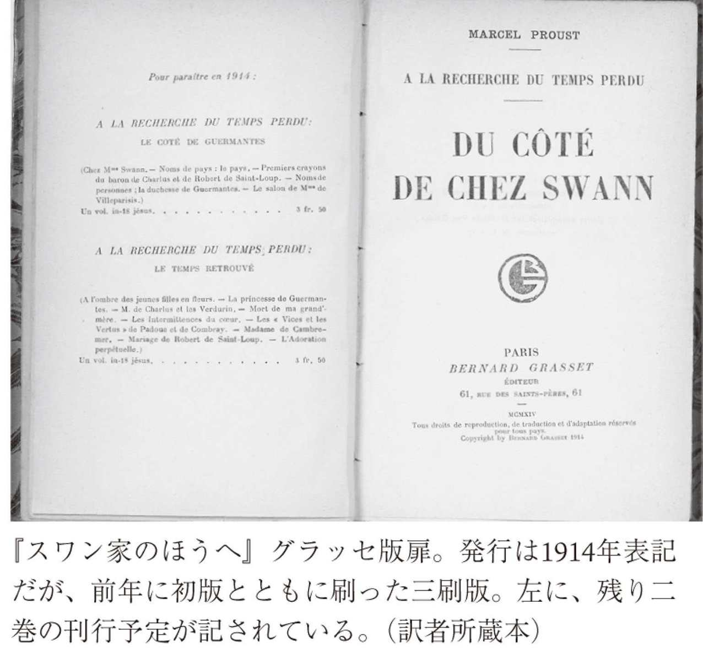

| 失われた時を求めて １～第一篇「スワン家のほうへＩ」～ | |
| プルースト | |
| (2010) | |
失われた時をもとめて１
第一篇「スワン家のほうへⅠ」
プルースト
高遠弘美訳
Title: À LA RECHERCHE DU TEMPS PERDU
Du côté de chez Swann
1913/1919/1987
Author: Marcel Proust
◎ご注意
本作品の全部または一部を無断で複製、転載、改竄、公衆送信すること、および有償無償にかかわらず、本データを第三者に譲渡することを禁じます。
個人利用の目的以外での複製等の違法行為、もしくは第三者へ譲渡をしますと著作権法、その他関連法によって処罰されます。

失われた時を求めて
本書はマルセル・プルースト『失われた時を求めて』個人全訳（全十四冊）の一冊目として、第一篇「スワン家のほうへ」第一部「コンブレー」を収録したものである。
作者と作品をめぐる詳細については各巻「読書ガイド」で適宜触れてゆくので、ここでは、大長篇の最初を飾る本書を読んで頂く上で、必要と思われる事柄と、本訳書の方針について簡単に記しておきたい。
一、 プルーストの文章はさまざまな（ときには突飛とも言える）譬喩に満ち、構文が複雑で、イメージと思考がアール・ヌーヴォーの唐草模様のように絡みあって展開してゆく場合が少なくない。一文が十行や二十行、切れずに続く箇所はほとんど数ページに一回はある。すらすら読めるところももちろん多いけれど、じっくり、何度も前後に行き来しながら読まなくては理解できないこともある。翻訳に当たってはなるべく読みやすいように工夫をしたが、それでも、原文の呼吸を生かすべく、ダッシュ（──）や括弧を多用して、息の長い訳文にしたところもないわけではない。どうか、そういうところは、一行一行丹念に、行きつ戻りつしながらゆっくりお読み頂きたい。改行も原文のままである。
また、譬喩はときとして、プルースト独特の思考経路をたどって出てくる場合もあれば、フランス文化、カトリック文化を背景になされる場合もあるが、私たち日本の読者としては、あまり小難しい理屈をひねり回すよりは、そのまま自由にそれらの譬喩を愉しめばいいのではないかと思う。
二、 プルースト生誕百年だった一九七一年のこと、福永武彦が「私はこの大長篇のうち、初めの方の四分の一ぐらいを読んだにすぎない」と新聞紙上で書いたことがある。中村真一郎とともに堀辰雄の愛弟子であり、すぐれた仏文学者でもあった小説家のこの告白がどこまで本当かわからないとしても、この国で、プルーストを読破するということが何か、プルースト教とでも言うべき「神秘主義（オカルティズム）」に通じるための一種のイニシエーション（加入儀礼ないし秘伝伝授）のようになっていたことは否めないのではなかろうか。もしかすると、福永はそういう空気が厭で噓をついたかもしれないのである。
今回の拙訳が目指したことのひとつは、プルーストをそうした秘儀的な、ときには苦行めいた読書から解き放ち、プルーストをふつうに手に取って読み進めてゆくことの喜びを読者に実感して頂く点にある。プルーストを敬して遠ざけるのはいかにも勿体ないし、また、読んだからと言ってその事実をわざわざ他人に吹聴する必要もない。プルーストはもっとも個人的な読書の経験として、この先も長い間にわたって、読者の裡で存在し続けるはずだからである。そのために読者である私たち（言うまでもなく、訳者たる私も読者のひとりである）に求められるのは、一九一三年の読者に戻ることだ。だが、これにはいささか説明が必要だろうか。
『失われた時を求めて』の第一篇「スワン家のほうへ」がグラッセ書店からプルーストの自費で刊行されたのは一九一三年十一月十四日金曜日のことである。千七百五十部。プルースト四十二歳。この初版は順調に売れて、十二月にはグラッセ書店では再版を決める。
さて、いま、読者の皆さまは一九一三年の暮れのパリにいる。すでに作者自身のインタビュー記事、モーリス・ロスタンやリュシアン・ドーデやジャン・コクトーによる書評が出て、書店でも新刊書として並べられている。だが、あなたはそれらの記事をひとつも読んではいない。ただ、マルセル・プルーストという初めて目にする作家の『失われた時を求めて』「スワン家のほうへ」という書名にどことなく引かれて、五百二十八ページもある分厚い一冊を手に取って、最初のページを開いて立ち読みを始める。
長い間、私はまだ早い時間から床に就いた。ときどき、蠟燭が消えたか消えぬうちに「ああこれで眠るんだ」と思う間もなく急に瞼がふさがってしまうこともあった。そして、半時もすると今度は、眠らなければという考えが私の目を覚まさせる。私はまだ手に持っていると思っていた書物を置き、蠟燭を吹き消そうとする。
これは家に帰ってゆっくり読まなくてはという思いに駆られたあなたは代金三フラン五十サンチームを払って、家路を急ぐ。そうして読み始めたあなたの頭に「意識の流れ」とか「無意識的記憶」とか「心情の間歇」とか「二十世紀文学の金字塔」とか「マドレーヌ」とか「同性愛」とか「藝術論」といった用語が浮かぶことはない。あなたは一語一語を追いながら、いつしかプルーストの世界に入り込んでゆく。目的地を知らされていない長期にわたる航海。しかしそれが、読書というものではなかったろうか。二重人格の話とは知らずに『ジーキル博士とハイド氏』を読んだ一八八六年の読者。犯人を知らずに『アクロイド殺し』を読んだ一九二六年の読者。彼らと同じように、まったく新鮮な感動とともに、プルーストを読む愉しみ──それが読者を最後まで導いてゆくのではあるまいか。というより、それがなくて、どうして最後まで読み続けることができるのか。ひとたび最後まで読了したあとも、なぜいつまでも手もとに置いて再読したくなるのか。大切なのは、何かのためにプルーストを読むということではなくて、プルーストの世界に惹かれた読者が、もっと自由にプルーストを愉しみ、その経験を豊かに拡げてゆくことだ。本書の訳者はそう考え、今までのプルースト訳のほとんどとは違って、伏線の指摘も、全体の構成や筋道の案内もしないことにした。これは、先がわからずに読んで、なおかつ、プルーストの本質を理解し得た当時の読者と同じ経験をして頂きたいと願ったからにほかならない。ドイツの批評家エルンスト・ロベルト・クルティウスのプルースト論はもっともすぐれたプルースト論のひとつであるが、それは作品がすべて完結しないうちに書かれていることを想起しよう。あるいは『Ｏの物語』の作者、ポーリーヌ・レアージュ、別名ドミニック・オーリー（本名アンヌ・デクロ）のこんな言葉を思い出しておいてもいい。
第一学級か哲学級かのときだったと思います［日本の高二か高三］、「新フランス評論（ＮＲＦ）」を買いました。そう、その年の、その月の号には、今まで名前を聞いたこともなかったマルセル・プルーストという名義で書かれた文章が載っていたんです。タイトルは「心の間歇」［『失われた時を求めて』第四篇「ソドムとゴモラ」の挿話。一九二一年十月号掲載］でした。すぐにそれを読んだ私は、翌日、その作家が出している本を買いに本屋に行きました。（略）私は今でもプルーストを各巻三冊ずつ持っています。一冊は田舎の家に、一冊は母の家──母の家だった家、あと一冊はここの私の家に置いてあります。
三、 前項とも関係することだが、一九一三年の初版刊行当時、『失われた時を求めて』という総題のもとに書かれるべき小説は全三巻のはずだった。一九一四年に大戦が始まり、一年後に刊行される予定だった第二巻は急激に変貌を余儀なくされ、作品はどんどん膨らんでゆく。実際に第二巻が刊行されたのは一九一九年のことだった。しかし、一九一三年暮れに「スワン家のほうへ」を読み始めた読者はそのことをまだ知らない。本書の読者もできれば一九一三年当時の読者と同じように、虚心坦懐に作品の言葉と向かい合って頂きたいと思う。
ただし、ひと言つけ加えておけば、本巻最初の数十ページを読み通すのは最初は容易ではないかもしれない。プルーストの原稿を託されたある出版社は「紳士たる者が、眠りにつく前にベッドで輾転反側するさまを描くのに三十ページを費やすということが理解できません」と書き送って、プルーストを失望させたという話もあるくらいで、場合によっては、最初のうちは飛ばし読みをして、プルーストの呼吸がのみ込めたら最初に戻ればいい。要は、机にかじりついて「お勉強」のようにプルーストを読むのではなく、横になってでも電車に乗りながらでも、ともかく気楽にその世界に浸ること。それがプルーストを読み通すコツである。
四、 ところで、作品を読むのに必要な時代背景等について簡単に書いておこう。サロンや社交界、ドレフュス事件や第一次大戦その他については適宜該当する巻で触れるとして、今回は第一巻の前提となる事柄をまずはいくつか記すにとどめたい。
第一巻の中心となる時代は十九世紀の後半、より正確に言えば、一八八〇年代半ばから十年間ほどで、語り手の「私」の五歳から十四、五歳に相当する。日本で言えば、明治十八年くらいからの十年間。とはいえ、『失われた時を求めて』の魅力のひとつに、縦横に行き来する曖昧模糊とした時間の流れがあることも確かで、はじめてプルーストをお読みになる読者は、大まかに十九世紀最後の四半世紀くらい（第三共和政下）を念頭に置いて頂ければと思う。中央ではカトリック教会の政治力が弱められてゆく時代ではあるけれど、教会が及ぼす精神的な力はいまださほど損なわれてはいない時期であり、政治的には共和政下ではありながら、王党派や日和見派も隠然たる力を発揮しようとしている時代である。電球はまだ普及せず、「voiture（車）」と言えば馬車を意味していた。
本巻から登場しているのは裕福なブルジョワ（語り手の家族やスワン）、大貴族、田舎貴族（の血縁）、使用人、村の人びと、司祭、高級娼婦、ユダヤ人などである。たとえばゾラが描いた「民衆」は出てこない。保守的なブルジョワからすると、階級は固定されたままで、相互に移動することはあり得ないと考えられていた。公認仲買人［大蔵省任命の証券仲買人］を父に持つブルジョワでありながら上流社交界の寵児たるスワンは、それゆえ、語り手の家族の知り得ないスワンということになる。第二巻以降、社交界が描かれてゆく過程で、読者は第一巻の登場人物の「変貌」に立ち会うことになるだろう。だが、それはまだ先の話である。
語り手の一家についても、本巻に関係するところを中心に、ごく簡単に述べておこう。裕福な両親はふだんパリで暮らしているが、休暇を父親の故郷であるコンブレーのレオニ叔母の家（所有者はレオニの母親である「大叔母」）で過ごす。レオニ叔母は近郊にいくつも土地を持つ、やはり裕福な女性。女中フランソワーズ以外にも、給仕長、炊事係の女中を雇っている。コンブレーにはレオニ叔母とその母親の大叔母を囲むようにして、語り手の両親や祖父母のほか、祖母の二人の妹も集う。
五、 フランス語では血縁関係を示す言葉が曖昧である。「両親」をあらわすparentは「親戚」「親族」「先祖」をも意味するし、「家族」を意味するfamilleは「妻子」「子どもたち」「親族」「親戚」「一族」をもあらわす。また、厳密には「大叔母・大伯母」や「大叔父・大伯父」であっても、単に「叔母・伯母」「叔父・伯父」と表記されることもよくある。さらに、日本語では「叔母」等にならない縁者を「叔母」とすることもある（レオニ叔母と「私」を巻頭の家系図でご覧頂きたい）。逐一註を附けるのも読書の流れを阻害しかねないから、原文でtanteとあれば「叔母・伯母」と訳してはいるが、実は「大叔母・大伯母」だという場合が少なくない。また、「叔」「伯」の使い分けも既訳それぞれがまちまちである。その意味では私の「使いわけ」も便宜的なものでしかない。そのあたりはどうかあまり気になさらずに読み進めて頂ければと願うばかりである。
六、 繰り返すが、伏線や今後の展開や登場人物、作者自身等に関する註は極力避ける代わりに、作品の細部の理解に資すると思われる註はなるべく多く附けた。既訳に見られない図版の註を可能な限り入れたのもそのためである。
七、 本書に収録された「コンブレー」に関する解説、並びに既訳との違いについては、巻末の「読書ガイド」にいささか詳しく記した。ただ、今までプルーストを訳して来られたすべての先達に、心底からの敬意と感謝を申し述べたいと思う。諸先達の訳業がなければ拙訳が生まれるはずもなかった。
それでは、皆さまの読書の時間が充実したものになることを心より祈りつつ、これから長く続くマルセル・プルースト『失われた時を求めて』の幕を上げることにしよう。
第一章
長い間、私はまだ早い時間から床に就いた。ときどき、蠟燭が消えたか消えぬうちに「ああこれで眠るんだ」と思う間もなく急に瞼がふさがってしまうこともあった。そして、半時もすると今度は、眠らなければという考えが私の目を覚まさせる。私はまだ手に持っていると思っていた書物を置き、蠟燭を吹き消そうとする。眠りながらも私はいましがた読んだばかりの書物のテーマについてあれこれ思いをめぐらすことは続けていたのだ。ただ、その思いはすこし奇妙な形をとっていて、本に書かれていたもの、たとえば教会や四重奏曲やフランソワ一世とカール五世の抗争（１）そのものが私自身と一体化してしまったような気がするのである。そうした思い込みは目が覚めても少しの間は残ったままだ。それは私の理性を混乱させることはないが、鱗のように目に覆いかぶさるので、燭台の灯がもう消えているかどうかを確かめることはできない。だが、かような思い込みはしだいに意味不明なものに変わってゆく、あたかも輪廻転生を経たあとの前世の思考のように。書物のテーマは私から離れ、それをさらに追うか否かは私の裁量に任される。と、ただちに私は視力を回復し、自分のまわりが暗闇であることに気がついて愕然とする。その闇は目に優しく、目の疲れを癒してくれるが、私の精神にとってはおそらくもっと優しく、癒しに満ちたものだ。私の精神からすると、暗闇ははっきりとした理由もなく存在する人知を超えた、まさしく曖昧模糊としたものに思われる。いったい何時になったのだろうと私は考える。汽車の汽笛が聞こえてくる。それは近く、また遠くから聞こえ、ちょうど、森のなかで一羽の鳥が鳴いたときのように、あいだに横たわる距離を際立たせ、旅人が近くの小駅に急ぎ足で歩いてゆく荒涼とした平原の広がりを私に感じさせた。はじめての場所、慣れぬ振る舞い、つい最前までしていたおしゃべり、夜の静寂のなかでいまなお後ろから聞こえてくるような気がする、我が家ならぬ灯のもとで交わされた別れの言葉、帰路につくと思うとゆくりなくもこみ上げてくる喜び......こうしたことで昂ぶる胸の思いは、旅人がたどる細い田舎道をくっきりとその記憶のうちに刻むだろう。
私は、気持ちのいい枕の両側、頰を思わせるあたりにそっと自分の両頰を押し当てる。枕の頰は私たちの幼年時代の頰のように、ふっくらとしてさわやかに感じられる。時計を見るために私は燐寸をする。もうじき午前零時になる。午前零時。それは旅を余儀なくされて、見知らぬホテルで寝なくてはならない病気持ちの男が、発作で目が覚めた拍子に、ドアの下から差し込む一条の光に喜びの声をあげる頃おいである。ああ、よかった。もう朝になった！ もうすぐ従業員たちも起こされるだろう。そうしたら呼び鈴を鳴らせばいい。誰かが助けにきてくれるはずだ。助けてもらえるという期待が、苦痛に耐える勇気を与えてくれる。そう、いましも、足音が聞こえたではないか。しかし、足音は近づいたかと思うと、遠ざかってゆく。ドアの下の光の筋も消えてしまった。ほんとうはいまは真夜中で、ガス灯が消されたところだ。最後の従業員も行ってしまったから、一晩中、薬のないまま苦しまなくてはならない。
私はふたたび眠りにつく。ときおり目覚めても、それはもうごく短い瞬間の目覚めでしかない。壁板が自然にきしむ音が聞こえたり、目を開けて万華鏡のような闇を見つめたり、一瞬差す意識の光に支えられながら、家具や部屋、つまり、私自身がその小さな一部にすぎないすべての事物（その一瞬が過ぎれば、私はすぐにそうした事物そのものの無感覚状態のなかに戻ってゆくのだが）を包み込む眠りの世界を味わったりするのはそんなときである。あるいはまた、眠りながら私はいとも簡単に、永遠に過ぎ去った幼少期のある時期に戻って、たとえば私の大叔父が巻き毛を引っ張らないだろうかといった、いかにも子どもっぽい恐怖をいままた味わったりもした（その恐怖は、少し大きくなって巻き毛を切られた日（２）に忽然として消えた。それは私にとって新たな時代の始まりを意味した）。眠っているときには巻き毛を切られた日のことを私は忘れているのだが、何とか目覚めて、ああこれで大叔父の手から逃れたと思ったとたん、その記憶が蘇ってくる。それでも、万一の場合に備えて、ふたたび夢の世界へ戻る前に、私は枕ですっぽり頭を隠すのだった。
眠っている間に、ときには、イヴがアダムの肋骨から生まれたように、無理な姿勢を続けて痺れた腿から、女がひとり生まれ出ることがあった。自分がまさに味わおうとしていた快楽から生まれた女なのに、私は快楽を与えてくれるのはまさにその女しかいないと考えてしまう。私の体は女の体を通して私自身の官能のほてりを感じ、女の体とひとつになろうとして、目が覚める。ついいましがた別れたばかりのその女に比べれば、ほかの人間などはるかに遠い存在のように思われた。私の頰は女の口づけでいまだほてっていたし、体は女の胴体の重みでぐったりしていた。その女が──ときとしてそういうことがあったのだが──かつて出会ったことのある女の特徴を備えているときは、その女のことを思い出すという目的に私は全力を傾注した。あたかも、かねてより憧れていた都市をこの目で見るために旅に出る人びと、夢で見た魅力を現実に味わうことができると考える人びとのように。しかし、女の記憶は少しずつ消えてゆき、私は自分の夢に出てきた女をいつしか忘れているのだ。
眠っている人間は身のまわりに糸にも似た時の流れを、そして、長い歳月やさまざまな世界が持つ一定の秩序を輪のように巻きつけている。目覚めたとき、人は本能的にそれらを探って、自分が現在いる地点や目覚めまでに流れた時間を即座に読みとろうとする。だが、時の流れやそうした秩序はもつれて渾沌としているかもしれないし、切れたり壊れたりしている可能性もある。眠れぬままに朝を迎え、ふだん眠るときなら絶対にしない姿勢で本を読んでいてようやく眠気に襲われたような場合は、片腕を持ち上げるだけで、太陽をとどめ、後退させることもできるだろうが（３）、眠りから覚めた直後は何時かもわからず、ついさっき床についたばかりだと考えたりするかもしれない。あるいはそれよりも不自然で、寝るにはほど遠い姿勢、たとえば、夕食のあと、肘掛け椅子に座ってうとうとしたようなときには、身のまわりの世界は秩序を失い、完全に変調をきたすだろう。それは魔法の椅子に座ったまま全速力で時空を旅するようなもの（４）であり、まぶたを開けた瞬間には、自分が寝たのは何ヶ月も前、それも別の国でだったと思うに違いない。だが、私の場合は、自分のベッドで横になり、深く眠って、精神の緊張が完全にゆるみさえすれば、それと同じ状態になる。私が眠りについた場所の見取り図を手放してしまった精神は、真夜中に目覚めたとき、自分がどこにいるか認識できない。最初は自分が誰かということすらわからないのだ。私のうちにあるのはただ存在しているという、もしかしたら動物がもっとも深い部分でその震えを感じているかも知れない、単純きわまる感覚だけである。私に比べたら、大昔、洞窟で暮らしていた人びとのほうがまだ何かを保有していただろう。そのとき、記憶──と言って、いまいる場所の記憶ではなく、かつて暮らしたことのある場所やいたかもしれない場所の記憶──が、ひとりでは脱出できない虚無から私を引き上げるために訪れる天の救いのように私の内に立ち返ってくる。一瞬のうちに私は何世紀にも及ぶ文明の歴史を飛び越える。石油ランプや折り襟になったシャツがぼんやりと見え、それで私という存在を形づくるあらゆる特徴が少しずつ元のかたちを取り戻してゆくことになるのだ。
私たちの周囲の事物が不変不動に思われるのはおそらく、それらが他の事物ではあり得ない、当の事物そのものであるという私たちの確信のせい、ないしは、それらを前にした私たちの考えが不変不動であるせいである。だが、いずれにしても、そのような目覚めを迎えるときは、私の精神はさわさわと浮き足立って、自らがどこにいるかを空しく突き止めようとする。その結果、闇のなかですべて──事物も国も歳月も──が私の周囲をぐるぐると回ることになる。動けないほど疲れ切っている私の体は、どこにどのような疲労が溜まっているかによって、自らの四肢の位置を正確に知ろうとするが、それはその作業を通じて、壁の向きや家具の位置を推し量って、いまいる場所を頭のなかで再構成し、自分がどこにいるのかを特定するためだ。体の記憶、脇腹や膝や肩の記憶が次々に喚起するのは、かつて体がそこで眠ったことのある部屋にほかならない。その一方で、暗闇の中で体を取り巻く目に見えない壁は、頭に浮かんだ部屋の形に合わせて場所を変えながらめまぐるしく動いているのだ。状況をすり合わせて自分がどこで寝ているかを頭が判断する前に（頭は時間と形態をまだはっきりと見定める段階に至っていない）、私の体のほうは、それぞれの場所について、ベッドの種類、ドアの位置、窓からの光の入り方、廊下の有無を思い出す──しかも、寝つく寸前に頭に浮かび、目覚めたときにも消えていなかった想念とともに。麻痺したような脇腹は、いまどちらを向いているのかを探ろうとして、たとえば、天蓋附きのダブルベッドで壁に向かって横になっていると想像する。すぐに私は思う。「なんだ、お母さんがおやすみを言いに来てくれなかったのに眠ってしまったんだ」。私は、何年も前に他界した田舎の祖父の家にいたのだ。私の体や、下側にした脇腹は、私の精神が決して忘れてはいけなかったある過去の忠実な番人として、私に、コンブレーの祖父母の家の私の寝室にあった、天井から細い鎖で吊るされたボヘミアンガラス製の壺型常夜灯のともしびやシエナ産大理石でできた暖炉を想起させた。それははるかに遠い日々のことではあったが、正確に頭に描くことこそできないとしても、いま現在目の前に存在するものとして想像することができたし、もうすぐ完全に目が覚めればもっとくっきりと目に浮かぶはずのものであった。
そして、また別の姿勢の記憶が蘇ることもあった。その記憶のなかでは、部屋の壁は違う方向に延びている。私がいるのはサン・ルー夫人の田舎の別荘で私にあてがわれた寝室だ。いけない！ もう十時をまわった。晩餐はもう終わってしまっただろう！ 毎夕、サン・ルー夫人との散歩のあと、食事にゆくための服を着る前にひと休みする習慣があるのだが、今日は寝過ごしてしまったらしい。そう考えたのは、コンブレーで過ごした日々からあまたの歳月が流れたからで、コンブレーでは、どんなに遅く帰るときでも、私の部屋のガラス窓に夕陽が赤く反映するのが見えた。タンソンヴィルのサン・ルー夫人の別荘での過ごし方はコンブレーとはまったく異なっていて、夜しか外出せず、昔なら陽光のもとで遊んだ道を、月光に照らされながらたどる。そこにあるのは別の種類の楽しみである。晩餐のために着替える代わりについうっかり寝込んでしまったと思った部屋、それは、外出から帰るときに、夜の闇のなかでただひとつ輝く灯台のようなランプのともしびのおかげで、遠くからでもそれとわかる部屋なのだ。
くるくると動き回るこうした曖昧な記憶は数秒しか続いたためしがなかった。そんなときはしばしば、ごくわずかの間ではあれ、私は自分がどこにいるかあやふやになったが、そうした状態をもたらすさまざまな推測をひとつひとつ区別することはできなかった。それは、馬が走る映像を見るときに、キネトスコープ（５）が映し出すひとつひとつの動きを分割して見ているわけではないのと同じである。しかし、やがてひとつ、またひとつと、今までの人生で住んだことのある部屋を思い浮かべ、ついには、目覚めに続く長い夢想を通して、すべての部屋を思い出した。まずは冬の部屋。そこは枕の隅、毛布の襟、肩掛けの端、ベッドのへり、「デバ・ローズ」紙一部［「ジュルナル・デ・デバ」紙の夕刊］といったおよそばらばらの要素を、あくまでも鳥の巣作りの技術を頼りに（６）、ひとつにまとめて、そこに頭を押し込んで寝る部屋であり、凍てつく天候の際には外の世界と隔絶していると思うことが喜びになる部屋でもある（鰺刺が大地の熱に包まれた地下の穴底に巣を作るのと似ている）。さらに言えば、暖炉の火が一晩中絶えることなく、暖かくけむった空気でできた大きなマント（ときおり、燃え上がる燠の放つ光に照らされる）に包まれて眠る冬の部屋は、目に見えぬ一種のアルコーヴ（７）か部屋の真ん中に掘られた暖かな洞窟、あるいは熱という境界で守られた、揺れ動く熱い領域であって、そこに、部屋の四隅や、窓の近くだったり暖炉から離れたりして冷たくなったところから冷気が漂ってきて、私たちの顔を冷やすのである。次いで、生暖かい夜に溶け込んでしまいたいと思う夏の部屋。半ば開かれた鎧戸にもたれかかるように差す月光は、ベッドの足もとまで延びて、その魔法の梯子をさしかけている。そこでは、かろうじて届く月光に照らされて微風に揺れる四十雀さながらに、ほとんど戸外で眠るようなものだ。ときとしてルイ十六世様式（８）の部屋があてがわれることがあった。その部屋はしごく明るくて、最初の晩から私はたいして悲しいとは思わなかった。天井を軽く支えている小円柱相互の間隔はじつに優美というほかなく、円柱と円柱の間にベッドが入るようになっていた。その逆の場合もときどきあった。小部屋なのに天井がむやみに高く、二階分の高さくらいまでピラミッド型に空間が穿たれていて、しかも、一部にマホガニーが張られている部屋である。入った直後からそれまで知らなかったヴェチヴェル［防虫剤や香料に使う植物］のにおいに気分が悪くなり、紫色のカーテンからは敵意を、そして、私がそこにいないかのごとく大きな音で騒ぎ立てる掛時計からは傲慢な無関心を突きつけられたような気がした。そこではさらに、部屋の一角を斜めにさえぎっている脚附きの四角い鏡、この情け容赦のない恐るべき鏡のせいで、いつもなら穏やかに、欠けることなく広がる私の視界に、予想もしていなかった空間が生々しい傷口として開いていた。私の想念は、正確に部屋のかたちをなぞり、いわば巨大な漏斗を隙間なく上まで満たすために、何時間もちりぢりになったり上のほうに伸びたりしたあげく、幾晩も苦しい時を過ごさなくてはならなかった。一方、私はベッドに横になって、目を上げ、耳をそばだてていたが、鼻孔はこわばり、心臓が早鐘を打った。とはいえ、それも習慣の力が働くまでのことで、いったんそうなればカーテンの色は変わり、掛時計は黙りこくり、斜めに置かれた残酷な鏡は惻隠の情を覚えるようになり、完全に消え去ったわけではないにしても、ヴェチヴェルのにおいも薄まって、天井の高さは見るからに低くなった。習慣！ 腕の立つ調整係だが仕事が遅いので、最初は仮住まいのまま何週間も私たちの精神は苦しまざるを得ない。それでも、精神からすれば、習慣と出会うことができれば幸せである。習慣の力を借りることなく自分の持っている手段だけで対処しようとしても、精神は、ある住まいを実際に住めるものにすることすらできないだろう。
たしかに、いまや私ははっきり目覚めてしまい、私の体も最後の寝返りを打ち、確かな事柄を司る善良な天使が私の周囲のゆらぎをすべて止め、そのおかげで私は自分の部屋で自分の毛布にくるまり、暗闇のなかでも、おおよその位置に、私の簞笥や机や暖炉、それに通りに面した窓や二つのドアがあることが感じられるようになった。だが、目が覚めたばかりの不確かな知覚のせいで、はっきりどこと思い浮かべたわけではないにしても、少なくとも自分がそこにいるのかもしれないと信じ込んだ住まいに実際はいなかったことがわかってもいまさらどうしようもなかった。私の記憶にはすでにはずみがついていたのだ。そんなときはたいてい、すぐにまた眠ることはせずに、コンブレーの大叔母の家で、バルベックで、パリで、ドンシエールで、ヴェネツィアで、またそれ以外の場所で家族の誰や彼やと過ごしたかつての日々を、さらに、さまざまな場所やそこで出会った人びと、そうした人びとについて実際に見た振る舞いや聞いた話を思い出して、夜の大半を費やすことになった。
コンブレーでは、毎日、午後の終わり近くになると──それは実際にベッドに横になり、眠れぬままに母親と祖母から遠く離れて過ごさなくてはならない時間よりずっと前だったのだが──寝室は心につきまとって離れない、つねに苦しみに満ちた場所となった。夕方、私があまりに悲しげな様子をしていると、幻燈を見せて慰めようと誰かが思いついて、夕食までの間、私のランプに幻燈機（９）をしつらえてくれた。幻燈が始まると、暗い壁にはたちまち、手でしかと触れることのできない虹色が輝き、多くの色合いの超自然的な幻影が現れ、さまざまな伝説の物語がステンドグラスに描かれたかのごとく一瞬の光のうちにゆらめくのだったが、それはあたかもステンドグラス職人の親方でもあったゴシック時代初期の建築家にならったかのようだった。されど、私の悲しみはそのためにますます深まるばかりだった。というのも、照明が変わるだけで、寝室に関する習慣が破られてしまったからである。就寝のときの責め苦のような苦しみは別として、習慣のおかげで寝室は何とか耐えうるものになっていたのだ。幻燈のせいで私は、もうその部屋が本来自分の寝室かどうかわからなくなって不安で一杯になるのだったが、それは、鉄道の駅を降りてはじめてやってきたホテルか山小屋の部屋にいるのと大差なかっただろう。
恐ろしい企みに満ちたゴロ（10）は馬にまたがり、ぎくしゃくした足どりで、丘の斜面を暗い緑でビロードのようにやさしく包む三角の森から姿をあらわし、哀れなジュヌヴィエーヴ・ド・ブラバンの住む城に向かってぴょこぴょこ跳ねてゆく。城は一本の曲線に沿ってカットされていたが、それは幻燈機のホルダー上下の溝に滑り込ませる枠に嵌められた楕円形のガラス原板の縁にほかならなかった。城の全体が見えることはなく、城の前に広がる荒野では、青いベルトを締めたジュヌヴィエーヴが夢想にふけっている。城と荒野は黄色だったが、それは幻燈に映し出された絵を見るまでもなかった。枠に嵌められたガラス原板より先に、ブラバンという名前から感じられる金褐色の響きが明々白々にそれを示していたからである（11）。ゴロは一瞬歩みを止めて、私の大叔母が弁士さながら大きな声で読み上げる口上に悲しげに耳を傾けているようだったが、すべてを理解しているふうにも見え、台本通りに、従順さを示しながらも、ある種の威厳を保っていた。それから、同じようにぎくしゃくした足どりで遠ざかってゆくのだが、ゴロのゆっくりした歩みをとどめることは不可能だった。幻燈機を動かせば、ゴロの乗った馬が窓のカーテンの上までも進み、襞の山のところでふくらみ、谷にさしかかると今度は斜面を下ってゆくのが私にもわかった。ゴロの体は、乗っている馬の体と同様に、超自然的な要素でできていたから、ゆく先々で遭遇する物質的な障碍や邪魔な物体を、自分の骨格として体内に取り込むことで何とか折り合いをつけていたのである。たとえドアノブであろうと、ゴロの赤い衣服や依然として高貴さと憂愁を漂わせる青ざめた顔は、その場所にたちまち順応して、その上に不死身の闘士よろしく浮かび上がった。椎骨を移植したようなものなのに、そこには苦痛の影すらなかった。
なるほど私は、メロヴィング王朝（12）の過去から発せられたように見える幻燈──私の周囲にかくも昔の歴史の反映を運んでくれるこうした輝かしい幻燈の世界に魅力を感じてはいた。とはいうものの、自らの自我でようやく埋めつくし、自我のことを気にしないのと同様に余計な気遣いをしなくてすむようになった部屋に、この種の神秘や美が侵入してくることで私が感じた不快感をどう説明したらいいだろうか。習慣という一種の麻酔作用が停止すれば、私はひどく悲しいことばかり考えたり感じたりするようになる。私の部屋のあのドアノブは世界中のどんなドアノブとも違って、わざわざ回さなくてもドアがひとりでに開く。そう思われるほど、ノブを手で回す動作が無意識のうちになされていた。そのドアノブがいまや、ゴロの星気体の（13）一部になっているのだ。夕食のベルが鳴るや否や、私は食堂（そこではゴロも「青髯」も知らないかわりに、私の両親や牛肉の煮込み料理のことはよく知っている大きな吊りランプが、毎晩同じ光を放っている）に急ぎ、お母さんの腕の中に飛び込む。ジュヌヴィエーヴ・ド・ブラバンの不幸のせいで、お母さんがいっそういとしく感じられたのである。その一方で、ゴロの犯罪のせいで、私はさらに念を入れて自分自身の良心を検討するはめになったのだが。
悲しいことに、夕食が済むとじきに、天気が良ければ庭で、悪ければみんなが集まる小さな客間で、まだ人びとと話し込んでいるお母さんと別れて私は寝室へ行かなければならなかった。みんな、とは言ったけれど、祖母は例外である。祖母はつねづね「田舎にいるのにうちのなかに閉じこもっているのはみじめですよ」と言っていたし、とくに雨がひどい日には、外にいないで自分の寝室に行って本を読みなさいと私に命じる父と果てしない口論をしたものだった。「この子を強く丈夫にするのにそんなふうではいけないよ」と祖母は悲しそうに言う、「とくにこの子は体力と意志の力をつけなくちゃいけないのに」。父は肩をすくめて晴雨計を確認する。気象学が好きなのだ。その間、母は音を立てて邪魔をしたりしないように気をつけながら、穏やかな尊敬をこめて父を見つめる。だが、じっと見続けるというわけではない。そんなことをして、父の優位の謎を解き明かすことになってはいけないと考えているからだ。だが、祖母はどんな天気であれ意に介さなかった。たとえ雨が激しく降ろうと、柳で編んだ高価な肘掛け椅子を、雨に濡れないようフランソワーズ［レオニ叔母の女中］が大慌てでしまい込まなくてはならない空模様であろうと、にわかに降り出した雨が打ちつける誰もいない庭で、祖母は乱れた灰色の髪の房をかきあげ、健康によい風と雨を額いっぱいに浴びて、こう言うのだった。「ああ、これでやっと息ができるわ」。そして、ぬかるんだ庭の小径──今度の庭師は自然に対する感受性というものを持ち合わせていないのに、父は今日は天気は良くなるだろうかなどと朝から庭師に聞いていたのだが、そんな庭師が好き勝手に、左右対称にあまりに拘泥しすぎて整えた小径──を、ぎこちなくはあるが、いかにも嬉しそうな足取りで、ちょこちょこ歩き回っていた。その小刻みな足取りを支えていたのは、嵐を前にした恍惚感、健康法の重要性、孫である私への莫迦げた教育、庭の左右対称といったものが引き起こしたさまざまな心の動きであって、プラム色のスカートに泥はねをつけないように歩こうという気持ちではなかった。そんなことを祖母は考えもしなかったから、泥はスカートの地の色がわからなくなるほど上まではねてしまい、つねに小間使いの嘆息と悩みの種となった。
祖母のこうした庭歩きが夕食後に行われるとき、祖母を家の中に呼び戻すことができたのは、庭めぐりの途中、トランプ台の上にリキュールが用意された小サロン［ガーデンルームを指す］の明かりの前に、虫が引き寄せられるかのように、定期的に祖母が戻ってくる頃合いを見計らって大叔母が発する次のような叫び声だけだった。「バチルド！ はやく帰っていらっしゃい。あなたのご主人がコニャックを飲んでしまうわ」。実際、祖父はリキュール［コニャックやラム酒も含まれる］を禁じられていたので、大叔母は祖母をからかうために（父の家系に、それまでとはまったく異なった精神を持ち込んだ祖母を、みんなは冷やかしたり困らせたりしていた）、あえて少しだけ飲むように祖父に仕向けたのである。かわいそうに祖母は、サロンに入ってくると夫に向かって、コニャックに口をつけないようにしきりに懇願するのだったが、祖父は腹を立てて、かまわず一口飲んでしまう。祖母は気落ちして悲しげな様子で出てゆく──ただし、微笑みを浮かべながら。祖母はじつに控えめで優しい人柄だったので、眼差しに浮かぶ一種の微笑みのうちに、他人に感じる愛情と、自分自身のことや自分が受けた苦痛などはほとんど気にかけない性質とが同時に現れていた。祖母の眼差しに皮肉が込められているとすれば、それは世の多くの人びとの場合とはまったく逆に、自分に向けられていたのであり、私たち皆に対しては、大切にしたい人たちがいれば情熱のこもった眼差しを注いで愛撫せずにはいられないその目でキスを送っているかのようであった。祖母に対する大叔母のこうした仕打ちは──それは祖父にリキュールのグラスを手に取らないように言っても結局は空しく終わる祖母の懇願、そもそも聞き入れてもらえない祖母の弱さを目の当たりにするということでもあったのだが──周囲の者たちにとっては、いつしか見慣れて、笑いながら見ていたり、これはいじめではないと自分に言い聞かせて、迷うことなく、進んでいじめる側に回ったりするたぐいのものだった。当時の私はそんな行為に激しい嫌悪を感じて、大叔母を殴りたいとすら思っていた。だが、「バチルド！ はやく帰っていらっしゃい。あなたのご主人がコニャックを飲んでしまうわ」という声が聞こえると、すでに卑怯という点で大人の仲間入りをしていた私は、一般に大人たる者たちが、苦しみや不正を前にしたときにとる行動を繰り返した。すなわち、見ないふりをしたのである。私は勉強部屋に隣接する屋根裏の小部屋に上がって、声を上げて泣いた。そこではアイリス［根茎を芳香剤にする］だけでなく、高い石壁の隙間から外に伸びて、花のついた枝をなかば開いた窓のなかへ差し込んでいる野生の黒すぐりの香りもした。本来はもっと特殊で尾籠な用途にあてがわれたこの小部屋（14）からは昼間はルーサンヴィル・ル・パンの城の主塔が見えた。そこだけが私が鍵をかけても許される場所だった。その部屋は、読書や夢想、涙や官能といった、絶対的な孤独を必要とする私の行動すべてにわたって隠れ家のような役割を果たしていたと言っていい。ああ、当時の私はどうしてわからなかったのか。午後や夕方の絶え間ないそぞろ歩きの最中も、私の意志の弱さや虚弱体質、さらにそれらが示す先々の不安といったものが、祖父がいくらか不摂生になることなどよりはるかに、祖母の心に暗い翳を落としていたということが。祖母は美しい顔を太陽に向かって斜めに上げ、私たちの目の前を行き来する。皺が刻まれた祖母の褐色の頰は、更年期を過ぎて、いまや耕作後の秋の畑を思わせる薄紫に近い色に染まり、外出のときはなかばまで上げられた帽子のヴェールで遮られてはいるものの、そこには、寒さもあろうけれど、何か悲しい思いもあってか、知らず知らずのうちにこぼれた涙がいつも一粒乾きかけていた。
寝る時間になって二階に上がってゆくとき、私の唯一の慰めとなったのは、ベッドにもぐり込んだころにお母さんがキスをしに来てくれることだった。とはいえ、このおやすみはほんの一瞬で終わって、母はそそくさと階下に戻ってしまうので、階段を上ってくる音が聞こえ、藁で編んだ小さな結び紐が垂れた青いモスリンのガーデンドレスの軽い衣ずれの音が、両開きのドアがある廊下を伝わってくるころになると、私は苦痛を味わうことになった。それはそのあとに続く時間、つまり、母が私のもとを離れてふたたび一階に降りてゆくのを予告していたからで、ついには私はかくも大切なこのおやすみが、なるべく遅くなること、お母さんがまだ来なくてただ待っている時間がこのまま続いてくれることを強く願うに至ったのである。私にキスをしたあと、ドアを開けて出てゆこうとするときに呼び戻して「もう一度キスをして」と言おうとしたことは何回もあったけれど、そうすれば母がすぐに怒った表情をすることは私にもわかっていた。というのは、二階にわざわざ上ってきて私にそうした平安のキス（15）をすることで、私の悲しみや不安を紛らわすという母なりの譲歩は、そんな儀式は莫迦げていると考えている父を苛立たせたからで、母もできるなら私がおやすみのキスを必要としなくなり、その習慣もなくなっていくことを望みこそすれ、自分が部屋を出てゆこうというときにもう一度キスをせがむ習慣を私に認めてもいいなどとはとうてい考えていなかったのだ。ところで、母が私のベッドのほうに情愛に満ちた顔を傾け──あたかも私の唇がそこから母の実在（16）と眠りにつくための力を汲み取る親睦の聖体拝領のホスチア（17）のように──その顔を近づけてくれるときに感じる心の平安は、母が怒った顔をしているのを目の当たりにするだけで、がらがらと崩れていった。さりながら、お母さんが結局はほんの僅かの時間しか私の部屋にいないそんな晩も、晩餐客がいる夜に比べればずっと甘美だった。客がいれば、母はおやすみを言いに二階に来てはくれなかったからである。客はふつうはスワン氏に限られていた。通りすがりに立ち寄るさして馴染みのない人たちを別にすれば、彼はコンブレーの私たちの家を訪れるほとんど唯一の人間で、肩肘張らない夕食をしにやってくることもあれば（あの評判の悪い結婚をしてからは、私の両親が彼の妻に会いたがらないという理由で間遠にはなったけれど）、夕食後にふらりと訪ねてくることもあった。夕方、家の前の大きなマロニエの下で、鉄製のテーブルを囲んで座っていると、庭の隅で鈴の音がする。それは、家の誰かが「呼び鈴に触れずに」入ろうとして、つい無造作に鳴らしてしまったきんきんした音の大きな鈴──鳴らした本人も、いつまでも鳴り止まぬ冷たい鉄の響きを浴びせかけられてうんざりする鈴──ではなくて、来客用の小さな釣り鐘型の鈴の、形のままにまろらかで金色を連想させるような音、それもおずおずと二度鳴らされる音だった。みんなはすぐに顔を見合わせて、「誰かいらしたけれど、いったいどなたでしょうね」と言う。だが、スワン氏以外ではあり得ないことがみんなにはよくわかっていて、大叔母はなるべくわざとらしくならないように調子を整えながら、そんなふうに小声で話すものではないわ、おいでになった方にそれほど嫌みなことはないわよ、それではまるで聞かれたくないことを話していたと思われてしまうじゃないのと、大きな声で、みずから範を示すかのごとく言うのだった。斥候役を仰せつかった祖母はもう一回庭めぐりをする口実ができたので、いつも嬉しそうだったが、与えられたその機会を生かして、薔薇の木の添え木を何本かこっそり引き抜いて、薔薇そのものにもう少し自然な感じを与えようとしたりした。そんなしぐさは、床屋であまりに平らになでつけられた息子の髪に手を入れてふっくらとさせる母親を思わせた。
祖母がもたらすはずの敵の情報を私たちは今か今かと待っている。あたかも、攻撃してきた敵が誰なのか、あまたの可能性があって、いまだ決めかねているときのように。ややあって祖父が言う、「スワンの声だと思うよ」。実際、声でしか認識できない。蚊が寄ってこないようにできるかぎり庭の明かりを落としてあるせいで、鷲鼻、緑の目、ブレサン（18）風に短く刈ったほとんど赤毛に近い金髪に縁どられた秀でた額といった顔の特徴までははっきりわからないからである。私はさりげなく席を立って台所へゆき、シロップ（19）をもってくるように頼む。祖母は来客のときだけ特別にシロップを出すと思われないようにすることがすこぶる大事だと思っていたし、そのほうが親切だと考えていた。スワン氏は父親が私の祖父の親友の一人だったこともあって、年齢こそずいぶん離れていたが、祖父と仲が良かった。スワン氏の父親はいたって気立てのいい人物だったが、一風変わったところが見受けられて、何かの激情に突き動かされていてもふとしたことで熱が冷めたり、考えをがらりと変えたりすることがときどきあったようである。スワン氏の父親が昼夜をおかず看病した妻が死んだときどういう態度を取ったかという同じ話を、私は一年に何度も祖父から聞かされていた。スワン氏の父親にしばらく会っていなかった祖父は訃報を聞いて、スワン家がコンブレー近郊に所有している屋敷まで駆けつけた。納棺の現場にいなくてもいいように、涙に暮れているスワン氏の父親を首尾よく、亡骸の置かれた部屋からしばしの間連れ出した祖父は、ふたりで薄陽の射す庭園を歩きはじめた。とそのとき、突然スワン氏の父親が祖父の腕をつかんでこう叫んだのである。「ああ、古くからの友達と、こんないい天気のときに散歩できるなんて、最高だね。ほら、あなたも素敵だと思わないかな。どの木も、どの山査子も、それに、あなたは一度も褒めてはくれないけれど、私の池も。おや、あなたは何だか悲しそうに見えるね。このそよ風、わかるよね。誰が何と言ったって、人生にはやっぱりいいところがある。そうだろう、ねえ、アメデ」。そのとたん、彼のなかで、死んだ妻の記憶が蘇った。スワンの父親は、よりによってこんなときに、どうして自分は喜びの衝動に身をまかせたか、その理由を探るのはあまりにややこしいと考えたのだろう、ただ、困難な問題が頭に浮かんだときにいつもしてきたように、額に手をやり、目を拭いて鼻眼鏡のレンズを拭うだけでその場をやり過ごした。しかし結局、彼は妻の死から立ち直ることができなかった。妻の死後、二年間生きていた彼は私の祖父によくこう言っていた。「おかしなものでね。可哀想な女房のことはしょっちゅう考えるんだが、一度にたくさんは考えられないんだよ」。それから祖父は、「しょっちゅうなんだが、一度に少しだけ、可哀想なスワンの親父みたいにね」という科白が気に入っておよそ異質なさまざまな事柄についてもその言い方をした。祖父のことを私は最高の判事と考えていたから、彼の下す判断が私にとっての判例となって、その後もしばしば、私一人の判断ではすぐに非難する側にまわりかねない他人の過ちを許すきっかけとなったのだが、その祖父が「どうしてだい？ あれは優しい人間だよ」と言って反論してこなければ、スワンの父親は私の目には人でなしとして映ったままだっただろう。
とくに結婚する前がそうだったのだが、スワン氏（息子のほう）は何年にもわたって、頻繁にコンブレーの私の大叔母と祖父母に会いにやってきた。大叔母や祖父母はスワン氏がいまだにその係累が出入りしている社会で暮らしていると思っていたし──それに、私の家ではスワンという名前が身を隠すかりそめの名として機能していたせいもあって──自分たちが、あたかも廉直な宿屋の主人がそれと知らずに有名な強盗を泊めてしまうのにも似た邪気のなさを発揮して、ジョッキークラブ［パリ社交界有数のクラブ］のもっとも洗練された会員の一人にして、パリ伯爵（20）やプリンス・オブ・ウェールズ（21）のお気に入りの友人、フォーブール・サン・ジェルマン（22）の上流社交界の寵児の一人を泊めていることなど、想像すらできなかったのである。
スワンが送っている輝かしい社交生活を私たちがまったく知らなかったのは、ひとつにはスワン自身の慎ましやかで控えめな性格ということもあったのだが、同時に、当時の中産階級の人びとが社会について、いくぶんインド風の考え方をしていたことにも起因している。彼らの考えでは、社会は閉鎖的なカースト制度で成り立っていて、生まれたときから親の属す階級に帰属しているから、もろもろの偶然か例外的な経歴、ないしはよほど恵まれた結婚といった要素がなければ、上のカーストには入り込めない。スワンの父親は公認仲買人［大蔵省任命の証券仲買人］だったので、「息子のスワン」は生涯を通じて、あるひとつのカーストに属さざるを得ない。そこではせいぜい財産が、納税者のランクが上下するように、ある一定の収入の間で増減を繰り返すだけだ。父親の交友関係はわかっている。であれば、息子の交友関係、いまどういう人たちと親交を結びうる「立場」にあるのかもわかる。もし、それ以外の者たちとつきあっているとすれば、それは若い男にありがちなつきあいなのだから、私の家の者たちのように昔から彼の家族と親しくしていた人びとは、彼が両親を亡くしてからもすこぶる律儀に訪ねてきたことに免じて、そうした交友関係には気持ちよく目をつぶってあげようと考えていた。私たちの知らない知り合いとは、もし私たちと一緒のときにばったり出会ったとしたら、スワンとしてもあえて紹介することができないたぐいの輩に違いない。もしスワンを、その両親と同程度の仲買人の息子たちと並べたときに、スワン個人が示す社会的な指数がどうなるか、無理にでも答えを出そうとすれば、それは実際のスワンよりいくぶん低い数値になったことだろう。スワンはまったく気取らぬ男だったし、以前からずっと骨董と絵画に「うつつを抜かして」いて、大叔母にはとてもまともな人間の住むところではないと思われたオルレアン河岸（23）のとある古い邸宅に、蒐集した品々を山のようにため込んで暮らしていたからである（祖母はその館に行ってみたいと思っていたのだが）。「あなた、せめて目は利くのでしょうね。あなたのためを思ってこんなことをお尋ねするのよ。だって、あなた、画商たちの言いなりになって、二束三文の絵を高値で買わされているのに違いないんですもの」と大叔母はスワンに口癖のように言った。事実、大叔母はスワンにその分野の知識があるとは少しも思っていなかったし、会話では深刻な話題を避け、料理のメニューについて微に入り細を穿って話すときだけではなく、私の祖母の妹たちが美術の話をしているようなときでも、おそろしく散文的な正確さだけは保とうとするスワンのような男が知的な面で優れているとは考えてもみなかったのである。何かの絵について祖母の妹たちから意見を求められたり、どういう点が素晴らしいのか説明してほしいと言われたりしても、スワンはほとんど無愛想に口をつぐんでいたが、その絵の所蔵美術館や製作年代について具体的な情報を提供できるときは言葉を重ねて、沈黙の埋め合わせをした。しかし、ふだんは、私たちが知っている誰それ、たとえばコンブレーの薬屋や我が家の料理女や我が家の馭者といった人たちと彼の間に最近起こった出来事を毎回話題にのぼせ、私たちが面白がるならそれでいいと考えているようだった。たしかにその種の話は大叔母を笑わせたが、笑っている本人にはそれが、スワンが話のなかでいつも滑稽な役まわりを自分で引き受けるせいか、それとも、スワンの話し方が機知に富んでいるせいなのかはわからなかっただろう。「スワンさんったら。ほんとうにあなた、変わった方よね」。私たち一家のなかで大叔母だけがいささか俗っぽいところがあったから、誰かがスワンのことを話題にすると、知らない人にまで、スワンはもしそうしようと思えばオスマン大通りにもオペラ通り［当時の中産階級の憧れの界隈］にも住むことのできる人で、父親のスワン氏から四、五百万フラン［今の日本円で数十億円］の遺産をもらっているはずだけれど、ただ自分の気まぐれで今のような生活をしているのだなどと、わざわざ指摘したりした。スワンの気まぐれは他の人たちにも興味深いだろうと考えていた大叔母は、パリにいるとき、スワンが元日にはいつもそうするようにマロングラッセを一袋持ってきたりすると、ほかに客がいれば必ず、スワンに向かってこう言った。「あら、スワンさん。あなた、まだワイン倉庫（24）のお近くに住んでいらっしゃるの？ それって、リヨンに行くときに、汽車に乗り遅れないためなのでしょう？」。そして彼女は鼻眼鏡越しに、他の客をちらりと見るのだった。
だが、息子のスワンとして「立派なブルジョワたち」の誰からも、ないしはパリで最も評判の高い公証人や代訴士からも招待される「資格がある」ことに誰も異論を唱えないそのスワンが（もっとも本人はそんな特権を少々ないがしろにしているふしもあったけれど）、まるで人目をはばかるようにまったく別の生活を送っていて、パリならパリで、もうこれで帰ってやすみますなどと言って私たちの家を出たあとに、角を曲がるや踵を返し、仲買人やその仲間たちが決して目にすることのないこれこれのサロンに足を運んでいるなどと誰かに言われたとしたら、大叔母にとっては、それは、突拍子もないことのように思われただろう──あたかも、文学に通じた婦人が自分は個人的にアリスタイオスとつきあいがあって、しかも、自分とおしゃべりをしたあとで、アリスタイオスがテティスの王国、死すべき人間の目には見えない水の国の真っただ中へ入り込んでゆき、ウェルギリウスが描いているように（25）、もろ手を挙げて歓迎されるということはわかっているのだなどと考えるのと同じくらい、あるいは──大叔母がもっと容易に想像できる譬えで言うなら（というのも、コンブレーで使われていたプチフール［一口サイズの菓子］用の皿にその姿が描かれていたのを大叔母は見ていたからだが）──自分はアリババと夕食をともにすることになったと考えるのと同じように（しかも、そのアリババは食事のあと、一人になるや、思いもかけぬ宝物でまばゆいばかりにきらめく洞窟に入ってゆくのだ）。
ある日のこと、燕尾服姿のスワンが夕食後の時間に、こんな恰好で失礼ですがと言いつつ、パリの我が家を訪ねてきた。馭者から聞いた話として、スワンは「大公夫人のところで」食事をしてきたそうですとフランソワーズが言うと、叔母（26）は、編み物から目を上げずに肩をすくめて、すました顔で皮肉たっぷりに「そうでしょうね。ただし、身持ちのよろしくない（27）大公夫人のおうちでね」と返事をしたものである。
要するに、大叔母はスワンに対してはぶしつけにもそんな皮肉をよくぶつけていたのだ。スワンは私たちから招待されるのを喜んでいるに違いない。大叔母はそう信じていたので、スワンが夏なら必ず庭で採れた桃や木苺を入れた籠を手土産に下げてきたり、イタリアに旅行に出かけるたびに私に美術の傑作の写真をもってきたりするのは当然だと考えていた。
重要な晩餐会の折に、初めて家に来る新しい客と同席させるにはスワンでは恰好がつかないと判断していた私の家族は、招待はしないくせに、グリビッシュソース（28）やパイナップルサラダの作り方が必要になると、平気で彼を呼びにやるのだった。たまたまフランス王家の王子たちに談が及ぶと、大叔母はスワンに「わたしたち、そう、あなたもわたしもだけれど、この先も知り合うことはない人たちの話はやめにしましょう」と言うのがつねだったが、そのスワンのポケットにはトウィックナム（29）からの手紙が入っていたかもしれなかった。大叔母は私の祖母の妹が歌を歌う晩には、スワンにピアノを移動させたり楽譜をめくらせたりした。他の場所ではあれほどちやほやされているこの人物に用をさせるときの大叔母には、貴重なコレクションの置物をがらくた同然に扱う子どもの、無邪気ともいえる乱暴さがあったと言えようか。同時代のあまたのクラブ会員たちに知られていたスワンと、大叔母が作り上げたスワンのイメージ──コンブレーの小さな庭で、夕方、釣り鐘型の鈴がおずおずと二度鳴ったあとで、暗闇を背景に祖母の後ろから浮かび上がる影のように暗くて誰とははっきりわからない人物、声でようやくそれとわかる人物に、彼女はスワンの家族について知る限りの知識を吹き込み、生命を与えていたのだ──とではたしかに大きく異なっていた。だが、私たちは、無意味としか思われない生活上のあれこれの事柄から見た場合ですら、受注条件明細書や遺言書のように誰が見ても同じであとはただ各自が目を通せば内容がわかるといったたぐいの、物質的に構成された単純な一個体として存在しているのではない。私たちの社会的人格は、他人の思考によって作り出されたものだ。私たちが「知っている人に会う」と表現する、ごく単純明快な行為でさえ、ある部分では理知的な行為である。私たちは目の前にいる人物の身体的な外見に、その人に対して抱いているあらゆる概念を注ぎ込む。私たちが思い浮かべる全体的な姿のうちで、それらの概念が占めている部分が間違いなく最大になるのはそのゆえである。そうした概念は、しまいにはみごとに対象となる人物の頰をふくらませ、ぴったり鼻筋の輪郭をなぞり、あたかも声などは響きを包み込む透明な膜でしかないように、声の生み出す響きそのものにじつにたくみにさまざまなニュアンスを与える。それからすれば、相手の顔を目の当たりにし、声を聞くたびに、相手のうちに私たちが見いだし、聞き取っているのはまさにそれらの概念にほかならない。たしかに、私の家の者たちが自分なりに作り上げたスワンのイメージには、知らなかったせいではあるのだが、スワンの社交生活を特徴づける多くの要素──そうした要素こそ他の人びとからすれば、スワンを前にしたときに、その顔つきを支配する優雅さ、ただし、鷲鼻［ユダヤ人の特徴とされた］のところで、それが自然国境（30）ででもあるかのように立ち消えてしまう優雅さが現れる要因でもあった──が抜けていた。しかしまた、私の家の者たちは、威厳とはほど遠く、中身がなさそうで、ただ大きいだけのスワンの顔のうちに、さらには、へりくだったような目の奥に、トランプ台の周りや庭で、田舎の良き隣人づきあいの一環として毎週一緒に過ごした夕食後の無為の時間の、曖昧模糊とした甘い残滓──その半分は記憶に残り、半分は忘却に沈んでしまった──を流し込んでいた。我が家の友人だったスワンを包む外皮としての肉体には、彼の両親にまつわる思い出とともに、そうした残滓がいっぱいに詰め込まれていたから、そのスワンはまさに非の打ちどころのない生き生きとした存在になったばかりでなく、記憶のなかで私が、のちに正確に知ることになったスワンからこの最初のスワン──そう、私が自らの青春のまだしも愛すべき過ちの痕跡を見いだすこの最初のスワン、そもそも私たちの人生からしてそうなのだが、美術館にある同時代の肖像画にはどれも同一の家族の雰囲気、同一の色調が漂っているのと似ていて、後年のスワン自身より当時私が知っていた人びとのほうに似ている最初のスワン、いつも時間を持てあまし気味で、大きなマロニエや木苺の籠やエストラゴン［香辛料になる蓬属の植物］の若茎の香りで身を包んでいた最初のスワン──に立ち返ろうとするときは、ある人物からまったく別の人物のところへ移ってゆくような感じがするのである。
ところが、祖母が聖心修道女会寄宿学校で知り合いながら、それまでは、我が家特有のカースト制度的な考え方のせいで、互いに親愛の情を感じていたにもかかわらず、卒業後も交友を続けようとはしなかったある婦人──有名なブイヨン家のヴィルパリジ侯爵夫人──（参照元へ戻る1）（参照元へ戻る2）に頼みごとがあって会いに出かけたある日のこと、夫人は祖母にこう言ったのだ。「あなた、スワンさんをよくご存じだと思うけれど、あの方はレ・ローム家のわたしの甥たちの親友なんですのよ」。祖母は晴れ晴れとした顔でこの訪問から帰ってきたが、それはいくつもの庭に面したヴィルパリジ夫人の家が気に入って、しかもそれを借りてはどうかと夫人に言われたからではあるけれど、同時に、中庭に面した場所に店を開いているチョッキの仕立て職人とその娘に魅了されたからでもあった（階段で引っかけてしまったスカートを一針縫ってもらおうと思ったのだ）。二人は祖母の目には文句のつけようのない人物に映ったのだろう、お嬢さんはまるで真珠みたいに完璧な方だし、父親の仕立て職人もすこぶる気品があって、今まで自分が出会ったなかで最高の部類に属する方よと祖母は断言した。祖母にとって気品というのは、社会的階級とは一切関係のないものだったからである。祖母は仕立て職人の返事の仕方に心底感じ入って、お母さんに言った。「セヴィニェ（31）だってあんなに上手に言えないわ」。それとは対照的に、ヴィルパリジ夫人宅で遇った夫人の甥の一人についてはこんな言葉を口にした。「それがあなた、とっても品のない人なの」。
ところで、スワンにまつわる話題は結果として大叔母の頭のなかで、スワンの評価を上げるどころではなくて、むしろヴィルパリジ夫人の評価を下げることとなった。私たちが祖母の言葉を信じてヴィルパリジ夫人に敬意を払ってきた以上、夫人にはそうした敬意に値しないことは一切してはならない義務が生じているはずなのに、スワンの生活ぶりを知りながら、自らの親族がスワンとつきあうことを認めているというのでは、その義務に反しているではないかというのだ。「なんですって？ スワンをご存じだと言うの？ 夫人は、マクマオン元帥（32）のご親戚だって、あなた言ってたじゃないの」。私の家の者たちが抱いていたスワンの交友関係に関するこうした意見は、その後、スワンが最低ランクの社交界に出入りする女、ほとんど高級娼婦と言っていい女と結婚したことで立証されたように彼らには思われた。第一、前より回数は少なくなったとはいえ、依然として一人で我が家に来ることは続けていながら、結婚した相手を決して紹介しようとしないではないか。家の者たちはその女を見れば、スワンがふだんつきあっている、彼らの知らぬ連中の棲息する社会──どうせそこで出会ったに決まっている──がどういうところか判断できると考えていた。
しかし、あるとき、祖父が読んでいる新聞に、スワン氏はＸ公爵の日曜日の昼食会に欠かさず出席している常連中の常連だという記事が載った。Ｘ公爵の父親と叔父はルイ・フィリップ治下でもっとも注目を集めた政治家である。祖父はモレ伯爵やパキエ公爵やブロイ公爵（33）といった人物の私生活を想像する足しになるならどんなにつまらぬ事実でも知りたいと思っていたから、スワンがそうした人物と実際に会っていた人たちと親しくしていると知っていたく喜んでいたが、大叔母は逆で、その記事をスワンには不利となる方向で解釈した。自分が生まれたカースト、あるいは自分が属する社会的「階級」以外のところで交友関係を結ぶような人間は、大叔母からすると、いまわしい階級脱落者にほかならない。それは大叔母には、先見の明のある家族が子どもたちのために大切に保存し維持してきた、しかるべき人びととの麗しい交際の成果を一度に捨ててしまうことだと思われたのである（大叔母は実際、一家の友人だった公証人の息子と会うのをやめてしまったことがある。王女と結婚したからというのがその理由で、大叔母にすれば、彼は公証人の息子という尊敬に値する地位から、昔で言えば、ときおり王妃のお情けを頂戴することもあったと言われている従僕や厩の別当にも似た、一種の獵色家の地位にまで堕落したのだった）。祖父は今度スワンが夕食に来ることになっている晩に、スワンの友人だということが私たちにもわかった人びとについてあれこれ尋ねようともくろんでいたが、大叔母はそんな祖父を非難した。一方、祖母の二人の妹は、祖母と同じく高潔な性質を備えているものの、祖母の才気は持ち合わせていない老嬢だったが、彼女たちも祖父がそんなくだらない話を喜ぶこと自体が理解できないとはっきり口にした。この二人の老嬢は、高尚なものに対する強い希求があって、まさにそのために、たとえ歴史的にどんなに面白い点があるとしても、ゴシップのたぐいのあらゆる事柄に興味を持つことができなかった。一般的に言えば、美しく気高いものに直接関係がなければいかなる対象にも関心を寄せることがなかったのである。二人は、程度の差はあれ社交生活にかかわると思われるすべてのことにまったく無関心だったから、夕食の席で、会話が軽薄な調子を帯びるか単に世俗的に流れるかして、自分たちにとって大切な話題に戻すことができなかったときは、彼女たちの聴覚は自分の働きは一時的に意味がなくなったと判断して受信器官を休止状態にするので、器官は聴覚の命ずるままに文字通り萎縮し始めるのだった。そんなとき、もし二人の義妹の注意を引く必要が生じたとしたら、祖父はある種の放心症患者に対して精神科医が用いる物理的な警告を用いなければならなかった。つまり、ナイフの刃でグラスを数回叩きながら、いきなり声と視線で相手への呼びかけを行うという乱暴な方法で、そうした精神科医たちは健常人との通常の関係でも、しばしばそれを実行に移すことがある。あれは職業上の習慣なのかもしれないが、同時に、精神科医からすれば、万人みなどこか狂っているからということなのだろう。
二人の老嬢の関心がいつも以上に高まったのは、スワンが夕食に来る予定の日──その日スワンは訪ねてくる前に直接二人にあててアスティ（34）のワインを一ケース送ってきたのだが──の前日のことである。コロー展に出品されたある作品のタイトルの横に「シャルル・スワン氏蔵」の文字が印刷されたフィガロ紙を手に、叔母［実際は「大叔母」］が私たちに「みんな見たかしら。スワンはフィガロに載るくらい有名なんですよ」と言ったのだ。「だから、いつもあなたに言ったでしょう。あの方はとっても趣味がいいって」と祖母が言うと、「やっぱりあなたになるのね。誰かがわたしたちと意見が違うっていうときは」と大叔母が返す。大叔母には祖母と決して意見が合ったためしがないこともわかっていたし、私たちがいつも大叔母に軍配を上げるかどうか自信がなかったから、何とかして祖母の意見に対する糾弾を私たちから引き出したいと思うと同時に、祖母の考えを批判するために、無理にでも私たちを自分の側につけようとしたのである。さりながら、私たちは口をつぐんだままでいた。祖母の妹たちが、スワンにフィガロ紙に載った「シャルル・スワン氏蔵」という註記について話すつもりだと言うと、大叔母はそれはやめたほうがいいと答える。どんなに小さなことでも、他人が自分にない長所をもっていると感じたとき、大叔母はそれは長所ではなく短所なのだと信じ込み、逆に相手に同情したものだが、そうすれば自分が他人を羨む必要がなくなるからだった。「それを言っても喜ばないと思いますよ。新聞にあんなにはっきりと自分の名前が印刷されているのを見たら、わたしならいやでたまらないもの。だからそのことを言われても嬉しくも何ともないわ」。それでも、大叔母は祖母の妹たちをとことん説得しようとはしなかった。というのも、妹たちは下品に思われることを極端に恐れていたせいなのだが、しばしば言われた当人さえ気づかないほど巧みな婉曲話法で他人への当てこすりを覆い隠すすべを心得ていたからである。母はといえば、ひとつのこと、つまり、スワンに、その妻のことではなくて、彼が愛してやまない娘、その娘が生まれたからこそ例の結婚をしたという噂の、その当の娘のことを話してもいいと父に同意してもらうことしか考えていなかった。「ひと言でいいんです。お嬢さま、お元気ですかって訊くだけで。スワンさんにはとても酷な質問になってしまうでしょうけど」。だが、父は苦虫を嚙みつぶしたような顔をしてこう答えた。「できるわけないじゃないか。莫迦なことを考えるね。だいたいがそんな質問、おかしいに決まってる」。
だが、家族のなかでスワンの来訪が苦痛の種となっていた唯一の人間はと言えば、それは私だった。誰かお客があるといつもそうだったが、ただスワンひとりのときでも、お母さんは二階の私の寝室まで来てはくれなかったからである。私はほかのみんなより早く夕食を済ませ、それからみんなのいる食卓に行って腰をかけ、二階へゆく時間だと決められた八時まで過ごす。ふだんなら、私が眠ってしまう前にお母さんが私のベッドで与えてくれるあの貴重な、それだけに儚げなキスを、こうした夜には私は食堂から寝室まで運んでゆき、服を脱いでいる間ずっと、その喜びが崩れたり、すぐに蒸発しかねないその効力が拡散して霧のように消えてしまったりしないように、保っていなくてはならなかった。そう、いつも以上に慎重にキスをしてもらわなくてはならないそんな夜に限って、私はみんなのいる前で、突然のようにお母さんからキスをしてもらうか、お母さんからキスを掠めとるかしなくてはならなかったのに、私には自分のしている行為に注意──たとえて言えば、ドアを閉めているときは、あとで、閉めたかどうかどうにも確信が持てなくなったときに確かに閉めた瞬間の記憶があればそれを根拠に安心できる、といった理由でそれ以外のことは考えないという、偏執病患者特有の注意──を向ける、最低限の時間も心の余裕もなかったのだ。おずおずと鳴らされる鐘の音が二度聞こえたとき、私たちはみな庭に出ていた。スワンだということはわかっているのだが、みんなはいぶかしげに顔を見合わせ、祖母を偵察に出す。「ワインのお礼をちゃんと言ってくださいよ。おいしいワインだし、箱だって大きかったしね」と、祖父が二人の義妹に命じた。「ひそひそ話をしてはだめよ」と大叔母が言う、「みんなが小声で話している家に入ってゆくのはどんなにすてきなことかしらと思うわ」。「おや、スワンさんだよ。明日晴れると思っているかな。みんなで訊いてみよう」。これは私の父。母は自分がひと言言えば、例の結婚以来スワンに対して私の家族が味わわせてきたかもしれない心の痛みを解消できると考えていた。母はうまい具合にスワンをわきのほうへ引っ張っていった。私は母のあとからついていった。もうすぐ、母を食堂に残して二階に寝に行かなくてはならない。しかも、あとで母がキスをしに来てくれるという慰めもないままに。そう考えると、一歩でも母から離れようという気持ちにならなかったのである。「ねえ、スワンさん」と母は彼に話しかけた、「すこしお嬢さまのことをお話しになって。きっとお父さまと同じように、美しい藝術作品にすでに関心がおありなのでしょうね」。するとそこへ、「さあ、ガーデンルームへ行って座りましょう。みんなそこにいますから」こう言いながら祖父が近づいてきた。母は話を中断せざるを得なかったが、そうした制約を受けながらも、あたかも、脚韻が暴君のごとく服従を強いるなかで（35）、かえってこのうえなく偉大な美を見いだすすぐれた詩人たちにも似て、さらに細やかな配慮に支えられた言葉を小声でスワンに伝えた。「お嬢さまのことはまた二人だけでお話ししましょう。あなたがたのことをほんとうに理解できるのは母親たるものだけですもの。奥さまもわたしとおなじご意見のはずですわ」。私たちはみな鉄製のテーブルを囲んで腰をかけた。私は今夜、寝室で眠れぬままにひとりで過ごすことになるはずの苦悩に満ちた時間のことなど考えたくはなかった。そして、そんな時間には何の意味もない、明日になれば忘れているだろうから、と自分を納得させて、いまのいま私を怯えさせている目の前の深淵に橋をかけるかのようにして私を導いてくれるに違いない、未来のさまざまな想念にしがみつこうとした。しかし、私の精神は私自身の悩みでぴんと張りつめ、母を凝視する視線と同じで、凸レンズを通したときのように一点に収斂していたから、ほかのどんな印象も入り込む余地がなかった。なるほど思考そのものは精神のうちに入り込んではいたけれど、いつもなら私を感動させたり楽しませてくれたりする美の要素、ないしは単に滑稽な要素は入ってきてはくれなかった。麻酔をかけられたせいで何の痛みも感じることなく、されど意識はどこまでもはっきりしたまま自分に施されている手術を目の当たりにしている病人のように、私は好きな詩を暗誦することもできたし、祖父が何とかしてスワンにオディフレ・パキエ公爵のことを話そうとしている姿を観察することもできたが、詩を諳んじても心はいっかなときめくことなく、祖父の姿を見ていてもいささかも楽しい気分にはならない。祖父の努力はただ無駄なだけだった。祖父がかの雄弁家についてスワンに質問をしようとした矢先、その種の質問は、場をわきまえず黙りこくるのと変わらないから、礼儀上、黙っていてはならないと感じた祖母の妹の一人が、もうひとりの妹に呼びかける声が聞こえた。「ねえ、セリーヌ［ここは「フローラ」の誤記］。わかるわよね、あなた。わたし、まだお若いスウェーデンの小学校の先生とたまたま知り合ったんだけど、彼女、わたしにスカンディナヴィアの国々の協同組合について、それはそれは興味深い情報を教えてくれたのよ。ここに夕食に招待しなくてはと思うの」。「そうね」と妹のフローラは答えた、「でも、わたしだってむだに過ごしていたわけじゃないのよ。ヴァントゥイユさんのところで、お年を召した学者のかたにお会いしたわ。そのかた、モーバン（36）（参照元へ戻る）についてとっても詳しくていらして。モーバンはそのかたに、役作りの仕方に関してこと細かに説明なさったんですって。それこそおもしろいお話よ。ヴァントゥイユさんのご近所なんだけど、わたしはちっとも知らなかった。じつに親切なかた」。「親切なご近所がいるのはヴァントゥイユさんだけじゃないことよ」と、叔母（37）のセリーヌは、スワンに彼女のいわゆる意味深長な視線を投げかけながら叫んだが、その声の調子は内気なゆえにかえって大きく、あらかじめ考えていた科白だけにわざとらしく響いた。それと同時に、セリーヌのこの言葉がアスティのワインのお礼を意味していることに気がついたフローラは、単に姉の才気に満ちた言葉を強調するためか、姉にそんな科白を言わせるきっかけを作ったスワンを羨んだせいか、あるいはスワンが話の俎上にのぼっていると感じて、どうしてもからかいたくなったためか、称讃と皮肉のまじった様子でおなじようにスワンを見つめ、そして続けた。「わたし、いつかあのかたに夕食に来て頂けると思うの。モーバンかマテルナ夫人（38）についてお尋ねしたら、いつまでも、何時間でも話してくださるわ、きっと」。「それはたいへん結構なことだろうけどね」と祖父は溜息混じりに言った。自然は祖父の精神のうちに、スウェーデンの協同組合だのモーバンの役作りだのといった事柄に熱烈な関心を寄せる可能性の種を蒔いておくのを完全に忘れるとともに、モレやパリ伯爵の私生活にまつわる話をどこかおもしろいと感じるために自分で足す必要のある塩粒を祖母の姉妹たちの精神に入れ忘れたのだ。「よろしいですか？ 私がこれから申し上げることは」と祖父に向かってスワンが口を開いた、「一見そう見えなくても、先ほどお尋ねになったこととじつは関係がありましてね。ある点で言えば、物事というのは昔とそれほど大きく変わっていないからなんですが。今朝、サン・シモン（39）を再読していましたら、あなたならきっと喜んでくださる一節に出会ったんです。彼がスペイン大使をしているときの巻ですが、まあ、最良の巻ではありません。ほとんど日記の域を出ない。しかし、それでも、毎朝毎晩、私たちが読まなくてはいけないと信じ込んでいる退屈な新聞とはまるで別物です」。「わたしはそうは思いませんわ。新聞を読むのがとても心地よい日がありますもの」とフローラ叔母が口を挟んだ。「フィガロ」紙で、スワン所蔵のコローの絵に関する記事を読んだということを言いたかったのだ。「とくにわたしたちに関係のある事柄や人びとについて書かれているときはそうですわ」とセリーヌ叔母が負けずに言い足した。「違うとは申しませんけれど」意表を突かれたスワンが答える。「私が新聞を批判するのは、毎日、どうでもいいことに私たちの注意を向けさせる点です。大切なことが書かれている書物など、生涯で三回か四回出会うだけだというのに。毎朝、私たちは新聞の帯封を夢中になって破りますね。であれば、中身を変える必要がありはしないでしょうか。私にはよくわかりませんが、そうですね、たとえば、パスカルの『瞑想......録』とか（衒学的だと思われないように彼はたっぷり皮肉をこめた感じを出しながら、書名を切って発音した）。それで十年に一度しか開かないような、三方の縁に金箔を施した立派な書物のなかで」とスワンは、ある種の社交界の人間が社交界にまつわる事柄にたいして示す軽蔑をあらわにしながら、つけ加えた、「ギリシアの王妃がカンヌへ行ったとか、レオン大公夫人が仮面舞踏会を催したといったニュース（40）を読めばいいんですよ。そうすれば、きちんとした釣り合いが取り戻せますから」。しかし、まじめに話すべき話題をうっかり軽い調子で話してしまったことを反省したのか、皮肉な調子で「まあ、ずいぶんごたいそうな話になりまして」と言いながら、祖父のほうを向いた。「サン・シモンは、モーレヴリエ（41）が、厚かましくも自分の子どもたちに握手を求めてきたと語っています。ご存じでしょう、サン・シモンが『余がこのずんぐりした瓶のごとき男のなかにかつて見しものは、不機嫌と粗野と愚昧のみなりき』と書いている、かのモーレヴリエです」。「ずんぐりかどうかはわかりませんけど、全然違うものが入っている瓶は知っていますわ」と急いでフローラが口を挟んだ。アスティのワインは彼女たち二人に当てた贈り物だったからフローラもまた、早くスワンにワインの礼を言いたくてうずうずしていたのである。セリーヌが笑い出した。困惑の色を見せながら、スワンが先を続けた。「『無知か罠かは知らねども』。これはサン・シモンの言葉です。『我が子らに握手を求めんとせり。余、いち早くそれに気づき、やめさせたり』」。祖父は「無知か罠かは知らねども」という言葉にしきりに感嘆していたが、老嬢セリーヌは、彼女からすれば三文文士に過ぎないサン・シモンの名前を耳にするや、聴覚の完全麻痺を遮られたまま、たちどころに憤慨した。「何ですって？ あなた、あんなものがそんなにいいと仰言るの？ ええ、さぞかしすてきなものなんでしょうね。でも、それにどんな意味があるというのかしら。ひとりの人間はほかの人間と同等ではないということ？ 知性と思いやりがあれば、公爵であろうと馭者であろうと関係がないでしょう？ あなたのサン・シモンは子どもに対してよくもそれだけご立派な教育をしたものね、廉直な人間になら誰だって握手するべきだと教えたのなら別だけれど。それにしても、ひどい話。そうとしか言えないわ。そんなものをどうして引用なさるのかしらね」。祖父は憮然としながら、こんなふうに話の腰を折られては、せっかく楽しみにしていたスワンの話をこれ以上聞き出すのは無理だと感じて、小声で母に言った。「こういうときに私をずいぶんと慰めてくれる詩は何だっけ。おまえが教えてくれた詩で。ああ、思い出した。『主よ、なにゆゑに、我らをしてかくも多くの美徳を憎ませ給ふ（42）』。じつにいい詩句だね」。
私は母から目を離さなかった。みんなが食卓についているときは、夕食が終わるまでその場にとどまることは許されないし、お母さんは人前で何度も、寝室にいるときみたいに私にキスをさせないだろう（父を怒らせないためだ）。それは私にはわかっていた。それゆえ、食堂で、みんなの食事が始まり、二階へゆく時間が近づいてきたらこうしようと心に決めたことがあった。あまりに短く儚いはずの母へのキスについて、あらかじめ一人でできることはしておこうと思ったのだ。じっくり眺めて頰のどこにキスをするか決めておき、前もって心のうちでキスを始めることで、お母さんが与えてくれる短い時間のあいだずっと、私の唇に当たる頰の感触だけを味わうことができるように心の準備をしよう、と。それはモデルのポーズの時間をわずかしか与えられない画家が、パレットをととのえ、覚書をもとに、あらかじめ記憶だけで、モデルがいなくてもぎりぎり可能なところはすべて描いておくのと似ていたと思う。ところが、夕食の合図が鳴る前に、祖父が自分ではそれと気づかぬ残酷さを発揮してこう言ったのである。「おちびさんは疲れているようだから、もう二階に行って寝たほうがいい。今夜の夕食は遅くなるからね」。すると、祖母や母ほど誠実に協定を守らない父が言った、「それがいい。さあ、行って寝なさい」。私はお母さんにキスをしようとしたが、そのとき夕食を知らせる鐘が鳴った。「いかん、いかん。母さんを放しなさい。ふたりとももう十分におやすみを言ったじゃないか。そんなふうにしているのは滑稽だよ。さあ、もう二階へ行って」。死出の旅に際して受ける最後の聖体拝領すらなく出立を余儀なくされた私は、俗に言う「後ろ髪を引かれる」状態で、母のもとへ戻ろうとする心とは裏腹に（口づけによって母は、私の心がその場にとどまることなく私の身とともに二階へゆく許しを与えるはずだったのに）、階段を一段ずつ上がって行かなくてはならなかった。私がかくも悲しい思いのまま、なおも上ろうとしているこの忌まわしい階段ではニスの臭いがつんと鼻をついたが、その臭いは毎晩私が感じるある種の特別な悲しみを吸収し、それをそのままの形で保っていた。私の知性はそうした嗅覚のなかにはもはや自らの場所を確保できず、その悲しみは私の感受性にとっていっそう苛酷なものになった。眠りについたあと、激しい歯痛に襲われても、それがまだ歯痛とは感じられず、あたかも二百回も続けて助けようとしている溺れかかった少女や、繰り返してばかりいるモリエールの詩句のようなものだとしか認識されていないとき、目が覚めて、英雄的行為だのリズムがいいだのといった仮の姿が、知性によって歯が痛いという感覚から取り除かれるとすれば、だれでもほっとするだろう。二階の寝室に行かなくてはならないという悲しみがこの階段特有のニスの臭いを吸うことで、たちまちのうち、というより、ほとんど瞬間的に、狡猾に荒々しく（精神を通じて入り込むよりはるかに有害なものとして）自分のなかに入ってきたときに私が感じたのは、そうした安らぎの対極にあるものだった。ひとたび寝室に入れば私は、出口という出口をすべてふさぎ、鎧戸を下ろし、ベッドメークを崩して自分が入る墓穴をつくり、ナイトガウンを死装束代わりにまとわねばならない。大きなベッドにめぐらせる畝織りの厚手のベッドカーテンでは夏は暑すぎるので、別に入れてもらった鉄製のベッドにもぐり込む前に、私は反抗的な衝動に駆られ、受刑者がよく使う策を講じようと考えた。私は母に手紙を書いて、そこには書けない重大な用事があるので寝室まで来てほしいと頼むことにした。私がひどく恐れたのは、叔母［大叔母の娘のレオニ］の料理女でコンブレーでは私の世話をすることになっていたフランソワーズに、その手紙を届けるのを断られることだった。彼女にとって、お客があるときに母に伝言を届けるなどというのは、劇場の門衛が、いままさに舞台の上にいる役者に手紙を渡すのと同じくらい不可能なことに思われるのではないか。フランソワーズはしていいことといけないことに関して、絶対的な法典を有していて、その内容たるやじつに豊富かつ繊細微妙にして妥協を知らないものでありながら、両者の区別は不分明で、しかもたいした意味はなかった（それゆえ、彼女の法典には、乳飲み子を虐殺すべしという残忍な命令と並んで、過剰ともいえる配慮で、仔山羊を母親の乳で煮るべからずとか動物の腿の腱を食すべからず（43）などと定めた古代法の趣があった）。フランソワーズはこちらが何か頼んだときに突然頑なに拒んだりすることがあって、そこから判断するに、彼女の法典には、ふだん附き合う人びとや田舎で働く奉公人としての生活からは想像できない社会的複雑さや社交界的な洗練といったものが最初から織り込まれていたような気がする。だから私たちは、フランソワーズのなかには、崇高で、なかなか理解されぬ大昔のフランスがあるのだと考えざるを得なかった。たとえて言えば、工業都市でありながら往事の宮廷生活の証拠となる古い館がいくつもあったり、化学製品工場で働いている労働者のまわりに、聖テオフィルの奇蹟（44）やエーモンの四人の息子たち（45）などを象った繊細な彫刻が飾られていたりするようなものであろうか。法典がある以上、私のような子どものためにフランソワーズがスワンと一緒にいるお母さんのところへゆくなどというのは火事以外にはまずはありえないけれど、今回のような場合、法典の条文が表明していたのは、ただ単に、両親のみならず、死者や司祭や国王たちに対してはむろん、主人たちが歓待しているお客に対しても抱くべき尊敬の念にほかならなかった。書物で読んだとしたらそうした敬意は私を感動させただろうが、彼女の口から言われると、厳めしさと優しさをともに備えた口調だけにかえって、いつも神経に障った。ことに今夜は、彼女が晩餐に聖なる意味合いを付与し、せっかくの儀式をぶちこわすようなことはすべて拒みかねなかったからなおさらだった。しかし、自分にできる限りのことはしようと思った私は、躊躇することなく噓をつくことにして、私がお母さんに手紙を書いたのは、私の意志ではなくて、さきほど別れ際に、お母さんから、探してほしいと言われた品物に関して返事を忘れないように命じられたからであり、もしそれを怠ったとしたらお母さんはひどく怒るはずだとフランソワーズに言った。フランソワーズは私の言葉を信じなかったと思う。というのも、先史時代の人間は五感が私たちより鋭いのと同じで、フランソワーズはつねに、私たちが自分では気づかないうちに発する何らかの徴候を見逃さず、彼女に隠しておきたいと思っていたことを即座に看破したからである。まるで紙を確かめ、書体を見れば、手紙の内容がわかるか、その法典のどの条項を参照したらよいか知ることができるかのように、五分もの間、仔細に封筒を眺めてから、観念したように出て行ったが、それはまるでこう言っているかに思われた。「こんな子どもを持った親御さんは不幸というものだわ」。ややあって戻ってきたフランソワーズは私に次のように言った。まだアイスクリームになったばかりなので、給仕長（46）としても、みなさまの前で今手紙をお渡しすることはできません、ただ、口すすぎ（47）のときになれば、何とかなるでしょうと。私の抱えていた不安はその言葉を聞いてたちまちのうちに消えた。先ほどまでとは異なって、いまはもう、明日まで母に会えないというわけではない。私の短い手紙は（こんなやり方をすれば、スワンの目に私は莫迦みたいに映るから二重の意味で）おそらく母を怒らせるかもしれないけれど、少なくとも、時を置かずして、喜びにあふれた私自身を、目に見えぬ姿のまま、母のいる部屋に連れてゆき、母の耳もとで私のことを語ってくれるのだし、何と言っても、私には入ることも禁じられていて、敵対していた食堂──そこにあっては、アイスクリーム（例のグラニテ［シャーベットの一種］）や口すすぎの水も、お母さんが私から遠いところでそれらを味わっているというだけで、つい先ほどまでは、死ぬほど悲しい悪しき快楽を隠していると思われたその食堂──は、いまや私に向かって開かれ、熟した果実が殻を破るように、手紙を読む母の心遣いをあふれさせ、陶然となった私の心までそれを投げかけてくれるのだから。いまや私は母と離れてはいなかった。障壁は崩れ落ち、うっとりするような糸が私たちを結びつけていた。それだけではない。たぶんお母さんは来てくれるのだ！
スワンが私の手紙を読んでその目的を見抜いたとしたら、私がつい先ほどまで感じていた苦悩などさぞかし莫迦にしたことだろうと私は考えた。ところで、あとで知ったことなのだが、同じような苦悩がスワンの人生で長年苦しみの種となってきたのであり、それからしてもスワン以上に私を理解してくれる人間はいなかったかもしれないのである。愛する人が自分のいない場所、自分はそこにゆくことができない快楽の場所にいると感じることで生ずる苦悩をスワンに教えたのは恋──いわば最初から苦悩を運命づけられている恋、苦悩を独占し、自らのものとして特化する恋──だった。だが、私の場合のように、恋がまだ人生のなかに姿を現していないときに私たちに入り込んでくる苦悩は、恋の訪れを待ちながら、曖昧模糊としてふらふらと自由に、これと決まった居場所もなく、ある日はひとつの感情に仕えたかと思うと翌日には別の感情に従い、親への愛情につきまとうこともあれば、仲間に対する友情のうちにも現れるといった形で漂っているのだ。フランソワーズが戻ってきて、私の手紙はもうすぐ給仕長が渡してくれますよと言ったとき、言わば私ははじめての実地訓練を済ませたことになったのだが、その瞬間に感じた喜びは、スワンもすでによく知っているものだった。愛する女の男友達や身内の男の誰かが舞踏会かダンスパーティか芝居の初日かなにかで、女のいるホテルや劇場に到着した矢先に、女と何とか連絡がとれないものかと絶望的な思いであたりをうろついている私たちに気づく──そんなとき彼らが私たちに与えてくれる偽りの喜びである。男は私たちに気がつき、親しげに近づいてきて、ここで何をしているのかと尋ねる。私たちは、くだんの女に緊急に伝えなくてはならないことがあって、とか何とかその場を繕って言う。男はそんなことならと言って私たちを玄関ホールに案内して、五分もしないうちに女を連れてきますよと約束する。このときの私がフランソワーズを好きになったように、私たちには想像もつかない地獄めいたパーティをたったひと言で、耐えられるもの、人間的なもの、あるいはいっそ恵みに満ちたものにしてくれた好意的な仲介者たるその男をどれほど好きになるだろう。それまでは、私たちの愛する女は、邪悪で敵意に満ちた、されど甘美な旋風によって、私たちから遠く離れたそのパーティのただ中へ運ばれ、そこで私たちを嘲笑するよう仕向けられたと思っていたのだ。私たちに近づいてきた身内の男もまた、残忍な密儀への参加を許されたひとりなのだが、その男の様子から判断するかぎり、パーティに招待された他の客たちに地獄の悪魔らしきところはまったくない。女がこれから私たちの知らないさまざまな快楽を味わおうとしている時間、私たちには近づくこともままならぬ責め苦の時間にいま思いがけず裂け目ができて、私たちはそこに入り込んでゆく。そうした時間を構成している各瞬間のひとつが目の前にあらわれる。それは他の瞬間と同様に現実的であるとともに、愛する女がそこに混じり合っているだけに私たちにははるかに重要となった瞬間であり、その瞬間を私たちは思い描き、自分のものにし、そこに介入し、頭のなかで、ほとんど自分なりに作り上げてしまう。端的に言えば、女に、私たちが階下にいると誰かが知らせにゆく瞬間である。たしかにパーティの他の瞬間も本質的にはそれと大きく違っているわけではない。そして、他の時間がその瞬間以上に甘美であったはずはないし、一方、親切な友人が次のように言ったことからしても、もっとつらい時間だったということもないだろう。「大喜びで降りてきますよ。あんなところでうんざりしているより、あなたとおしゃべりするほうがよほど楽しいでしょうからね」。ああ、スワンはすでに経験していたのだ。第三者の好意は、愛してもいない男がパーティにまで押しかけてきたと感じて腹を立てている女には何の効力も発揮しないということを。そんなとき、しばしば、呼びに行った男はひとりで降りてくるのである。
母は来なかった。そればかりか、母が私に結果を知らせるように頼んだことになっている捜し物の作り話が噓だと思われたくないという私の自尊心を少しも斟酌することなく、フランソワーズに「お返事はありません」と言わせたのだが、その科白はその後、「高級ホテル」のフロント係や賭博場のボーイの口から、どこかの哀れな娘に対して発せられるのを何度も聞いた。言われた娘はびっくりしてこう言う。「何ですって？ あのひと何も言わなかったっていうんですか？ ありえません、そんなこと。手紙は確かに渡してくださったんでしょう。それならわたし、待っています」。フロント係が気を利かしてガス灯を余計につけてあげましょうと言っても、娘はいりませんの一点張りで、耳に入るものと言えば、フロント係とボーイがときおり天気の話をしたり、フロント係が突然時間に気づいて、ある客の飲み物を氷に入れて冷やすようボーイに命じたりする声だけ。あとはその場に居つづけるのだったが、その娘と同じことで、私も、ハーブティーを作りましょうとかそばにいましょうかといったフランソワーズの申し出を断って、台所に帰らせ、ベッドに横になり、庭でコーヒーを飲んでいる家の者たちの声を聞かないように努めながら、目をつぶった。だが、少しすると私は感じた、あの手紙をお母さんに書き、怒らせるかもしれないのに、あまりにそばまで──もう一度会えるとほとんど確信するほどに──近づき過ぎたがゆえに、かえって、会えなくても眠れるという可能性を自分で閉ざしてしまったということを。この不幸を平静に受け入れなくてはと自分に言い聞かせても、動揺はますます強まるばかりだったので、心臓の鼓動はいっそう苦しさを増した。と、突如として不安が消え、強い薬が効き始めて痛みがなくなるように、至福の思いが私を満たした。お母さんともう一度会わないかぎり眠らないようにしよう、お母さんが寝るために二階に上がってきたときに、たとえこの先、長い間気まずい関係になることが確実だとしても、何が何でもキスをしようと心に決めたからである。苦悩が消えたことから生まれた平穏は、危険に対する期待と渇望と恐れと同じように、私を途方もない歓喜で包み込んだ。私は窓を開けてベッドの足もとに腰を下ろし、階下の人たちに聞こえないように音も立てず、ほとんど体を動かさなかった。窓の外ではあらゆる事物が、月光を乱さぬように注意を払って、私同様に沈黙のうちに固まったかに見えた。ひとつひとつの事物を照らす月の光は、濃密でくっきりした反射光を事物の前方に投げかけるので、事物は二重になったり、後退したりするがごとくに見え、風景はそのせいで厚みを奪われると同時に、ちょうど、それまでたたまれていた地図を広げるときのように、拡大してゆくようにも感じられた。もちろん、マロニエの葉叢のように動かずにはいられないものは動くのだが、細かなその震えは葉叢全体におよんで、微細きわまる繊細そのものの動きに収斂していたから、葉叢以外の部分ににじみ出すことも、互いに混ざり合うこともなく、ただ葉叢の範囲内にきちんととどまっていた。はるか遠くの物音、きっと町の反対側にあるいくつかの公園から届いたに違いない物音は、どんな音をも吸い込んでしまうことのない静寂のうちにさらされて、「もののみごとに」細部まで聞き取れるので、そのように遠くから聞こえてくる感じがするのは、国立高等音楽院のオーケストラが弱音器附きの楽器で演奏するモチーフがあまりにすばらしいために、聴衆は一音も聞き逃してはいないのに、コンサート会場から離れた場所で聴いているようにも思うのと同じように、あるいは、そのオーケストラの昔からの定期会員であれば誰でもが──スワンが切符をくれるときは私の祖母の妹たちも含めて──あたかも、遠くを進んでいて、まだトレヴィズ街（48）を曲がっていないと思われる軍隊の行進の響きを聴いているかのように耳をそばだてるさまにも似て、すべてはピアニシモのせいに違いないと思われた。
私が身を置いているのは私にとって、あらゆる状況のうちでもっとも深刻な──他人には想像できないくらい、というより、万一想像できるとしたら、本当に恥ずべき過ちからしか生じないと考えるほど深刻な──結果を両親から引き出すことになりかねない状況であることはわかっていた。さりながら、私が受けた教育では、過ちの階梯はほかの子どもたちの教育の場合とは異なっていて、何よりも深刻に考えるように習慣づけられたいくつかの過ちは（おそらく、それ以上に私が犯さぬように気をつけるべき過ちがなかったからだと思う）、今になって理解できるのだが、どれも共通して、神経衝動に負けたときに犯すという性質をもっていた。しかし当時は「神経衝動」という言葉は使われていなかったし、誰もそれが原因だなどと言わなかった。それが一般に通用している概念であれば、その圧力に屈しても許されるとか、おそらくその衝動に逆らうことは自分にはできないなどと考えることもできただろう。その種の過ちを犯したことに私は気がついていたが、それは過ちに先立って苦悩が生まれていたからであり、そうである以上、そのあとには厳しい罰が待っているはずだった、そして、たったいま犯したばかりの過ちは、たとえかぎりなく重大であったとしても、今まで厳しく罰せられてきたほかの過ちと同類のものであることも私にはわかっていた。寝るために母が二階に上がってくる頃合いを見計らってその行く手に立ちはだかり、廊下でもう一度おやすみを言う。そのために寝ずに起きていたことがわかれば、もう私は家においてもらえず、明日にでも寄宿学校へ入れられてしまうことは確実だった。それならそれでいい。たとえ、五分後に窓から身を投げなくてはならないとしても、そのほうがましだった。いま私が欲しているのはお母さんであり、お母さんにおやすみを言うことだ。その願いを実現するためにはるか遠くまできてしまった。いまさら引き返すことはできない。
スワンを送ってゆく家の者たちの足音が聞こえた。スワンが帰ったことを知らせる門の鈴が聞こえるや、私は窓のところへ行った。お母さんはスワンが伊勢海老をおいしいと思ったか、コーヒーとピスタチオのアイスクリームをお代わりしていたかどうかを父に尋ねている。「あのアイスクリームはだめね。こんどは違う味のを試さなくてはいけないわ」と母が言った。「どう言ったらいいかわからないけれど、スワンはずいぶん変わったわね。もうすっかりおじいさんよ」と大叔母が言う。大叔母はスワンのなかにずっと変わらぬ青年を見る癖ができていたので、自分が以前から想像していた年齢より突然老けて見えるとそれだけでびっくりしてしまったのだ。両親もスワンの尋常ならざる老け方、不名誉とも言える度を越した老け方、独身男──世間一般には大事な一日、それもまさにその日しかない大事な一日が、自分にとっては空白であり、朝から刻々と経ってゆく時間が子どもたちの存在によって分散されることもなく、ただ積み重なってゆくだけなので、ことさらに他の日々より長く感じられる、そんな独身男であれば無理もないと思われる老け方に気がつき始めていた。「あの人にはずいぶん気苦労があるのよ。コンブレーでは誰もが知っていることだけれど、奥さんの身持ちが悪くて、何でも、シャルリュスとかいう人と一緒に暮らしているんですって。町中の笑いものだわ」。それでも近頃は前より悲しそうではなくなったと母が指摘した。「目を拭いたり手を額に持っていったりするのは、お父さまとまったく同じ癖だけれど、最近は以前ほどしなくなったわ。もう奥さんのこと、愛していないんじゃないかしら」。「もちろんそうだよ。あいつはもう女房を愛しちゃいない」と祖父が応じた、「もうだいぶ前になるかな。その件についてスワンから手紙が来たことがある。すぐに鵜呑みにしたわけじゃないが、女房に対するスワンの気持ち、少なくとも愛情に関して言えば、ごく正直に書かれていたと思うね。ところで、アスティのワインのお礼を言わなかったのじゃないかな」と、最後は二人の義妹のほうを向いてつけ加えた。「何その言い方。お礼を言わなかったですって？ ここだけの話だけど、わたし、かなり心を配って伝えたつもりですよ」とフローラ叔母が答え、「そうよ。あなた、とっても上手に言ってくれたので、感心したわよ」とセリーヌ叔母が言う。「あら、あなただって上手だったわ」。「そうね。親切なご近所というのは、我ながらたいした科白だったもの」。「なんてことだろうね、まったく。それがあなたたちのお礼の言い方なのかい？ 私だってその言葉は聞きましたよ。でも、それがスワンに当てた言葉だなんて思いもつかなかったな。スワンだって全然わからなかったかもしれないじゃないか」。「そんなことないわよ。スワンだってばかじゃない。きっとよくわかったはずだと思う。何本もらったとか、値段はどうかとか、そんなことわたしには言えませんよ」。父と母はみんなが席を立ったあとも少し残っていた。父が口を開いた。「さて、もしよければ、これで二階へ行って寝ようか」。「いいですわ、あなたがそうしたければ。わたしはまだちっとも眠くないけれど。こんなに目が冴えているのは、コーヒーのアイスクリームのせいじゃないのね。コーヒーはほとんど入っていなかったのだもの。お台所の明かりがまだついているわ。かわいそうに、フランソワーズがまだわたしを待っているのね。あなたが着替えに行っているあいだに、わたし、背中のホックを外してもらってきます」。母は階段に通じている玄関の格子のついたドアを開けた。やがて、母が自分の部屋の窓を閉めに二階へ上がってくる音が聞こえた。私は音を立てないようにして廊下に出た。心臓がどきどきして前に進むのも難しいほどだったが、少なくとも、動悸が激しくなったのは不安のせいではなくて、恐れと喜びゆえだった。お母さんの蠟燭から差す光が階段室に見えた。それからお母さんの姿が目に入った。私は急いで駆け寄った。最初、お母さんは何が起こったのかわからなくて、びっくりして私を見つめた。そしてその顔に怒りの色が浮かんだ。ひと言も発しないままだ。今までも、今回よりはるかにつまらないことで怒らせたときに、数日間口をきいてもらえないことはあった。そんなとき、もしお母さんがひと言でも私に言ってくれたなら、それはまた私と口をきいてもいいと認めることになっただろう。けれど、それは同時に、沈黙や仲違いが子どもだましに思えるような、重大な罰が用意されている兆候のように感じられて、私にはいっそう恐ろしいものに見えたかもしれない。この場合、何かひと言でも言ったとしたら、それは、解雇しようと決めた召使いに答えるときの平静さ、ないしは、軍隊に志願した息子を送り出すときに与えるキス（とは言え、もし志願したということで息子と二日も仲違いするほかないとしたら、そんなキスは拒んだに決まっている）のような見せかけのものになっていただろう。さりながら、化粧室へ着替えに行っていた父が、そこから出て階段を上がってくる音を聞きつけた母は、父の怒りを買うことにならぬように、自らも怒りで途切れ途切れになった声で、次のように私に言ったのだ。「さあ、急いで逃げて。気が狂った人みたいに待ってたあなたを、せめてお父さんに見られないうちに。さあ、逃げるのよ」。父の蠟燭の光がもう壁づたいに上がってくるのを見て震え上がりながらも、父が近づいてくるのをまるでゆすりの手段のように使おうとして、私は何度も繰り返した。「おやすみを言いに来て」。もしそれを拒み続けたとしたら、私がまだそこにいるのを父に見つかってしまう。そう考えたお母さんが「部屋に戻りなさい。あとで行くから」と言ってくれるのを私は期待していたのである。だが、もう遅かった。父が私たちの前に立っていた。思わず、私は誰にも聞こえぬ声で、つぶやいた。「もうおしまいだ」。
しかしそうはならなかった。父は「原則」にとらわれなかったし、「市民法（49）」もその視野に入っていなかったから、母と祖母が授けてくれたもっと広い協定にもとづいてなされた許可をしょっちゅう反故にした。つまらぬ理由で、というより、理由などなしに、すでに習慣化し是認されていた家族の散歩を直前になって私に禁じたりすることがあった（そんなことをすれば、誓約違反のそしりを受けずにはいられないはずだったのに）。あるいは、この夜のように、いつもの決まった時間よりずっと早く「さあ、二階に行って寝なさい。あれこれ言うんじゃない」と私に言うこともあった。だが、その一方で、祖母が使う意味での「原則」を持っていなかったから、厳密に言って、妥協をまったくしないというふうでもなかった。父は驚くと同時に腹を立てた様子で私を一瞬見つめたけれど、お母さんが何があったかを言葉に窮しながらも説明し始めるとすぐにこう言ったのだ。「一緒に行っておやり。きみも眠くないって言ってたんだからちょうどいい。少しこの子の部屋にいてあげなさい。私は何もいらない」。「でも、あなた」と母がおずおずと答えた。「わたしが眠いか眠くないかではなくて、変えてはいけないことがあるでしょう。この子をしつけることができなくなりますし......」。「しつけの問題ではないよ」と父は肩をすくめて言った、「おちびさんは悲しいんだよ、わかるね、きみにも。辛そうな様子をしてるよ、この子は。私たちだって血も涙もないわけじゃない。病気にでもなられたら、それこそ意味がないよ。この子の部屋にはベッドがふたつあるから、フランソワーズに言って、大きいほうのベッドをととのえてもらいなさい。それで今夜はこの子のそばで寝ておやり。じゃあ、もうおやすみだ。私はきみたちほど神経質じゃないから、これでもう寝るよ」。
父には感謝のしようもなかった。父はあまりに感動をあらわにするのを「感激病」と呼んでいたが、それを私が示したらきっといらだちを覚えたことだろう。私は身動きすることもならず、その場に立ちつくした。背の高い父は依然として私たちの前で、白のナイトガウンの上に、神経痛になって以来、顔を包むようにして結んだインドのカシミヤ産の紫とピンクのマフラーを垂らして立ったまま、いつかスワンがくれたベノッツォ・ゴッツォリ（50）原作の版画で、妻のサラに、息子のイサクの傍らから身を離すよう命じているアブラハムの身振りをしていた。このときからずいぶん多くの歳月が過ぎ去った。二階に上がってくる父の蠟燭の光に照らされていた階段の壁はかなり以前からもうない。私のなかでも、永遠に続くはずだと信じていたたくさんのものが消滅する一方、新しいものが次々と打ち立てられ、当時は予想もつかなかった新たな苦しみや喜びが生まれてきた、変化は古い悲しみや喜びにも及んで、それらはもはや理解するのも難しくなってしまった。同様に、父がお母さんに向かって「この子と一緒に行っておやり」といった言葉をかけられなくなってからも長い時間が経つ。この先、かような時間が私のために生まれることはもうないだろう。だが、最近になって、耳を澄ませば、父の前では抑えることのできた嗚咽、お母さんと二人きりになったとき初めて堰を切ったように止まらなくなった嗚咽の声がふたたび聞こえるようになった。ほんとうは、この嗚咽がやむことなどなかったのだ。いままたそれが聞こえるようになったのは、私のまわりの生活がいまではいっそう口をつぐんで沈黙しているからにほかならない。それは修道院の鐘が、昼間は町の騒音にかき消されて鳴らないように思われても、夜の静寂のなかではふたたび聞こえてくるようなものだろうか。
お母さんはその夜、私の部屋で過ごした。家から出て行かなくてはならないと覚悟を決めていたくらい重い罪を犯した直後に、両親は私がよいことをしたときでさえご褒美にしてくれなかったようなものを与えてくれた。私に対する父の振る舞いは、恩寵の形をとったときでも、何か自分勝手で、不適当なところが見受けられた。まさにそこにこそ父の行動の特徴があった。だいたいが前もって考えられた計画に沿うというより、行き当たりばったりの都合に左右されることが多かったのだ。たぶん、私が父の厳格さと呼んでいるものは、私にもう寝に行きなさいと命じたときでも、母や祖母の厳格さに比べれば、はるかにその名に値しなかった。というのも、父の性質は、ある点からすると、母や祖母以上に私の性質とは異なっていて、このときまで私が毎晩どれほど不幸だったか推測することすらできなかったに違いない。母と祖母にはそれがよくわかっていたけれど、私のことをすこぶる愛していたから、私から苦痛を取り除くのではなくて、私の過敏な感受性を抑え、意志の力を鞏固にするために、苦痛を克服するすべを教えたいと思っていたのである。父が私に抱いていた愛情は別の種類のものであって、母と祖母が示したそうした勇気を父が持てたかどうかはわからない。なぜなら、ただ一度だけ、私が悲しんでいることを理解したとき父は母にこう言ったのだから。「さあ、行って慰めておやり」。お母さんはその夜ずっと、私の部屋にいた。お母さんが私の傍らに腰を下ろし、手を取って、叱ることもなく泣くに任せているのを見て、何か尋常でないことが起こったことを理解したフランソワーズが「奥さま。坊ちゃまはどうしてそんなに泣いてらっしゃるのですか？」と尋ねてくると、私が望むべくもなかったその時間を後悔の念で台無しにさせないためだったのだろう、お母さんは次のような返事をした。「自分でもわかってないのよ、フランソワーズ。神経が昂ぶっているんだと思う。すぐに大きいベッドをととのえてちょうだい。わたしのためにね、済んだら、上に行って休んでいいわ（51）」。こうして初めて、私の悲しみは今までのように罰すべき過ちではなく、公に認められた、意志とは無関係の病気、私には責任のないひとつの神経状態と見なされたのである。もう私は自分の流す涙に良心の呵責を感じる必要はない。そのことに私は安堵した。私は罪の意識を持たずに泣くことができるのだ。お母さんが私の部屋に来るのを拒み、軽くあしらうようにすぐ寝なくてはいけませんなどとフランソワーズに答えさせた一時間後、このように人間的な扱いが戻ってきて、私を大人の占める高い位置まで引き上げ、不意に私を悲しみの思春期とでも呼ぶべき段階、涙からの解放と言える地点まで連れて行ってくれたことを、フランソワーズに対して、大いに自慢したいとすら思った。私は幸福を感じて当然だった。ところが、そうではなかった。母は私に初めて譲歩をし（さぞかし苦痛だったに相違ない）、母なりに私に抱いていた理想を初めて放棄し、そして、あれほど毅然とした母が初めて敗北を認めたように私には思われた。同時に私は次のようにも感じた。もし私が勝利を勝ち取ったのだとすれば、それは母からであり、私は母の意志の力を、病気や悲しみや年齢が作用したときのように弱め、母の理性を屈服させることに成功したのであって、その夜は新たな時代の始まりを告げるとともに、将来にわたって悲しい日附として残るだろうと。もしいま、勇気さえあれば、お母さんに言いたいと私は思った。「ううん。そうしてほしくない。ここで寝ないで」。さりながら、母の心中では、今日であれば現実主義と呼ぶかもしれない実際的な智慧が働き、祖母から受け継いだ熱烈な理想主義を和らげていたので、母としてはいったん悪事がなされた以上、少なくとも私に鎮静剤のような快楽を味わわせていたほうが、もう一度父を煩わすよりましだと判断したのではなかろうか。なるほど、私の手を優しく握って涙をとめようと努めていたその夜、母の美しい顔はまだ若さで輝いていたけれど、まさにそのとき、私にはこれでいいはずはないと思われた。そう、子どもの頃には知らなかったこの新たな優しさのほうが、怒られるより悲しいのかもしれない。とともに、私は親不孝の手でこっそりと、母の魂のうちに、最初の皺を刻み、最初の白髪を生えさせたように思われたのである。そう考えると、私の嗚咽はいっそう激しくなった。そのとき、私がどうしようと一度も感情を揺さぶられたりすることがなかったお母さんが、私の心の昂ぶりに突然とらえられて、自分でも泣きそうになるのをこらえている姿が目に入った。気づかれたと感じたお母さんは私に笑いかけながらこう言った。「わたしのかわいい金貨さん、ちょっぴりおばかなカナリヤさん（52）、こんなふうだとお母さんまであなたみたいにばかになっちゃうわ。ねえ、お母さんもそうだけど、あなたも眠くないんだったら、気を落ち着けなきゃだめね。何かしましょう。あなたの本を読む？」。だが、私の本は部屋になかった。「お誕生日にお祖母さまがくださるはずのご本を今夜出してしまったら、あなたの楽しみが減るかしら。よく考えてね。あさって何ももらえなくてもがっかりしない？」。それどころかすごく嬉しいと私が言うと、お母さんは本の包みを取りに行った。それは、包装紙の上からは、縦が短くて横幅があることしかわからなかったが、最初に大まかにざっと見ただけでも、新年のお祝いにもらった絵の具箱や、去年の誕生日祝いだった蚕を忘れさせるほどすてきだった。包みのなかから出てきたのは、『魔の沼』『フランソワ・ル・シャンピ』『愛の妖精』『笛師の群れ（53）』だった。あとで知ったのだが、祖母が最初に選んだのは、ミュッセの詩集とルソー一冊、それにサンドの『アンディアナ』だった（54）。祖母はくだらない読書はボンボンやケーキと同じくらい健康に悪いと考える一方で、相手がたとえ子どもであっても、天才の偉大な息吹が精神に及ぼす影響は、戸外の空気や沖から吹いてくる風が肉体に与える影響以上に危険だったり、生命力を殺いだりするようなものではないと思っていた。ところが、父は私へのプレゼントが何かを知ると、祖母をほとんど狂人扱いしたので、祖母は、誕生日に私が何ももらえない羽目にならないように、自分でジュイ・ル・ヴィコント［コンブレー近郊の架空の町］の本屋まで行って、やむを得ず先のサンドの田園小説四冊で我慢することにしたのである（その日はむやみに暑い日で、祖母は体調を崩して帰宅したが、医者からは母に対して、祖母をそんなに疲れさせないようにという注意があったほどだ）。「ねえ、わたしはよく書けていない代物をあの子にあげる気にはどうしてもなれないんだよ」と、祖母は母によく言っていた。
実際、祖母は知的な効用──ことに、物質的な安楽と虚栄心以外に喜びを見いだすすべを教えてくれる美しいものから得られる知的な効用──を引き出せないものはどんなものでも買おうとはしなかった。人にいわゆる役に立つプレゼントをする際にも、具体的に言えば肘掛け椅子やテーブルウェアーやステッキをあげることになっている場合でも、祖母は「アンティーク」を探した。アンティークは長い間使われないでいるうちに、実用性という性質を失い、現代の私たちの日用に役立つというより、いにしえの人びとの生活について語るためにそこに置かれているかに見えたからである。祖母は私に、部屋のなかにとびきり美しい建造物や風景の写真を飾ってほしいと思っていた。だが、いざそれを買う段になると、写された対象がどれほど美的価値を持っていても、写真という機械的な表現方法にはたちまち卑俗さや実用性がまとわりついているように祖母は感じた。そこで祖母はあれこれ考えたあげく、商業的な卑俗さを完全に取り除くことはできないまでも、少なくともそれを減らし、多くの部分を藝術に変え、そこにいくつもの藝術の「濃密さ」を入れようと試みた。シャルトルの大聖堂やサン・クルーの大噴水やヴェスヴィオ火山の写真の代わりに、誰か大画家がそれらの名所を描いていないかスワンに尋ねて、コローの描いたシャルトルの大聖堂や、ユベール・ロベール（55）作のサン・クルーの大噴水や、ターナーの手になるヴェスヴィオ火山の絵の複製写真を私にくれたが、そのほうが藝術的価値が高いというのが祖母の考えだった。
さりながら、いくら傑作や自然の表現の場から遠ざけられ、偉大な藝術家に席を譲ったとしても、画家たちの解釈を複製する段になるとふたたび写真家が権利を取り戻すことに変わりはない。卑俗さがもう待っていられないとばかりに押しよせてくると、祖母はなおもそれを後ろに追いやろうとして、スワンに、その絵には版画がないか、それも可能なら昔の版画、さらに言って、単なる版画ではなく、たとえば、現代の私たちがもう見られない状態を再現した傑作の版画（損傷を受ける前に、モルゲン（56）がのこしたレオナルドの『最後の晩餐』の版画のようなもの）はないか尋ねたりした。プレゼントの仕方に関するこうした理解は必ずしもいい結果を生むとは限らなかったことは言っておく必要がある。潟を背景にしたとおぼしきティツィアーノのデッサンから私がヴェネツィアについて抱いたイメージは、単なる写真から得たものより不正確だった。家では、大叔母が祖母を糾弾しようとするとき、肘掛け椅子の一件はもう数え切れないほど例に出された。それは祖母が若い婚約者だったか老夫婦だったかに贈ったもので、贈られた相手のひとりが最初、試しに腰を下ろしたとたん、その重みで壊れたのである。しかし、祖母は、昔の恋のささやきや微笑み、ときには夢想さえ読み取れる指物師の細工物に対して、あまりに堅牢さばかりを気にするのはさもしいことだと思っていたし、そうした家具で、現代の私たちが使い方を知らないだけできちんと使えるものには、使い古されて現代語から姿を消した隠喩が含まれている昔の言い回しと同じような魅力があると考えていた。ところで、祖母が私の誕生日に贈ってくれたジョルジュ・サンドの田園小説はまさに、アンティークの家具さながらに、いまでは廃れてはいるものの、もはや田舎でしか使われないために却って生彩を取りもどした表現に満ちていた。祖母はそれらの小説を他の書物よりいいと思って買ったのである。祖母であれば、中世風の鳩舎（57）や、現実にはあり得ない過去への時間旅行に対する憧れを与え、精神に幸福な影響を及ぼす古いものが何かひとつでもあるようなお屋敷ならよろこんで借りたと思うけれど、それと同じようにと言えばいいだろうか。
お母さんは私のベッドの横に座り、『フランソワ・ル・シャンピ』を手に取った。赤みを帯びた表紙と、意味のわからない書名（58）のせいで、この本は明確な個性と神秘的な魅力を備えているように見えた。それまで私は本当の長篇小説を読んだことがなかったが、ジョルジュ・サンドが典型的な小説家であることは耳にしていた。それだけで、『フランソワ・ル・シャンピ』のなかには、言葉にできない甘美なものがあると想像したくもなる。好奇心をかき立て感動を引き起こす語りの技法、不安と哀愁を呼び覚ますある種の言葉の選び方、それはすこしでもその分野の知識がある読者なら、多くの長篇小説に共通する要素だということがわかるはずなのだが、新しい書物に出会うと、ほかにも似たようなものがたくさんあるとは考えずに、それ自身に存在理由がある唯一無二の人間のようにとらえていた私には、そうした方法こそ『フランソワ・ル・シャンピ』固有の本質が、人の心をかき乱す形で発現したものであるように思われた。よくある出来事、すこぶる平凡な事柄、ごくありふれた言葉遣いの奥に、一風変わった際立たせ方があって、それがある種の抑揚になっていると私は感じた。物語が始まったが、何だかはっきりしない印象だった。それは、当時、本を読むたびにしばしば、ページをめくりながらずっと、ほかのことを考えていたことからしてしごく当然ではあったのだけれど、そうしたもともとのぼんやりのせいで話の筋に欠落が生じただけではなくて、大きな声で朗読するお母さんが、恋愛の場面をことごとく抜かしたこともその理由だった（59）。それゆえ、粉ひきの妻と子どもそれぞれの態度に見られる奇妙な変化はことごとく、本来であれば、二人の間に生まれた恋の進展からしか説明できないのに、私には深い神秘に満ちたものに感じられた。その神秘の根源は「シャンピ」という未知の、されどかくも甘美な響きの名前にあり、その名前ゆえに、なぜかはわからないが、その名をつけられた子どもは鮮やかで魅惑にあふれた深紅の色を帯びているのだと私は容易に思い込んだ。母はたしかに忠実な朗読者ではなかったけれど、噓偽りでない感情がこもっていると感じられる作品については、作品に対する敬意、解釈の素直さ、声の美しさと優しさからして、なんともすばらしい朗読者であった。ふだんの生活で、藝術作品ではなく人間の場合でも、心動かされたり感心したりしたときに、母が相手にどれほど敬意を払って、声やしぐさや言葉から、かつて子どもを亡くしたことのある母親に対しては相手の心を傷つけるような陽気さを排し、老人には年齢を改めて意識させるような誕生日にまつわることがらを消し去り、若い学者にはうんざりするような細々とした家事に関する話をしないようにしていたかを目の当たりにするのは感動的というほかなかった。それと同じことで、母がジョルジュ・サンドの散文──そこからつねに発せられるあの優しさと高雅な精神は、お母さんが祖母から、人生で何より優先しなくてはならないと教わったものであるとともに、ずっとのちになってから、書物の世界では必ずしもそうとは限らないことを私が母に教えなくてはならなかったものなのだが──を読むときは、力強い奔流のごとき言葉の流れを妨げて受け入れられないものにしかねないあらゆる卑屈さと気取りを声から排することに気を配り、まさにその声で読まれるために書かれたとも言える文章、言うなれば、すべてがお母さんの感受性の及ぶ範囲内に収まる文章に対して、上述した優しさと高雅な精神とが必然的に要求する自然な愛情とあふれんばかりの甘美さをこめるのだった。もっともふさわしい調子でそれらの文章を読まなくてはと考えたお母さんが見いだしたのは、文章が書かれる前から存在していて、実際にそれを作者に書かせることになった真情あふれる調子、言葉では示されていない調子だった。その力を借りて、彼女は朗読のさなかに現れる動詞の時制の生硬さ（60）をやわらげ、半過去や定過去に、優しさのうちにある甘美さと愛情のうちにみられる哀愁とを付与しただけでなく、ある文章が終わるとそれをこれから始まる文章にたくみに導き、音節の数は違っても、読む早さを変えることでそれらを同じリズムに溶け込ませ、かくも平板な散文に、絶えることのない、情感に満ちた命を吹き込んだのだ。
先ほどまでの私の悔恨は鎮まり、私は母がそばにいてくれるこの夜のよろこびに身をゆだねることにした。このような夜は二度とないことは私にもわかっていた。のみならず、夜の悲しい時間に母に寝室にいてもらうというのが私のこの世の最大の望みだったにせよ、それは生活上必要な事柄やみんなの願いとはあまりにかけ離れていたから、この夜、その望みが成就されたといっても、あくまで不自然で例外的というほかないということもである。明日になれば、私の苦悩はまた立ち返ってくるだろうが、お母さんはいないだろう。だが、苦悩が鎮まったいま、私にはもう、それがどういうものかわからなくなっていた。それに、明日の夜はまだずっと先だ。私にはまだ考える時間がある。私はそう自分に言い聞かせたが、私の苦悩は私の意志とは無関係のものであり、いまのところ苦悩と私の間にある懸隔だけが、苦悩は避けられるかもしれないと思わせているにすぎない以上、そんな時間も実際には今以上の力をもたらしてくれないことはわかっていた。
そのようにして、久しい間、夜に目覚め、コンブレーのことをふたたび思い出すとき、私の脳裡に浮かんだのは、あざやかに燃えるベンガル花火か電気の照明に照らされて、ほかの部分は夜の闇に沈んでいるのにそこだけは浮かび上がる建物の壁面にも似て、文目もわかぬ暗闇のなかに際立つ、光でできた建築物の骨組みのようなものにすぎなかった。その広い底面には、小サロン、食堂、そうと知らずに私の悲しみの張本人となったスワンが通ってくる暗い小径のはじまり、玄関、そこから一歩を踏み出して向かう階段、上るのがとにかくつらい階段、それだけでこのいびつなピラミッドの細い胴体を形作っている階段があり、ピラミッドの頂上には私の寝室、お母さんがそこから入ってくるガラスのはまったドアのある小さな廊下がある──ひと言で言えば、いつも同じ時刻に、周囲にあったかもしれない他のすべてのものから孤立した状態で、ただそれだけ闇のなかから浮かび上がる舞台装置、そう、私の着替えにまつわるドラマのための、（昔の台本の冒頭に「地方公演用」と書かれていた装置のような）最小限の舞台装置ということになるだろうか。あたかもコンブレーとは、細い階段で結ばれた二つの階でしかなく、夕方の七時にしか存在していなかったように見えるかもしれない。本当のところ、訊かれれば私とて、コンブレーにはほかの面もあったとか、コンブレーは別の時間にも存在していたと答えることはできる。だが、それで私が思い出すことと言えば、ただ意志的記憶、あるいは知性の記憶が与えてくれるものだけであって、そんな記憶から得た過去についての情報など、過去の何かを今に保っているわけではない。だから私は、コンブレーのそれ以外の部分など考えたくもなかったのだと思う。そんな部分は私にとって実際はすべて死んでしまったのだ。
永遠に死んでしまったのか？ そうかもしれなかった。
すべてこうしたことのうちにはあまたの偶然が作用している。しかし、これはしばしばありうることなのだが、私たちは、そうした偶然からもたらされる恩恵をただ手をこまねいて待っているわけにはいかない。私たちの死という第二の偶然がいつ訪れるかわからないからだ。
私はケルトの信仰をきわめて理にかなったものだと思っている。誰かに死なれたとしよう。そうすると、死者の魂は何か下位の存在、獣や植物や無生物のなかに囚われる。彼らは、たまたま私たちがそうした木のそばを通りかかったり、彼らがそのなかに囚われている事物を手に入れたりする日（たいていの人にはそうした日は来ない）までは、私たちにとって亡くなったままだ。しかし、そのときになると、魂は打ち震え、私たちを呼ぶ。私たちが彼らを認めるや否や、呪縛は解かれる。私たちによって解き放たれた彼らは死に打ち勝ち、この世界に立ち返って私たちとともに暮らすことになる。
私たちの過去もそれと同じである。過去を思い起こそうとするのは無駄な行為である。知性のあらゆる努力はむなしい。過去は知性の領域の外、知性の手の届かないところで、何か具体的な、私たちが考えもしなかった事物のうちに（そうした事物が私たちに与える感覚のなかに）隠れている。死ぬ前に私たちがそうした事物に出会うか出会わないかは偶然による。
コンブレーについて、私の就寝にかかわるドラマとその舞台以外のすべてが私にとって存在しなくなってから、すでに多くの歳月が流れたある冬の日のこと、家に帰ってきた私が寒がっているのを見た母は、私の習慣に反してではあるけれど、少し紅茶を飲んだらどうかと勧めてきた。最初私は断ったが、なぜか思い直した。母は溝の入った帆立貝の貝殻で型をとったように見える、「プチット・マドレーヌ」と呼ばれる、小ぶりのぽってりしたお菓子をひとつ持ってこさせた。やがて私は、陰鬱だった一日の出来事と明日も悲しい思いをするだろうという見通しに打ちひしがれて、何の気なしに、マドレーヌのひと切れを柔らかくするために浸しておいた紅茶を一杯スプーンにすくって口に運んだ。とまさに、お菓子のかけらのまじったひと口の紅茶が口蓋に触れた瞬間、私のなかで尋常でないことが起こっていることに気がつき、私は思わず身震いをした。ほかのものから隔絶した、えもいわれぬ快感が、原因のわからぬままに私のうちに行きわたったのである。人生の苦難などどうでもよくなり、災難などは無害なものにすぎず、人生の短さなど錯覚だと思われた。それは恋愛の作用と同じで、私を貴重な何かの本質で満たしたのだ。あるいはむしろ、その本質は私のなかにあるのではなくて、私自身だったと言うべきだろうか。私はもはや自分が平凡な、偶然に存在するだけの、死すべき存在だとは感じていなかった。この力強い喜びはどこから来たのか？ それは紅茶とお菓子の味に関係があるものの、それをはるかに超えたもので、同じ性質のものではあり得ないと私は感じた。それはどこから来たのか？ 何を意味しているのか？ それをどこでとらえたらいいのか？ 私は二口目を飲む。だが、そこにはひと口目のとき以上のものは何もない。三口目がもたらすものは二口目より少ない。いったんやめるべきだ。紅茶の効き目はあきらかに衰えている。私が求めている真実は紅茶にあるのではなくて、私自身にあることは明らかだ。紅茶はその真実を目覚めさせはしたけれど、それがどういうものかはわからないまま、ただひたすら、私には解釈する術のない証言をいつまでも繰り返すことしかできない（しかも、その力はしだいに弱まるばかりだ）。私は、せめてもう一度紅茶に問いただし、その証言を最初のままの状態で見いだして、決定的な解明に結びつけたいと願う。私は茶碗を置き、自分の精神のほうを向く。真実を見つけるのは精神の仕事だ。だが、どうやって？ 精神が自らを制御できないと感じるたびに必ず生ずる深刻な不安、精神全体が暗黒の世界と化してなお、探求者としての精神は探求を続けなくてはならず、しかも、それまでの蓄積がいっさい通用しないときに感じる不安。探求する？ それだけでは足りない。創り出すことが必要だ。精神はまだ存在していない何か、精神だけが形にして、自らの光の世界に導き入れることができる何かの前にいる。
私はふたたび自分に問いかける。あの未知の状態、論理的な証拠は何ひとつ示されないが、否定しようのない至福感、その前ではほかのどんなものもかすんでしまうほどの現実感をもたらしてくれた未知の状態とはいったい何だったのだろうかと。私はそれをもう一度出現させてみたいと思う。私は頭のなかで、紅茶を最初にスプーンで口に運んだ瞬間に立ち返ろうとする。同じ状態が現れるが、新たな光はそこにない。私は精神に、さらに努力を重ねて、逃げ去る感覚をもう一度引き戻してくるように命じる。そして、精神がその感覚を捉えようとして飛んでゆく勢いを何ものにも阻害されないように、あらゆる障碍やそれとは無縁の観念を取り除き、隣室の物音に耳をふさぎ、注意の集中をはかる。しかし、精神が成果を上げずに疲れ切っていると感じた私は、今度は逆に、先ほどまでは禁じていた気晴らしを無理にでもさせて、最後の試みの前に、ほかのことを考え、元気を取りもどすように仕向ける。私は精神の行く手を空白状態にして、そのすぐ前に、まだそう遠くへは行っていない最初のひと口の味をもう一度置いてみる。何かが私のうちで打ち震え、場所を変え、上にあがってこようとしているのを感じる。深い海の底から碇を上げるように持ち上げなくてはならない何か。何かはわからないが、それはゆっくり上がってくる。私は手応えを感じ、はるかな距離を越えてくるその響きを耳にする。
私の奥底でこうして震えているのは、たしかに、あの味に自らを結びつけ、味のあとをたどって私のところまで来ようとしているイメージであり、視覚的な記憶ではあるだろう。だが、それはあまりに遠いところで、およそ漠然とした形でもがいているばかりで、私の目には、さまざまな色がかき混ぜられて、はきとわからぬ渦巻となって溶け込んでいるくすんだ反映がかろうじて見える程度にすぎない。しかも私には形さえ判別できないそうした反映に向かって、ただひとりしかいない通訳として、同じ時間を生きている分かちがたい伴侶であるあの味から発せられる証言を私のために翻訳してくれと頼むことも、また、あれはいったい、過去のどんな個別的状況や時代に関わっているか教えてくれるように頼むこともできないのだ。
その思い出、すなわち、昔の瞬間──それと相似た瞬間が遠くから私の奥底にやってきて、その牽引力を駆使して促し、かき立て、立ち上がらせようとしている昔の瞬間──は私のはっきりとした意識の表面にたどり着いてくれるだろうか？ 私にはわからない。いまはもう何も感じられない。止まってしまった。ふたたび沈んでいったのかもしれない。その夜の闇からいつかまた上がってくるか、誰が知ろう？ 十回も私はやり直して、その思い出のほうに身をかがめねばならない。そのたびに、困難な任務や大切な仕事となればどんなものからも気を逸らさせる精神のゆるみが私に勧めた、そんなことはやめにして、気軽に反芻できる今日一日の気がかりや明日の欲望のことだけをただ考えて目の前の紅茶でも飲んでいたほうがいいと。
そのとき突然、思い出が姿を現した。これは日曜の朝、コンブレーで（というのも、日曜日はミサの前には外出しなかったからだが）、レオニ叔母の部屋へおはようを言いに行ったときに、叔母がいつも飲んでいる紅茶か菩提樹のハーブティーに浸して私に差し出してくれたマドレーヌの味だった。見ているだけで味わうことがなければ、プチット・マドレーヌは私に何も思い出させることはなかった。その理由は以下のように考えられるかもしれない。つまり、それ以後、お菓子屋の棚の上で見かけることはあっても、食べたことはなかったので、その姿はコンブレーの日々を離れて、もっと最近の他の日々と結びついた。これがひとつ。そして、かくも長い間記憶の埒外にうち捨てられていたこうした思い出は、すべて瓦解してしまって、あとには何も生き延びなかった。これが二つ目ということになるだろうか。それらの形──謹厳で敬虔とすら言える筋に隠れて、あれほど官能的なまでにむっちりとしたお菓子屋の小さな貝殻の形もそうだが──は、姿を消すか眠り込むかして、膨張する力を失い、意識まで到達することができなかったのだろう。だが、命ある存在が滅び、事物が破壊されたあと、古い過去から何も生き延びることがなかったときでも、はるかに弱々しげでありながら、ずっと強靱にして非物質的な、もっと執拗で忠実なもの、すなわち、匂いと味だけがなおも久しい間、魂魄さながらにとどまって、他のすべてが廃墟と化したその上で思い起こし、待ち望み、期待し、たわむことなく、匂いと味のほとんど感知できないくらい小さな滴の上で支えるのだ、思い出の壮大なる建築物を。
そして、叔母が私にくれた菩提樹のハーブティーに浸したマドレーヌのひと切れの味を私が認めるや否や（その思い出がなぜ私をあれほど幸福にしたか、そのときの私にはまだわからなかったので、その解明はもっとあとまで待たなければならなかった）、すぐに、叔母の部屋のある、道路に面した古い灰色の家が、私の両親のために庭に面して建てられた母屋の裏の小さな離れ（私がそれまで思い出していたのは、他と切り離されたこの離れの一角だけだった）と、芝居の書き割りのようにつながった。家とともに町が（朝から晩まで、さまざまな天候のときの姿のまま）、昼食前によく行かされた中央広場が、買い物をしに行った通りが、天気がよいときにたどった道が現れた。日本人がよくする遊び──陶磁器のお碗に水を満たし、そこに、小さな紙片をいくつか浸して遊ぶのだが、水に沈めたと思うと、紙片はたちまち伸び広がり、ねじれて、色がつき、互いに異なって、誰が見てもわかるしっかりしたかたちの花や家や人物になる、そんな遊びと同じように、いま、私たちの家やスワンの家の庭に咲くあらゆる花が、ヴィヴォンヌ川の睡蓮が、善良な村人たちが、彼らの小さな住まいが、教会が、コンブレー全体とその周辺が──そうしたすべてが形をなし、鞏固なものとなって、町も庭もともに、私の一杯の紅茶から出てきたのである。
１ フランソワ一世（一四九四～一五四七年。フランス国王）とカール五世（一五〇〇～五八年。神聖ローマ帝国皇帝）は、北イタリアの権益をめぐって激しく争った。 （本文へ戻る）
２ 当時は、ことに上流家庭を中心に、魔除けの意味も含めて、幼い少年に少女のような恰好をさせることが広く行われていた。巻き毛もその一つと考えられる。作者自身、巻き毛を引っ張られる恐怖を草稿で何度か語っている。それを切られるということは、いわば、精神的・肉体的に少女から少年へと変貌する新たな時代の開始であるとともに、恐怖の的となる身体部分を切り取られるということからすれば、一種の去勢でもあって、少年から少女への逆行をも潜在的に意味していたのかもしれない。プルーストにしばしば見られる性の混在の小さな例と言えるだろう。 （本文へ戻る）
３ 旧約聖書「ヨシュア記」第十章十二「日よギベオンの上に止まれ月よアヤロンの谷にやすらへ」を連想させる表現。 （本文へ戻る）
４ おそらくＨ・Ｇ・ウェルズ『タイムマシン』（一八九五年）を念頭に置いた表現。 （本文へ戻る）
５ エジソン発明にかかる初期活動写真機。箱の中でフィルムを動かし、それを覗く。 （本文へ戻る）
６ 次行の「鰺刺」の例もそうだが、プルーストが愛読していたミシュレの『鳥』を思わせる表現。 （本文へ戻る）
７ 主としてベッドを置くために壁を窪ませてしつらえた小さな附属空間。ここでは包まれた感覚の譬喩と思われる。 （本文へ戻る）
８ 古代風の荘重さを求めた新古典主義的なスタイル。しばしばマホガニーを使った。 （本文へ戻る）
９ 図参照：当時の幻燈機はランプの上に設置し、ランプの光を光源としていた。さまざまな絵が描かれたガラス原板をレンズの根元のホルダーにはめ込み、その絵を投射した。 （本文へ戻る）
10 ゴロとは中世の黄金伝説のひとつ、ジュヌヴィエーヴ・ド・ブラバンに登場する邪心あふれる家臣。ジュヌヴィエーヴはジークフリートの妻。夫の不在中、ゴロに迫られるが拒否。夫の帰還後、ゴロの中傷によって死刑の宣告を受けて森に捨てられる。一八五九年、オッフェンバックのオペラブッファにもなり、人気を呼んだ。 （本文へ戻る1）（本文へ戻る2）
11 固有名詞に色を感じるというのは、本書でしばしば描かれることだが、ここは同綴のベルギーの中心地方ブラバンの旗が意識下で結びついているかもしれない。 （本文へ戻る）
12 フランク族の王朝。ガリアとゲルマニアに君臨した。五〇〇年頃～七五一年。 （本文へ戻る）
13 交霊術の用語。人体を包んでいるとされる霊気。 （本文へ戻る）
14 フランスでは、当時のトイレはおまるが主であった。 （本文へ戻る）
15 原語はbaiser de paix。聖体拝領時の接吻のイメージを重ねた表現。カトリックでは一般に「親睦の接吻」と訳す。 （本文へ戻る）
16 カトリックで、聖体拝領時にキリストの肉体が「現存」することを指す表現に重ねられている。 （本文へ戻る）
17 もともとは神に捧げられる生け贄を表した。カトリックなどのミサでキリストの実体として口に入れられるパンを指す。酵母は使わない。 （本文へ戻る）
18 ジャン・バティスト・フランソワ・ブレサン。一八一五～八六年。コメディ・フランセーズでも活躍した二枚目俳優。その髪型は一世を風靡した。 （本文へ戻る）
19 水やフルーツジュース等に砂糖を入れた飲み物も、仏語では「シロップ」という。 （本文へ戻る）
20 ルイ・フィリップ・アルベール・ドルレアン。一八三八～九四年。国王ルイ・フィリップの孫。王党派の象徴的存在だった。 （本文へ戻る）
21 ここではのちにエドワード七世となった英国皇太子を指す。一八四一～一九一〇年。 （本文へ戻る）
22 セーヌ河左岸の高級住宅街。パリの上流社交界の代名詞として用いられる。 （本文へ戻る）
23 パリのサン・ルイ島の、シテ島寄りの河岸。十七世紀の建物が建ち並ぶ。今では高級住宅街だが、当時の中産階級からは軽蔑されていた。 （本文へ戻る）
24 当時、オルレアン河岸やリヨン駅などの近くにはワイン集積倉庫があった。 （本文へ戻る）
25 ギリシア神話でアリスタイオスはアポロンとキュレネーの子、テティスは海の女神として、ウェルギリウス『農耕詩』に描かれている。 （本文へ戻る）
26 原語はtante＝叔母だが、ここは大叔母を指している。以後もしばしばそうした混在が見られるが、そのまま訳す。 （本文へ戻る）
27 「いかがわしい女たちの集う裏社交界」という意味の慣用表現。 （本文へ戻る）
28 ゆで卵の黄身にマスタードで味つけした冷製ソース。 （本文へ戻る）
29 ロンドン近郊の町。フランス王位継承者たるパリ伯爵の亡命先。 （本文へ戻る）
30 十六世紀以来、フランスで提示されてきた自然国境説のもじり。国境を民族や文化ではなく、山脈や大河などの自然の地形で定めようとしたもの。 （本文へ戻る）
31 十七世紀の閨秀作家。娘に当てた書翰集は語り手の母と祖母の愛読書。 （本文へ戻る）
32 パトリス・マクマオン。一八〇八～九三年。一八七〇年、普仏戦争で捕虜となったナポレオン三世が失脚、共和制政府が樹立され対独講和を行う。マクマオンはこの新政府の総司令官としてパリ・コミューンを鎮圧、一八七三年に大統領に選出された（一八七九年まで）。王党派。 （本文へ戻る）
33 一八三〇年の七月革命によりブルボン王朝は終焉、ルイ・フィリップを国王とする立憲君主制の「七月王政」が始まる（一八四八年、二月革命で打倒された）。モレはその王政下の首相、パキエは貴族院議長、ブロイも首相等を歴任した。 （本文へ戻る）
34 イタリアのピエモンテ地方のワイン産地。 （本文へ戻る）
35 詩句の最後の韻を踏むことはフランス語に限らず、多くの欧米語の特徴。 （本文へ戻る）
36 アンリ・ポリドール・モーバン。俳優。コメディ・フランセーズの正式座員。一八二一～一九〇二年。一八八八年引退。高貴な父親や国王役で知られた。 （本文へ戻る）
37 祖母の妹は大叔母であるが、以下とくに断らず原文のままに訳す。 （本文へ戻る）
38 アマリー・マテルナ。オーストリア出身の歌手。一八四七～一九一八年。 （本文へ戻る）
39 『回想録』作者。ルイ十四世の時代の宮廷模様を描く『回想録』はプルーストの愛読書のひとつ。一六七五～一七五五年。 （本文へ戻る）
40 いずれも、一八九〇年代の社交界のニュース。レオン大公夫人は実在の貴族。閨秀詩人でもあった。一八五三～一九二六年。一八九一年五月に催した仮面舞踏会は有名で、出席者の写真を、十九世紀を代表する肖像写真家ナダールが残している。 （本文へ戻る）
41 元帥。一六七七～一七五四年。サン・シモンの原文の翻訳は以下の通り。「すこぶる慇懃にして口数少なくしごく控へめなる男に会ひき。すぐに余は気がつけり。このずんぐりした瓶のごとき男のなかにあるは、不機嫌と粗野と愚昧のみと」。 （本文へ戻る）
42 コルネイユ作『ポンペイウスの死』第三幕第四場の科白。 （本文へ戻る）
43 旧約聖書「出エジプト記」第三十四章二十六「汝子山羊をその母の乳にて煮るべからず」。「創世記」第三十二章三十二「イスラエルの子孫は今日にいたるまで腿のつがひの大筋を食らはず」。漢字を現代のものにして引用。 （本文へ戻る）
44 『黄金伝説』にも採録されている十三世紀の聖職者の逸話。いったんは悪魔の誘惑に負けた男がマリアの慈悲で聖なる死を迎える。 （本文へ戻る）
45 十二世紀の武勲詩「ルノー・ド・モントーバン」で描かれた逸話の主人公。シャルルマーニュ大帝の甥を殺した四人が活躍する一種の冒険物語。 （本文へ戻る）
46 当時、裕福な家庭では、食卓にまつわるサービスを統括する使用人を雇っていた。 （本文へ戻る）
47 食事の最後に、口をすすいでさっぱりするために、フィンガーボールのように水が出された。 （本文へ戻る）
48 パリ九区の通り。かつてコンセルヴァトワールはこの近くにあった。 （本文へ戻る）
49 「ローマの市民・自由民に適用された法律」が原義。 （本文へ戻る）
50 十五世紀のフィレンツェの画家。アブラハムを多く描いたが、プルーストが語っている画題は不詳。旧約聖書「創世記」のアブラハムの挿話でもこの通りではなく、プルーストが小説上の脚色を施したところと考えるべきか。 （本文へ戻る）
51 基本的に使用人の寝室は最上階ないし屋根裏にあった。 （本文へ戻る）
52 ともに、プルーストの家族でしばしば使われた愛称。 （本文へ戻る）
53 いずれも十九世紀中葉に活躍したフランスの女流作家ジョルジュ・サンドの作品。穏やかな田園小説。 （本文へ戻る）
54 ミュッセはサンドの愛人だった。恋愛詩に優れる。『アンディアナ』は激しい情熱擁護の書。 （本文へ戻る）
56 ラファエル・モルゲン。フィレンツェの版画家。名画を多く版画にした。一七五八～一八三三年。 （本文へ戻る）
57 フランスの鳩舎は円型か四角の、かなり高い塔で、巨大なサイロに似ている。中世に造られた古いものもある。 （本文へ戻る）
58 「シャンピ」は地域語・古語で「棄て子」の意。少なくとも子どもの語彙ではない。 （本文へ戻る）
59 棄て子のフランソワが、育ての親と言うべき粉ひきの妻のマドレーヌとしだいに恋に落ちるという筋は、母親が自分と語り手の関係を重ね合わせてしまったとも考えられる。 （本文へ戻る）
60 フランス語の動詞は時制によってさまざまに変化するが、ある時制はしばしば同一の語尾ないし、同一の発音になることがある。また、動詞の活用は規則があるだけに、書き手の美意識に反した音になり得る。それらを含めて「生硬さ」と言っていると思われる。 （本文へ戻る）
第二章
遠くから見るコンブレーは十里四方どこからでも、あるいは、復活祭（61）の前の週にやってくるときに、汽車の窓から私たちが見るコンブレーは、コンブレーを要約し、象徴し、コンブレーのために遠くから町のことを語っているただひとつの教会にすぎなかった。ところが、町に近づくと、教会は野原のただ中で、風を受けながら、身にまとった黒っぽい丈の長いマントのまわりに──あたかも羊飼いの女が羊を周囲に集めているがごとく──寄せ集められた家々の、羊毛を彷彿させる灰色の背をしっかりと従えているように見えた。そして、プリミティヴ派の絵に描かれた小さな町のように、ところどころに残った中世の城砦が家々を完全な円で囲んでいた。コンブレーは住むにはいささかうら寂しい町だった。この地方の黒ずんだ石で建てられた家々は、入り口の階段が外に張り出し、切妻が家の前に影を落としていたので、通りはかなり暗く、日が翳りはじめると、「広間」のカーテンをあげなくてはならなかった。聖人の重々しい名前がつけられた通り（いくつかはコンブレーの初期の領主たちの歴史に関係があった）──サン・ティレール街、私の叔母の家があったサン・ジャック街、鉄柵が面していたサン・ティルドガルド街、庭の横の門から出られたサン・テスプリ街──コンブレーのこれらの通りは、私の記憶のごく深い部分にあって、いまの私が見る世界とはあまりに異なった色で塗られているので、実際、すべてが、広場にあって通りを睥睨している教会とともに、幻燈で映されるものよりずっと非現実的に見える。ときによっては、いまだにサン・ティレール街を横切ったり、ロワゾー街の古い大きなホテル「ロワゾー・フレシェ」［「射止められた鳥」の意味］──ここでは、地下室の換気窓から調理場の匂いがしてきたものだが、それは私の内部で今でもときどき、断続的にではあるけれど、熱い匂いとして立ちのぼってくる──に部屋を借りたりすることができるというのが、ゴロやジュヌヴィエーヴ・ド・ブラバンと知り合う以上にはるかに超自然的な「彼方の世界」と通じ合う手段のように思われてならないのだ。
祖父の従妹である私の大叔母の家に私たちは住んでいたのだけれど、大叔母の娘がかのレオニ叔母で、夫のオクターヴ（私の叔父だ）が死んでからは、もはやコンブレーを、ついでコンブレーのこの家を、やがてそこにある自分の部屋を、ついには、自分のベッドをまったく離れようとせず、階下に「降りてくる」こともしないで、悩みごとと肉体の衰弱と病気と固定観念と信心のないまぜになった状態でいつも横になっていた。レオニ叔母専用の住まいは、サン・ジャック街に面していた。この通りをずっと先にゆくと、グラン・プレ［大きな草地］（三本の通りに囲まれた町の真ん中にある緑地帯のプチ・プレ［小さな草地］に対してそう呼ばれていた）があった。サン・ジャック街は、変化のない灰色がかった通りで、ほとんどの家が砂岩でできた蹴上げの高い三段の階段を備えていたので、全体としては、本来ならキリスト誕生か磔刑の像を彫るはずのゴシックの聖像彫刻家が、直接石から掘り出した隘路のように見えた。叔母はもう実際には隣り合った二部屋しか使わず、午後、ひとつの部屋に風を入れるときはもうひとつの部屋にいるというふうだった。それらの部屋は、美徳や叡智や習慣といった、あたりの空気が漂わせるひそやかで目に見えぬ、あふれんばかりの道徳的な生活のすべてが──地方によっては、大気と海のほとんどいたるところで、私たちの目に見えない無数の原生動物が光と芳香を発していることがあるように──発散するこれもまた無数の香りで私たちをうっとりさせるようなたぐいの、田舎の部屋であった。なるほど、それらの香りは自然のものであり、近くの田園の匂いのように、刻々に変化する空の色にも譬えられる匂いなのだが、すでに、蟄居しているかのごとく、人間くさい、内にこもった匂いでもあって、さらに譬喩を続ければ、果樹園から戸棚に移された、その年に採れたあらゆる果物を使ってたくみに作られた清らかで美味なるゼリーにも比せられる匂い、季節ごとに変化する一方で、家具や召使いのように居すわって、白い霜の刺すような冷たさを和らげてくれる焼きたてのパンのように柔らかな匂い、村の大時計のようにのんびりしているのに几帳面で、あてどなくさまようと見えて自分のいる場所をわきまえていて、行き当たりばったりのようでいて用意周到な、衣類やシーツをしまう整理簞笥のような匂い、早起きで、信心深く、結局は不安をかきたてるだけの平安を喜んでいる匂い、その部屋で暮らしたことがなくてただそこを横切るだけの者なら、詩精神の大貯蔵庫とも感じるであろう散文的な日常を愉しんでいる匂いだった。部屋の空気には体によい滋味ゆたかな極上の静けさが満ちていたから、私は決まって、旺盛な食欲のようなものを感じながらそのなかに歩みを進めることになったけれど、ことに復活祭の週の最初の数日の、まだ寒さの残る朝はそうで、コンブレーについたばかりということがあって、私はいっそうそんな空気を美味しく味わったのである。叔母にこんにちはの挨拶をしに部屋に入る前に、私は最初の部屋で少し待たされたが、その部屋は、まだ冬の弱々しい陽射しが、二つの煉瓦のあいだですでに火が熾された暖炉の前まで足を伸ばして暖をとっていた。暖炉の火は部屋中に煤の臭いを塗り込め、部屋全体をまるで田舎によくある大型の「庇附き竈（62）」か、城などで見られる壁から張り出した大きな暖炉──その下で暖をとりながら、外では雨や雪が降り、はては大洪水のような災害でもあってくれれば、こうして家のなかに閉じこもって安楽にしている生活に冬ごもりの詩情が加わるだろうにと考えてしまうものだが──のようにしていた。私は祈禱台から、模様を型押ししたビロード張りの、頭の当たる部分にはいつも鉤針編みのレースがかかっている肘掛け椅子まで数歩歩く。火はパイ生地を焼くときのように、食欲をそそる熱い匂いを発していたが、陽が射し始めたもののまだしっとりと濡れている朝の冷気がこね上げて「ふくらませた」そうした匂いのせいで、部屋の空気はすっかり固まってしまっていた。火はそれらの匂いを、パイ生地のように折り込み、卵黄を塗って、皺をつけ、膨張させ、目には見えないがはっきりとした感触はある田舎風の菓子、巨大な「ショーソン」［二つ折りのフルーツパイ］を作り上げてゆく。そういうなかで、クローゼットや簞笥や枝葉模様の壁紙から発する、もっと生き生きとして繊細な、よく知られているがもっと乾いた芳香を少しでも味わうと、私はひそやかな欲望を覚えて、花模様で飾られたベッドカバーのところまで足を運び、そこから発せられる、何とも分類のしがたい、粘りつくような、むっとする、消化されていない、果物のような香りが鳥もちのように全身にべっとりとまとわりつくのにまかせるのだった。
隣の部屋で、叔母が小声で独り言を言っているのが聞こえる。叔母はいつもかなり小さな声で話したが、それは、あまりに大きな声を出すと、頭のなかにある、すでに壊れてふわふわしているものがどこかに移動してしまうことになると思っていたからである。とはいえ、一人のときでも何も言わずにいるということはまずなかった。しゃべったほうが喉の健康にいいし、血が喉のあたりで停滞しなくなって、自分を悩ませている息苦しさや胸を締めつける苦しみの回数が減ると信じていたのだ。叔母は完全に動かない生活のなかで、どんなに些細な感覚にも、異常なほどの重要性を見いだし、そうした感覚に運動機能を付与していた。それゆえ、自分のうちだけでその感覚を守っていることができない。さればとて、それを伝える話し相手もいなかったから、畢竟、絶えざる独り言というかたちで自分自身に言うほかなかった。不幸なことにと言えばいいか、叔母は考えていることをすぐさま言葉に出す習慣があったので、隣室に誰かいるかどうかについて必ずしも注意を払っていたわけではない。だから、私はよく叔母が次のような独り言を言っているのを耳にしていた。「眠れなかったことをちゃんと覚えていなくちゃね」（どうしても眠れないというのは、叔母の大いなる自慢の種だったから、家の者が使う言葉にはそれに対する敬意とその痕跡が残っていた。たとえば、朝フランソワーズは叔母を「起こしに行く」のではなくて、叔母の部屋に「入ってゆく」のだったし、昼間叔母がひと眠りしたいとすると、みんなは叔母が「考えごとをしたい」か「休みたい」のだと言った。おしゃべりに夢中になってつい「わたしの目を覚ましたのは」とか「わたしは夢見ていたんだけど」などと口を滑らせると叔母は赤くなって、急いで言い直した）。
少ししてから私は部屋に入り、叔母にキスをする。フランソワーズは叔母のために紅茶を淹れるか、叔母の気分が落ち着かないときは、叔母から言われてハーブティーを煎じるかだったが、薬局の袋から皿の上に、必要な量の菩提樹の葉を出して、それを熱湯に入れるのは私の役目だった。茎は乾ききって湾曲し、気まぐれな格子模様を描いていたが、そうして絡みあうなかに、まるで画家の手によってととのえられ、ものの見事に装飾的に固定されたかのように、青白い花が開いていた。葉は本来の形状をなくすか変形したかして、蠅の透明な羽とかラベルの白い裏、薔薇の花弁といった、およそ統一感のないものが集められて、鳥が巣を作るときのように折られ、粉々にされ、編まれたかのように思われた。いかにも無用な、こまごまとした無数の茎や花などは、薬剤師の愛すべき気前の良さを示していて、もし偽物を使って作るなら却ってこれらはそっくり捨てられたに違いないけれど、私には、本のなかで誰か知っている人間の名前に出くわすようなもので、それが駅前大通りで見かける菩提樹と変わらぬ、正真正銘の菩提樹の茎であって、変形しているのは、まさに偽物ではなく、本物であり、ただ、古くなったせいなのだということを理解する楽しみを与えてくれるものだったのである。新たな性質なるものはどれも、古い性質が変貌したにすぎないから、私は灰色の小さな玉のうちに、実を結ぶには至らなかった緑の蕾の姿を認めた。茎でできた壊れやすい森を背景にして、茎が金の薔薇のごとく吊り下げている花々を浮かび上がらせる薔薇色の、あるいは月のように青白い、優しい輝きは、消えてしまったフレスコ画が壁面のどこにあったかほのかに明るくなっていることでわかるように、菩提樹のさまざまな部分で「色つき」のところとそうでないところの違いをあらわすしるしであり、それらの花弁が、薬局の袋を花咲かせる前に、春、幾夜にもわたって芳香を漂わせた花弁にほかならないことを私に示していた。この大蠟燭の薔薇色の炎はまだ菩提樹の色ではあったが、まさに現在がそうであるように、あるいは花々の黄昏とでも言うべきなのか、衰えた生命のなかで、半ば消えてまどろんでいる色となっていた。もうじき、叔母は枯れた葉や萎れた花を味わうために入れさせた沸騰したハーブティーに、プチット・マドレーヌのひと切れを浸すだろう。叔母はマドレーヌが十分に柔らかくなったら、それを私に差し出してくれるのだ。
ベッドの片側にはサテンウッド（63）でできた黄色い大きな簞笥と調合台にも主祭壇にも使えるテーブルがあった。テーブルの上には小さな聖母像とヴィシー・セレスタン（64）の瓶が、何冊かのミサの本と薬の処方箋の上に置かれていた。それらはベッドにいながらにして、聖務日課と食餌療法を続け、ペプシン［消化薬］の時間も晩課（65）の時間も忘れないようにするために必要なすべてだった。ベッドの反対側は窓にぴったりつけてあったので、下に目をやれば通りが見えた。叔母は朝から晩まで、退屈を紛らわせるために通りを眺めては、そこに、ペルシアの王たちのように（66）、コンブレーの日ごとの、されど大昔からの記録を読み取っては、あとでフランソワーズに向かって註釈をつけ加えたりした。
叔母のところにゆくと、五分もしないうちに、叔母は私の相手で疲れるのを恐れて、帰るように言うのがつねだった。彼女は私の唇のあたりに青ざめて艶のない悲しげな額を寄せてくる。まだ朝なので、額の上のつけ髷を直していない。つけ髷のいわば椎骨にあたる部分が茨の冠の棘か念珠の珠ででもあるかのように透けて見える。叔母が私に言う。「さあ、坊や、すまないけれど、もうお行き。行ってミサのしたくをするんだよ。もし下でフランソワーズに会ったら、お前たちとあまり遊んでばかりいないで、なるべく早く、わたしの用がないか確かめにくるように言っておくれ」。
ずいぶん前から叔母の世話をしていたフランソワーズは、まさかいつか私たち一家のために働くようになるとは当時は夢にも思っていなかったが、実際、私たちが滞在している何ヶ月間は叔母の世話をいくらか怠っていた。子どものころ、まだコンブレーに行くようになる前、レオニ叔母が冬の間、パリの母親（私の大叔母だ）のところで過ごしていたとき──それは、私がまだフランソワーズのことをほとんど知らない時期のことだったが、元日に大叔母の家に入る直前、母は私の手に五フラン金貨を握らせて言う。「相手を間違えないようにとくに気をつけるの、いい？ わたしが『こんにちは、フランソワーズ』と言うまでは待ってるのよ。同時に軽く腕に触れるから」。叔母の家の薄暗い控えの間に入ってゆくと、すぐに私たちは暗がりのなかで、まるで綿あめでできたかのようにきらきらしていて、ぴんとしていながらもすぐに壊れそうな縁なし帽前面の丸い襞飾り（67）の下で、あらかじめ感謝の念を伝えようとしたものか、同心円状の波紋のごとくに微笑みが広がってゆくことに気づくことになった。それがフランソワーズで、彼女は、廊下の小さなドアの框のところに、壁龕に安置された聖女の像のようにじっと立ったままでいた。礼拝堂を思わせる暗闇にすこし目が慣れてくると、フランソワーズの顔に、人類に対する私欲のない愛情、上の階級に対する感動のつまった尊敬の念が浮かんでいるのがわかったが、その尊敬を、彼女の心の最良の部分でかき立てていたのがお年玉への期待だった。お母さんが私の腕を思い切りつねって大きな声で言う。「こんにちは、フランソワーズ」。私の指はそれを合図に開き、金貨をはなす。金貨は恐縮しながらも差し出された手に受け止められた。だが、コンブレーにゆくようになってからは、私は誰よりもフランソワーズのことをよく知るようになった。私たちは彼女のお気に入りだったし、少なくとも最初の数年は、フランソワーズも、叔母に対するのと同じ敬意を私たちに払うとともに、強い興味を感じてくれたのである。それは要するに、私たちも一族に属する人間であるという威信のようなものに加えて（彼女は一族に同じ血が流れているということで結ばれる目に見えぬ絆に対して、ギリシア悲劇の作家が感じるような敬意を覚えていた）、私たちが彼女の日常的な主人ではないがゆえに感じられる魅力のせいでもあったろう。だからこそ、しばしば身を切るように冷たい風が吹く復活祭の前日に私たちが到着すれば、今日もお天気がよくなくてと愚痴をこぼしながらも、フランソワーズは喜色満面で私たちを迎えたのだ。お母さんはそんな彼女に、娘と甥たちはどうしているか、孫はいい子か、将来は何にするつもりか、その子はおばあさんのあなたに似ているかなどと尋ねたりした。
そして、まわりに人がいないときは、数年前に亡くした両親をいまだに悼んでいることを知っていたお母さんはフランソワーズに、思いやりをこめて両親のことを話題にしてこまごまと尋ねるのだった。
フランソワーズは娘の婿が好きではないこと、婿は娘と過ごす楽しみを台無しにするし、婿がいると娘とそれほど気ままに話すことができないことをお母さんは察していた。それゆえ、フランソワーズが、コンブレーから数里離れたところに住んでいる娘夫婦に会いにゆくとき、お母さんはにっこりしながら言う。「ねえ、フランソワーズ、もしジュリアンが家を空けなくてはいけなくて、マルグリットと二人きりで過ごすことになったら、あなた、ジュリアンがいないことを残念に思うでしょうけど、すぐに諦めがつくかもね」。するとフランソワーズは笑いながら答える。「奥さまは何でもお見通しですね。エックス線（フランソワーズは笑みを浮かべながら『エックス』をわざと言いにくそうに発音したが、それはものを知らない自分がそんな学術用語を使うのを自嘲するためだった（68））ほら、オクターヴの奥さま［レオニ叔母］のために取り寄せた、人の心のなかまで見えるっていうあれよりも危険な方ですわ」。そしてフランソワーズは、人が自分のことを気にしてくれることに恐縮しながら、おそらくは涙を見られたくないせいなのだろう、そそくさと姿を消した。農家の女としての自らの生活や幸福や苦悩が、自分以外のほかの女性の関心を引き、その喜びと悲しみの原因となり得ると感じてフランソワーズは快い感動を覚えたのだが、そうした感動を最初に彼女に与えたのはお母さんだった。これほど頭がよくて活動的な女中の働きを母が高く評価していることを叔母はよく理解していたから、私たちが滞在している間、フランソワーズが自分の世話をいくらか怠っても仕方ないと考えていた。朝の五時から台所で、荘厳ミサに行くときと同じように、しっかり固定されて目にも鮮やかな、素焼きの陶磁器を思わせる丸襞がついた縁なし帽をかぶって働いているフランソワーズの姿は美しかった。彼女は、体調がよくても悪くても馬のようによく働き、物音を立てず、何かしたと思わせないうちにすべてを上手にこなした。お母さんがお湯かブラックのコーヒーを頼むとき、ほんとうに沸騰したお湯をもってくるのは、叔母の女中たちのなかでもフランソワーズだけだった。はじめての客にもっとも嫌われるタイプの使用人であると同時に、主人にもっとも頼りにされる使用人がいるとすれば、そのひとりがフランソワーズだったと言っていい。彼らからすると、お客はべつに必要ないのであり、自分たちを馘首にするくらいなら、主人はお客を二度と家に来させないことがよくわかっているから、わざわざお客のご機嫌を取ることもなければ、そのために特別の気遣いをすることもないし、主人のほうも、彼らの実際の能力をきちんと把握しているので、一見楽しいかもしれないが、ただお客から歓迎されるだけで、改善しようのない無能さを隠すにすぎないよくある卑屈なおしゃべりなどいらないと思っているのである。
フランソワーズが、私の両親に必要なものがすべて揃っているか確かめたあと、ようやく叔母の部屋へ上がってゆき、ペプシンを飲ませたり、お昼は何にするか尋ねたりすると、必ずと言っていいほど、何か重大な出来事について叔母から意見や説明を求められることになった。
「フランソワーズ、グーピさんの奥さんが妹さんを迎えにさっき通ったんだけど、いつもより十五分以上も遅いのよ。あれじゃ道草でもして、聖体奉挙［司祭が聖体（パン）を捧げる儀式］に間に合わなくなってもちっとも不思議じゃないわね」
「それはそうですとも。ちっとも驚くことじゃありませんよ」とフランソワーズが答える。
「フランソワーズ、五分早く来ていたら、アンベールさんの奥さんが、カロのおかみさん［八百屋］のところのアスパラガスの倍くらい太いのをかかえて通るのが見られたのに。あとでアンベールさんちの女中さんに、どこで手に入れたか訊いてみたらいいよ。今年はどんなソースにもアスパラガスを使っているんだから、お客さまたちのために、あんなアスパラガスを買ってきてもよかったんじゃないの？」
「あら、ちっとも驚くことじゃありませんよ。司祭さまのところで採れたものですわ」とフランソワーズが言う。
「ほんと、それ、フランソワーズ？」肩をすくめながら叔母が返す、「司祭さまのところでねえ！ あそこじゃ、小さくてひどいアスパラガスしかとれないって知ってるでしょ？ さっきのはもっと太かったわ。腕ぐらいあったもの。もちろん、あなたの腕じゃなくて、わたしのこのあわれな腕くらいだったけどね。今年はまた瘦せちゃったわ、わたしの腕。ほら、こんなによ」。
「フランソワーズ、いまのチャイムみたいな音、聞こえなかった？ 頭が割れるかと思ったわよ」
「いいえ、オクターヴの奥さま」
「ああ、なんだねえ。あなたの頭はよほど頑丈にできてるのね。神さまに感謝しなさいよ。マグローヌの奥さんがピプロー先生を迎えに来たのさ。先生、奥さんとすぐに出て行って、ロワゾー通りを曲がったけど、きっと病気の子どもがいるんだね」
「おや、まあ。かわいそうに」フランソワーズは溜息をつきながら言う。自分の知らない他人を襲った不幸の話を耳にすると、それが遠い世界の出来事だとしても、悲しまずにはいられなかったのである。
「フランソワーズ、お弔いの鐘が鳴っていたけど、誰のためかしらね。あら、いやだ。ルソーさんの奥さんよ、きっと。このあいだの晩亡くなったのをすっかり忘れてたわ。そろそろわたしも神さまからお呼びがかかる頃ね。かわいそうなオクターヴがなくなってからというもの、わたしの頭はどうかしちゃったみたい。すっかり時間を無駄にさせてしまったわね。ごめんなさい」
「そんなことありません、オクターヴの奥さま。わたしの時間なんてたいしたことないんです。時間をお作りになった方からわたしたち、時間を売ってもらったわけじゃありませんもの。ただ火が消えていないかだけ、見て来よう（69）と思います」
こうしてフランソワーズと私の叔母は二人で朝の会議をしながら、その日の最初の出来事についてあれこれ評定を重ねるのだったが、そうした出来事がひどく謎めいていたり重大だったりするときは、叔母はとてもフランソワーズが上がってくるまで待っていられず、けたたましい呼び鈴の音が四回、家中に鳴り響くことになった。
「オクターヴの奥さま」とフランソワーズが言う、「まだペプシンの時間じゃありませんけど。めまいでもしました？」。
「違いますよ。フランソワーズ。いまはもうくらくらしないときのほうが珍しいんだから。わかってるでしょ？ いつかわたしもルソーさんの奥さんみたいに、わけがわからないまま死んでゆくのよ、きっと。でも、いま呼び鈴を鳴らしたのはそのためじゃない。さっき、グーピさんの奥さんがわたしの知らない女の子をつれて歩いてたの。わたし、この目ではっきりみたんだから。ほんとよ。すぐにカミュの店に行って、塩を二スーでいいから買ってきてくれない？ テオドール（70）だったらあれが誰か、絶対あなたに教えてくれるわ」
「それだったら、ピュパンさんのお嬢さんですよ」フランソワーズが言う。彼女は朝から二度もカミュの店に行っていたので、いまはすぐできる説明だけで済ませたいと思っていたのだ。
「ピュパンさんのお嬢さんだって！ ほんとにそうかい？ それならどうしてわたしにわからなかったんだろう？」
「上のお嬢さんじゃありませんわ。オクターヴの奥さま。ジュイで寄宿舎に入ってる下のお子さんですよ。今朝見かけたように考えますけど［フランソワーズの誤用］」
「ああ、それでわかるのね。復活祭のお休みで戻ってきたに違いないわ。そうよ、それよ。塩はもういいわ。あの子は復活祭のお休みでもどってきたと。うん。さてと、もうすぐ、サズラさんの奥さんがお昼を食べにやって来て、妹さんの家のベルを鳴らす頃ね。きっとそう。ときに、ガロパン［菓子屋］の店の小僧さんが、タルトを持って通ったけど、あのタルトはグーピさんのうち用ね」
「グーピさんの奥さまがお客をなさるときは、すぐにわかりますわ。オクターヴの奥さま。もうじき、みなさん、お昼を召し上がりに来るのが見えると思いますよ。もうそろそろそんな時間ですし」。お昼の支度をするためにすぐにでも下に降りなくてはと思っていたフランソワーズは、叔母にこれから訪れるそんな気晴らしを残しておくのも悪くないと考えたのである。
「お昼前には来ませんよ」と叔母は諦めた調子で言いながら、不安げな、盗み見るような眼差しを一瞬、掛時計に投げかけたが、そこにはすべてを諦めた自分が、誰がグーピ夫人のお昼にゆくのか知ることに、これだけの喜びを感じているということを悟られたくないという気持ちが働いていた。もっとも、それにはまだ一時間以上は待たなくてはならなかったのだが。「それに、ちょうどわたしがお昼を頂いているときかもしれないし！」と、叔母は小声で自分自身に言った。昼食は叔母にとってそれだけで十分な気晴らしだったから、同時にもうひとつ気晴らしがほしいなどと考えたことはなかった。「平皿にウー・ア・ラ・クレーム［卵料理のひとつ］を載せて出してちょうだい。これだけは忘れないでね」。何かの物語をテーマにした絵が描いてあるのは平皿だけだったから、食事のたびに叔母はその日の皿の絵のタイトルを読んでは心躍らせていた。彼女は眼鏡をかけて一字一字追う。「アリババと四十人の盗賊」とか「アラジンと魔法のランプ」といった文字が読み取れると、微笑みながら言うのだ。「うん、うん。なるほどね」。
「何でしたらカミュのお店に行ってもよかったんですよ」フランソワーズは言ったが、それはもう行ってと言われないことを見越しての発言だった。
「あら、もういいのよ。必要なくなったんだから。ピュパンさんのお嬢さんに間違いないわ。ごめんなさいね。フランソワーズ。つまらないことのためにわざわざ二階に来てもらって」
だが、叔母が呼び鈴を鳴らしてフランソワーズに来てもらったのは「つまらないことのため」ではなかった。それは叔母が自分でもよく承知していたことで、ことコンブレーで「まったく知らない人」というのは、神話の神のごとく信じられない存在だったからである。事実、サン・テスプリ街や広場で、人びとの度肝を抜くような人物が出現するごとに周到な調査が行われて、個人的に知った場合であろうと、身分証書で抽象的に知ったのであろうと、コンブレーの誰それとこういう姻戚関係にあるということで、未知の人びとは神話の世界から「知っている人」の範疇まで降りて来たのであって、そうならなかった例はみんなの記憶になかった。あれは、兵役から戻ってきたソートン夫人の息子だとか、修道院の寄宿学校を卒業したペルドロー神父の姪だとか、司祭の兄弟で、シャトーダンで収税吏をしていたのが最近退職したか復活祭の休みを過ごしに来たかしたのだというように。最初は見覚えがないとか身許がわからないというだけで、コンブレーに知らない人間がいると人びとは慌てふためいた。しかし、ソートン夫人も司祭もずいぶん前から、「お客さん」が泊まりにくると言っていたのだ。夕方になって家に帰ってくると、私は二階へ上がり、叔母に散歩の報告をするのだが、うっかり、ポン・ヴィユー［古い橋］の近くで、私の祖父も知らない人に会ったなどと口を滑らせるや、叔母が叫ぶことになる。「おじいさんも知らない人だって？ ほんとかい？」。だが、このニュースに少し動顚した叔母は真相を確かめるべく、私の祖父を呼ぶ。「ねえ、叔父さん。ポン・ヴィユーの近くでいったい誰と出くわしたんです？ まったく知らない方？」。「知ってるとも」と祖父が答える、「プロスペルだよ。ブイユブフの奥さんのところの庭師の兄弟の」。「あら、そうなの」と、平静さを取りもどして、すこし顔を赤らめた叔母が言う。そして、あてこするような微笑を浮かべながら、肩をすくめてつけ加える。「叔父さんが全然知らない人と出会ったなんてこの子が言うものだから」。そこで、今後は不用意な言葉でレオニ叔母さんを煩わせてはいけないよ、もっと慎重にならなくてはという忠告をみんなが私にする、という調子だ。コンブレーでは誰のことも、人間であろうが動物であろうが、みんなよく知っているので、たまたま「知らない」犬が通っただけで、叔母はもてるかぎりの推理能力と暇な時間を注ぎ込んでこの不可解な出来事についてずっと考え続けるのだった。
「サズラさんの奥さんの犬ですよ、たぶん」。はっきりした確信はなかったが、叔母が心を鎮め、「頭が割れる」ほど悩まないようにするために、フランソワーズが言う。
「それじゃわたしがサズラさんのとこの犬を知らないみたいじゃないの」と叔母は答える。彼女の批評精神はそう簡単には事実を認定しないのだ。
「それなら、ガロパンさんが今度リジユー［ノルマンディーの町］から連れてきた犬でしょう」
「まあそんなところだろうね」
「よくなつく犬みたいですよ」。テオドールから仕入れた情報をもとに、フランソワーズがつけ加える、「人間みたいに気が利いて、いつも快活で、愛想がよくて、どこか品がある感じがするんですって。まだ小さいのに、あんなに人好きのする犬も珍しいでしょうね。オクターヴの奥さま。そろそろおいとまします。遊んでいる暇はなくて。ぼちぼち十時ですけど、まだかまどに火を放っていませんし、アスパラガスをむしってないんです」。
「あれあれ、フランソワーズ。またアスパラガスかい？ 今年はあなた、ほんとにアスパラガス病にかかったのね。パリから来てるお客さまたち、嫌気がさすよ、きっと」
「そんなことはありません。オクターヴの奥さま。みなさん、アスパラガスが大好きですわ。おなかを空かして教会から戻ってらっしゃるから、いやと言うほど召し上がるはずですよ」
「教会なら、もう着いている頃だよ。ぐずぐずしてはいられないよ。さあ、行ってお昼のしたくをしておいで」
このように、叔母とフランソワーズが雑談めいた話に興じている間に、私は両親と一緒にミサにでかけた。私たちのこの教会を私はどれだけ愛していたことだろう！ いまでもそのまま目の前に見ているような気がする。私たちがくぐる、黒い、あばたさながら穴だらけになった古い正面の入り口は（71）、入ってすぐのところにある聖水盤と同じく、いびつになって、角が削られたようになっていた。農家の女たちのマントが教会に入るときにそっとかすったり、おずおずと聖水をすくう手がかすかに触れたりといった動作が何世紀にもわたって繰り返された結果、破壊的な力を備えるにいたって、石を変形させ──あたかも、車輪よけの縁石に小さな荷車の車輪が毎日ぶつかったあげくそうなるように──溝を刻んだかに思われた。教会内の墓石の下にはコンブレー歴代の神父の気高い遺骸が埋葬されていたので、墓石が敷かれた内陣（72）はあたかも精神的な舗石の上に存在しているかのようだった。墓石はすでに固い無機質な物質ではなくなっていた。というのも、時間の作用で墓石は柔らかくなり、本来の四角い形からはみ出して、蜜のごとく流れ出していたからで、ここでは金色の波となって四角い形からあふれ、花と咲くゴシック体の大文字をひと文字、波のまにまに漂わせ、大理石の白い菫を水に沈めているかと思うと、四角い形で区切られた境界のこちら側では、墓石は省略されたラテン語の碑銘をさらに収縮させて、しかも、それらの省略された文字の配置を変え、まるで気まぐれのように、ある単語のなかの二文字を近づけたり、他の字をかぎりなく引き離したりして、いつのまにか姿をくらましていた。ステンドグラスは、太陽がほとんど姿を見せない日は特に、光の戯れによって玉虫色に変化してきらめく。だから、外がどんよりしていると、教会のなかは晴れているはずだと人びとは思った。ステンドグラスの一枚にはその面積をそっくり使って、建物の屋根のようにも見える天蓋の下に立って、天と地の間のそんな高いところで暮らす、トランプのキングのような人物がひとりだけ描かれている（そして、そのステンドグラスから斜めに差す青い光のなかで、平日のお昼頃、ときどきではあるけれど、ミサのないとき──そんな瞬間はまれなのだが、ひとけがなくて、風通しがよくなった教会は、贅沢な調度品に差し込む太陽の光のせいもあって、さらに人間的で豪奢な感じがして、石の彫刻や彩色された窓ガラスのある中世風の邸宅の大広間と同じで、いっそ住めそうな気がした──サズラ夫人が、お昼に食べようと思って向かいの菓子屋で買ったプチフールの、紐でしっかり結わえた箱を、隣の祈禱台に置いて、しばし跪いている姿が見られた）。また別のステンドグラスに描かれているのは、ふもとで戦闘が行われている、薔薇色に染まる雪山だ。山は、融けずに表面に残った大きな雪片に暁の光が当たっている窓ガラスのように（祭壇の背後にある飾り壁を赤く染めているのも同じ曙光なのだが、その色調はあまりに鮮やかなので、石の壁面に永久に塗られた色というよりむしろ、いままさに消えようとしている外の光によって一瞬その場に置かれただけのように思われた）、不透明な霰を吹きかけてステンドグラスに厚みをつけ、全体がそのまま氷で覆われたかのように見せていた。どのステンドグラスもごく古い時代に作られたものだったので、何世紀もの間つもりにつもった埃が、あちこちで古色蒼然たる銀色のきらめきを発し、あたかもガラスで織ったすべすべしたタペストリーが横糸がすり切れるくらい古くなりながらも依然として輝いているようにも見える。さらに、上のほうにはこんなステンドグラスもあった。それは百あまりの小さな長方形のステンドグラスを寄せ集めたもので、シャルル六世（73）の気を紛らしたであろう「タロットカード（74）」を連想させる大型の一組のトランプのように、青を基調としていた。だが、太陽の光がきらりと輝いたせいか、それとも、私の視線がゆらゆら揺れて、暗くなったり明るくなったりしている窓の外から中へと、揺れ動く貴重な真っ赤な炎のごとき太陽の光を移動させることになったせいか、次の瞬間には、窓は孔雀の尾の輝きが変化するがごとく、燃え立つように赤い幻想的な雨となって打ち震え、波立った。その雨は、暗い岩にも似た穹窿［半球状の天井・屋根］から、湿った内壁に沿ってしたたり落ちていたが、祈禱書を手にした両親のあとから身廊［信者席が置かれる空間］を進んでゆく私には、まるで蛇のように身をよじらせた鍾乳石が続く、虹色の洞窟を歩いているように思われた。またその次の瞬間には、菱形の小さなステンドグラスは深く澄みわたって、大きな胸飾りに点々と並ぶ鞏固で硬質なサファイアに姿を変えるのだが、その背後には、あらゆる富にまして愛されてきた、太陽の一瞬の微笑みが感じられた。太陽は広場の舗石や市場に積まれた麦藁の上でも、宝石のようなステンドグラスを浸す青い穏やかな波のなかでも同じような微笑を湛えているばかりでなく、復活祭の前にコンブレーにやってくるときの、最初の何回かの日曜日は、大地がまだ草も生えず黒々としていて気が沈みがちな私を、聖王ルイ（75）の後を継いだ王たちの時代から始まった歴史的な春のように、ガラスでできた勿忘草の黄金色に光り輝く絨毯を一気に敷きつめて、慰めてくれるのであった。
竪機織りの二枚のタペストリーはエステル（76）が王妃の冠を戴くさまを表現していた（言い伝えによれば、タペストリーに描かれたペルシア王アハシュエロスにはフランスのある国王の、エステルにはその王が恋したゲルマント家のさる貴婦人の面影が付与されているという）。タペストリーの色は互いに溶け合って、画面に新たな表情や立体感や明暗をもたらしている。エステルの唇の輪郭線からは外に向かって薔薇色がかすかにたゆたっていたし、ドレスの黄色はねっとりとした分厚い層をなして広がって、どこか凝固しているように見え、地味な雰囲気のなかではっきりと際だっていた。絹とウールで織られたこの絵の下部では青々としているのに、てっぺんのほうでは「色あせて」しまった緑の木々は、黒っぽい幹の上に、色の薄い、黄色がかった上枝を浮かび上がらせている。そこへ太陽が不意に、視覚の外から斜めに射し込んで、枝を黄金色に染めたかと思うとなかば隠してしまう。こうしたすべてのもの、さらには私にとってはほとんど伝説上の人物たちに由来する教会所蔵の貴重な品々（聖エロワ（77）の手によって作られ、ダゴベール一世（78）が教会に奉納したと言われている金の十字架、斑岩と七宝を鏤めた銅でできた、ルイ・ル・ジェルマニック（79）の息子たちの墓）──それらがあればこそ、家族が席に着くときにも、私は教会のなかを進んでゆくのだが、それは妖精たちが訪れる谷間で、農夫が岩や木や沼のなかに、妖精の超自然的な訪れを実際に感じさせる痕跡を見つけて驚嘆するのと同じようなもので、こうしたすべては私にとって、教会を、町のほかの部分とは決定的に異なる何かに仕立て上げていた。もしこう言ってよければ、教会は四次元の空間（四番目の次元は時間である（80））を占める建物として、何世紀にもわたって身廊を拡大してきたのであり、身廊は一方の階上席から反対側の階上席まで、小聖堂（81）から小聖堂へと、たかだか数メートルの距離を越えただけではなくて、相次いで現れたさまざまな時代を征服し、乗り越え、そこから勝ち誇って生まれてきたのである。厚い壁に塗り込められ（82）、鈍重なアーチの湾曲面をごつごつした切石で思うさまふさがれた野蛮で猛々しい十一世紀が顔を出すのは、正面の入り口附近で、鐘塔へと繫がる階段が刻んだ深い切り込みくらいしかなく、そこにおいてすら、優美なゴシック様式のアーチが集結してしなを作っていた。それは、粗野で不平ばかり言う、身なりのよくない弟を知らない人たちに見せないように、姉たちが集まって弟の姿を隠し、艶然とほほえむさまにも似ていただろう。教会はかつては聖王ルイを見つめ、いまもなお見ているかのように思われる塔を広場の上に聳やかすかと思えば、地下では礼拝堂とともに、メロヴィング王朝の夜のなかに身を沈めていた。巨大な石の蝙蝠の翼を連想させるリブ［穹窿を支える湾曲した部材］で力強く補強された地下の暗い穹窿の下を、手探りで案内してくれるテオドールとその妹が、蠟燭で、シジュベール（83）の孫娘の墓を照らし出す。その墓の上には化石の跡のように、深い貝殻に似た穴が穿たれていた。それは「水晶のランプで穿たれたもので、フランクの王妃が殺された夜、現在の後陣のある場所で、金の鎖に吊るされていたランプはそこから自然に離れ、石のなかにくい込み、やわらかく石をへこませたが、そのとき、水晶が割れることも、ランプの火が消えることもなかった（84）」と言われていた。
コンブレーの教会の後陣について、ほんとうに語ることができるのだろうか？ いかにも武骨で、藝術的な美しさ、いや、それどころか、宗教的な高揚感のかけらもない後陣のことを。外から見ると、後陣のすぐ前の、道が交差しているところは低くなっていたので、荒削りの大きな壁は、まったく磨きのかかっていない、小石が突き出た切石の、すこしも教会らしいところのない基礎部分からいっそう高く聳え立ち、しかも、ステンドグラスがあまりに高いところにはめられていることもあって、全体としては教会というより牢獄の感じがした。たしかに、そののち、自分が目にしたありとあらゆる輝かしい後陣のことを思い出すときでも、それらとコンブレーの教会の後陣を比べてみようと考えたことはない。ただ、ある日のこと、さる田舎の細い道を曲がった際に、三本の道が交差する地点に面している壁が目に飛び込んできた。コンブレーの後陣と同じで均整を欠き、ステンドグラスが高い場所にはめられ、基礎が一段と高くなったざらざらした壁だった。シャルトルやランスの大聖堂を見たときには、そこにどれほど強い力で宗教的な感情がこめられているか考えてみたものだが、このときはそうではなくて、ただ思わず知らず叫んでしまったのである。「教会だ！」と。
教会！ 慣れ親しんだ教会。それはサン・ティレール街に面した北扉の両隣──ラパン氏の薬局とロワゾー夫人の家とぴったり接していたから、それだけからすると、もしコンブレーの通りに数字がついていたら（85）、サン・ティレール街何番地ということになったはずの、単なるコンブレーの住人であり、朝、郵便配達がラパン氏のところから出て、ロワゾー夫人の家にはいる前に、配達先の家と間違えて足を止めかねないようにも思われた。さりながら、教会とそうでないものの間には私の精神が決して越えることのできない境界線が引かれていた。たとえ、ロワゾー夫人が育てているフクシア（86）がつねにところかまわず、頭を下げたまま枝を走らせるという悪い癖を身につけて、それなりに成長したらたちまち、充血したような紫色の頰を、教会のくすんだ壁面に押しつけて冷やそうとするとしても、それだけでフクシアなる花が私にとって神聖になるわけではなかった。フクシアの花と、花がもたれかかる黒ずんだ石の間には、目ではわからない間隙、精神にとっては見逃しがたい深淵が広がっていたのだ。
ずいぶん離れたところからでも、コンブレーがまだ姿を現さないうちから、サン・ティレールの鐘塔が地平線にその忘れがたい形を描くさまが見られた。復活祭の週、パリからコンブレーへ向かう汽車からこの鐘塔が小さな鉄製の風見鶏を四方にくるくる回しながら、空の雲の畝をひとつひとつ越えて走ってくるのが見えると、父は言うのだった。「さあ、膝掛けをしまって。もう着くよ」。コンブレーで私たちが遠足のような散歩をするとき、狭くなった道が突然、広い台地に向かってひらける場所があった。その台地の地平線は点々と続く森で遮られていたが、ただサン・ティレールの鐘塔の尖った先だけが森から顔を出していた。その尖端はごく細くて、際立つ薔薇色をしていたので、この自然だけの風景、自然だけでできた絵画に、小さな藝術のしるし、ひとつだけ人間の手になるしるしを与えるべく、爪で空にさっと引かれた痕のように思われた。もっと近づいて、鐘塔の傍らに、もっと低くて四角い、なかば崩れたままの塔の跡が見えるようになると、赤みを帯びた暗い石の色調がことさらに印象に残った。靄の立ちこめる秋の朝なら、それは嵐を思わせる葡萄畑のさわがしい紫色の上にそそり立つ、ほとんど紅葉した蔦のような赤紫に染まった廃墟と言ってもよかっただろう。
帰り際にしばしば広場に出ると、祖母は私の歩みをとどめて、鐘塔を見るように言った。鐘塔の窓は二つずつ、縦に並んでいる（87）。
窓と窓を隔てる距離が正確で、しかも独自の均衡を保っているので、人間の顔にあるような美しさと威厳が感じられる。塔は一定の間隔を置いて、烏の群を解き放ち、外に追い出す。烏はしばし鳴きながら旋回して飛ぶ。その様子は、今までは見て見ぬふりをして烏どもを気ままに飛びまわらせていた古い石の塔が、突然、もう住まわせてやらないとばかりに、いつまでも騒いでいていいという原則を廃棄し、彼らを突っついて外に追いやったかに見えた。それから烏は、紫色のビロードのような夕暮れの空に、四方八方筋をつけてから、不意に静かになってふたたび、自分たちに害をなす存在から恵みぶかい存在に戻った塔に吸い込まれてゆく。何羽かの烏はあちこちで、鐘塔の基部を飾る小尖塔の尖端に羽を休め、虫でもくわえているのか、じっとしたままでいたが、それは釣り人とともに、波頭の上で不動の姿勢を保つ鷗に似ていた。はっきりした理由があったわけではないけれど、祖母はサン・ティレールの鐘塔には、卑俗なところや気取ったところ、さもしいところがないと考えていて、そういう点にこそ、祖母にとって、自然──大叔母の庭師を例に出してもいいが、そうした人間の手で矮小化されることのない自然──や天才の仕事が好ましい影響力に富むと信じるに足る根拠があり、それらを愛するゆえんがあった。ある種の思想が注がれていることからして、目に見える教会のどんな部分も他のいかなる建築物とは異なっていることは確かではあるが、教会が自己を意識し、みずから個性と責任をわきまえた存在だと高らかに宣言しているように見えるのは、鐘塔あればこそ。鐘塔はいわば教会の代弁者にほかならない。とりわけ私が思うのは、明確な形ではなかったにせよ、祖母はコンブレーの鐘塔に世界でもっとも価値があると信じるもの、すなわち、自然さと気品を見いだしていたということである。建築に関する知識はなかった祖母がつねづね口にしていたのは以下のような言葉だった。「ねえ、おまえたち、莫迦にするならしてもいいけれど、あの鐘塔は決まり事という点からしたら美しくはないかもしれない。でもね、あの風変わりな古い形がわたしは気に入ってるんだよ。もしあれがピアノを弾いたとしたら、情感に乏しい弾き方をしないのはたしかね」。祖母は鐘塔を見つめ、祈ろうとして重ねた手の形が矢印のように上方を指し示すさまにも似て、互いの距離を縮めつつ上昇する石の勾配のおだやかな緊張感と熱のこもった傾斜角度を目で追う。尖塔からほとばしる思いと完全に一体化していた祖母が放つ視線は鐘塔とともに、空に向かって伸びてゆくかに思われた。と同時に、祖母は摩滅した塔の古い石に親しげにほほえみかける。夕日が当たるのはもはや尖端だけだ。そこは日が当たって、光によって和らげられるや、「裏声」になって一オクターヴ上がった歌のように、一気に、高くなって遠いところへ行ってしまったかのように見えた。
コンブレーのすべての仕事、あらゆる時間、ありとあらゆるものの見方に、それなりの形を与え、みごとにまとめあげ、聖なるものにするのはサン・ティレールの鐘塔だった。私の部屋からは、スレートを葺き直した塔の土台部分しか見えない。だが、朝から暑い夏の日曜日など、スレートが日食のときに中空で燃え上がる黒い太陽のように見えると、私はこう独りごちた。「いけない。もう九時だ。したくをして荘厳ミサに行かないと。その前にレオニ叔母さんにキスをしてくる時間があるといいんだけど」。広場に射す日光の色も、市場の熱気や埃っぽさも、店の日よけでできる影も、私にははっきりわかっていた。母はたぶんミサの前に、オランダ布［晒していない亜麻布］の匂いのするその店に入って、ハンカチか何かを買うだろう。店の主人は仕事着のときとは違い、胸を張って、母に品物を見せる。主人は店じまいをしようとして、店の奥の部屋で日曜日用の上着に腕を通し、石鹼で手を──この男にはきまって五分ごとに、どんなに憂鬱な状況であっても、何かを企てているか、お楽しみが待っているか、うまくいったかといった調子で、両手をこすり合わせる癖があった──洗ったところだったのだ。
ミサのあと、テオドールに、いつもより大きいブリオッシュ［パン菓子の一種］を届けてくれるように言おうと思って（「天気がいいので、いとこたちがティベルジー［コンブレー近郊の町］からお昼を食べにやってくるんですよ」）、カミュの店に入ろうとする私たちの目の前に見えるのが鐘塔だった。鐘塔は祝別されたとびきり大きなブリオッシュのように、みずから黄金色にこんがり焼け、太陽の光を鱗のように反射させるかと思うと、ゴムの樹液のように滴らせながら、青い空に鋭い尖端を突き刺していた。そして、夕方、散歩からの帰り道、もうすぐ母におやすみを言わなくてはいけない時間、それ以降はもう会えなくなる時間のことを考えているときは、鐘塔はむしろ、一日の終わりを迎えて、しごく柔らかくなり、色の薄れた空に褐色のビロードのクッションを置いてそれをへこませたように見え、空はその圧力に負けて、軽く凹んで鐘塔に場所を譲りはするものの、やがて鐘塔のへりに盛り上がってくる。塔のまわりを旋回する鳥たちの鳴き声が静寂を増し、鐘塔の上の尖塔部分をなおも聳え立たせ、そこに何か名状しがたいものを与えているように見えた。（註94へ戻る）
教会の裏手の、教会が見えないあたりへ買い物にゆく途中の道では、すべては家々の間に見え隠れする鐘塔にしたがって配列されているように思われたが、もしかすると、そうして教会の建物なしにあらわれる鐘塔のほうが感動的だったかもしれない。このような見方をしたほうが美しい鐘塔は他にもいくらでもあるだろうし、私の記憶のなかにも、屋根の上から顔を出した鐘塔の版画のようなイメージはいくつも残っていて、それらはコンブレーの陰鬱な通りを写したものとは違う藝術的性格を持っている。バルベック近郊のさる奇妙な町にある魅力的な十八世紀の館を私は決して忘れないだろう。それは私にとって多くの点からして貴重で尊敬に値する建物なのだが、外階段から川へと下ってゆく美しい庭園からふり返り見ると、館に隠れた教会のゴシック様式の鐘塔が二つの館の間にすっくと聳え立つ姿が目に入る。鐘塔は館の間に空いた間隙を埋め、それらの上に載っているように見えるが、材質はまるで違って、はるかに貴重で、輪飾りがめぐらされ、薔薇色で、ニスを塗ったようにつやつやしていることからしても、館の一部ではないことはすぐにわかる。たとえれば、浜辺で、二つの美しい小石の間に、ちょうど尖塔の形をした紡錘型の貝殻の、縁がぎざぎざの緋色の先端部分が落ちていたとしても、それが小石の一部とはならないようなものだろうか。私はまた、パリでもっとも汚い界隈のひとつにある家の窓から、いくつもの通りに立つ家々の屋根が折り重なるように、前景、中景、遠景と続いているさらにその先に、紫色の、ときには赤みがかった、あるいは、大気が焼きつけをしたこの上なく気品のある「印画」なら見られるであろう、灰色を排した澄み切った黒い色の鐘塔が見えることを知っているけれど、それはほかならぬサン・トーギュスタン教会（88）の円屋根で、それあるがゆえに、そこから見るパリの風景が、ピラネージ（89）描くローマの風景のような様相を呈することになるのだ。だが、私の記憶がどんな好みを加えてそうした小版画を作り出したとしても、記憶はそのただの一枚にも、私がずっと昔に失ってしまったもの、つまり、私たちに、ある事物を単なる情景としてとらえさせるのではなく、かけがえのない存在として信じこませる感覚を付与することはできなかった。それと同じことで、それらのいかなる小版画も、教会裏手の通りから見たコンブレーの鐘塔の姿の記憶とは違って、私の生命の深い部分全体を支配してはいないのである。たとえば夕方の五時、郵便局に手紙をとりにゆくときであれば、コンブレーの家から数軒先の左手に、鐘塔が家々の屋根のいわば稜線を、突如、ほかからは孤立した頂で持ち上げているのが見える。あるいは逆に、サズラ夫人の近況を尋ねにゆこうとして、鐘塔のもう一方の側の斜面を下ってふたたび低くなった屋根の稜線を目でたどりながら、鐘塔を過ぎて二本目を曲がらなくてはと考えているときにしても、また、さらに、駅まで足を延ばしたときに斜めから見る鐘塔が、あたかも旋回中のある物体が、思いもかけぬ瞬間にその姿をとらえられたごとく、横から新しい面と稜線を示したような場合にしても、ヴィヴォンヌ川のほとりで目を向けると、遠くから見るせいで筋骨たくましく持ち上がって見える後陣が、空の真ん中に尖端部分を聳え立たせようと奮闘する鐘塔に合わせて出現したものに思われる場合にしても、つねに立ち返るべきは鐘塔そのものであり、すべてを支配しているのはどんな場合でも鐘塔にほかならない。たとえ体は群衆のなかに隠れていても、群衆の指と間違えようのない神の指のように、私の目の前で、忽然と控え壁の最上部に小尖塔（90）を立ち上がらせて、家々に命令を下すのも鐘塔であった。今日でも、私がよく知らない地方の大都市やパリの界隈で、私を「正しき道に導いて」くれた通行人が、私がたどるべき街角で聖職者の帽子のような尖端を持ち上げている病院の鐘楼や修道院の鐘塔を遠くからの目印として示してくれたとき──私の記憶がそこに、曖昧ながらも、今は消えてしまった大切な形との類似をいくらかでも見いだす可能性が少しでもあったとすれば──その通行人は、私が迷っていないか確かめようと振り向いた拍子に、私が当初の散歩の計画や果たさなくてはいけない用事を忘れて立ち止まり、鐘塔の前で何時間でも（91）じっとしたままでいるのに気がついてさぞかしびっくりすることだろう。私は忘却の河から取りもどした土地が乾いて元通りしっかりした土台になってゆくのを心の奥底で感じながら、何かを思い出そうとしているのだ。そんな際、私は最前、通行人に道を聞いたとき以上に不安に駆られて、まだ進むべき道を探し、角を曲がっている......ただし、私の心のなかで。
ミサからの帰途、私たちはよくルグランダン氏に出会った。氏は技師という仕事柄、ふだんはパリにいなくてはならず、長い休暇を除けば、土曜日の夜から月曜の朝までしか、コンブレーの所有地に来られなかった。科学の分野でめざましい成功を収めた人のなかには、自分の専門分野では役に立たず、もっぱら会話で生かすしかないような、文学や藝術というまったく違う分野の教養をもっている人物がいるが、ルグランダン氏はそういうひとりだった。あまたの物書きよりずっと文学に詳しく（当時、私たちは知らなかったのだが、ルグランダン氏は作家としてかなり盛名を馳せていて、さる著名な音楽家が氏の書いた詩にメロディーをつけていることを知ったときの私たちの驚きといったらなかった）多くの画家よりも「才能」に恵まれた彼らのような人びとは、自分が送っている生活は本来の自分に適したものではないと考えると同時に、実際の仕事に対しては気まぐれの混ざった無頓着さか、一貫して変わらないが、尊大で軽蔑の混じった、苦々しいとはいえ良心的な熱心さを示すものである。背が高く、風采がよくて、ほっそりした思慮深い顔に、ブロンドの長い口ひげを生やし、洗練された礼儀正しさを備え、熱狂からはほど遠い醒めた青い目をし、かつて聞いたことがないほど話し好きなルグランダン氏は、彼をいつもお手本として引き合いに出していた私の家の者たちの目からすると、もっとも高尚で優雅な生活を送っている典型的なエリートであった。ただ、私の祖母がひとつだけ非難していることがあって、それは、彼の話す言葉が、本をそのまま読んでもそうはいかないくらい、あまりに巧みすぎて、そこには、ゆったりめに締めた蝶ネクタイや（92）、ほとんど小中学生が着るようなシングルの背広の着こなしに見られる自然さがないという点だった。祖母はまた、貴族階級や社交生活やスノビズムに対して、しばしばルグランダン氏が激越な調子で延々と攻撃することにも驚いていた（たとえば「赦免されることのない罪と言ったとき、聖パウロはスノビズムを考えていたに違いありません」というふうに（93））。
社交界に対する野心などは祖母からもっとも遠い感覚であり、ほとんど理解不能のものだったから、それを糾弾することにそこまで情熱を燃やすことなどまったく意味がないと彼女には思われたのである。それに、ルグランダン氏の妹はバス・ノルマンディー［ノルマンディーの一地方］出身の貴族と結婚して、バルベックの近くに住んでいたから、ルグランダン氏がかくも激しく貴族を攻撃し、あげくは、フランス革命の誤りは貴族を全員ギロチンにかけなかったことだとまで言うのは、あまりいい趣味とは言えないというのが祖母の考えだった。
「こんにちは。みなさん」と私たちに出会うとルグランダン氏は近づいてきて言う、「ここに長くいることができてお幸せですね。私は明日、パリへ戻らなくてはいけないのです。犬小屋みたいな塒へね」。
「まったく溜息が出ますよ」。そして、軽い皮肉と落胆をこめた、どこか放心したような彼特有の微笑を湛えて、つけ加える、「私の家にあるのはいらないものばかりなんです。必要なものだけがない。たとえば、ここにはある、あの広い空のひとかけらすらもね」。こんどは私のほうを向いて、「どうかあなたの日々の生活の上に、空のひとかけらをいつも持っているようになさいよ、坊ちゃん。あなたはすてきな魂を持っています。滅多にない、藝術家的な魂をね。魂に必要なものは忘れないようにするといいですよ」。
帰ってくると、レオニ叔母は、グーピさんの奥さんはミサに遅れずに来たかどうかを私たちに訊く。私たちはいつもきちんと答えられなかったばかりか、教会に、ジルベール・ル・モーヴェ［架空の人物。第一部 コンブレー 第一章参照］の描かれたステンドグラスを模写している画家がいたなどと言って、叔母の混乱に拍車をかけるのがつねだった。すぐに食料品屋に訊きにやらされたフランソワーズが、テオドールが不在だったせいで、手ぶらで戻ってきた。テオドールは教会の維持に必要な聖歌隊員と食料品屋の店員という二つの仕事を兼ねていたので、どんな人たちとも関係があり、それゆえ、何にでも通じていたのだ。
「おやおや」と叔母は溜息をつく、「はやくウーラリが来る時間になればいいのに。もうわたしに教えられるのはあの人しかいないよ」。
ウーラリは足と耳が不自由な、されど活潑な老嬢で、子どものころから奉公していたラ・ブルトヌリ夫人の死後は「隠退」し、教会の脇に部屋を借りていたが、年がら年中、部屋から下りてきてはミサに行ったり、ミサのないときはちょっとお祈りを捧げに行ったり、テオドールのところへ出かけてはその手助けをしたりしていた。それ以外のときは、レオニ叔母のような病人を見舞いに行っては、ミサや晩課で何があったかを話すこともあった。その一方で、司祭や、コンブレーの聖職者の世界では著名な何人かの人びとの繕い物や洗濯物の世話をして、以前の主人の家から送られてくる年金にいくばくかの臨時収入を足すことも怠らなかった。黒いウールのマントに、ほとんど修道女がかぶるような白い紐つき帽子という出で立ちで、頰の一部と鷲鼻は皮膚病のせいで鳳仙花のように鮮やかな薔薇色をしていた。司祭さまを除いてはほとんど誰の訪問も受け入れなかったレオニ叔母にとって、ウーラリが来てくれるのは、すこぶる大きな気晴らしだった。彼女は少しずつウーラリ以外の人が来るのを排除するようになった。その人たちはいずれも、叔母にとってはもっとも唾棄すべき二つのカテゴリーのどちらかに分類されるという過ちを犯しているからだった。第一のカテゴリーのほうがひどくて、まっさきに排除されたのだが、叔母に「あまり気にしすぎ」ないほうがいいと勧めたり、否定的に言おうと、反対の意味をこめた沈黙や疑いの混ざった微笑という形でしか言うまいと、とにかく、ベッドに寝たきりで薬ばかり飲んでいるよりは、太陽を浴びて少し歩いたほうがいいですよとか、レアの美味しいステーキを召し上がったらどうですかといった過激な主張をしたりする連中（憎らしいヴィシーのミネラルウォーターをほんの二口飲んだだけで、十四時間も胃がもたれるというのに）。第二のカテゴリーに属するのは、叔母の病気が本人の考えている以上に重いか、本人が言うとおりに重いと信じている連中であった。それゆえ、叔母が少し躊躇してから、あるいは世話好きなフランソワーズの懇願に負けてしかたなく部屋に上げたような人たちで、部屋にいる間、「天気がいいときくらいは少ししゃきっとなさったほうがいいとお思いになりませんか」などと、おずおずとではあれ、結局は大胆な発言をして、自分たちが叔母からせっかく与えられた恩恵に値しないことを露わにしたり、逆に、叔母が「もうわたしもおしまいよ。もうほんとうにだめ。これが最後よ。ねえ、みなさん」と言うのに対して、「ほんとうに健康でないときはね。でも、大丈夫ですよ。いまの調子で長生きなさいますよ」などと答えてしまったりするような人たちは、もう二度と受け入れられないことが確実になるのだった。そして、そうした人たちのうちのひとりがいかにも自分の家に来そうな様子でサン・テスプリ街を歩いてくるのをみかけたり、ベルの音を聞いたりした叔母が不安に駆られた顔をしているのをみてフランソワーズはおもしろがっていたが、それにもまして彼女が大笑いしたのは、叔母の計略がいつも図に当たって、訪ねてきた客を追い返し、叔母に会えないままにすごすごと帰らせることになったからである。叔母が客を迎えたくないという以上、叔母のほうがそうした客たちより上である──そう判断したフランソワーズは実は主人のことを尊敬していたのだ。結局のところ、叔母が他人に同時に求めていたのは、自分がしている食餌療法を認め、自分の苦しみに同情し、将来について安心させてくれるという三つのことであった。
その点でウーラリは傑出していた。叔母が一分間に二十回もウーラリに「もうおしまいだよ。かわいそうなウーラリさん」と言えば、ウーラリも二十回、答える。「昨日もサズランさんの奥さんが言ってましたけど、オクターヴの奥さまのようにご自分の病気のことがわかってらっしゃる方は、百歳まで生きるんですって」（ウーラリが抱いていた揺るぎない信念、経験上数え切れないほど否定されても決して変わらない信念のひとつはサズラ夫人の名前で、ウーラリは必ずサズラン夫人と言った）。
「百まで生きようなんて思いませんよ」と叔母は答えたが、それは自分の人生に明確な終わりを決めたくないからだった。
そのようにウーラリは誰にもできないほどたくみに、叔母を疲れさせずになお、気を晴らさせるすべを心得ていたから、とくに障りがあるときは別として、毎週日曜日ごとのウーラリの訪問は、叔母にとってまさに楽しみというほかないもので、その日になると、叔母は最初はそれを期待して気持ちも軽くなるのだが、ウーラリが遅れたりするだけですぐに、あまりに空腹になったときのように苦しくなるのだった。来るのがあまりに遅いと、ウーラリを待つ楽しみが拷問に変わって、叔母は時計から目を離さず、欠伸をしたり、失神しそうになったりした。ウーラリがベルを鳴らすのが一日の終わりで、叔母がもう望みを捨てたときであれば、叔母の具合はまず悪いほうへ向かった。実際、日曜日になると、叔母はウーラリが来ることしか考えていなかったので、フランソワーズは、お昼が終わったらすぐに二階に行って叔母の「用を達する」［フランソワーズの誤用］ことができるように、私たちが早く食堂を離れてくれないかとやきもきしていた。だが（コンブレーで晴れの日が続くようになるととりわけそうなのだが）、もっとも高みにあって他を睥睨する正午の時間が、サン・ティレールの鐘塔──そこでは正午の時間が、鳴り響いては消えてゆく音の王冠の十二の花模様を紋章のように飾っていた──から降りてきて、私たちの食卓のまわりをめぐり、教会から外に出て親しげに食卓に届いたパン（94）──それもまた祝別されたパン──のかたわらで鳴り響いたのはずいぶん前なのに、『千一夜物語』の皿を前にしたまま、私たちはまだ、暑さと、ことに食事のせいもあって、動く気にもならない。卵や骨つきロース肉、ジャガ芋、ジャム、クッキーといった、いちいち出しますとも言われなくなった常連に、フランソワーズは──畑や果樹園の収穫にもよるけれど──、海産物、たまたま店に出ていたもの、ご近所からの頂き物、彼女自身の天才的な腕前が編み出したものをつけ加えるので、結果として私たちのメニューは、十三世紀の大聖堂の正面扉口に（95）彫られた四つ葉飾りのように、季節の移り変わりと生活のさまざまな風物詩をいくらかは反映することになった。
魚屋の女主人が活きがいいと保証した平目、ルーサンヴィル・ル・パン［架空の町］の市場でフランソワーズが選んだ素晴らしい七面鳥、カルドンの骨髄添え（96）（これはフランソワーズが今まで作ったことがないメニュー）、仔羊の腿肉のロースト（外の空気で食欲は増すし、夕食まで七時間あれば十分消化されるはずだ）、気分を変えるための菠薐草、まだ初物の杏、もう二週間もすれば季節が終わるグロゼイユ［すぐりの一種］、スワン氏がわざわざ持ってきてくれた木苺、二年間実をつけなかった庭の木から採れた初物の桜んぼ、以前私が大好きだったクリームチーズ、前の日にフランソワーズが注文しておいたアーモンドケーキ、私たち一家がお供えをする順番なので買ってきたブリオッシュ（97）。それらがすべて片づくと、私たちのために作られたチョコレートクリーム（父の大好物）の番になる。フランソワーズ自身が思いついて、とくに父のために、神経を尖らせて作ったものだが、持てる才能のすべてを注ぎ込んだのにもかかわらず、その場限りの作品のように、あとに残らない、軽いものとして食卓に出される。ところが、「ご馳走さま。もう食べられない」などと言って口にしないとすれば、たちまち、藝術家から作品を貰っても、真に価値のある作品の狙いと署名には目もくれずに、ひたすら目方と材質ばかり気にする下賤な連中と同じレベルまで墜ちてしまうだろう。皿にただの一滴残しただけでも、曲が終わらないうちに、作曲者の目の前で腰を上げるくらい失礼な行為と見なされるのだ。
ついに母が私に言う。「さあ、いつまでもここにいないで。もし外が暑すぎるなら部屋に行くのよ。でも、まずはちょっとでいいから空気を吸っていらっしゃい。食べてすぐ本を読むのはよくないから」。私はリラの木陰に置かれた、背もたれのないベンチに行って腰をかける。傍らには井戸のポンプと水受け（98）があって、水受けにはしばしば火蛇のような蜥蜴が一匹、ゴシック教会にある洗礼盤になされた装飾彫刻さながらに、すり減った石の表面に、紡錘型のほっそりとした寓意的な体を動く浮き彫りのごとく張りつけていた。庭のこの一角には、サン・テスプリ街に面した勝手口があり、ほとんど手入れがされていない地面から二段分高くなったところに、母屋から飛び出すかたちで、独立した家屋のように、裏台所（99）が建っている。斑岩のように光沢感のある、赤い床石が目に入る。そこはフランソワーズが閉じこもる仕事部屋というより、ウェヌス［ヴィーナス］に捧げられた小さな神殿のように見える。裏台所は、ときにはずいぶん遠くの集落からやってきて、採れたばかりの初物を捧げる牛乳屋や果物屋、野菜売りの女からの供物で充ち満ちていた。その棟にはいつも一羽の鳩が冠のようにとまってくうくう鳴き声を立てていた。
以前の私は、この小神殿をかこむ聖なる森のなかでぐずぐずしていることはなかった。それは、二階に行って読書をする前に、私の祖父の弟で、少佐で退役になった元軍人のアドルフ叔父［本来は「大叔父」］が一階で専用に使っていた休憩室に入ることにしていたからである。休憩室は、開け放たれた窓から、日光はまず届かないとしても、外の熱気は自由に入ってくるような日でさえ、その、森のなかのような、あるいはアンシャンレジーム（100）のごとく過ぎ去った遠い日々を思わせる、薄暗い、ひんやりとした香り──うち捨てられた狩猟小屋に入ったときに長い時間、鼻孔を夢心地にさせるあの香りをいつまでも放っていた。しかし、もう何年もの間、叔父のアドルフのこの部屋に入ることはなかった。私の過失がもとで、私の家族と叔父との間に諍いが生じて、叔父はそれ以来、コンブレーに来なくなったからである。そのいきさつはこうだった。
パリではひと月に一度か二度、私は叔父のもとを訪ねる役割を負わされていた。ちょうど、叔父は質素な上っ張り［ゆったり着る室内着］姿で、紫と白の縞の入った葛城織の仕事着を羽織った召使いに給仕されて、昼食を食べ終わったところだった。叔父は、しばらく来なかったじゃないか、みんなは私を見捨てたのかとぶつぶつ文句を言う。叔父からデザートのマジパン［アーモンドがベースの菓子］や蜜柑をもらった私は、叔父と一緒に、足を止めずに客間を横切って進む。客間で火が熾されることは決してない。壁には金色の飾り縁（101）が施され、天井は空を模したかのように青く塗られ、家具には祖父母のところと同様に繻子が張られていたが、色は黄色だった。それから私たちは叔父が「仕事部屋」と呼んでいた部屋に入る。壁には黒を背景に、肉づきのいい薔薇色の女神が描かれた版画が何枚かかけられている。女神は二輪馬車を駆ったり、地球に乗ったり、額に星をつけたりしていたが、みな、ポンペイ風だからこそ第二帝政時代に愛好され、その後、一時嫌われた時期もあったが、やがてふたたび、他の理由はあれど、結局は同じ一つの理由、つまり第二帝政風（102）であるという理由で好まれるようになった版画だった。私が叔父と一緒にその部屋で過ごしていると、馭者から、何時に馬をつないだらいいか訊いてほしいと言われましたと言いながら従僕が戻ってくる。叔父は深い瞑想に耽りはじめる。感嘆した従僕は、少しでも動くと瞑想を邪魔することになるのではないかとびくびくしつつも、好奇心を露わにして返事を待つ。だが、いつも答えは同じだった。とことんためらった末に、叔父は必ずこう言うのだ。「二時十五分」。従僕は驚きを隠さぬまま、文句は言わずに繰り返す。「二時十五分でございますね。かしこまりました。伝えて参ります」。
当時、私は芝居を愛していた。と言っても、いわばプラトニックな愛である。両親がまだ一度も芝居を観に行くことを許してくれなかったのだ。私は実際の観劇の楽しみについて、すこぶる不正確な想像しかしていなかったので、観客の一人一人はちょうど立体鏡（103）で見るように、自分のためだけにしつらえられた舞台装置を見ているのであって、それはほかの観客が見ているものと似ているだけで、実は各自がそれぞれ別個の舞台装置を見ているのだと考える始末だった。
毎朝、私はモリス塔（104）へ走ってゆき、そこに貼られている芝居の広告ポスターを見た。芝居を予告するポスターが私の想像力に与えてくれる夢──タイトルの一語一語と、それと一体になった、まだ糊が乾かずにふくれたままのポスター（タイトルはその上に浮き立って見える）の色合いとから生まれてくるイメージが織りなす夢想にまして、打算を超えた幸福なものがあっただろうか。オペラ・コミック座の緑のポスターではなくて、コメディ・フランセーズの紫がかった赤いポスターに載っている『セザール・ジロドの遺言（105）』とか『オイディプス王（106）』といったたぐいの風変わりな作品を別にすれば、『王冠のダイヤモンド』のきらきらと白く輝く羽根飾りのイメージともっともかけはなれているのは、『黒いドミノ（107）』のすべすべした謎めいた繻子のイメージであったろう。私の両親は最初に私が芝居を観るときは、その二つのどちらかにするよう言っていたので、タイトル以外のことは何も知らない私は、二つのタイトルを交互に掘り下げて、それらの芝居にはどんな楽しみが待っているかを理解しようとし、それぞれの楽しみを比べようとして全力を注いだ結果、ひとつはまぶしいくらいの誇り高さを放つ芝居であり、もうひとつはビロードのように優しい芝居であるとまで想像できるようになったのだった。とはいえ、デザートで出されたリ・ア・ランペラトリス［米を使ったデザート］かチョコレートクリームのどちらかを選ぶように言われても決めかねるのと同じで、それら二つの芝居からひとつを選ぶことはできなかった。
学校の友達と交わす会話のすべてはそれらに出演している俳優に関係していた。俳優が見せる藝がどんなものかまだ知らなかったとはいえ、それは、藝術がまとうあらゆる形のうちで、私が予感できた初めての形式だったのである。俳優たちの科白まわし、長ぜりふの陰翳のつけ方──そこに見られるどんなに些細な違いも、とてつもなく重要だと私には思われた。友達から聞いた役者評にしたがって、私は才能によって俳優の間に序列をつけ、その順番を日がな一日暗誦していたので、あげくには、その序列のリストは私の脳のなかで固まり、二度と捨て去ることができないものとして居座り、私の頭を悩ませることになった。
もっとあとになって、中学生の頃、授業中に先生が向こうを向いた拍子に、新しくできた友達に手紙をまわしたりするとき、私が最初にした質問は、きまって、その友達がすでに芝居を観に行ったことがあるかどうか、最高の名優はもちろんゴー（108）で、二番目がドロネーであると思うか等々だった。もし友達が、フェーヴルはせいぜいティロンの次だとか、ドロネーはコクランの次だと思うよなどと応じてくると、コクランは石のごとき堅さを失い、私の精神のうちで突然動きはじめて二位の地位まで上昇し、一方、ドロネーは奇蹟とも言える豊かな運動能力を与えられ、四位にすっと後退して、私の脳に、花が咲くような生き生きとした感覚をもたらして、脳を柔軟な豊かなものにするのだった。
だが、男の俳優がそうして私の心を占めていたとしても、あるいは、ある日の午後、テアトル・フランセ座から出てきたモーバン［前出、第一部 コンブレー 第一章参照］を見かけて、恋したときのような感動と苦しみを覚えたとしても、劇場の入り口で燦然と輝くスター女優の名前は、さらに言って、額革［馬の額につける飾り］をつけて薔薇色に花咲くかに見える馬に牽かれて通り過ぎた二人乗りの四輪馬車のガラス窓からちらりと見えた、おそらくは女優と思われる顔は、私の心に、どれほど長く続く動揺を与え、その生活を想像しようとする苦痛に満ちた空しい努力を続けさせたことだろう。私はサラ・ベルナール（109）、ラ・ベルマ、バルテ、マドレーヌ・ブロアン、ジャンヌ・サマリといった、もっとも名高い女優たちをも才能別に分類していた。さりながら、どの女優も私の興味を引く存在だった。ところで、アドルフ叔父は多くの女優と並んで、私には女優とはっきりした区別がつかない高級娼婦を何人も知っていただけでなく、彼女たちを自宅に迎えてもいた。私たちが決まった日にしか叔父を訪ねていかなかったのは、違う日だと、叔父の親戚たる私たちが会ってはならない（少なくとも叔父はそう考えていた）女たちが来たからである。叔父のほうは、それとは逆に、いとも簡単に、たぶん一度も結婚したことのないきれいな未亡人とか、名前は仰々しいが、おそらく偽名に過ぎない伯爵夫人などを、ご丁寧にも私の祖母に紹介したり、そうした女たちに家宝をやってしまったりしたので、一度ならず私の祖父と喧嘩をしていたのだ。家族の会話のなかに女優の名前が出てくると、しばしば父が母に、にっこり笑みを浮かべながら言うのが聞こえた。「きみの叔父さんのガールフレンドのひとりだね」。私はそれを聞いて思った。社会で重要なポストに就いている男たちが何年もそうした女の玄関先で空しい努力を重ねたのかもしれない。女は男たちの手紙に返事をしないばかりか、門番に追い返させたことだってありうる。しかし、私の叔父はそういう女と親しい友達なのだから、ふつうの人には近づけないそんな女優を、叔父の家で私のような子どもにも紹介してくれるかもしれないではないかと。
それゆえ、私たちが訪問するはずではないある日のこと──何かの課業が、とても変な時間に変わったために、今まで叔父さんに会いに行けなくなったことが何度もあったし、これからも会えなくなることがあるに違いないという口実を考え出して──両親が早めに昼食を済ませたのをいいことにして、私は外に出て、モリス広告塔を見にゆく代わりに、叔父の家まで走っていった。モリス塔にはひとりで行ってもいいことになっていたのだ。叔父の家の前には、二頭立ての馬車が停まっている。馬の目隠し革には、馭者がボタン穴に差しているのと同じような赤いカーネーションが差してあった。階段のところで、女の笑う声と話し声が聞こえた。私がベルを鳴らすと、沈黙があって、それから室内のドアがいくつも閉まる音がした。従僕が玄関のドアを開けに来たが、私の姿に当惑しているかに見える。叔父さまはたいへんお忙しいので、おそらくお会いになれないと思います、でも、とにかくお知らせして参りますと言って引っ込んだかと思うと、さきほどと同じ声が聞こえてきた。「いいじゃない。入れてあげましょうよ。一分だけでいいから。すごくおもしろいと思う。あなたの机の上にある写真で見ると、その子、とってもお母さま似じゃないかしら。あなたの姪御さんでしょ、お母さんって。二人の写真、並んでいるものね。ちょっとだけ、わたし、会ってみたいな、その子に」。
叔父は怒ってぶつぶつ言っていたが、結局、従僕が私を中に入れてくれた。
テーブルの上には、いつもと同じマジパンの皿がある。叔父もまたいつもの上っ張り姿だ。だが、叔父の前には、真珠の大きな首飾りをつけた、薔薇色の絹のドレスを着た若い女が座っていて、ちょうど蜜柑を食べ終わったところだった。既婚の女性に言うように「マダム」と言えばいいのか、未婚女性に使うように「マドモワゼル」と言えばいいのかわからなくて、私は赤くなった。目を向けたら何か言わなくてはならない気がして、それもできない。私は叔父にキスをしにゆく。女は微笑みを浮かべて私のことを見つめていたが、叔父は私の名前を女に言うわけでも、また、女の名前を私に教えてくれるわけでもなく、ただ、「私の甥でね」と女に向かって言っただけだった。それはおそらく、私の祖父と何度か喧嘩をして以来、祖父の家の者たちとこの種の関係の女たちをできる限り結びつけないようにしていたからだと思う。
「お母さまにそっくりね」
「姪のこと、写真でしか見たことがないじゃないか」。不機嫌そうに、ぶっきらぼうな調子で叔父が言う。
「ごめんなさい。あなた。でも、去年、階段ですれ違ったのよ。ほら、あなたの具合がすごく悪かったときに。もちろん、ほんの一瞬見ただけだし、ここの階段は真っ暗だけど、それでもわたし、すてきな人だっていうことはわかったわ。この坊や、お母さんとおんなじきれいな目をしてる。それに、ほら。ここも」と女は言って、自分の額の下のほうを指でなぞった。「姪御さんとあなたって、おなじ苗字？」と女は叔父に尋ねる。
「この子はとくに父親に似ているんだ」。叔父はお母さんの名前を言って遠まわしに母を紹介することも、いまこの場で私を紹介することもしなかった。「父親そっくりだが、私の死んだ母にも似ているよ」。
「お父さまのことは知らない」。薔薇色の婦人は軽く頭を傾けて言った、「あなたの亡くなったお母さまにも一度もお会いしなかった。あなた、覚えてる？ お母さまが亡くなって、あなたがとてもつらいときにわたしたち、知り合ったのよ」。
私は軽い失望を味わった。それは、この若い婦人が、私の家でときどき会うきれいな女性たち、とりわけ、毎年元日に私が訪ねていたさる親類の家の娘と別段変わっていなかったからである。ただいいものを着ているというだけで、潑溂とした素直そうな眼差しも、率直で情感豊かな様子も共通している。彼女には、私が女優の写真で感嘆を覚えていた、いかにも舞台で映えそうな風貌もなければ、実生活を想像させる悪魔的ともいえる表情も見られなかった。私にはただでさえこの婦人が高級娼婦だとは信じがたかったし、もし、二頭立ての馬車や薔薇色のドレス、真珠の首飾りといったものを目にせず、また、叔父がその手の女性でも一流どころとしかつきあわないことを知らなかったら、それが別格の高級娼婦だとはとうてい信じられなかっただろう。こんなに純真で上品そうに見える女性に、馬車や屋敷や宝石類を嬉々として与え、財産をすり減らす大金持ちの気持ちが私にはよくわからなかった。しかしながら、その生活がどんなものかを考えれば、それが私の目の前に特別な姿で具体的に出現するより、何かの小説のなかの秘密か隠されたスキャンダルのように目に見えないほうが、私の心はさらにかき乱されたかもしれない。そのスキャンダルがあればこそ、そうした女性──その表情の動きや声の抑揚からすると、思わず良家の子女のように考えてしまうけれど、もはやどこの家にも属していない女性──は、中産階級の両親の家を追い出され、あらゆる男に所有されるようになって、美貌にも磨きがかかり、裏社交界を上りつめて盛名を馳せることになったのだ。
私たちは「仕事部屋」に移った。叔父は私がいるのでいささかばつが悪そうに、女に煙草を勧めた。
「ありがとう。でもいらない。大公爵さまが送ってくださったのに慣れてしまって。あなたがやきもちを焼いてるって、お伝えしておいたわ」。そう言うと、女は金文字で外国語がそこらじゅうに印刷された煙草をケースから取り出した。と不意に、こう言った。「そうよ。思い出した。わたし、この子の父親にここでお会いしたことがあるはずよ。あれがあなたの甥御さんにあたる方でしょ？ 忘れるわけがないわ。すごくいい方だったし、とっても洗練されていたもの。わたし、そう思った」彼女は慎ましげで情愛のこもった様子で言った。そうは言うものの、父の用心深さと冷淡さを知っている私としては、彼女がとっても洗練されていたと言ってくれた父の応対がじつはひどくそっけないものだったのではないかと考えて、まるで父が不作法を働いたかのごとく、彼女が示してくれた過度の感謝ときっと不十分だったはずの父の優しさの間に横たわるあまりの差に、心痛めることとなった。のちになって私が感じたのは、遊んで暮らしているようでいながら、勤勉なことこのうえないこれらの女性たちが果たす役割の感動的な一面は、洗練とはほど遠い武骨な男の生活に、貴重で繊細な宝石をはめ込んで、それを豊かなものにすべく、持てる寛大さと才能のみならず、感情面の美という、いつでも自由に操ることのできる夢──藝術家と同じで、彼女たちはその夢をいちいち実現もしないし、ありふれた生活の枠内に持ち込むこともしない──を振りまき、自分にとってはたいした金額ではない金を気前よくつぎ込む点にあるということだった。喫煙室で、上っ張り姿の叔父から迎えられているこの女性は、柔らかい肉体と薔薇色の絹のドレスと真珠、それに、大公爵とのつきあいから立ち上る優雅さといったものをあたりにふりまいていたが、同時に、私の父が言った取るに足らぬ言葉を拾い上げて、丁寧に細工を加え、くるりと方向を変えて、もっと価値のある呼び名にふさわしい表現にしたかと思うと、そこに、謙虚さと感謝の心の入り交じった、澄明そのものの眼差しをはめ込んで、それを藝術的とも言える宝石、言うなれば「とっても洗練された」ものに変えたのである。
「さあ、もうぼちぼち帰る時間だよ」。叔父が私に言う。
私は立ち上がった。薔薇色の婦人の手にキスをしたいという抗いがたい欲望を感じたが、それはまるで彼女を誘拐するかのように大胆不敵な行為に思われた。「すべきだろうか、それともしてはならないのだろうか」と思うと、心臓の鼓動が高まる。ついで私は、何かできそうなときなら、すべきだのすべきでないだの考えるのはよそうと思った。そして、つい一瞬前まであれこれこねくり回していた理屈を、その行為のためにことごとくうっちゃって、私は無分別で非常識な振る舞いに出た。すなわち、彼女が差し出した手に唇をもっていったのである。
「まあ、なんて愛らしい。もういっぱしの男性ね。なかなか女性を見る目があるわ。叔父さまゆずりかしら。文句なしのジェントルマンになるわよ、きっと」。軽く英語風の響きを与えようとして、彼女は「ジェントルマン」という単語を、口を閉じ加減にして発音した。「あなたの甥御さん、いちど、お隣の英国でいう、ア・カップ・オブ・ティー（110）を飲みに来られないかな？ 午前中に〈ブルー〉をくれればいいわ」。
「ブルー（111）」が何を意味するか私にはわからなかった。この婦人が言った半分の意味も私には理解できなかったが、そこに、返事をしないと失礼になるような質問が隠されていなかったか、ことさらに注意を払って聞き続けなくてはならなかったので、私はひどく疲れてしまった。
「ああ、それはだめだ。無理だよ」と、肩をすくめながら叔父が言う、「この子の躾は厳しくてね。よく勉強もする。授業でとれるかぎりの賞をとっているんだ」。叔父は、私がその噓を聞き取って打ち消すことのないように小声でつけ加えた、「それにね、この子はもしかしたら、小型のヴィクトル・ユーゴーか、ヴォーラベル（112）みたいな作家になるかもしれないんだよ」。
「わたし、藝術家は尊敬しているわ」と薔薇色の婦人が応じた、「女性のことを理解しているのは藝術家だけだもの。そう、藝術家と、あと、あなたのようなエリートだけ。ものを知らなくてごめんなさい。ヴォーラベルって誰？ あなたのお部屋の、ガラスの入った小型の書棚にある金色の本がそれ？ 貸してくださる？ 大事に読むから」。
本を人に貸すのが大嫌いだった叔父は、黙ったまま、私を控えの間まで送ってきた。薔薇色の婦人に対する恋心に狂ったようになっていた私は、嗅ぎ煙草の粉だらけになった年老いた叔父の頰に、夢中でキスを繰り返していたのだが、叔父はかなり困惑したふうを見せながら、さすがにあけすけに言うのはためらわれたものか、今日、私が叔父の家に来たことを両親に言わないでほしいと仄めかした。私は目に涙を浮かべて、叔父の親切はこの先絶対忘れないし、いつか必ず恩返しをしたいと思っていると伝えた。事実、叔父から親切にしてもらったという気持ちはあまりに強かったので、二時間後、両親を前にして、最初はわけのわからない言葉を並べたあと、それでは今日あらたに高まった私の価値をきちんと両親に理解してもらえないように思った私は、今日の訪問について細大漏らさず話したほうが曖昧でなくていいだろうと考えたのである。私はそうして話すことが叔父を困らせることになるとは思っていなかった。叔父を困らせる気持ちなどひとかけらもない以上、どうしてそんなことがありえよう。また、私が悪いと思っていない訪問を、なぜ両親はいけないことだと考えるのか、私には想像もつかなかった。しかし、友達から、手紙を書けないから相手の女に、自分の代わりに謝っておいてくれと頼まれたのに、黙っていてもたいしたことはないとこちらが考えるだけでなく、女もそんなことを気にしていないと勝手に判断して、友達の頼みを反故にする、といったことは毎日起こっているのではないか。誰でもそうだろうが、私も、他人の頭など自分の意志で動くことのない従順な貯水タンクのようなものにすぎず、何かが入ってきても特別な反応はしないと思い込んでいた。だから、私は、叔父の仲立ちでさる女性と知り合ったというニュースを両親の頭に入れれば、同時に、私が強く望んでいるように、そうして紹介されたことに対する私の好意的な判断はそのまま両親に伝わると信じて疑わなかったのである。だが、不幸なことに、両親は、私が持ち出した原則とはまったく異なる原則を全面的に採用して、叔父の行為に評価を下した。父と祖父は叔父を厳しく糾弾して説明を求めた。そのことを私は間接的に知らされた。数日後、外で、幌を外した馬車に乗った叔父とすれ違ったとき、私は苦痛と感謝と後悔を覚え、それをできれば叔父に伝えたいと思った。そうした気持ちの大きさからすれば、帽子を持ち上げて挨拶するなどというのはさもしいだけでなく、叔父に対しては月並みな挨拶さえすればいいのだと私が考えているようにとられかねないと思った私は、どうせ不十分でしかない挨拶はやめて、ただ顔をそむけることにした。叔父は私がそうしたのは両親の命令に従ったからだと考え、二度と両親を許さなかった。それから私たちの家の者が一度も会わなくなってずいぶんと経ってから、叔父は世を去った。
そんなわけで、いまは閉められたアドルフ叔父の休憩室に、私が入ることはなくなっていたのである。小神殿を思わせる裏台所のあたりで時間をつぶしていると、その入り口にフランソワーズが姿を現し、私に言う。「炊事係の女中にコーヒーを淹れさせてから、二階にお湯を運ばせます。わたしはちょっと失礼してオクターヴの奥さまのところまで行ってきますね」。それをしおに、私は決心して家に戻り、まっすぐ自分の部屋へ上がって本を開くのだった。炊事係の女中というのは、不変の権限が一種の継続性と同一性を保証している法人か永続的な制度のような存在であって、実際の女中たちは、それが具現化したものとして、束の間家に留まったかと思うと、次の女中に取って代わられるのだ。私たちのところでは二年と続けて同じ女中がいたためしはなかった。アスパラガスをたくさん食べることになった年、始終その皮を「むしる」役を仰せつかっていた炊事係は、私たちが復活祭に着いたときは、まるで哀れな病人のように、臨月に近いおなかをしていたのだが、フランソワーズがその女中に買い物やら雑用やらを山のように押しつけるので、みなびっくりしたものである。というのも、女中はすでに体の前に、日に日に一杯になる神秘の籠をやっとのことで抱えていたからで、たっぷりした上っ張り（113）の下に隠れたみごとな形がわかるほどになっていた。その上っ張りはジョット（114）の描いた象徴的な人物たちがまとっているガウンのような外衣、フープランドを想起させた（スワン氏がその写真を私にくれたのだ）。ジョットの絵の人物との類似に気づかせてくれたのはそもそもスワンだった。彼はその炊事係の女中についてこんなふうに言っていたのである。「ジョットの『愛徳（115）』はお元気ですか？」。
大体がこの気の毒な女は、妊娠しているせいで顔まで肉がついて、頰の線は四角い顎までまっすぐになり、たしかに、あの力強い、まるで男みたいな、というより、威厳に満ちた壮齢の婦人と言ったほうがいいかもしれない処女たち、アレーナの礼拝堂の、擬人化された美徳の娘たちに似ていたのだ。いまの私からすれば、パドヴァのあの美徳と悪徳（116）の連作壁画は、違う点でもこの女中と似ていたことがわかる。この女中の姿は下腹の前にかかえている、あとからつけ加えられた象徴によって大きくなっていたが、彼女自身はその意味を理解しているようには見えず、顔にもその美しさと精神は現れていなかったので、ただずしりとした重荷と感じられたのだろうが、それと同様に、アレーナ礼拝堂で「カリタス（愛徳）」の名前の下に表されている力強い主婦ないし女中（その複製がコンブレーの私の勉強部屋の壁にかかっていた）は、自ら美徳を具現化しているとは考えたこともないように見えた。そもそも、いまだかつて、いかなる愛徳の思想も、その女ほどにエネルギッシュで卑俗な表情で表現されたことはなかったのではあるまいか。画家のみごとな創意によって、女は地上の宝を踏みつけているが、それはまた、葡萄を足で踏んで果汁を搾ろうとしている姿、というより、袋の上に乗って背伸びをしている姿と瓜二つと言えるだろう。女は燃え立つ心臓を神に差し伸べている。あるいはこう言ってもいい。女は、一階の窓辺で栓抜きがほしいと言っている誰かに、地下室の換気採光窓からそれを渡している料理女のように、神に心臓をただ「手渡しして」いるだけなのだと。一方、「七つの悪徳」の連作のひとつである「嫉妬（117）」のほうは、本来であればもっと嫉妬らしい表現になっていたところかもしれない。

だが、ジョットのフレスコ画では象徴が多くの場所を占め、いかにも生々しく描かれているので、たとえば「嫉妬」の口許でしゅうしゅうと音を立てている蛇の太さときたら、大きく開かれた口をすっかりふさぐほどで、顔の筋肉はそれを口に入れようとして、まるで子どもが風船を膨らませるときのように、ぷっくり膨らんでしまう。「嫉妬」の注意は──したがって、私たちの注意も──、その唇の動きに完全に集中してしまうのであって、実際の嫉妬の思いに向かう余裕はほとんどない。
ジョットのこれらの連作についてスワン氏は惜しげもなく感嘆の言葉を連ねていたけれど、私は久しい間、勉強部屋の壁に掛けたスワン氏からもらった複製を眺めても、まったくおもしろいと思わなかった。「愛徳」は慈愛が感じられないし、「嫉妬」は舌の腫れ物のせいか、あるいは手術をする医者が器具を差し込んだせいで、声門か口蓋垂が圧迫されたところを描いた医学書の挿絵のようだった。灰色味を帯びた、端正ではあるがどこか卑しい顔つきをした「正義」は、コンブレーで、ミサの際にかなり見かけることの多い敬虔でそっけない中産階級のきれいな女たち──その何人かはすでにいざとなれば「不正」の側につく予備兵として登録されていた──の顔を思い出させた。だが、後になって私は、これらのフレスコ画に見られる人の心をつかむ奇抜さや特別な美は、象徴が大きな部分を占めていることに起因しているという理解をするようになった。何かの思想が象徴化されて表現されているわけではない以上、象徴は象徴としてただそこにあるのではなく、現実にあるものとして実際に手を加えられ、何らかの物質として扱われているという事実は、作品の意味に厳密さと正確さを与えるとともに、作品が示す教訓にどこか具体的で感動的な側面を付与していたのだ。炊事係の女中の場合も、ずっしりと垂れ下がる重みのせいで、注意は絶えず下腹に向けられていたのではなかろうか。同様に、瀕死の病人の思考はたいていの場合、実際に感じられる何か、苦しく、暗い、内臓にかかわる何かのほう、まさに死によって差し出される死の裏側のほうへ向かう。死はそのようにして、自らの裏側にあるものを瀕死の病人に情け容赦なく感じさせるのだが、それは私たちが死の観念と呼んでいるものよりはるかに、病人を押しつぶす重荷──呼吸困難や喉の渇きに近い。
妊娠した女中と変わらぬ生命感にあふれ、女中のほうも壁画と同じように寓意的に見えたことからして、パドヴァの「美徳と悪徳」に相当のリアリティがあることは否定のしようがなかった。ある存在の魂と、その存在ゆえに発揮される美徳との間に（少なくとも表面上は）相関関係がないという事実には、美的価値ということ以外に、心理学的、とまでは言えなくても、せめて人相学的なリアリティが感じられるはずだ。のちに、たとえば修道院で、「愛徳」がまさしく聖人に具現化して活動している姿に出会ったことがある。概して陽気で、積極的で、冷淡ですげない、あたかも急いでいる外科医のような様子をしている彼らの顔には、人間の苦しみを前にした憐憫や同情、そうした苦しみに正面から相対する恐れのかけらも見られなかった。優しさに欠けた、反感をそそる彼らの顔こそ、真の善意が作り出す崇高な顔にほかならない。
炊事係の女中──「誤謬」が、それとは対照的な「真実」の勝利を輝かしいものにするように、フランソワーズの優位を無意識のうちに際立たせている女中──が、お母さんに言わせると、ただのお湯でしかないコーヒーを淹れ、ほとんど生ぬるくなったそのお湯を二階の私たちの部屋へ運んでくる間、私は本を片手に、寝室のベッドに横になる。部屋は透明でいまにも消えてしまいそうなひんやりした空気を、ほとんど閉じられた鎧戸の後ろから差し込む午後の陽射しから守って、震えているかのようだ。それでも鎧戸からは一筋の光線がその黄色い翅を何とか滑り込ませて、木製の鎧戸とガラス窓の間の隅のほうで、翅を休める蝶のようにじっとしている。部屋の明るさは、かろうじて本が読めるくらいしかない。外の光が眩しいまでに輝いている感覚は、ラ・キュール街で食料品屋のカミュが（レオニ叔母はいまは「休んでいない」［「寝ていない」のフランソワーズの誤用］から音を立ててもいい、とフランソワーズに言われて）埃まみれの木箱を叩く音を通じてしか伝わってこない。その音は、夏に特有の、よく音の通る大気のなかで響きわたり、あたかも真っ赤な星々を遠くまで飛ばしているようにも感じられる。また、光の感覚は、私の前で小さなコンサートを開いて、夏の室内楽のような曲を奏でる蠅によっても引き起こされる。人間の音楽でも、春から秋のすてきな季節に偶然耳にして、以後も折に触れて思い出す場合があるけれど、蠅の奏でる音楽は、それとは違い、夏と必然的に結ばれて、晴れた日々から生まれ、そうした日々だけを道連れに蘇る。蠅の音楽には晴れた日々のエッセンスがいくらか混じっている。それは私たちの記憶のなかにひそむ夏の美しい日々のイメージを喚起するだけではなくて、それらの日々が立ち返り、目の前に現れ、あたり一面に広がって、いつでもその中に入れるようになったことを保証しているだろう。
私の部屋の仄暗い涼しさと燦々と降りそそぐ外の太陽は、影と光の関係にあって、部屋の中も外と同じくらい輝き、私の想像力に何ひとつ欠けることのない夏の光景を提供してくれるのだが、外の散歩で私の感覚が享受する夏は断片でしかなかったかもしれない。かくして、暗い部屋の涼しさは私の休息と一体化し、さればこそ、本で読んだ数々の冒険のせいで動顚している私の休息は、流水のなかで動かさずに手を休めるように、奔流のごとく押し寄せる行動が放つ衝撃と活力をやり過ごすことができるのだった。
しかし、あまりに暑い日に雲行きが怪しくなっても、あるいは雷雨か単なるスコールが襲来したとしても、祖母は私のところへやってきて、お願いだから外に行っておくれと言う。私は読書をやめたくなかったので、せめても庭で続きを読むべく、マロニエの木の下にゆき、エスパルト（118）で編んで麻布製の幌をかぶせた小さな椅子（119）に深々と身を沈める。誰かが家の者を訪ねてきても、そこなら隠れて見えないと思ったのだ。
そして、私の思考も、そんな椅子に似た揺籃のようなものではなかったか？ 外界で生起することを眺める場合でも、私はそのなかにどっぷりと身を沈めている──私はそう感じた。外界の事物を見ているとき、自分がそれを見ているという意識が私と事物の間に残って、事物そのものを精神の薄い縁飾りで囲んでしまうので、私は事物を構成する素材に直接触れることができなくなる。私が接触する前に、その素材はいわば気化してしまうのだ。濡れた物体に赤熱した物体を近づけても、濡れた部分には直接触れることができないのと同じことだ。間に蒸気の層ができるからである。本を読んでいる間、同時に、私の意識によって広がってゆく──自分自身のもっとも深い部分に隠された望みから、庭のはずれの、目が届く範囲内で視界に入ってくる外的な光景にいたるまでの──さまざまな状態が織りなす多彩な一種のスクリーンのなかで、もっとも親しいものとして最初から私のなかにあるもの、ドアのノブがドア全体を支配するように、いつも活動しながら残りのすべてを統率しているものは、どんな本であれ、いま読み進めている本が持つ哲学的な豊かさや美しさに対する確信であり、それらを自分のものにしたいという欲求であった。私がその本をコンブレーの、家からは遠すぎてフランソワーズとしてはカミュの店のようには利用できなかったが、文房具屋や本屋としては食料品屋以上に流行っていたボランジュ食料品店の店先で、両開きのドアにモザイクのように飾られた仮綴じ本や分冊本（それがドアを大聖堂の扉よりずっと神秘的で多くの思想に満ちたものにしていた）に混じって紐で結ばれているのに気がついて買ったのだとしても、それは、先生か、当時の私には、真理と美の秘密を握っていると思われたある友達から、注目すべき本だと言われていたからであって、まだ半ばしか予感できず、半ばは理解できないままのそうした真理や美を知ることこそが、漠然としてはいるが、変わることのない私の思考の目的だったのである。
読書している間、内から外へ、真理の発見へと絶え間ない運動を続けている、私の中心をなす如上の確信に続いて、本の筋立て（私もそこに参加している）が与えてくれる感動が押し寄せてくる。こうした午後の時間は、しばしば人間の一生がそうである以上に、劇的な事件に充ち満ちていた。それらは私が読んでいる最中の本のなかで突発的に起こる事件だった。なるほど、その事件に登場する人物たちは、フランソワーズの言うように「現実に存在する人間」ではない。さりながら、現実に存在する人間の喜びや不幸が私たちのうちに呼び起こす感情は、そうした架空の人物たちの喜びや不幸を通してはじめて生まれてくるものだ。最初に小説を書いた人間のたくみな点は、私たちの情動を司る装置のなかではイメージが唯一の本質的要素であって、現実に存在する具体的な人物を無条件にあっさり消し去ることになる単純化がなければ、最終的な完成はおぼつかないという真理を理解していたということにあるだろう。現実に存在する人間は、たとえその人にどれほど私たちが深い共感を覚えたとしても、大部分は私たちの五感でとらえたものだから、結局、不透明のままであって、いくらこちらの感覚能力を働かせても、その人自身が本来持つ静荷重（120）まで支えることはできない。不幸がその人間を襲ったとしよう。その場合、私たちがその事実に心痛めるとすれば、それはその人に対して抱いているイメージの全体を通してではなく、ほんの一部においてでしかない。しかもその人自身が悲しむのも、自ら抱いている自分自身のイメージの全体を通してではなく、やはりその一部においてでしかないのだ。小説家の着想がすばらしいのは、魂が入り込むことのできない部分を、同じ量の非物質的部分、つまり、私たちが同化しうる部分に置き換えることを考えついたという点にある。架空の、という新たな範疇に入る人物たちの行動や情動がほんとうのものに見えたとして、いったい何が問題だというのだろう──小説のなかの彼らの行動や情動はすでに私たちのものでもあるのだし、そして、そうした行動や情動が生まれるのも、また、それらが、無我夢中でページを繰る私たちを支配下に置いて、息遣いを早くさせたりページに注ぐ視線に勢いを与えたりするのも私たちの内面でのことなのだから。純粋に内的な状態というのはすべてそうなのだが、あらゆる情動が十倍になり、読んでいる本が夢のように、それも睡眠中に見る夢よりもはっきりした夢、その記憶がさらに長続きする夢のかたちをとって私たちの心をかき乱す、そんな状態に小説家によってひとたび投げ込まれると、私たちのなかには、ほんの一時間くらいのうちに、ありとあらゆる幸福や不幸が一気に解き放たれる。実人生であれば、そのうちのいくつかを知るだけでも何年もの時間が必要だろうし、最も強烈な幸福や不幸などは、あまりにゆっくり形成されるために私たちには知覚することすらできず、結局明かされぬままで終わるしかないだろう（かように私たちの心は実人生にあっては変化する。それはこれ以上ないほどの苦しみである。ただ、そうした苦しみを私たちが経験するのは読書の時間に想像力を通してでしかない。現実にはたしかに心は変わってゆくけれど、それはある種の自然現象がそうであるように、きわめてゆっくりとした変化なので、変化したさまざまな状態をあとから確認することはできるとしても、変化の感覚そのものは私たちにはない）。
それに続いて、登場人物のそうした人生ほどには私の体の内側に入り込んでいるわけではなく、私の前になかば投影されたかたちで現れる風景がある。それは筋が展開してゆく風景で、他の風景、つまり、本から目を上げると視界に入ってくる風景よりはるかに大きな影響を私の思考に与える風景だと言っていい。そうしてコンブレーの暑い庭で、ふた夏を過ごした私は、当時読んでいた本の影響で、いくつもの川が流れる山国に郷愁を感じるようになった。製材所がここかしこに見られ、澄んだ川底の、密生したクレソンの根もとあたりには朽ちた木片が沈み、そこからさほど遠くないところでは、低い壁づたいに、赤みがかった紫色の花の房が這い上がるように生えている。私のことを愛してくれたかも知れない女の夢がつねに私の思考につきまとっていたから、そのふた夏の間、その夢には流れる水の冷たさが沁みとおり、私が思い浮かべるのがどういう女であっても、女の両側からはたちまち、赤みがかった紫色の花の房が、補色のように立ち上がった。
それは単に、私たちが夢見るイメージが、私たちの夢想のなかではたまたまその周囲にある見慣れぬ色彩の反映によっていつも強調され、美化され、その恩恵を受けているという理由からだけではなかった。本に描かれたそうした風景は、コンブレーで私が目にする風景以上に私の想像力を強烈にかき立てる風景であるのみならず、実はコンブレーの風景と類似していたかもしれないのである。作者がその風景を選んだということ、そして、私の思考が作者の言葉を啓示のように信じ切って、即座に迎えたということ──そのために、それら想像の風景は「自然」そのものの紛うかたなき一部分であり、研究され、深く理解されるに値するものであるように私には思われた（実際に身を置く土地、とりわけ、祖母が軽蔑している庭師の真っ当すぎる空想から生まれた何の変哲もない庭からはほとんど感じることのない印象である）。
何かの本を読んでいるときに、そこに描かれている地方に旅することをもし両親が許してくれたとしたら、それは真理の獲得にこの上なく貴重な一歩を踏み出すことになると私は思っただろう。つねに自分の魂に囲まれていると感じていたとしても、それは微動だにしない牢獄にいるのとはわけが違うからだ。むしろ人は、自らの魂とともに、絶えず跳躍を繰り返し、魂自身の壁を超え、外部に到達するために運ばれていると言えばいいだろうか。魂はその間ずっと、一種の失望感を味わいながら、同じ音の響きを周囲に聞くことになるが、それは外からくる谺ではなくて、内なる顫えの反響にほかならない。人は自分たちの魂がかつて事物に投射した光の反映を、それゆえに貴重なものとなった事物のなかにいま再び見いだそうとして失望する。思考のなかで複数の観念と隣り合わせになっているときには感じられた事物の魅力が、自然のなかに置かれると消えてしまうことに気がつくからだ。ときとして人は、魂の持つあらゆる力をたくみな技巧と輝きの二つに収斂させて、私たちの外にいるばかりで、いつまでもとらえることのできないと思われる人びとをも自分の影響下に置こうとする。それゆえ、私が、愛する女のまわりにいつも、そのとき一番行ってみたい場所を思い描くのは、また、その場所に私を案内して未知の世界の扉を開けてくれるのは彼女であってほしいと私が望んでいたのは、単なる偶然の連想が働いたせいではなかった。そう、そんな理由ではなくて、私が抱いていた旅の夢も恋の夢も、私の全生命力がいっせいにまっすぐほとばしる際の契機にすぎなかったからである（虹色に輝く、動いているようには見えない噴水をさまざまな高さで区切るかのように、今日ではそんな契機の数々を恣意的に区別してはいるのだが）。
そして最後に、私は意識のなかで同時に並んでいるすべての精神状態を内部から外部へと順にたどり続けながら、そうした状態を包み込む現実の領域まで到達しないうちに、別の種類の愉しみを見いだすことになる。それは、ゆったりと腰を下ろして、大気に満ちる芳香を感じる愉しみ、客に煩わされないという愉しみであり、サン・ティレール教会の鐘が時を鳴らすときであれば、すでに消費された午後の時間がひとひらずつ舞い降りてくるのを見る愉しみでもあって、それは鐘が鳴り終わるまで続く。最後の鐘が鳴ると、私は全部でいくつ鳴ったかを考える。そのあとには長い静寂が続いて、さらに読書の時間に充てることのできる夕食までの時間がそっくり、青い空のなかで始まるような気がする。フランソワーズが用意する美味しい夕食は、本を読みながら主人公を追いかけて疲れ果てた私を元気にしてくれるだろう。鐘が時を告げるたびに、前に鳴った時間からまだほんの一瞬しか経っていないように私には思われた。今鳴った鐘の音は空に上がって、前の鐘のすぐ近くに刻まれる。二つの黄金の印の間にかかる小さな青い弧のうちに六十分という時間が含まれているとはとても信じられない。ときどき、せっかちな時鐘が前の鐘より二つ多く鳴ることがある。間の鐘をひとつ聞き逃したのか。現実にあった何かが私のなかでは起こらなかった。深い眠りにも似た、魔術的な読書に対する関心が、幻覚にとらわれたかのような私の耳をはぐらかし、静寂に満ちた紺碧の空に刻まれた黄金の鐘の音の印を消し去ったのだ。コンブレーの庭のマロニエの木の下で過ごした、晴れた日曜の午後たちよ、君たちから私は自分の個人的な生活のつまらぬ出来事は念入りに排し、その代わりに、きれいな湧き水で潤う土地のさなかで展開する冒険的生活や不可思議なものへの渇望あふれる生活を注ぎこんだのだったが、君たちのことを思うと、いまなおあの生活が蘇ってくる。静かで音がよく通る、香り高く澄み切った君たちの時間が、葉蔭を通してゆっくり変化して、間を置かずに結晶してゆく。君たちはあの生活を内に秘めて、その輪郭を少しずつ形作り──私が読書を続け、日中の暑さが和らいだ間に──それを君たちの時間の結晶のなかに閉じこめたのだ。
ときおり、午後の半ば頃になると、庭師の娘に読書を妨げられることがあった。娘は気が狂ったみたいに駆けてきては、途中でオレンジの木を倒したり、指を怪我したり、歯を折ったりしながら、フランソワーズと私がすぐに走りだして、何も見逃すことのないように叫ぶのだった。「ねえ、来たよ。来たったら」。それは駐屯部隊が野外演習のためにコンブレーを通過する日で、たいていはサン・ティルドガルド街を通った。私の家の召使いたちが庭の柵の外側に椅子を並べて、日曜日にコンブレーを散歩する人びとを見たり、逆に彼らに見られたりしているときに、庭師の娘は遠く離れた駅前大通りの二軒の家の間から、兜がきらきら光るのに気づいたのだ。召使いたちは大慌てで椅子を片づける。胸甲騎兵がサン・ティルドガルド街を行進するときは道幅一杯になってしまうし、駆歩で駆け抜ける軍馬は家々をかすめて、歩道を見えなくしてしまうからだ。それはちょうど、あまりに狭い川床に激流が堰を切ったように流れ込んで、左右の堤も沈んで見えなくなるのと似ていただろうか。
「かわいそうな子たちだね」。フランソワーズは柵のところまでやってくるや、もう涙を浮かべてこう言って、「いっせいに倒されちゃうんだよ。草地を刈るときみたいにね。それを考えただけでショックさ」と、まるでそこでショックを受けとめたかのように、心臓のあたりに手を置いてつけ加えた。
「美しいじゃないか。ねえ、フランソワーズの奥さん。命を惜しまない若者というのはさ」。庭師はフランソワーズを「かっとさせ」ようとして言う。
庭師のもくろみは当たった。
「命を惜しまないだって？ 命じゃなくて何を惜しむって言うの？ 神さまがただひとつだけ、それも一回限りで下さった贈り物じゃないか。まったく。なんてことだろう。でも、たしかにあの子たちは命を惜しまない。七〇年の戦争［普仏戦争］のときもそうだった。あんなひどい戦争でも、死を怖がらないんだから。まったく頭がどうかしちゃってるのさ。もう首つり台の縄にかける価値もない。人間じゃないね。ライ・オンだよ」（フランソワーズは「ライオン」を二音節に切って発音した［リ・ヨン］。彼女にとって、ライオンは人間に使う褒め言葉ではなかった）
サン・ティルドガルド街はあまりに急な曲がり方をしているので、遠くから来る人の姿が見えない。したがって、駅前大通りの二軒の家の合間から、流れるように新たに現れる兜が陽に照らされてきらきら光るのが依然として目に入ってくる。庭師はまだたくさんの兵隊が通るのか知りたがっていた。かんかん照りなので、喉が渇いたのだ。そのとき、庭師の娘が、包囲された場所から飛び出して、強行突破を果たし、通りの角まで達して、百度も死線を越えたかと思うと、甘草水［甘草の汁を入れた清涼飲料水］の入ったカラフ［ガラス製の容器］を手に戻ってきて、私たちに情報をもたらした。まだたっぷり千人はいて、それがティベルジーとメゼグリーズのほうから、ひっきりなしにやってくるわ。フランソワーズと庭師は言い争いをやめて、こんどは戦争のときにとるべき態度について話している。
「いいかな、フランソワーズ」と庭師。「革命のほうがましだと思うよ。革命だって言われたら、行きたいやつだけが行けばいいんだから」。
「そうね。それくらいはわかるよ。そのほうがよほど正直だわ」
庭師は、戦争が始まると、鉄道が全面的に止まると思っていた。
「それはそうよ。逃げられちゃこまるもの」とフランソワーズが言う。
庭師が答える。「それで鉄道を止めるなんて、ひどい連中だな」。庭師は、戦争というものが、国家が人民に対して行おうとするあくどい企みだと考えていて、もし可能ならば、そこから逃げない者はいないと思っていた。
しかし、フランソワーズは急いで叔母のところへゆき、私は読書に戻り、召使いたちは、再び庭の柵の外に椅子を持ち出して、兵士たちが立てた埃と、そこに生まれた感動が鎮まるのを眺めるのだった。騒ぎが一段落してずいぶん経ってからも、平日では見られない、散歩をする人びとがコンブレーの通りを埋めていた。それぞれの家の前には、ふだんはそうでないところでも、召使いだけでなく、主人の一家すら出て椅子に座って外を眺め、戸口を気まぐれな暗い縁飾りで飾っていたが、それは譬えれば、高潮が来て去ったあとも、縮れた刺繡さながら浜辺に残された海藻や貝殻のようであった。
そんな日を別にすれば、ふだんの私はむしろ静かに読書をすることができた。だが、それまで読んだことのなかったベルゴットという作家の本を読んでいるときスワンが訪ねてきて、こちらの読書をさえぎって註釈を加えたことがあって、それ以後、長い間にわたって、それまでのように紡錘型をした紫色の花模様の壁の上ではなくて、まったく別の背景、たとえば、ゴシックの大聖堂の正面扉口の前に、私が夢見る女たちのうちのある女の姿が浮かび上がることになった。
ベルゴットの名前を初めて聞いたのは、私よりも年長の友達のひとりで、私がすこぶる尊敬していたブロックの口からだった。私がミュッセの「十月の夜（121）」を褒めるのを聞いたブロックは、トランペットのようにけたたましい笑い声をたててこう言った。「ミュッセみたいなやつが好きだなんて、お下品だからやめたほうがいいよ。あれはもっともたちが悪くて、手のつけられないほど野蛮なやつだからな。まあ、そうは言っても、告白するとね、ミュッセも、あのラシーヌとかいうのもね、一生のうちには、なかなかすぐれた韻律の詩を書いていると思うよ。ただし、その最高の価値は、ぼくに言わせれば、詩句が完全に無意味だという点にしかない（122）。『白きオローソーヌと白きカミール（123）』とか、『ミノスとパジファエの娘（124）』なんかがそうだよ。これはわがいと敬愛せる師匠、不滅の神々の眼鏡にかなったルコント先生（125）がこの二人の泥棒（126）について書いた記事から教わったんだ。ときにこの本だけどね、いまぼくは読んでいる暇はないんだが、その巨人たる人が薦めているらしい。何でも、先生、このベルゴットというやつを、もっとも上等な部類の作家と見なしているんだってさ。どうもよくわからない寛容さを示すことが何度もあるんだよ、先生は。それでも、先生の言葉はぼくにとってはデルフォイ（127）の神託だからな。まあとにかく、この抒情的な散文を読んでごらん。もし『バガヴァト』［ルコント・ド・リール『古代詩集』の一篇］や『マグヌスの猟犬』［同。『悲劇詩集』の一篇］を書いた巨人にして『韻律を蒐める者（128）』が言うことが正しければ、アポロンにかけて、君は、ねえ、親愛なる先生、オリュンポスの神々の酒を飲む喜びを味わうはずだよ」。ブロックは皮肉な調子で、自分のことを「親愛なる先生」と呼ぶように私に要求するとともに、私のこともそう呼んでいた。だが、実際のところ、私たちは自分で名づける行為を通じて何かを作り出していると信じてしまう年齢に近づいていたから、そんな戯れにもある種の愉しみを見いだしていたのである。
美しい詩句は意味がなければないほど一層美しさを増すと言われて、私は混乱してしまった（美しい詩句に私が求めていたのはまさに真理の啓示以外の何ものでもなかった）。残念ながら、私が抱えた混乱をおさめるために、ブロックと話したり彼に説明を求めたりする機会はもうなかった。ブロックは二度と我が家に招待されなかったからである。もっとも最初は歓迎されていたのだ。たしかに祖父は、私が学校で誰かととくに親しくなって家に連れてくるたびに、おまえの友達はきまってユダヤ人だねと言っていたけれど、私のふだん選ぶ友達が最良ではないと考えた場合は別にして、ユダヤ人ばかり連れてくることを原則として不満に思うことはなかった（それに、祖父の友人のスワンもユダヤ系だった）。だから、私が新しい友達を連れてきたときに、祖父が『ユダヤの女（129）』の「おお、我らが父祖の神」とか「イスラエルよ、汝が鎖を解き放つべし（130）」のメロディーを口ずさまないことは稀だった。もちろん、節だけを歌うのだが（ティ・ラ・ラン・タ・ラン・タラン）、私は友達がそれを知っていて、歌詞をそのままつけやしないかとびくびくしていた。
私の友人がユダヤ人だとすると、当人に会う前から、とくにユダヤ系らしいところはまったく感じられない名前を聞いただけで、祖父はその友人がまさしくユダヤ系であることを見抜いただけでなく、ときには、彼の一族に見られる忌まわしい点まで当ててしまうのだった。
「今夜来るおまえの友達は何という名前だい？」
「デュモンです、お祖父さん」
「デュモンだって？ それは気をつけないとな」
そして、祖父は歌い出す。
弓射る者よ、おさおさ警戒怠るな
休みなく、音を立てずに、見張るべし
それから、いっそう細かな質問をたくみに重ねて祖父は叫ぶ。「気をつけなよ。用心するんだよ」。もし当の相手がすでに来ている場合には、祖父は相手に気づかれないような質問をして、知らず知らずのうちに、本人にその出自を言わせるのだったが、その場合は、もはや疑う余地なしということを示すために、私たちを見ながら、わからぬようにこう口ずさむだけで満足した。
なんと、この臆病なるイスラエルびとの
足をここまで向けさせるとは！
あるいは、
父祖の野よ、ヘブロンよ、優しき谷よ（131）
さらに、
しかり、我は選ばれし種族の出なり
祖父のこうしたささやかな奇癖には、私の友人に対する悪意のかけらもなかった。ブロックが私の家の者に嫌われるようになったのは別の理由からである。最初に気分を害したのは父だった。ブロックが濡れているのを見た父が気になってこう尋ねたときのことだ。
「おや、ブロックさん。いったいどんな天気なんです？ 雨でも降りましたか。さっぱりわかりませんよ。晴雨計ではいい天気だったのに」。返ってきたのはこんな言葉だけだった。
「雨が降ったかどうか申し上げることはまったく不可能です。ぼくは断然、形而下の偶発事の埒外で生きていますので、ぼくの感覚もいちいちそんな形而下のことをぼくに報告することはしないんです」
「おまえには悪いけどね、おまえの友達はただの阿呆だよ」。ブロックが帰ると、父は私に言った、「天気のことすら言えないなんて。ふざけてる。天気ほど興味深いものはないのに。莫迦だよ、まったく」。
父の次に腹を立てたのは祖母である。昼食のあと、少し気分が悪いと祖母が言ったときのことだ。ブロックは嗚咽をこらえて涙を拭ったのだ。
「信用できるものかね、あんな態度。わたしのことなんか知らないくせに。ほんとうだとしたら、頭がおかしいよ」と祖母は私に言った。
そしてついにはみんなから嫌われる羽目になった。泥だらけの恰好で、しかも昼食に一時間半も遅刻したのに、謝ろうともせずこう言ったからである。
「ぼくは大気の乱れにも、時間の因習的な区分にも絶対に影響されないようにしているんです。阿片を吸うパイプですとか、マレーの短剣などを復活させて使うというのなら喜んで力になりますが、有害なることこの上なく、そもそもちまちまとしてブルジョワ的な道具である時計とか傘などはぼくの与り知らぬものなのです」
それでもなお、ブロックは再びコンブレーにやってきたかもしれない。しかし、彼が私の友達として望ましいとは、家族の誰も考えなかった。祖母の不調を見て流した涙は噓ではないということはやがてみんなの認めるところとなったけれど、彼らは本能的に、ないしは経験的に知っていたのだ、たとえ私たちの感情が急に昂ぶっても、その後の行動や私たちの生活の営みにはほとんど影響がなく、道徳的な義務を守ったり、友達に忠実だったり、仕事を遂行したり、食餌療法を守ったりすることは、瞬間的で激しい、無益な亢奮の中ではなくて、本能的な習慣のうちにこそしっかり根づいているということを。家の者たちがブロックより好ましいと考えていた私の友人というのは、以下のごとき条件を満たさなくてはならなかった。すなわち、ブルジョワ的道徳の規範からして適当と思われる以上のものを友人にあげたりしない、たまたまその日、優しい気持ちで私のことを考えたからという理由で、果物の入った籠を不意に送ってきたりしない、単なる想像力や感情の動きのせいで、友人としてのもろもろの義務と、友情が要求するものとの正しいバランスを私のために崩すことができないと言いながら、実は私の迷惑を顧みず、そのバランスを狂わせてしまうようなことはしないといったことである。私たち家族が何か過ちを犯しても、それだけではなかなか私たちに対して果たすべき義務はなくなったと考えない性格の人たちがいて、その典型が大叔母だった。彼女には何年もの間、仲違いをしている姪がいて、お互い話をすることもまずなかったのだが、大叔母は全財産を姪に譲るという遺言を変えることはなかった。姪がもっとも近い血縁だったし、それは「すべきこと」だったからである。
さは言うものの、私はブロックが好きだったし、家の者たちも私を喜ばそうとしていたことは確かだった。ミノスとパジファエの娘の句が意味を持たないがゆえに美しいということから生じた、解決が難しいさまざまな問題は私をひどく疲れさせ、苦しめていたから、たとえ母からすればためにならないと思われても、あらたにブロックとさまざまな会話を交わすことのほうがずっと気が楽だったろう。もし、以下のようなことがなければ、彼をまたコンブレーに呼ぶというのはほんとうにあり得たかもしれないのである。ブロックはあの日の夕食後、私に向かって、女というものは例外なく愛の営みのことを考えているから、男にとことん抵抗できる女などいないのだと言ったあとに──この話はのちになって、私の人生に多大の影響をもたらした。その結果、私の人生はいっそう幸福なものになったかと思うと、やがてはさらに不幸なものにもなったのである──、絶対確実な話として聞いたんだけど、とはっきり断って、私の大叔母は若いころは波乱万丈の生活を送っていて、公然と男に囲われていたと言ったのだ。私はその話を家の者たちに繰り返さずにはいられなかった。次に来たとき、ブロックは玄関先で追い返された。その後、通りで見かけて近づいて行ったのだが、彼の態度は極端に冷たかった。
だが、ベルゴットに関するかぎり、ブロックの言うことは本当だった。
読み始めて最初の数日は、将来夢中になるかもしれないがいまは漠然としか感じられない歌曲のように、彼の文体でのちに私があれほど好きになるはずのものがまだ目の前に現れてこなかった。いま読んでいる彼の小説から離れることができないのは、ただテーマに引かれているせいだと私は思った。譬えて言えば、毎日、どこかのパーティや何かの気晴らしに出かけてゆくのは、その催しが楽しいからで、そこで必ず会うことになるひとりの女のためではないと思い込む恋愛の初期のようなものだろうか。そのあとになって私が着目したのは、目に見えぬ和声や内部で奏でられる前奏曲が文体に刺戟を与える瞬間に、作家がここぞとばかりに好んで用いる滅多にない、ほとんど古風とも言える表現である。「人生の空しき夢」や「麗しき外観の盡きざる奔流」や「知らんとし、愛さんとする空しく甘美なる苦しみ」や「大聖堂の崇むべき魅惑に満ちたる正面を久遠に高貴たらしむ心打つ俤」についてベルゴットが語りはじめるのも、また、数々のすばらしいイメージ──それらのイメージがあればこそ、それに喚起されて作品の中からかの竪琴の歌も沸き起こったのだし、そこに連れ添うかのようにある種の崇高さが生まれたのだと言えるだろう──を用いて私にとって新しい哲学を表現するのもそうした瞬間であった。いま例にあげたのは、私が選び出した三つ目か四つ目のベルゴットの文章だが、それは最初に選び出したものとは比べようのないほどの喜び──私が自分自身のもっと奥にある部分、どんな障碍も仕切りも取り除かれた、もっとなだらかで広大な部分で感じる喜び──を私にもたらした。そうした珍しい表現に対する嗜好、音楽的な真情の吐露、私が理解しないうちに何度も私の喜びの原因となった理想主義的哲学──それらの存在を改めて認識した私はもはや、私の思考に線だけでできた図形を書くにすぎない、ベルゴットの特定の本の特別な一節を前にしているという印象を持たなくなった。私の前にあったのはむしろ、彼の著作すべてに共通するベルゴットのいわば「理想の一節」であって、そこに向かって、他の類似したあらゆる文章が押し寄せては溶け込んでゆき、厚さと容量を増やすので、私の精神はそれでまたふくらむのだった。
私だけがベルゴットの崇拝者だったわけではない。文学的教養の豊かな私の母の友人もベルゴットを愛読していたし、医師のデュ・ブルボンなどは、最新刊を読むために患者を待たせたほどである。ベルゴットに対する熱愛の最初の種子はデュ・ブルボンの診察室、あるいはコンブレー近くの公園から飛び立って行った。当時はごく稀だったその種子も、今日では世界中に広がって、ヨーロッパやアメリカのいたるところ、そう、どんなに小さな村にも、その種子から咲いた理想の花、世界に共通する花を見ることができる。私の母の友人や、そして恐らくはデュ・ブルボン医師も、ベルゴットの著作のなかでとくに愛したのは、私と同様、あの旋律的な流れであり、古風な表現であり、さらには、それとは別の、きわめて単純でよく知られた表現──ベルゴットがその表現をどこで日の目を見させるかによって、彼自身の個人的な好みがわかる、そんな表現であった。さらに、愛読者が好んだのは、ベルゴットが書きつける悲しい文章に見られる、ある種のぞんざいさとほとんど嗄れ声に近い調子だった。恐らくはベルゴット自身もそこに自分の最大の魅力があると感じていたに違いない。その後に刊行された本のなかで、何か重要な真理とか、著名な教会の名前が出てくると、ベルゴットは物語を中断し、祈願や、突然のようになされる呼びかけや、長い祈りのうちに、馥郁たる精神の香気を思う存分漂わせたが、そうした香気は、初期の作品ではまだ文章の内部にとどまっていて、表面で波のように揺れる抑揚──薄いヴェールに覆われて、その囁きがどこから生まれ、どこで息絶えるかを明確に指し示すことができないようなときにこそ、たぶんいっそう穏やかで調和に満ちたものとなる表面の抑揚──によってしかはっきりと姿を現すことはなかった。ベルゴットが自ら愉しんで書きつづるそうした一節一節が私のとくに好きな部分でもあった。私はそれらを暗誦していた。作家が物語の糸をふたたび紡ぎはじめると、私は失望した。それまでその美しさが私には隠されていた何か、たとえば松林や雹、パリのノートルダム寺院、ラシーヌの『アタリー』［晩年の宗教悲劇］や『フェードル』などについて語るとき、ベルゴットはいつもひとつのイメージのなかで、そうした美を一気に拡大し、私のもとまで届けてきた。それゆえ、もしベルゴットが私をそこに近づけてくれたのでなければ、私の心もとない知覚ではとうてい見定めることすらできなかった部分が世界にはどれほどあるかを感じて、私はすべてのこと、とりわけ、私自身で目にする機会がありそうな事柄、そのなかでもとくに、フランスの名所旧跡とかある種の海辺の光景等に関して、ベルゴットの見解、ベルゴットの譬喩を我がものにしたいと思った。というのも、自著で言及するときの力のいれようからして、彼がそこに並々ならぬ意味合いと美を見いだしていることは明白だったからである。ところが、残念なことに、ほとんどのことについて私は彼がどういう見解を持っているか知らなかった。さりながら、私にとって未知の世界、そこまで自分を高めようと思っている未知の世界から降りてくるはずのベルゴットの見解が、私の意見とは根本的に異なっていることを私は疑わなかった。この完璧な精神の目からすると、私の考えなどただ愚かしいだけに見えるだろう。そう思い込んだ私は、自分の考えを完全な白紙状態にしたので、たまたまベルゴットの著作を読んでいるときに、かつて私自身抱いたことのある考えと出会う機会でもあれば、あたかも神が善意からその考えを私に返し、それが正しくすばらしい考えであると宣言してくれたかのように胸が一杯になった。ときとして、ベルゴットのある本の一ページに書かれていることが、眠れない夜に私が祖母や母に書く手紙と同じという場合がある。ベルゴットのそのページは、私の手紙の冒頭に置かれる引用句集のようにも見えた。のちになって一冊の本を書き始めた際、文章の質だけではその先を続ける決心がつかないようなとき、ベルゴットの本のなかに、私の文章と変わらない価値を持つ文章を見つけたこともある。だが、彼の文章を愉しむことができたのは、そのとき、つまり、彼の本のなかでそれを読んだときにすぎない。自分で文章を練っているとき、私はそれが自分の思考のなかで認識したものを正確に反映しているかということばかり気になると同時に、「本当らしく」書けているか心配になり、しまいには自分が書いたものが果たして読んで心地の好いものなのかどうか疑わしくなる。しかし、実際は、私が心から愛していたのは、ベルゴットに見られるこの種の文章やこの種の観念だけだった。不安に苛まれながら、充足感を覚えぬままに私が重ねた努力こそ、愛の証し、愉しみとは無縁ながら奥深い愛の証しにほかならなかった。だから、他人の書いたもののなかにこのような文章を突然見つけたとき、私はそれらに対する自分の好みに身をまかせて至福に包まれるのだったが、それはもはや綿密さも厳格さも必要がなく、苦労することもない状態に置かれたからであり、譬えれば、料理を作らなくてもいいときの料理人がようやく料理の味を楽しむことができるようなものだったろうか。ある日、私はベルゴットの本のなかで、年老いた女中にまつわる冗談、それも作家の壮麗で重々しい言葉遣いでいっそう皮肉な調子を帯びた冗談を見つけたが、それは、フランソワーズについてしばしば私が祖母に言う冗談と変わらなかった。また別のときには、ベルゴットがこれなら不都合ではないと判断して、真実を映し出すあの作品という鏡のなかに記した人物評が、私がたまたま家族の友人であるルグランダン氏に関して行った指摘（フランソワーズとルグランダン氏についての指摘など、もしベルゴットだったら何の興味も示さないものだと確信していたら、私はベルゴットのために躊躇なく抛擲していただろう）とよく似ていたということもある。かようなときには、私のつまらない人生と真実の王国は思っていたほど別個のものではなくて、ある点からすればぴたりと重なるものだったのだ。私は再会した父親の腕に抱かれているかのように、作家の一ページ一ページを読みながら、信頼と喜びの涙を流した。
本から想像していたベルゴットは、子どもたちに先立たれ、二度と心慰められることのなかった弱々しい失意の老人だった。それで私は彼の文章を、書かれた以上に「優しく」「ゆるやかに」［イタリア語の音楽用語］読み、心のなかで歌った。もっとも単純な文章も私にはしんみりとした抑揚で伝わった。何にもまして私は彼の哲学を愛した。私は永久にその哲学に身を捧げたのだ。コレージュで「哲学級」なるクラス（132）に入る年が待ち遠しくて仕方がなかった。とはいえ、そのクラスでしたかったのはベルゴットの思想だけを糧にして生きるということで、それ以外のことはしたくなかった。もし誰かが私に、実際に哲学級に入って好きになる形而上学者たちはベルゴットとは、似ても似つかない人たちだよと言ったとすれば、私は絶望を──ひとりの女を生涯愛したいと願っているのに、将来持つことになる何人もの愛人の話をされた恋する男が感じる絶望を味わったことだろう。
ある日曜日、庭で本を読んでいると、家族を訪ねてきたスワンに声をかけられて、読書が中断したことがあった。
「何をお読み？ おや、ベルゴットじゃありませんか。誰に教わったんです、ベルゴットは？」
私はブロックからだと言った。
「ああ。あの子ね。ここで一度会ったことがある。ベリーニのメフメト二世の肖像（133）にそっくりでね、びっくりしました。
山型の眉も同じなら、鷲鼻もそっくり。頰骨が突き出ているところも似ている。あれで山羊みたいな髭を生やせば同一人物ですよ。ともかく、あの子は趣味がいい。ベルゴットは魅力的な才気の持ち主ですから」。私が如何にベルゴットを尊敬しているかを看てとったスワンは、ふだんは知り合いのことは絶対に口にしないのに、このときばかりは例外的に、親切心からか私にこう言った。
「ぼくはね、よく知っているんですよ、ベルゴットのこと。もし、お望みなら、あなたの本の最初のところに何かひと言書いてもらうこともできますよ。頼みましょうか？」。それはあえて頼まなかったけれど、私はいくつかベルゴットのことでスワンに訊いてみた。
「あの方はどの俳優がお好きなのか教えて下さいますか」
「俳優のことは知りません。でも、ラ・ベルマこそ最高で、どんな男優もかなわないと考えていることはたしかですね。ラ・ベルマを実際に観たことは？」
「いいえ、ありません。両親が芝居を観に行ってはいけないって言うんです」
「それは残念だな。お願いしてみなくちゃだめですよ。『フェードル』や『ル・シッド』のベルマを、単なる女優と言ったって、それは構わないけれど。でも、藝術の〈序列〉なんてぼくはあまり信じていないから」（祖母の妹たちと話すときもしばしばそうだったのだが、何かまじめなことを話すときや、重要なテーマに関する考え方を示唆しているような表現を使うとき、スワンは引用符でくくるかのごとく、特別な抑揚、機械的で皮肉な抑揚をつけて、注意深くそれだけ孤立させて発音することに私は気がついた。それはあたかも、自分で責任を取りたくないからとでもいうようだったし、「ヒエラルヒー。ほら、滑稽な連中がよく使う言葉で言えばね」と言いたいかのようにも見えた）。すぐあとに続けてスワンが言う。「ラ・ベルマはね、あなたに高貴な物の見方を教えてくれますよ。そうだな、ぼくにはいい例が浮かばないけれど、何かの傑作と同じようにね。たとえば、そう」と言って、スワンは笑い出しながらつけ加えた、「シャルトルの王妃たち（134）とか」。それまでスワンが自分の見解をまじめに表明したがらないのは、祖母の妹たちの田舎じみた独断的な態度とは対照的な、上品でパリ風な生き方に関係しているに違いないと私には思われた。そして、それはスワンが出入りしている仲間たちの間で認められている才気のひとつのかたちではないか、その仲間たちは、抒情に流されやすい前の世代への反動で、かつては口に出すのも下品なことと見なされていた細々とした正確な事実を過度に表に出す一方、「美辞麗句」を禁止していたのではないかと思っていたのだ。ところが、今は物事に対するスワンのこのような態度には何か鼻持ちならないものがあるということに私は気がついた。彼は自分の意見をあえて持とうとはしないように見えたし、正確な情報を微に入り細を穿って伝えられるときでなければ安心しないふうでもあった。物事の細部の正確さが重要だと見なす姿勢そのものがすでに自らの見解を表明することであり、話の前提条件になるのだということがスワンには理解できなかった。そこで私はあの晩餐の夜にふたたび思いを馳せた。お母さんが部屋まで上がってきてはくれないというので私が悲しんだ夜、レオン大公夫人の舞踏会など何の意味もないとスワンが言ったあの夜のほうへ。しかし、スワンが自分の人生の時間を費やしているのは、その種の愉しみにほかならない。それはまったく矛盾していると私は思った。物事に対する自分の考えをまじめに言葉にすることもせず、さまざまな判断を引用符のない自分の言葉で表明することもしないで、ただ、自分で滑稽だと決めつけている活動にばか丁寧につきあうだけの生活以外の生活がスワンにはあるとでもいうのか？ さらに私は、スワンがベルゴットについて私に話してくれたときの言い方に、今まで述べたこととは逆に、スワン独自のものではなく、当時、作家を讃美する人びとすべてに共通していた何かを感じた。母の友人もデュ・ブルボン医師もその例外ではない。彼らは、ベルゴットについて、スワンと似たような言い方をしていたのだ。「あれは魅力的な才気の持ち主です。あんな人はいない。少し凝りすぎた言い方をするけれど、でも、読んでいてすこぶる気持ちがいいんですよ。署名を見るまでもなく、すぐにベルゴットだとわかります」。しかし、次のような言い方までする人はなかった。「あれは大作家です。偉大な才能の持ち主です」。彼らは才能があるとすら言わない。そう言わないのは、才能がどんなものか知らないからである。私たちは、一般的概念がずらりと並ぶ博物館のなかで、新しい作家固有の相貌に、「偉大な才能」と呼ぶにふさわしい典型を認めることがなかなかすぐにはできない。その相貌は新しいので、私たちが才能と呼んでいるものと必ずしも似ているかどうかがわからないからである。だから、私たちが好んで使うのは、独創性、魅力、繊細さ、力強さといった言葉である。それがまさしく才能というほかないものであることに気がつくのはずっとあとのことだ。
「ベルゴットの本で、ラ・ベルマについて書いてあるものはありますか？」と私はスワンに尋ねた。
「ラシーヌに関する小冊子のなかで書いていたと思いますよ。でも、きっともう絶版でしょう。もしかしたら重版したかもしれませんけど。問い合わせてみますね。あなたがお望みのことは何でもベルゴットに聞いてあげますよ。彼がぼくの家で食事をしない週なんて一年に一度もないんですから。娘の親友ですよ、ベルゴットは。古い町だの大聖堂だのお城だの、二人で一緒に行っていますしね」
私は社会的序列に関して何の観念も持っていなかったから、スワン夫人とスワンの娘──スワン嬢──がいる家に私たちが通うことなどできないという父の考えは、彼女たちと私たちの間に横たわる大きな懸隔を私に想像させ、むしろその結果として、ずいぶん前からではあるが、彼女たちには特別な輝きがあると私は思うようになっていた。私は母が髪を染めることも唇に紅を差すこともしないことを残念に思っていたが、それは、私たちの近所に住むサズラ夫人の口から、スワン夫人は夫のスワンではなく、シャルリュス氏に気に入ってもらうために身づくろいをしていると聞いたからである。私たちはスワン夫人からすれば軽蔑の対象に違いない。その思いが私を苦しめたのは、とりわけスワン嬢のせいである。その美少女ぶりを耳にした私は、しょっちゅう彼女のことを夢想していたけれど、その都度、おなじような可愛らしい顔を勝手に想像していたのだ。だが、その日、スワン嬢があまたの特権を、生まれつき持っているもののように自由に享受しうる特別な条件のもとに暮らしていること──さらに続ければ、両親に晩餐のお客に誰か来るか訊くと、光にあふれた音節で構成された、黄金の会食者の名前、と言って、彼女にとっては家族の昔からの友人にすぎない人物の名前が返ってくること、それがベルゴットであること、彼女とベルゴットは食卓で、私と祖母が交わすような親密なおしゃべりをすること、それはベルゴットが本に書けないテーマ、私ならその神託のごとき言葉を聞いてみたくてたまらないテーマについてベルゴット本人が話す言葉であること、彼女がさまざまな町を訪れるとき、人知れず、されど輝かしい姿で、死すべき人間たちのただ中に舞い降りてくる神々のごとく、彼女と並んで道をゆくのがほかならぬベルゴットであること──を知った私は、スワン嬢のような存在に備わった価値とともに、私など彼女の目には如何に粗野で無知に映るかを感じ、彼女と友達になることがどれほど甘美にしてかつ不可能なことであるかを痛感して、欲望と絶望にいちどきに満たされたのである。いまや、スワン嬢のことを考えるとき、ほとんどいつも私の瞼に浮かぶのは、大聖堂の正面の入り口で、私に彫像の意味するところを説明したり、微笑みを湛えて私への称讃を示しながら、私をボーイフレンドとしてベルゴットに紹介したりしているその姿だった。そして、大聖堂が私の内部に喚起するあらゆる観念の魅力、イル・ド・フランス地方（135）の丘陵やノルマンディー平野の魅力から反射される光はつねに、私が思い描くスワン嬢の姿に立ち返ってきた。そう、私はスワン嬢にいつ恋してもおかしくなかったのだ。ある人が私たちの知らない生活に関わっているとき、その人の愛があれば私たちもその生活に入り込むことができる──そう信じることこそ、自らが生まれてくるために愛が要求するすべてのなかでもっとも必要なことであって、それ以外のことは愛からすればどうでもいい。男を容姿で判断すると主張する女たちでさえ、容姿を通じて、そこに特別な生活が発現するさまを見ている。彼女たちが軍人や消防士に恋するのはそのゆえである。制服を着ていれば、ハンサムかどうかは二の次になる。胸鎧に唇を当てても、女たちはその下に隠れた、別の心、冒険好きの優しい心にキスをしていると信じ込む。どこかの国の若い君主や皇太子なら訪問先の諸外国で、とびきりの女たちをものにするのに整った横顔など必要ないけれど、それはたとえば、場外株式仲買人にとってはおそらく必須条件になるだろう。
庭で私が本を読んでいる間──大叔母には、まともな仕事は禁じられていて、彼女も裁縫はしない日曜ならともかく、それ以外の日に本を読むなどというのはついに理解できなかったろう（平日ならこう言ったはずだ、「また本を読んで『遊んで』いるのかい？ 今日は日曜日じゃないんだよ」。大叔母が「遊び」という言葉にこめたのは、児戯とか時間の無駄という意味だった）──レオニ叔母はフランソワーズと談笑しながら、ウーラリが来るのを待っている。叔母は、さっきグーピ夫人が通りすぎるのを見たと言って、こうつけ加える。「傘は持っていなかった。シャトーダンで作らせた絹のドレスを着てたけどね、晩課の前に遠くまで出かけるのならびしょぬれだよ」。
「たぶん。そう、たぶん」（二つ目は「たぶんそうならない」という意味である）と、フランソワーズは答えるが、それは、どちらか一方と決めつけることで、当たるかも知れないもうひとつの可能性を決定的に排除してしまわないためだった。
「そうそう」と叔母は、何かを思いついたのか、額をたたきながら言って、以下のようにつけ加えた、「それで思い出したんだけど、あの方、聖体奉挙のあとで教会に着いたのかしら。ウーラリに訊いてみなくちゃだめね。フランソワーズ、ちょっと鐘塔の向こうの黒い雲を見てごらん。屋根のスレートに射すお陽さまも気持ち悪くないかい？ きっと夕方までには一雨来るね。このまま降らないなんてことは無理だったということだよ。暑すぎたもの。でも、どうせならすぐに降ってほしいね。ぴかっと来ないうちは、さっき飲んだヴィシー水が胃にもたれたままだよ」。叔母の心の中では、ヴィシー水が一刻も早く胃に落ち着くことのほうが、グーピ夫人のドレスが台無しになる心配よりはるかに大事だったのである。
「たぶん。そう、たぶん」
「それに、広場にいるときに降ったら、雨宿りだってろくにできないもの。あれ、もう三時なのかい？」。突然、叔母が顔色を変えて叫ぶ、「これじゃ、晩課が始まってしまう。そうだ。まだペプシンを飲んでない。ああ、だからヴィシー水がもたれてたんだね」。
紫色のビロードで装訂された三方金のミサ書に飛びついた拍子に、あまりに急いでいたせいで、祝祭日のページに栞代わりに挟んでおいた、黄ばんだ紙のレースペーパー（136）で細く縁どられた何枚かの絵を下に落としながらも、叔母は、ペプシンをいつものように数滴飲み下し、大慌てで聖典の言葉を読み始めた。だが、ヴィシー水からずいぶん経ってから飲んだために、果たしてペプシンはヴィシー水に追いついて、落ち着かせることができるかどうかばかりが気にかかって、聖典の理解はいささかおろそかになってしまった。「もう三時だなんて。信じられないよ、この時間の進み方の早いことといったら」。
窓ガラスに何かが当たったような小さな音がしたかと思うと、上の窓から砂粒をばらまいたように、軽やかに何かがたっぷりと落ちてくる音が聞こえ、やがて広がり、規則正しくリズムを刻み、流れ出し、音を響かせ、音楽を奏で、無数の音となって、あたりを覆った。雨だった。
「ほらごらん、フランソワーズ。わたし、さっき何て言った？ 降ってきたのよ！ でも、庭の門の鈴が鳴ったような気がする。こんな天気に誰が外にいるんだろう。ちょっと見てきてくれないかしら」
フランソワーズが戻ってきて言う。
「アメデの奥さまです（私の祖母だ）。ひと回りしてくるっておっしゃって。ずいぶん強く降ってますけど」
「それならちっとも驚かないよ」。空に目をやりながら叔母が言う、「いつも言ってたでしょ、あのひとはみんなと違う頭を持っているって。こんなとき外にいるのがあのひとでよかったわ、わたしじゃなくて」。
「アメデの奥さまは、ほかの方々からすると、正反対でいらっしゃいますものね」。祖母は少し「いかれて」いると思っているなどとずけずけ言うのは、召使いだけで話すときのために取っておくつもりで、フランソワーズはここでは調子を穏やかにして言った。
「聖体降福式（137）も終わったわね、ウーラリはもう来ないわ」。溜息をつきながら叔母が言う、「きっと、この天気で怖じ気づいたんだよ」。
「でも、五時になってはいませんよ。オクターヴの奥さま。まだ四時半になったばかりですわ」
「まだ四時半になったばかりだって？ それなのに、わたし、小さなカーテンを開けて、意地の悪い昼間の光を入れなくてはならなかったのね。四時半だなんて。豊作祈願祭（138）まで一週間だというのに、こんな天気で。ああ、フランソワーズ。神さまがわたしたちのことを怒っていらっしゃるにちがいないよ。いまの人たちは余計なことばっかりしているもの。かわいそうなオクターヴが言ってたけど、みんな神さまのことを忘れすぎてるのよ、だから神さまが仕返しをするんだわ」
叔母の頰が生き生きとした紅に染まった。ウーラリだった。あいにく、ウーラリが部屋に通されるとすぐに、フランソワーズがまた戻ってきて、自分がこれから言う言葉が叔母を喜ばせることを疑わず、その喜びを共有したいがために微笑みを浮かべ、よき召使いとして間接的ではあるが、恐れ多い来客が彼女に言った言葉をそのまま伝えようとして、ひとつひとつの音節を区切ってはっきり発音しながら言った。
「もし、幸いにしてオクターヴの奥さまがお休みでなく、訪問をお受け下さるなら、司祭さまはたいへん嬉しく存じます。司祭さまはお邪魔であれば失礼いたします。司祭さまは一階においでです。広間にお入りになるよう申し上げましたので」
実際のところは、司祭の訪問は、フランソワーズが想像しているほど、叔母にとってありがたいものではなかったし、毎回、司祭の訪問を叔母に知らせるたびに、自分も喜色満面を装わなければいけないというフランソワーズの思いは、病人の気持ちとぴったり合致しているわけではなかった。司祭は（気立てのよい男で、私としてはもっと話さなかったのを後悔しているくらいである。藝術について話すところは聞いたことがなかったものの、言葉の語源に関しては滅法詳しかったのだ）、著名な人物が尋ねてくると、教会についてあれやこれやの話をすることに慣れていたためなのか（コンブレーの小教区［司教区の下部単位。司祭が管轄した］に関する本を書こうとさえ考えていた）、つねに同じ解説や説明をいつまでも延々と続けて叔母をぐったりさせることになった。そのうえ、司祭の訪問がウーラリの来訪とまったく同時で重なるときは、それは叔母にとってほんとうに不快なことだった。叔母としてはウーラリと愉しく過ごしたかったし、一度に客を迎えたくなどなかった。さりとて、司祭の訪問を断るわけにはいかず、ただウーラリに、司祭と一緒に帰るのではなくて、司祭が帰ったあと、少しでも一緒にいてほしいという合図をしただけだった。
「司祭さま。聞いた話なのですけれど、何でも教会のなかにイーゼルを持ち込んだ画家がいて、ステンドグラスを模写しているとか。申し上げてもよければ、わたし、この年になるまで、そんなことは聞いたことがありませんよ。いまの人たちはいったい何をしようとしているんでしょうか。教会のなかでそこまで下劣なことをするとは！」
「そこまで下劣だという気持ちはありません、私には。ご存じのように、サン・ティレール教会には、皆さまにご覧いただくべきものがいくつもあります。しかし、相当老朽化したものもありましてね。私の哀れな教会は、この司教区のなかでただひとつだけ修復されていないところなんです。まったく、あの正面の入り口は昔のものでもう汚いばかりです。壮麗さは残っているにしてもです。個人的には二スーも出すつもりはありませんが、エステルのタペストリーはまあいいとしましょうか。鑑定家に言わせると、サンスのタペストリー（139）の次にくるほどの価値があるそうですから。いくらか写実的な細部と並んで、観察眼のすごさがわかる細部があることは私にも理解できます。でも、ステンドグラスについて皆さんがいらっしゃってあれこれお話しになるのは勘弁して頂きたいと思いますよ。日光が入らず、何と言ったらいいかわからない色が反射するので、目がおかしくなるような窓をあのままにしておいていいものでしょうか。教会のなかは、同じ高さの床石が二枚とありませんのにね。石を替えようとしても駄目だと言われます。ここはコンブレー歴代の神父の墓所だとか、ゲルマントの歴代の領主やいにしえのブラバン伯爵家の墓所だとかいうんですよ。いまのゲルマント公爵と公爵夫人の直系のご先祖です。公爵夫人はゲルマント家の令嬢で、お従兄さんと結婚なさいましたから」（私の祖母は他人の関係には興味がなく、ついにはどの名前も区別できないくらいだったから、誰かがゲルマント公爵夫人の名前を出すごとに、それはヴィルパリジ夫人［第一部 コンブレー 第一章参照］の縁戚に違いないと主張して、みんなの哄笑を誘った。祖母は何かの通知状を引き合いに出して弁解に努め、こう言うのだった、「あのなかに、ゲルマントの名前がどこかに書いてあったような気がするんだけれど」。このときばかりは、私もみんなと一緒に祖母に異議を唱えた。それは寄宿学校時代の祖母の友人のヴィルパリジ夫人とジュヌヴィエーヴ・ド・ブラバン［註10参照］の後裔の間に何らかの関係があるとはそのときには思えなかったからである）。「ルーサンヴィルをご覧なさい。往時には、フェルト帽と振り子時計の商いで大きな発展を遂げた村ですが、今では小作人たちの小教区にすぎません（ルーサンヴィルの語源については確かなことは存じません。ただ、おそらく、最初の名前はルーヴィルだと思います。ラテン語で《ラドゥルフィ・ウィルラRadulfi villa》、『ラウルの別荘』Villa de Raoulです。シャトールー（140）と共通していますね。あちらはラテン語では《カストゥルム・ラドゥルフィCastrum Radulfi》、つまり、『ラウルの城』Château de Raoul。これについては後日お話ししましょう）。まあ、ともかく、ルーサンヴィルの教会にはすばらしいステンドグラスがあるのです。ほとんど近代のものですが。あそこにある威厳に満ちた『ルイ・フィリップのコンブレー行幸』のステンドグラスは、当地にあったほうがぴったりくると思いますし、人によると、シャルトルのステンドグラスに匹敵する価値があるそうです。ちょうど昨日、ペルスピエ医師のご兄弟という方にお会いしました。美術がとてもお好きな方なのですが、あれは最高級の部類に入ると言っていましたよ。サン・ティレール教会で模写をしている画家は、そもそもがすこぶる礼儀正しい方で、筆さばきもまさに名人藝なのですけれど、私、伺ってみました。このステンドグラスのどこがとくにすばらしいのでしょう、ほかのに比べてすこし暗くありませんかと」
「司教さまにお願いなさったら」とそろそろ疲れが襲ってくると考えた叔母は力なく言った、「新しいステンドグラスをお断りにはならないと思いますわ」。
「それならせいぜい期待してください、オクターヴの奥さま」と司祭が答える、「しかしながら、あの不運なステンドグラスにはゲルマントの領主、ジルベール・ル・モーヴェ（141）、聖イレールから罪の許しを受けたジュヌヴィエーヴ・ド・ブラバンの直系の子孫ジルベール・ル・モーヴェが描かれているということを証明するという、いわばとてつもない難事業をなさったのが司教猊下なのですよ」。
「でも、どこに聖イレールがいるかわかりませんわ」
「いますとも。ステンドグラスの端のほうです。黄色のドレスをまとった貴婦人がいることに気がつかれませんでしたか。あれが聖イレール（saint Hilaire）ですよ。ご存じのように、地方によって、聖イリエ（saint Illiers）とか、聖エリエ（saint Hélier）、ジュラ地方では、聖イリー（saint Ylie）とさえ呼ばれます。これらはみな、ラテン語の《サンクトゥス・ヒラリウスsanctus Hilarius》が転訛したものですけれど、福者［カトリックで聖人に次ぐ称号］の名前のなかで、とくに際立って変わったものというわけではありません。たとえば、ウーラリさん。あなたの守護聖人の聖エウラリア《サンクタ・エウラリアsancta Eulalia》がブルゴーニュ地方でどうなったか知っていますか？ ただの聖エロワ（saint Éloi）ですよ。男の聖人（saint）になってしまった。いいですか。ウーラリさん。あなたは死んだあと、男性にされてしまうのですよ。わかります？」
「司祭さまったら、いつもご冗談ばっかり」
「ジルベール・ル・モーヴェの兄弟のシャルル・ル・ベーグは信仰に篤い君主でしたが、父親のペパン・ランサンセ（142）を精神病の後遺症から早くに亡くしましてね、まあ、それで最高権力を握ったのはいいとしても、若さゆえの思い上がりで、しかも王の振る舞いに枷をはめる規律も何もないものですから、たとえば、ある人物の顔が気にくわないと、その町の住民を皆殺しにすることも厭いませんでした。ジルベールはこのシャルルに復讐しようとして、コンブレーの教会を焼き払ったのです。創建当時の教会です。ここの近くのティベルジー（ラテン語のテオデベルキアクスTheodeberciacus）の別荘にいたテオドベール（143）が廷臣を引き連れて、ブルグンド人（144）との戦いに赴くときに、もし福者の聖イレールさまが勝利をもたらして下さるなら、その墓の上に建立いたしますと誓って建てた教会でした。いまは地下聖堂しか残っておりません。テオドール（145）に案内してもらったことがおありでしょう。あとはみんなジルベールが焼き払ってしまいました。それからジルベールは、ギヨーム・ル・コンケラン（146）（司祭は「ギヨーム」Guillaumeを「ギローム」と発音した）の助けを借りて、不幸なるシャルルに敢然と戦いを挑んだのですが、英国人がたくさん訪れるのはそういう理由からなんですよ。ただ、ジルベールはコンブレーの住民たちの共感を得られたようには思われません。なにしろ、住民たちは、教会から出てきたところに襲いかかって、彼の首を刎ねてしまったのですから。細かいことはテオドールが貸してくれる小冊子に書かれています」
「しかし、私たちの教会でもっとも興味深いのは、何といっても鐘塔からの眺めでしょう。これがじつに雄大なんです。あまりお丈夫でないあなたがたにはたしかにお勧めしませんけれど。螺旋階段は有名なミラノのドゥオーモのちょうど半分、九十七段ありますからね。健康な人でもくたくたになります。頭をぶつけたくなければ体を二つに折って昇らなくてはいけませんし、服には階段に張った蜘蛛の巣がみんなつきますしね。いずれにしても、昇るときは厚着をなさることです」と司祭は続けたが、叔母でも昇れると考えていることそのものが叔母を憤慨させていることに気がついていなかった。「てっぺんにのぼれば、吹きさらしみたいなものですから。凍え死んでしまうかと思ったなんて仰言る方もいます。まあ、でもね、日曜日にはいつも、ずいぶん遠くからもいろいろな団体がやってきて、塔からの美しいパノラマを眺めては大満足で帰ってゆきます。それに、今度の日曜日は豊作祈願祭ですから、天気さえよければたいへんな人出になるでしょう。てっぺんから見る眺望は素晴らしくて、ほかにない個性を持っている平野をさまざまな角度から見はるかすことができます。そこが愉しいのです。それは申し上げておかなくてはいけませんね。晴れていれば、ヴェルヌイユまで見えますし。とくに、ふだんは別々にしか見られないものがいっぺんに視界に入ってきましてね。ヴィヴォンヌ川の流れとサン・タシーズ・レ・コンブレーの掘割も、間をさえぎっているいくつもの大きな森を越えて一度に見えるんですから。ジュイ・ル・ヴィコント（ラテン語のガウディアクス・ウィケ・コミィティスGaudiacus vice comitisです）にあるいろいろな運河もです。ジュイ・ル・ヴィコントに行くたびにそうなんですが、ある運河の端が見えたとしましょう。それから一本道を曲がると、もうひとつの端が見えます。でも、前のはもう見えません。頭のなかでひとつにしようと思ってもだめです。どうもうまくできない。サン・ティレールの鐘塔からだと、話はまったく違います。運河が町中、網の目のように張りめぐらされているのがよくわかるんですね。ただ、上からだと水は見えません。大きな割れ目が町を分割しているかのようです。ちょうど、ブリオッシュにナイフを入れたあと、まだそのまま置いてあるみたいにね。全体も見えて、水もわかるとなると、サン・ティレールの鐘塔とジュイ・ル・ヴィコントに同時にいなくてはならないでしょうな」。
司祭のせいですっかり疲れ切ってしまった叔母は、司祭が帰ったあとすぐに、ウーラリも帰さなくてはならなかった。
「ほら、ウーラリさん」。叔母は弱々しい声で言うと、手に届くところに置いてあった小さな財布から硬貨を一枚取り出した。「お祈りをするときに、わたしのためにも祈ってくださいね、忘れずに」。
「まあ、オクターヴの奥さま。頂いていいものやらわかりませんわ。わたしがお邪魔するのはこういうことのためではありませんもの」。ウーラリはこう言ったが、いつも、これがはじめてというようなためらいと当惑を見せて受けとった。そこにはまた、こんなことをしてもらっては、という不満げな様子も見られたが、それは叔母の心を明るくした。叔母はそういう反応が嫌いではなかったのである。それがわかったのは別の日で、硬貨をもらうとき、ウーラリがいつもよりあっさりとした様子で受けとると、あとで叔母は次のように言ったのだ。
「ウーラリはどうしたんだろうね。いつもと同じものをあげたのに、嬉しそうじゃなかった」
「でも、不満に思うことはありませんよね」と、フランソワーズは溜息をつきながら言う。フランソワーズは、叔母がフランソワーズやその子どもたちにと言ってくれるお金はほんの小銭でしかないのに、毎週日曜日、彼女の目に留まらないようにこっそりとウーラリの手に小銭を渡すのは、恩知らずな女のために宝をむやみに浪費するようなものだと考えがちではあったから。ただし、フランソワーズは、叔母がウーラリに渡すお金がほしかったわけではない。彼女は叔母の所有にかかるものを十分に享受していた。主人の財産のおかげで女中としての自分の地位や見栄えがだれから見ても上がっていることはわかっていたし、コンブレーやジュイ・ル・ヴィコントやその他の場所でも自分が名声と栄誉に包まれているのは、叔母の所有する数多くの農地や、司祭の頻繁な長時間の訪問、途方もない数のヴィシー水の空き瓶といったもののおかげであることも理解していた。フランソワーズが吝嗇ぶりを示したのはひとえに叔母のためだった。もし叔母の財産の管理を任されたとしたら──それはフランソワーズの夢だったかもしれない──、母親が子どもを守るために見せる猛々しさを発揮して、他人のさまざまな攻撃からそれを守ったはずである。叔母がどうしようもないほど寛大なことをフランソワーズは知っていたけれど、少なくとも富裕な人たち相手であれば、気前よく何かをあげてしまっても、たいして悪いことだとは思わなかっただろう。かような人たちであれば、叔母から贈り物をもらう必要もないので、まかり間違っても、それ目当てで叔母のことが好きになったりしないからである。莫大な財産をもった人びと、たとえば、サズラ夫人やスワン氏、ルグランダン氏やグーピ夫人のように、叔母と「同等」で、「叔母にふさわしい」人びとに何かあげるのは、狩りをしたり、互いに舞踏会を催したり、訪問しあったりといった、富裕な人たちの一風変わってはいるが華麗なる生活、フランソワーズが微笑を浮かべながら感嘆していた生活習慣の一部をなしているように思われたのだ。ところが、叔母の恩恵を受ける者たちが、フランソワーズ言うところの「わたしのような人たち、わたしよりすぐれているわけではない人たち」、あるいは、「フランソワーズの奥さん」と呼んだり、自分は「フランソワーズより下」であると考えたりしていれば別だが、それもしない、フランソワーズが一番軽蔑している人たちである場合、話は違った。だから、せっかくの自分の忠告を無視して、叔母がその恩恵に値しない連中に金を投げる──少なくともフランソワーズはそう信じていた──場面に遭遇すると彼女は、叔母が自分にくれる贈り物は、ウーラリに湯水のごとく与えたかに見える想像上の金額に比べて、はるかに少ないものだと考えはじめるのだった。コンブレー周辺にはそれほど大きな農地はなかったから、そんな農地なら、今まで叔母を訪ねてくるたびにもらったお金を全部合わせれば、ウーラリにはすぐに買うことができるというのがフランソワーズの想像だった。もっともウーラリのほうも、フランソワーズの隠された莫大な財産について、同じような評価をしていたのだが。ふだん、ウーラリが帰ると、いつもフランソワーズはその金額について容赦なくご託宣を下した。彼女はウーラリを憎んでいたが、ウーラリがいるときは警戒して、「いい顔」をしなくてはならないと思っていた。ウーラリが帰ってゆくと、フランソワーズが俄然我を取りもどす。はっきりウーラリを名指しするわけではないのだが、叔母が皆目見当のつかないことのないように注意しながら、巫女の神託のごとく謎めいたご託宣や、旧約聖書の「伝道の書」さながらにあくまで一般的な格言を声高に口にするのだ。フランソワーズはカーテンの隅から、ウーラリが門を閉めて出て行ったかを目で確かめると、「おべっか使いは知っている、自分を来させ、お銭を集めるそのすべを。でも我慢。いつかは神さま、そんな人たち、罰するでしょう」などと、横目を使いながら言うのだったが、そこには、ジョアスがアタリーのことだけを念頭において、
心悪しき者どもの幸福は滝つ瀬のごとく流れ去る（147）
と言うときのあてこすりが感じられた。
しかし、司祭が来たときは、延々と続く話に叔母はすべての力を使い切ってしまうので、フランソワーズも叔母に以下のような言葉をかけながら、ウーラリに続いて部屋をあとにした。
「オクターヴの奥さま。どうかお休み下さい。とってもお疲れの様子ですから」
叔母は返事すらできずに溜息をつくのだが、それは最後の息のように思われたし、目もつぶっていたから、死んでしまったかのようだった。だが、フランソワーズが下に降りたか降りないかのうちに、鈴が四回、激しく鳴らされて、その音がけたたましく家中に響きわたる。叔母はベッドの上で身を起こして、フランソワーズに叫ぶのだ。
「ウーラリはもう帰ってしまったかい？ グーピ夫人が聖体奉挙の前にミサに来たかどうか聞くのをうっかり忘れてしまったよ。急いで追いかけておくれ！」
しかし、フランソワーズはウーラリに会えずに戻ってくる。
「まったくいらいらするよ」と叔母は首を振りながら言う、「あの人に訊かなきゃいけないただひとつきりの大事なことなのに」。
レオニ叔母の生活はこんなふうにいつも変わらず、自ら卑下しているようにみせながらその実、深い愛情をこめて「つまらぬ繰り返し」と呼ぶ、穏やかな画一性のなかで過ぎていった。もっといい健康法がありますよと勧めても無駄だと各人が感じ、叔母の繰り返しをしだいに尊重するようになった我が家のみならず、家から通りを三つ隔てたところで箱詰めをする者たちすら、釘を打つ前に、叔母が「休んでいないか」聞きに来させるくらいだったから、村においてさえもと言っていいと思うけれど、ともかくみんなに守られていたこの繰り返しはその年、一度だけ乱された。人知れず熟した隠れたる果実が自然に木から落ちるように、ある夜、突然、炊事係の女中の分娩が始まったのだ。陣痛のひどさと言ったら目も当てられぬほどだったが、コンブレーには産婆がいないので、フランソワーズがまだ暗いうちからティベルジーまで産婆を迎えにゆくことになった。炊事係の女中の叫び声のせいで叔母は休むことができなかったのに加えて、フランソワーズが近いところなのに行って帰ってくるのにずいぶん時間がかかったということもあって、叔母はしびれを切らしていた。まだかまだかとばかり言っていたのである。そこで、朝になってからだが、母が私に言った。「上に行って、叔母さまが何かご用がないか見ておいで」。私は最初の部屋に足を踏み入れて、開いたドアから叔母が横向きになって眠っているのを見た。軽く鼾をかいている。私はそうっと立ち去ろうとしたのだが、たぶん私が立てた何かの音が叔母の眠りに入り込み、自動車用語で言えば「ギアチェンジ」をしたのだろう、鼾の音楽が一瞬ぴたりとやみ、ふたたび、今度はもっと低い音で始まった。と、叔母は目を覚まし、顔を半ばこちらにめぐらしたので、私にも叔母の顔が見えるようになった。顔には恐怖の表情のようなものが浮かんでいる。明らかに恐ろしい夢を見ていたのだ。いまの叔母の姿勢では私のことは視界に入らない。前に進むべきか引き下がるべきかわからなくて私は立ちつくした。しかし、叔母は早くも現実感覚を取りもどし、今までの恐ろしい夢が現実のものではないことを悟っているように見える。喜びの微笑、現実の人生は夢よりも残酷ではない──そのように計らって下さる神への敬虔な感謝の微笑みが叔母の表情をかすかに明るくした。ほかに誰もいないと思ったときにいつもそうするように、叔母は小さな声で自分に対してこう言った。「ああ、助かった！ 神さまに感謝しなくちゃね。うちの心配事と言ったって、女中のお産くらいなんだから。それにしてもびっくりしたわ。かわいそうなオクターヴが生き返って、わたしに毎日散歩させようというんだもの」。叔母の手が小さなテーブルの上に置かれた念珠のほうへ伸びる。だが、眠気に襲われて、そこまで手を伸ばす力がなくなり、叔母は静かになってふたたび眠りの世界に入ってゆく。私は忍び足で部屋から出る、私が聞いてしまったという事実を、叔母はもちろん、ほかのだれにも気づかれることなく。
このときのお産のようにきわめてまれな出来事を除けば、叔母の「繰り返し」はいかなる変化も被ることがなかった、と私が言うとき、それは、決まった間隔を置いて、つねに同じように繰り返され、画一的な生活のさなかに、第二の画一的要素として入り込んでくる変化は含まれていない。たとえば、毎週土曜日の昼食は全員が一時間早くとるというのも、そうした変化のひとつである。その日の午後、フランソワーズはルーサンヴィル・ル・パンの市場までゆくことになっていたのだ。叔母は自分の習慣に毎週介入してくるこの例外的措置にすぐに適応し、他の習慣と同じように執着するようになった。彼女はフランソワーズの言葉を借りれば、この新たな習慣を自分の「繰り返し」にみごとにはめ込んだので、もし何かの土曜日に、いつもの時間まで昼食を待つことになったら、それはそれで、土曜以外の日に、土曜日のように昼食を一時間早めますと言われた場合と同じことで、「調子を狂わされた」と思ったことだろう。昼食の時間が早まったことは私たち全員にとって、土曜日にある特別な感じ、ゆったりとして気持ちのよい感じを与えた。ふだんなら寛ぎに満ちた食事の時間までまだ一時間、あれやこれやしなくてはならないときに、少しだけ待てば、テーブルの上に、早生のチコリや特製オムレツ、お昼にはもったいないステーキが並べられる。他の日とは違う、突出したこの土曜日は家の内側だけの、局地的な、ほとんどこの家に住む「市民」だけの小さな事件のひとつだった。それはこの静かな生活、閉ざされた社会のなかで、構成員全員に通じる、いわば「国民的」とも言える絆を作り上げた。私たちはみな、会話やジョークや勝手に誇張した物語のテーマに、好んでそのことを採り上げたのだ。私たちの誰か一人でもいいから、叙事詩的な発想をする者がいれば、土曜日の昼食はすぐにでも何かの伝説群の中心に位置する核になったことだろう。朝、着替えを済まさないうちから、理由もなく、ただ連帯感の威力を感じるのが愉しくて、みんなが上機嫌でにこやかに、祖国愛をふりまきながら言葉を交わす。「無駄にしている時間はないよ。今日は土曜日だ。忘れないようにしよう！」。そんなとき、叔母はフランソワーズとあれこれ協議中だ。昼間がいつもより長くなることを考えた叔母が言う。「今日は土曜日だからね。美味しい仔牛なんか出してあげたらどうかしら？」。もし、十時半に、誰かがうっかりして時計をポケットから出して、「さて、お昼までにまだ一時間半もあるよ」などと言おうものなら、みんなはにこにこしながらこう言う。「どうしたの？ 何を考えているんだか。今日は土曜日だよ！」。それから十五分が過ぎてもまだみんなは笑っていて、このうっかりさんのことをあとでレオニ叔母に注進に上がって喜ばせましょうよと言うのだった。空の表情さえ変わるかに思われた。昼食のあと、今日が土曜日だということを知っている太陽は一時間よけいに空の高みを気ままに散歩する。もし、散歩の時間に遅れたと思った誰かが、サン・ティレールの鐘塔から放たれた二つの鐘の音が通りすぎてゆくのを感じて（いつもなら鐘の音は、昼食の時間かお昼寝のせいで閑散とした道でも、清らかで白く輝く川のほとりでも──釣り人も帰ってしまったから──、誰にも出会うことなく、孤独に、ただ、ほとんど動かない雲がいくつか浮かぶだけの、空虚な空を過ぎてゆくだけだった）、「おや、まだ二時か」と言うと、みんなは一斉に声を揃えてこう答える。「そんなふうに勘違いするのはね、いつもより一時間早くお昼を食べたからですよ。今日は土曜日だもの！」。私の父と話をしようと思って十一時にやってきて、私たち全員が食卓についているのを見た蛮族（私たちは土曜日は特別だということを知らない人たちをみなこう呼んでいた）の驚きは、フランソワーズを、それこそ生涯で一番というくらいに喜ばせた。とは言え、土曜日に私たちがいつもより早い時間に昼食を食べることを客が知らないというのはたしかにフランソワーズを面白がらせたけれど、彼女が（そうした父の狭量な排外主義に対して、心の底から共感を覚えつつ）もっと愉快だと考えたのは当の父の態度だった。父は、その蛮族が事情を知らないことがありうるなどとはつゆ考えず、私たちがもう食堂にいるのを見てびっくりしている客に向かってこう言ったのだ。「だって、今日は土曜日ですよ」。話がこのあたりまで来ると、フランソワーズはげらげら笑いながら涙を拭い、自分が感じている喜びをもっと大きくするために、父の言った「土曜日」というのが何を表しているのかわからなかった客の返事まででっちあげて、そのときの父と客のやりとりを引き伸ばした。フランソワーズがつけ加えた科白に不満を覚えるどころか、まだ足りないと思った私たちは口々に言った。「まだ何か違うことも言っていたような気がする。あなた、最初に話してくれたときのほうがもっと長かったのにね」。大叔母でさえ手仕事をやめて顔を上げ、鼻眼鏡越しに見ていた。
五月の土曜日はそれに加えてさらに特別なことがあった。夕食のあと「マリアの月（148）」の催しに出かけてゆくのである。
「現今の思想にかぶれた、だらしない若者たちの嘆かわしい風采」にすこぶる厳しいヴァントゥイユ氏とときどき出会うので、母は私の恰好がきちんとしているかよく確かめ、それからみんなで教会へゆく。いま思い出せば、山査子を好きになりはじめたのは「マリアの月」だったと思う。山査子は、神聖そのものでありながら私たちが堂々と入ることのできる教会の中の祭壇に置かれ、祭儀の執行に用いられて祭儀と切り離せない存在となり、蠟燭と聖なる器［聖体祭儀などで用いられる］に囲まれて、祭式用の装いのごとく水平に結びつけられた枝──輝くばかりに白い蕾の花束をウェディングドレスの引き裾の上さながらに惜しみなくその上に撒いた葉、それを使って編んだ花綱［花や葉をリボンなどと編んだ飾り］でいっそう美しくなった枝──を走らせていた。だが、そればかりでなく、私には盗み見るようにしか眺めることのできない山査子という、この華麗なる祭式用の装いがいのちを持っていること、と同時に、葉にぎざぎざ模様を刻み、白い蕾の崇高な飾りをつけ加えてこの飾りを、人びとの喜びと神秘的な荘厳さにふさわしいものとしたのはまさに自然の力であることを私は感じたのである。上のほうではあちらこちらで、悠揚迫らぬ優雅さを放ちながら花冠が開いている。花冠は、浮遊する蜘蛛の糸のように細く、花冠全体を霞に包み込む雄蕊の束を、あたかも身支度の仕上げに透き通ったかぶりものをまとうようにかかえているが、その様子があまりにしどけない感じがするので、私は、花冠が開いてゆくさまを心の底で追いかけ、その動きを真似ようとして想像をふくらませた──そのさまは、何かに気を取られた活潑な色白の少女が目を細めながら媚を含んだ眼差しで、ついうっかりとでもいうかのごとく顔を急に向けるときの動作を思わせるというように。ヴァントゥイユ氏が娘を連れて私たちの横にやってきた。ヴァントゥイユ氏は良家の出身で、私の祖母の妹たちにピアノを教えていた。妻が死んで財産を相続したあと、コンブレー近郊に引き込んだ当座は、しばしば私の家を訪ねてきた。しかし、スワンが、氏のいわゆる「当世風の、無作法なる結婚」をしてからは、過度の潔癖主義のせいなのか、スワンには会いたくないという理由でぷっつりと来なくなったのである。ヴァントゥイユ氏が作曲をしていることを知っていた母は気を遣って、今度お宅へ伺ったときは、御作をぜひお聞かせ下さらなければいけませんわと言った。ヴァントゥイユ氏はその言葉をすこぶる喜んだことだろうと思う。しかし、氏の示す礼儀と善意は極端すぎて躊躇と呼んだほうがいいものになっていたから、ヴァントゥイユ氏はいつも他人の立場に身を置いて考え、相手を退屈させているのではないかとか、自分の欲求に従ったり、それを人に感じさせたりするだけでエゴイストと思われないかなどと恐れていた。両親が彼の家を訪問した日、両親は一緒について行った私に外にいてもいいよと言ってくれた。モンジューヴァンのヴァントゥイユ氏の家は、藪の茂った小さな山のふもとにあったので、そこを登って茂みのなかに身を隠した私は、三階の客間と同じ高さにいることに気がついた。しかも、窓は目と鼻の先にある。その距離、わずか五十センチと言ってもよい（149）。私の両親の来訪を告げられると、ヴァントゥイユ氏が大急ぎでピアノの上に楽譜を目立つように置くのが見えた。さりながら、両親が入ってくると、氏はさっさと楽譜を片づけて隅に置いてしまった。おそらく、自分の作った曲を演奏するためだけに嬉々として彼らに会うのだと思われても困ると考えたのだろう。訪問中、いくら母が楽譜の話に戻っても、そのたびにヴァントゥイユ氏は「どうしてあれがピアノの上にあったのかな。置く場所が違うのに」と言いながら、ほかの話題にもってゆくのだったが、それはその話題のほうが自分に関係がなくなるからだった。氏が唯一情熱を注いでいたのは娘である。娘は少年のような雰囲気で、すこぶる丈夫そうに見えたから、父親が心配のあまり余分のショールをいつも用意して、それを娘の肩にかけるのを目の当たりにすると、みんなはついつい口もとがほころぶのを抑えられなかった。祖母の指摘するところによれば、雀斑だらけの顔をした、ひどく荒っぽいこの娘の眼差しにはしばしば、このうえなく優しい、繊細で、ほとんど臆病といってもいい表情がちらついた。この娘は、自分が発した言葉を、すぐさま言われた相手の気持ちになって聞いてしまい、こんな言い方では誤解が生じないか気になって仕方がなくなる。そうなると、「つき合いやすい良い男」と言った感じの男性的な表情がみるみる透き通ってゆき、その下に、悲しげな若い娘のもっと繊細な表情が、明るく、くっきりと現れるのだった。
教会を去るとき、私は祭壇の前で跪いた。立ち上がろうとした瞬間、不意に山査子からアーモンドのように苦味と甘さが混じった香りがした。花の表面に、もっとブロンドに近い小さな広がりがあることに私は気がついた。さきほどの香りは、お菓子の焦げ目部分の下にフランジパン（150）の味が隠されていたり、雀斑の下にヴァントゥイユ氏の娘の頰の味がひそんでいたりするのと同じように、その小さな広がりの下に隠れているのかもしれない。山査子は黙って不動の姿勢を崩さない。しかし、それにもかかわらず、ときおり立ちのぼるこの香りは、祭壇をも揺るがすほどの強烈な山査子の生命の囁きのようではないか。生ける昆虫が訪れて触角を振りまわす田園の生け垣を思わせもしよう。ほとんど赤茶けた雄蕊を眺めれば、今でこそ花に変身しているが、いまだに昆虫だったときに持っていた春先の毒性や、刺して炎症を起こさせる力を保っているかに見えるからである。
教会を出るとき、私たちは正面の入り口の前でヴァントゥイユ氏とおしゃべりをした。次いで氏は、広場で口喧嘩をしている子どもたちの間に割って入り、小さな子どもの側に立って、大きな子どもに説教をした。娘が野太い声で、お目にかかれてとても嬉しいと私たちに言う。と、たちまち、娘の内部にもっと繊細な妹がいて、まるで招待してほしいと言っているのを私たちに悟られるかのごとき軽率な、しかし気のいい少年を思わせる言葉を姉が口にするのを聞いて真っ赤になっているような気がしてくる。父親が娘の肩にコートを投げかけると、ふたりは小さな馬車に（151）乗り、娘が手綱をとって、モンジューヴァンへ帰ってゆく。私たちはと言えば、翌日は日曜なので、荘厳ミサにゆく時間までは起きない。もし月が出ていてまだ暑ければ、父はまっすぐ家に帰らずに、家族に対する名誉心から、カルヴァリオの丘（152）を通る長い散歩に私たちを連れてゆく。かような散歩は、方向感覚に乏しくて、自分がどこにいるかわからなくなる母からすると、まさに天才的な戦略家の偉業としか思われないから、父にとってはまさに名誉なことなのだ。ときどきは鉄道橋まで足を延ばすが、石でできた橋脚は駅から始まっているので、私には文明社会からの追放とその悲歎を表しているように思われてならなかった。というのも、毎年パリから来るときに、もうじきコンブレーに着くころになると、よく気をつけなさいとか、駅を乗り過ごしてはいけないとか、汽車は二分しか停車しないから降りる前から支度しておきなさいなどと言われていたのだが、汽車はコンブレーの駅を出るとすぐに鉄道橋にさしかかって、あたかもキリスト教徒の国をあとにするように思われたからである。私にとって、コンブレーはぎりぎりの国境いだったのだ。帰りは駅前大通りを通る。そこはコンブレーで一番感じのいい別荘が建ち並んでいる通りだ。それぞれの庭では、月光が、ユベール・ロベールの絵のように、崩れかけた白い大理石の階段や噴水、半開きの鉄柵を撒き散らしているかのようだ。月光は電信局をも破壊してしまった。もはや、半ば折られた柱一本しか残っていない。だが、そこには不滅の廃墟の美しさがあった。私は足を引きずって歩いていたが、眠くていまにも倒れそうだった。あたりに漂う菩提樹の香りは、いやというほど疲れなければ得られない代償、ただし、実際、そこまでする価値のない代償のように思われた。互いに遠く離れた鉄柵の向こうから、私たちだけが立てる足音に目が覚めた犬たちが交互に吠えたてた。いまでも日が暮れるとときたま聞こえてくることがある。駅前大通りは、そっくりコンブレーの公園として造り直されたときに、犬の鳴き声の間に身を潜めたに違いない。どこにいようと、犬が吠えはじめ、それが反響して互いに吠えあう声が聞こえてくると、すぐに私は駅前大通りの姿を認めるのだ、月光に照らされたあの菩提樹の歩道とともに。
不意に父が私たちを止めて、母に尋ねる。「ここはどこかな？」。歩き疲れてはいるが、父のことを誇らしく思っている母は、まったくわかりませんと穏やかに白状する。父は肩をすくめて笑い出す。そして、上着のポケットから鍵とともに取り出したかのように、立ったまま、目の前の小さな門を指し示す。それは私たちの庭の裏門で、サン・テスプリ街の角とともにやってきて、私たちが知らない道をあちこちたどってここまで至るのを待っていたのだ。母は感嘆を抑え切れずに父に言う。「信じられないくらいすばらしいわ、あなたって」。その瞬間から私はもう一歩も歩かなくていい。庭の中では地面が私のために動いてくれる。ずいぶん前から、庭では何ら意識的に注意を払う必要がないからである。「習慣の力」が私を腕に抱きかかえ、私を幼子のようにベッドまで運んでくれたのだ。
一時間早く始まり、しかもフランソワーズがいない土曜日の午後は、叔母にとって、ほかの日よりずっと時間の経つのが遅かったけれど、一週間が始まると土曜日が待ち遠しくて仕方がなかった。衰えて変調を来した体を支えてくれる力を持った新奇な愉しみや気晴らしが土曜日にはあると思っていたからである。だが、叔母としても、ときにはもっと大きな変化を願わなかったわけではないし、いまとは違った何かを渇望する例外的な時間──もう少し言い換えれば、活力と想像力の欠如のせいで自分自身のうちから変革の原動力を引きだすことのできない人びとが、めぐり来る新たな瞬間やベルを鳴らす郵便配達に、たとえ最悪のものであっても、何か新しいもの、感動や苦悩をもたらしてくれるよう頼む時間、あるいは、使われなくなったハープのように、幸福ゆえに黙らされていた感受性が、たとえ乱暴な手さばきで糸が切れたとしても、それでも音を鳴らしたいと思う時間、さらには、それまで苦労に苦労を重ねてようやく、自分のどんな欲求であれ、苦悩であれ、何ものにも妨げられず自由に身を任せることができるようになった意志の力が、いまや如何に苛酷なものだとしても、有無を言わさず迫ってくる状況の手に手綱を託したくなる例外的時間──をもたなかったわけでもない。たぶん、叔母の力はちょっとした疲労ですぐに涸渇してしまい、休息しても一滴一滴戻ってくるのがせいぜいで、力を溜め込む貯水槽はなかなか一杯にならない。何ヶ月もかかって溜まってやっと少しだけあふれるようになっても、他人ならそんな超過分などさっさと何らかの行動にまわして使ってしまうのに、叔母はそれをどう使ったらいいのかわからなかったし、使い方を決めることもできなかった。当時、叔母の心の中には──どんなに食べても「飽き」がこないマッシュポテトを毎日食べ続けることで感じる喜びそのものからやがては、こんどはベシャメルソース［ホワイトソース］のポテトグラタンを食べたいという欲求が生まれるように──自分ではあれだけ大事にしていた単調な日々が積み重なるうちに、家庭内で何か不幸があればいいと期待する気持ちが生まれていたことは確かだと私は思っている。叔母にとってそれは、瞬間的でかまわないから、叔母が自分の健康のためになると思っていてもなかなか決断がつかない変化をひとつでもいい、決定的になしとげる力を与えてくれるような不幸だっただろう。叔母は私たちを愛していた。とともに、私たちの死を悼むことにも喜びを見いだしたに違いない。体の調子が良くて汗もかいていないときに、突然、知らせが届く。家が火事になって、私たちはすでに全員死亡、壁の石ひとつ残らないだろうという知らせだ。しかし叔母はすぐに起き上がりさえすれば、さして急ぐこともなく悠々と逃げることができる──そんな知らせが来てほしいという気持ちは、叔母の希望に始終つきまとったはずだった。私たちの死を長く悼むと同時に、私たちに対する愛情をたっぷりと味わうことができるという二次的な利点、悲しみに打ちひしがれた瀕死の病人が元気を振り絞って私たちの葬列の先頭に立って、村人たちの驚きの的になるという二次的な利点に加えて、もっと重要な利点──その事件のおかげで、ちょうどいい時期に、時間を無駄にすることも、どうするか決めかねていらいらすることもなく、自分が所有するミルグランのきれいな農園（滝もある）に夏を過ごしにゆくことができるという利点があったのだ。ひとりのときに際限なくジグソーパズル（153）に耽りながらあれこれと思いをめぐらせ、絶対その通りになるに違いないと考えていたその種の事件が実際に起こることはなかったので（もしそんな事件が実現しそうになったとして、予想もつかぬ小さな出来事やその声の調子がずっと耳にこびりつくような、何か不吉な知らせを告げる言葉、すなわち、現実の死の刻印が捺されたありとあらゆる徴候が顔を出したとすれば、叔母はきっと絶望の淵に突き落とされたことだろう。というのもそれらは彼女が論理的に考えた抽象的な可能性とはあまりにかけ離れているからなのだが）、叔母は方向転換を余儀なくされて、ときどきは自分の生活をもっと愉快なものにするために突発的な事件を想像してはその展開を夢中になって考えていた。叔母がふと心に浮かぶ想像を楽しんでいたのは、たとえば次のようなことである。フランソワーズが彼女のものを盗む。叔母は策を練って、その事実を確かめ、現場を押さえる。一人でトランプゲームをするとき、叔母は敵味方双方の役をすることに慣れていたから、フランソワーズの言いわけの文句も自分で考えて口に出す。その言いわけに対して、今度は烈火のごとく怒って返事をする。そんなときに家の者が部屋に入ってゆくと、汗びっしょりになって、目を爛々と輝かせ、鬘もずれて禿げ上がった額が丸見えになった叔母の姿を目にすることになる。おそらく隣の部屋にいるフランソワーズには、ときどきは自分に当てられた辛辣な痛罵が聞こえていただろう。ただし、叔母がでっち上げたそうした言葉は、もし純粋に心の中だけで考えたものにとどまっていれば、そして、せいぜい小声で囁くだけでそれ以上に現実的なものとならなかったとしたら、叔母の心を十分に慰藉することはなかったに違いない。叔母はときには、この「ベッドで見る芝居（154）」では物足りなくて、実際に自作を上演しようということもあった。ある日曜日には、すべてのドアをひそかに閉めて、叔母はウーラリにフランソワーズの正直さを疑っていること、解雇するつもりであることを打ち明けたかと思えば、別のときには、フランソワーズに向かって、ウーラリは不誠実ではないか、もうそろそろ家には入れないようにしたいなどと言う。ところが数日後になると、その前日に打ち明けた相手が厭になって、裏切り者とふたたび結託。しかるに、次の上演の際はまた役が入れ替わるという按配だった。だが、ウーラリがかき立てた疑惑のほむらは、ウーラリが同居していないということもあって、くべる材料がなく、いっとき燃えさかってもすぐに消えてしまう。さりながら、フランソワーズの場合はそれとは事情が違って、ひとつ屋根の下で暮らしているだけに、叔母は絶えず疑いを感じていたのである。もっとも、ベッドから出て風邪を引いてはいけないので、わざわざ一階の台所まで降りて行って疑惑が当たっているか確かめるまではしなかったけれども。フランソワーズがいまのいま何をしようとしているのか、自分に何を隠そうとしているのか、それを推量することだけが、少しずつ、叔母の唯一の関心事となっていった。フランソワーズの表情を一瞬よぎるどんなに小さな動きも、言葉の矛盾も、ひたすら隠そうとしている欲望も見逃さなかった。叔母はたったひと言でフランソワーズの正体を暴いたことを示して彼女を青ざめさせただけではなく、あわれな女中の心の中まで入り込むことこそがどうやら自分の残忍な気晴らしになっているかもしれないことをフランソワーズに見せつけるのだった。次の日曜日になると、ウーラリがもたらした情報が──生まれたばかりの学問が轍にはまってなかなか先へ進めないときに、相次いだ発見が突然のように、今まで予想もつかなかった領域を切り開いてくれるように──叔母の想像はまだまだ真実とはほど遠いことを証明した。「でも、フランソワーズは知っているはずですよ。だって、奥さま、あれに馬車をあげたんでしょう？」。「わたしが馬車をあげただって？ あいつにかい？」と叔母は叫ぶ。「そりゃ、はっきりとは知りません。でも、そう思ってましたよ。ルーサンヴィルの市場へゆくのに、アルタバンみたいに威張りくさって（155）ぜいたくな四輪馬車で（156）通るのを見ましたもの。わたし、てっきり、オクターヴの奥さまからもらったものだとばっかり」。フランソワーズと叔母は一歩一歩、獣と獵師のように、たえずお互いに相手の策略の裏をかこうとするようになった。母は、叔母にこれでもかというくらいつらく当たられたフランソワーズが叔母を本当に憎む気持ちが強まってゆくのではないかと気づかっていた。いずれにしても、フランソワーズはしだいに、叔母のどんなに些細な言葉やしぐさにも異常なほどの注意を払うようになっていった。叔母に何か頼みごとがあっても、いったいどう切り出せばいいのかがわからなくてぐずぐずと思い悩む。やっと願いを口にしたと思ったら、今度はこっそり叔母を観察して、その表情から、叔母が何を考え何を決めたかを推し量ろうとする。十七世紀の『回想録』を読んで、大王ルイとお近づきになりたいと思い、歴史上有名な家系の出身であるという系図をでっち上げ、現代のヨーロッパの君主のひとりと手紙をやり取りすることで、自分の夢がかなうと信じている藝術家は、昔と同じやり方、つまりはもう死んでしまったやり方を採用しようとしていることじたいが間違っているので、本来求めていることとは逆の方向に進んでしまっているものだけれど、自分では抑え切れない偏執や、暇を持て余しているがゆえに生まれる悪意にひたすら従っているだけの田舎の老婦人は、ルイ十四世のことなど考えてみたこともないのに、起床や昼食や休息といった、一日のうちでもっとも無意味な務めが、他を圧倒するという意味で専横的と言ってもよいその特性によって、ヴェルサイユの生活の「機械仕掛け」とサン・シモンが名づけた宮廷生活の細々とした仕組みに見られる興趣をいくらかは持つようになったことに気がつくとともに、自らの沈黙や、表情にあらわれる上機嫌ないし尊大さの色合いが、フランソワーズにとっては──廷臣かあるいはもっとも地位の高い貴族でも、ヴェルサイユの小径を曲がった角で嘆願書を渡すときには、大王の沈黙や上機嫌や尊大さがそうであったように──恐る恐るではあるが、夢中になって解釈すべき対象となると考えていたかもしれないのだ。
やはり司祭とウーラリが同時に訪ねてきたある日曜日のこと、二人が帰ったあと休んでいる叔母に、おやすみの挨拶をしにみんなで二階へ上がって行ったとき、お母さんは、今日もあいにく同じ時間に二人が来たことを気の毒がって、優しい調子で言葉をかけた。
「今日もうまくいかなかったんですね。レオニさん。また同時にいらしたんですってね」
それを大叔母が遮って言った。「何事も多いに越したことはないのよ［熟語］」。娘のレオニが病床に就いてから、大叔母は娘を元気づけて、何でもいいほうに解釈させなくてはいけないと考えていたのだ。今度は父が口を開いた。
「みんながここにいるのでちょっとお話ししておきたいことがあるんですよ。あとでそれぞれに同じことを繰り返して言うのも何ですし。私たち、ルグランダンと気まずくなっていないか気になりましてね。今朝、ほとんど私に挨拶もしてくれなかったんですよ」
ミサのあと、父と一緒にルグランダン氏と遇ったのは私だったので、父の話を聞くことはしないで、私は今日の夕食の献立を聞きに台所へ降りてゆく。毎日の献立は、新聞のニュースのように愉しく、パーティのプログラムのように私を亢奮させるものだった。ルグランダン氏に出会ったのは教会を出たときで、近くを歩いてはいたのだが、私たちが顔しか知らない、どこか近隣の大きな館に住む婦人と一緒だったので、私たちは立ち止まらずに、ただ父が、愛想のいい控えめな会釈をしただけだった。氏は、知らない人から挨拶されたかのように驚いた様子で、ほとんど挨拶を返さなかった。そのときの眼差しは、自分が愛想がいいと思われたくない人間に特有のもので、あたかも、急に目の奥が引っ込んだために、はるか遠くの道の先にいるのと同じで、かろうじてある人の姿に気づいたものの、あまりに遠く離れて操り人形くらいの大きさにしか見えないその人物の動きに合わせて自分もほんの少しだけ顔を動かすだけでいいとでも考えているかのようだった。
ところで、ルグランダンが一緒に歩いていた婦人は貞節で、人びとの尊敬を集めている人だった。それゆえ、その女性とデートに出かけるところを不意に見られてしまったから不機嫌になったなどということはあり得ない。だから父は自分が原因でルグランダンが機嫌を損ねてしまったのではないかと考えたのだ。「みんな日曜日だからお洒落をしているのに、ルグランダンはシングルの背広に、ゆったりめに締めたネクタイという恰好で、およそ気取ったところがないんですよ。まさにシンプルそのもので。けれん味はまずありませんしね。まったく感じがいい。それだけに、怒らせたとしたら残念というほかありませんよ」。だが、家族が口を揃えて言ったのは、それは父の思い違いで、ただそのときはルグランダンはほかのことを考えていたにすぎないということだった。それに、父の危惧は翌日の夕方にはあっさり解消された。長い散歩からの帰途、私たちはポン・ヴィユーの近くで、ルグランダンに気がついた。祭日が続いたせいで、数日間コンブレーにいたのだ。彼は近づいてきて私たちに握手を求めてから、私に言った。「読書家さん。あなた、ポール・デジャルダン（157）のこの詩をご存じ？
森すでに黒く、空いまだ青し
今ぐらいの時間をみごとに表現した描写でしょう。たぶん、まだデジャルダンは読んだことがありませんね。お読みなさい。坊ちゃん。いまはドミニコ会の修道士みたいに説教ばかりしている男になりましたけど、長いこと、澄んだ水彩画を思わせる作品を書いていましたからね。
森すでに黒く、空いまだ青し
私の若いお友達のあなたにとって、空はいつも青いままだといいですね。たとえこんな時間になってもですよ。私からすれば、森はすでに黒く、すぐに夜が来るこんな時間であろうともね。私がするように、空のほうを見ることです。心が慰められますから」。彼は地平線にずっと視線を注いだまま、ポケットから煙草を取り出した。「お別れです。友人諸君」。突然私たちにこう言うと、ルグランダンは去って行った。
ところで、私が献立を聞きに降りてゆく頃にはすでに夕食の支度は始まっていた。フランソワーズは、お伽噺で巨人たちを料理人として雇うように、自然の力を助手に従え、さまざま命令を下しながら、石炭を砕いたり、ジャガ芋を蒸し煮にしたり、大きな桶型や寸胴型の鍋や魚鍋から始まって、あらゆる大きさの鍋一式を経て、ジビエ［狩猟の獲物］のテリーヌ用、お菓子の焼き型、クリーム用のポットに至るまで、陶工が作った容器で下ごしらえをした料理の傑作の数々をちょうどいい火加減で調理して完成させたりしている。私は炊事係の女中が今まで莢を剝いていたテーブルの上に、グリンピースが、何かのゲームで使う緑色の玉のように整然と数を合わせて並べられているのを見て立ち止まった。だが、私が心奪われ陶然としたのは、薄紫色と碧空色で念入りに彩色された穂の部分から、苗床の土でまだ汚れている根もとまで、地上のものとは思われない虹色の輝きで、かすかにではあるけれど、色がぼかされてゆくように見える、ラピスラズリのごとく深い青色と薔薇色に浸されたアスパラガスを前にしたときである。こうした天空の色合いこそ、たわむれにアスパラガスという野菜に姿を変えたとびきりの美女たち──食べられる引き締まった肉体という仮装を通して、その貴重な根元的性質を、生まれたばかりの暁の色やほのかな虹の兆し、消えてゆく夕暮れの青色のうちに垣間見せる美女たちの存在をこっそり明らかにしているように思われた。そうした根元的性質は、夕食にそれらを食べたあと、夜じゅうずっと、シェイクスピアの夢幻劇にも似た、詩的ではあるが下品な笑劇の中で、美女たちが私のおまるを香水瓶に変えて遊んでいるようなときでも感じられた。
スワンがジョットの「愛徳」と名づけたかわいそうなあの女中は、アスパラガスを「むしる」ように言われて、それが入った籠をかたわらに置いていたが、地上のすべての不幸を背負ったように苦しそうな様子だった。アスパラガスが薔薇色の寛衣をまとった胴体の上に戴く碧空色の軽やかな王冠のごとき穂先は──パドヴァの「美徳」のフレスコ画のなかで、額に巻かれたり籠に差されたりしている花がそうであるように──それを飾る宝石のカット面のひとつひとつに至るまできっちりと繊細に形を整えられているように思われた（158）。その一方で、フランソワーズは彼女だけがローストチキンの作り方を知っているかのように若鶏を一羽刺した串を回していたが、彼女の才能が生み出したその匂いはコンブレーの遠くのほうまで届いたし、食卓で出されるときも、フランソワーズだからこそ、かさかさにならずに脂をたっぷり残して柔らかく焼くことができる肉の何とも言えぬ香りは、彼女の美徳のひとつが放つ固有の匂いにほかならなかった。若鶏の料理のおかげで、フランソワーズの性格に関する私固有の想念のなかではまず優しさが優位に立つことになったのである。
父が家の者たちから、ルグランダンとの出会いのことで助言を受けている間に私が台所へ降りて行った日は、その前後の数日間そうだったのだが、ジョットの「愛徳」はお産のあとで体調がすこぶる悪く、起き上がることもできなかった。手伝う者がいないので、フランソワーズの仕事は遅れるばかりだった。私が下に降りて行ってみると、彼女は裏台所（そのすぐ外に鶏小屋がある）で若鶏を殺しているところだった。若鶏は当然ながら死に物狂いに抵抗し、かっとなったフランソワーズは「こん畜生！ こん畜生！」と叫びながら若鶏の首を耳の下から切り落とそうとしていたが、そんな鶏の様子を見るかぎり、フランソワーズの聖なる優しさと終油の秘蹟［臨終の際の塗油］の効果はさほど感じられなかった。もっとも、翌日の夕食で、その若鶏が司祭のまとう上祭服のように金糸で飾られた皮と聖体器から滴り落ちる貴重な肉汁と化したときには、さすがにその効果は誰の目にもはっきりわかったのだが。若鶏を殺してその血を抜いているときも、一度抱いた恨みが血で流されるわけではないので、まだ怒りのさめやらぬフランソワーズは死骸を眺めてもう一度言った。「こん畜生！」。私は震えながら二階に戻った。すぐにフランソワーズを馘首にしてほしいとすら思った。とは言え、あれほど熱々のミートボール（159）を、あれほど香り高いコーヒーを、そして、ああした若鶏の料理を、誰が私に作ってくれるのか？ こうした卑怯な計算は、私だけでなく、誰もがせざるを得なかったのだ。たとえば、フランソワーズは自分の娘や甥っ子たちのためであれば進んで命を投げ出したろうが、身内以外の存在に対しては異様なほどに厳しかった。私は当時それを知らなかったが、レオニ叔母にはそのことがよくわかっていた。それにもかかわらず、叔母が彼女を雇い続けたのは、彼女の残酷さを知ってはいても、その仕事ぶりを高く評価していたからである。フランソワーズの優しさやまじめそうな態度や美徳の後ろには、裏台所の悲劇が隠されていることに私はしだいに気がつくようになった。それは歴史を学べば、教会のステンドグラスに仲良く手を繫いだ姿で表現されている国王や王妃たちの治世が血なまぐさい紛争に明け暮れていたことが明らかになるのと似ている。そして私は、身内は別にして、他人が自分から遠ければ遠いほど、フランソワーズがその不幸に同情することもわかった。新聞で見知らぬ他人の不幸を見ては滝のように流す涙も、相手がもう少し具体的になって、どういう人間か想像できる場合には、たちまち乾いてしまう。その女中のお産から数日後の夜のことだった。炊事係の女中がひどい腹痛に襲われて呻き声を上げるのを聞いたお母さんはベッドから出て、フランソワーズを起こしに行った。フランソワーズは、冷たく言い放った、あんな叫び声はみんなお芝居で、ただ「奥さまみたいに振る舞いたい」だけなのだと。発作が起こるかも知れないと考えた医師は前もって、私たちの家にある医学書の該当ページに栞を挟み、発作が起こったら応急処置のやり方をそれで調べなさいと言っていたので、母はフランソワーズに、栞を落とさないように気をつけてその本をもってくるように命じた。一時間経ってもフランソワーズは戻ってこない。フランソワーズはまた寝てしまったのだと思った母は憤慨しつつも、今度は私に書斎に本を取りに行くように言った。フランソワーズは書斎にいた。栞が挟まっているページを見ようとして発作の臨床例の記述を読みながら、自分の知らない典型的な病人の症例に嗚咽を洩らしているではないか。そう、フランソワーズは医学論文の著者が引いている苦しそうな症状ひとつひとつに反応して叫んでいたのだ。「あらまあ！ マリアさま。神さまが、不幸な人間をこんなふうに苦しめるなんて、あっていいものでしょうか！ ああ、かわいそうに！」。
さりながら、私に呼ばれてジョットの「愛徳」が寝ているベッドの傍らに来たとたん、フランソワーズの目から涙が消えた。彼女は自分がよく知っているあの心地よい憐憫と同情──新聞を読んでいてしばしば感じるそうした感情も、それと同じような愉しみも感じることができず、炊事係の女中のために真夜中に起こされたことでうんざりして苛立っていたから、先ほどは涙を流した症例そのままに苦しんでいる女中を見ても、不機嫌そうにぶつぶつ不平を洩らしたり、とても聞いていられない嫌みを言ったりするだけだった。あまつさえ、私たちが出て行って、もう聞こえないと思ったのか、こんなことまで言ったのである。「こうなるのが厭なら、あんなこと、しなくちゃいいのさ。愉しんだんだろう、どうせ。気取るのもたいがいにしてほしいもんだよ。いずれにしてもさ、こいつとくっついた男が、神さまから見放されたのは確かだね。まったく、死んだ母ちゃんの田舎でよく言ってたようにさ、
犬の尻でも、惚れてしまえば
男にとっては薔薇の花
ってね」。
孫が少し鼻風邪を引いたぐらいで、フランソワーズは、たとえ自分が病気でもベッドで休むこともせずに、朝の仕事に間に合うように夜のうちに家を出て四里も歩いて孫の家までゆき、何か必要なものがないか確かめてくるほどだったが、自分の係累に対する愛情や、自分の家の将来の発展を確かなものにしておきたいという欲望は、ほかの召使いに向かうときは、以下のような恒常的な行動指針に形を変えた。すなわち、誰ひとりとして叔母の家に長く居つかせない（彼女はなんぴとたりとも叔母に近寄らせないことをある種の自慢にしていた）、病気で寝込んでいるときでも、炊事係の女中に主人の部屋に入ることを許すくらいなら、自分でベッドから出てヴィシー水を持ってゆくほうを選ぶというふうに。ファーブルが観察した膜翅目の穴蜂の仲間は（160）自分の死後に子どもたちが新鮮な肉にありつけるように、解剖学の助けを借りて残酷さを発揮し、すばらしい知識と技術を傾注して、捉えた象虫や蜘蛛の、肢の動きを統括する中枢神経にのみ針を突き刺し（したがって、あとの部分は生きたままだ）、麻痺して動けない昆虫のすぐ脇に卵を産みつけ、やがて孵化した幼虫に、従順で無害な、逃げることも抵抗することもできないジビエを、新鮮なままに残してやるのだそうだが、それと同じように、フランソワーズは、この家をほかのどんな召使いでもとても勤まらないようにするという恒久的な意志を実現するために、名人級というほかない、仮借のないやり方を考え出した。実際、数年後にやっと私たちも気がついたのだけれど、その夏、ほとんど毎日のようにアスパラガスが食卓に載ったのは、アスパラガスの匂いが皮むきを命じられたあわれな炊事係の女中にひどい喘息の発作を引き起こしたからで、その女中はついには逃げ出さざるを得なかった。
ところで、何ともはや、と言いたいくらいだが、ルグランダンに関する私たちの考えを決定的に変えなくてはいけなくなった。ポン・ヴィユーで出会ったあとの日曜日のことである（父はその出会いのあと、自分の意見が間違っていたと認めなくてはならなかった）。ミサが終わり、日光や外部の騒音とともに、およそ神聖とは言いがたい空気のようなものが教会内に入ってきたので、グーピ夫人やペルスピエ夫人は（いや、それだけでなく、少し私が遅れて到着したときには一心不乱に祈禱文を見ていた人たち、小さな特別席用の椅子が邪魔で席につけないと思ったら、それを足でそっとずらしてくれたので、実は私が遅れてきたのを見ていたことが当の私にもわかった人たちも）私たちと、まるでもう広場にいるかのごとく大きな声でまったくの世間話を始めたのだが、そのとき、灼けつくかのように暑い正面の入り口のあたりで、市場の雑多な喧噪を見下ろして立ちながら、この間出会ったときに一緒にいた婦人の夫から、やはり近郊に住む大地主の女性を紹介されているルグランダンの姿が目に入った。ルグランダンの顔からは異常なほどの熱情と活気がほとばしっている。彼は深々とお辞儀をし、それから急にそりかえったが、その反動で頭が最初の位置よりもいくらか後ろになってしまった。この挨拶は、妹のカンブルメール夫人の夫である侯爵から教わったに違いない。すばやく身を起こすこの仕草は、ルグランダンの尻の肉（それまで私はかほどに肉づきがいいと思っていなかった）を、隆々と盛り上がる激しい筋肉の波のように押し戻した。なぜかはわからないが、こうしたあくまで物質的なうねり、どこからも精神性が感じられない波、下品というほかない慇懃さによって嵐に揉まれたかのようにいっそう盛り上がった、純粋に肉だけの波を目にした瞬間、突然のように、私たちが知っているルグランダンとはまったく違うルグランダンがいるかもしれないという思いが私のなかに芽ばえたのである。婦人が馭者への伝言を頼むと、ルグランダンは馬車まで行ったが、その表情には、さきほど紹介されたときに生まれた、内気で献身的な喜びの跡がまだ消えずに残っていた。彼は夢でも見ているかのようにうっとりとして微笑みを浮かべ、婦人のいるところまで急いで戻ってきたが、いつもより早く歩いたせいで、両肩が滑稽なほど左右に揺れていた。ひたすら幸福に身を委ね、それ以外のことはもはやどうでもよくなっていたということなのか、ルグランダンはあたかも、幸福に翻弄される自働力のないぜんまい仕掛けの玩具のように見えた。そうこうしている間に、私たちは正面の入り口を出て、彼の近くを通りすぎようとした。ルグランダンは本来礼儀正しくて、顔をそむけるなどという無礼なことは絶対にできなかったから、その代わりに、突然、深い夢想で満たされた視線を、遥か彼方の一点に集中させた。そうすれば、私たちのことは視界に入らなくなって、挨拶をする必要もなくなるからだった。彼の表情には無邪気さが残っていたが、ゆったりしたシングルの背広は、本当は贅沢な装いなど嫌いで遠ざけているはずなのに、心ならずもそうした贅沢のただ中に迷い込んでしまって落ち着かないように見えた。水玉模様の蝶ネクタイは広場を吹き抜ける風になびいて、ルグランダンの誇り高き孤独と高貴な独立の旗印のように、彼の上に翩翻として翻っていた。家に帰ってから、お母さんはサン・トノレ［ケーキの一種］を買い忘れたことに気がつき、私を連れて引き返し、すぐに届けるよう店に伝えてほしいと父に頼んだ。教会の近くで私たちは、向こうからやってくるルグランダンとすれ違った。さきほどの婦人を馬車までつれてゆくところだった。彼は私たちと向き合うかたちで通りすぎたが、傍らの婦人との話はやめずに、その青い目の隅から、私たちに小さな目配せを送ってきた。それは言ってみれば、瞼のなかでなされた合図で、顔の筋肉には関係していなかったから、婦人にはまったく気づかれなかっただろう。しかし、感情の表現を閉じこめた範囲がいささか小さすぎたことの埋め合わせのつもりで感情そのものは強烈にしたせいで、私たちに割り当てられた紺碧の目の隅から発せられたのは、陽気さを越えて、悪ふざけとも受けとられかねない快活な善意のきらめきだった。彼は、洗練された愛想の良さにさらに磨きをかけて、共謀の目配せ、すなわち、一種の婉曲語法か仄めかし、あるいは謎めいた共犯関係まで使うようになったばかりか、ついには、単なる友情の証しに過ぎないものを、愛の誓いや恋の告白と言っていいものにまで高めたのである。それゆえ、そのときの彼は、一見冷淡な表情を作りながら、館の女主人には隠されて見えないやるせない恋情を託した、恋する瞳を私たちだけに向けたのだった。
ちょうどその前日に、ルグランダンは私の両親に、坊ちゃんを翌日の夕方、夕食に誘いたいのですが、と頼んできた。「あなたの古くからの友人のお相手をしてほしいんです」と彼は私に言った、「我々がもう二度と帰ることのない国を旅している人から花束が届いたときのように、私も久しい昔に通りすぎた春の国に咲く花の香りを一杯に吸いたいのですよ、遠く離れたいまここで、あなたの思春期を通してね。桜草や野萵苣（161）、金鳳花とともにいらっしゃい。バルザックの植物誌（162）で愛の花束を作る弁慶草や（163）、復活祭の花の雛菊、復活祭の頃に降る霙が固まった最後の雪玉がまだ融けていない、お祖母さまの小径ですでに芳香を放っているお庭の西洋手毬肝木を（164）持っていらっしゃい。ソロモンにふさわしい百合の輝かしい絹の衣や、パンジーの極彩色の七宝とともにいらっしゃい（165）。されど、とりわけて、最後の霜で冷やされたそよ風とともに。今朝から戸口で待っている二匹の蝶々のために、エルサレムの薔薇（166）をそっと開かせるそよ風とともにいらっしゃい」。
ルグランダン氏との夕食に私を行かせていいものかどうか、家では議論があった。祖母は、氏が礼を失しているだろうという意見には与しなかった。「あなたたちも認めているじゃないの。あの方は気取らない服装だったって。社交界の人なら、まずあんな恰好はしないはずよ」。さらに祖母は断言した、ともかく、最悪の場合、彼が礼を失していたのが事実だとしても、私たちとしてはそれに気がつかないふりをしているほうがいいのだと。実を言えば、ルグランダンの態度に一番腹を立てていたのは父だったが、父はおそらく氏の態度はどういう意味なのか、最後まで決めかねていた。およそ、ある人間の秘められた奥底にある性格を垣間見せる態度や行動がすべてそうであるように、彼の態度は、以前の発言と結びつけることができなかったから、私たちは、この先も自供しないであろう犯人の証言をもとに、そうした態度の意味するところを確証してゆくことができない。そこで自らの感覚の証言に頼らざるを得なくなるのだが、孤立したばらばらな記憶を前にして、私たちはその感覚というのはもしかしたら幻覚に弄ばれただけではないかと思うのだ。従って、その種の態度──ほんとうに重要な唯一の態度はしばしば私たちに何らかの疑念を残してゆくのである。
私はルグランダンと彼の家のルーフバルコニーで食事をした。月の光が明るかった。「何ともすてきな静けさですね」と彼は私に言った、「そのうちあなたも読むでしょうけど、ある小説家がこんなことを言っています［バルザック『田舎医者』］。傷つけられし心には──ああ、私の心もそうですよ──影と静寂だけがふさわしいと。ねえ、坊ちゃん。人生にはね、あなたにはまだまだ遠い話だけれど、疲れた目がもうこの光しか耐えられないという時間がくるんです。それは、今夜のように美しい晩が用意していて、暗闇とともに滴らせる光なんですね。こんな晩には、耳が聴く音楽は、静寂のフルートの調べに載せて、月の光が奏でる音楽だけなんです」。私はルグランダンの言葉に耳を傾けた。それはいつものように、まことに心地よいものに思われた。だが、その日初めて見た女性の記憶に心乱されていた私は、ルグランダンが近隣に住む複数の貴族とつき合いがあることを知って、もしかすると、あの女の人を知っているのではないかと思い、勇気を出して訊いてみた。「あのう、もしかしてご存じでしょうか。ゲルマントの館に住んでいらっしゃる女の方、あ、いいえ、方々を？」。ゲルマントという名前を発音することで、私の夢想の世界からその名前を引っ張り出して、客観的な音の実体を与えることで、そこにある種の力をもたらしたことを私は喜んでいた。
さりながら、このゲルマントという名前を聞くや、ルグランダンの青い目の真ん中に、目に見えぬ剣先で突かれたように、小さな褐色の切れ目が生ずるのがわかった。瞳の残りの部分はその傷に反応して、紺碧の波を放出し、瞼の縁は黒くなって、垂れ下がった。苦い皺ができた口はいち早く立ち直って微笑を浮かべたが、視線のほうは、矢が刺さったままの美しい殉教者（167）の眼差しにも似て、苦しげだった。「いいえ、知りませんね」──ルグランダンは、これほど簡単な情報にして、これほど当然だろうと思われる返事にふさわしい、自然で流暢な調子ではなく、一語一語強調し、上体を前に傾けて、挨拶するかのごとく頭を下げながら、まるで暗誦するかのようにこう言ったのだが、それは（まるで、ゲルマント家の人びとを知らないという事実が奇妙な偶然の所産でしかないかのごとく）とても真実に見えない主張を信じさせようとするときについつい強調してしまうかのような言い方でもあり、あるいは、自分にとって辛い状況を隠しておけなくて、すすんでそれを明らかにすることで、他人には、自分が告白しても何ら問題は起こらないし、こんな告白自体、容易で快い、自然なものなのだと考えてほしい──さらに言えば、その辛い状況（ゲルマント家と無関係であるというような状況）は無理やり押しつけられたものではなく、自ら欲したものであり、何らかの家族の昔からの考え方か、道徳規範、謎めいた誓いのせいで、とくにゲルマント家の人びとと交際することは禁じられているのだと考えてほしいと願う者ならするであろう強調の仕方であった。「いいえ」。ふたたびこう言ったが、その言葉には彼固有の抑揚がよく現れていた、「知りませんね。知りたいと思ったこともない。私はいつも自分の完全な独立を守ろうとしてきましたから。頭の中ではジャコバン主義（168）なのですよ、おわかりでしょう？ たくさんの人が来て、私に助言しましたよ。ゲルマント家に行かないのは間違ってるとか、礼儀知らずだとか、つき合いの悪い爺さん［直訳すると「年老いた熊」］だとか言ってね。でも、そんな評判なんてちっとも怖くない。だって本当なんだもの。この世で愛するのはもう、いくつかの教会と、二、三冊の本、同じくらいの数の絵、あなたの青春がそよ風になって私のもとへ、すでに私の瞳では見わけのつかなくなった花壇の花々の香りを届けてくれるときの月の光だけですよ」。見知らぬ人びとの家に行かないようにするために、どうして独立を保つ必要があるのか、訪ねて行かないことがなにゆえ、野蛮人のように礼儀知らずで、熊のようにつき合いが悪いことになるのか、私にはわからなかった。私に理解できたのは、教会と月光と青春だけを愛すると言ったとき、彼は必ずしも正直ではなかったということである。彼は大きな館に住むような人びとが大好きだったし、彼らの前では、気に入られなかったらどうしようということばかり気にしていたから、そうした人びとに、自分の友人にはブルジョワや公証人や公認仲買人の息子がいることを悟られまいとしていた。たとえ本当のことが露顕するとしても、自分のいないときに、自分から遠いところで「間違って」という形をとってほしいと願っていたのだ。要するに、ルグランダンはスノッブであった。たしかに、私や私の家の者たちがあれほど好きだった口調でその種の話題に触れることは一度もなかった。だから、私が「ゲルマント家の人たちをご存じでしょうか」と尋ねたとき、話し好きのルグランダンは「いいえ、知りたいと思ったこともありません」と答えたのである。ただ、不運なことにと言うべきか、こういう返事をしたのは実は第二のルグランダンだった。彼はそのルグランダンを注意深く自分の奥底に隠して、人目につかないようにしていた。それは第二のルグランダンが、私たちの知っている、話し好きの第一のルグランダンやそのスノビズムにとって都合の悪い話をいろいろ知っているからで、現に、第二のルグランダンは、傷ついた視線や引きつった口や重々しすぎる調子の返事や千もの矢──それは一瞬のうちに、第一のルグランダンの肉体に突き刺さり、彼を息も絶え絶えにさせるのだったが、その姿は殉教者聖セバスティアヌスのスノビズム版とでも言うべき風情を漂わせていた──によって、すでに返事をしていたのだった。「ああ、まったくあなたはどれほど私を苦しめるのですか？ いいえ、私はゲルマント家なんて知りません。私の人生の大きな苦しみを呼び起こさないでください」。彼の中に潜む手に負えない子どものようなルグランダン、第一の自分に脅しをかけてくる（169）第二のルグランダンは、私たちの知っているルグランダンのように美辞麗句は言えないが、比べられないほど素早い言葉、「反射神経」で答える言葉を駆使し、話し好きのルグランダンが黙るように圧力をかけたときにはもう言葉を発したあとだから、第一のルグランダンとしては、自分の分身が暴露したことで生じた悪しき印象をどんなに嘆いても無駄で、彼にできることと言えば、ただそうした印象を何とか誤魔化すことしかなかった。
むろん、だからといって、スノッブを厳しく攻撃するルグランダン氏が誠実でなかったということではない。自分がスノッブかどうかは、少なくとも自分ではわからなかっただろう。私たちが知りうるのは他人の情念だけであり、自分自身に関して何かを知ったとしても、それは他人を通じてでしかないからである。情念が私たち自身に及ぼす影響は想像力を介した二次的なものにすぎない。想像力は、情念の最初の動機を、そのあとに控えたもっと穏当な動機に次々と入れ替えてゆく。たとえばルグランダンのスノビズムは、決して彼に、公爵夫人に頻繁に会いに行けなどとは勧めなかった代わりに、ありとあらゆる魅力にあふれた公爵夫人を思い描くよう想像力に命じたのだ。公爵夫人に近づいてゆくとき、ルグランダンは、自分は卑しむべきスノッブにはわからない、夫人が放つ精神と美徳の魅力に屈したのだと思っていた。彼自身がスノッブだということを知っていたのは他人だけである。というのも、他人にはルグランダンの想像力がどういう働きをしているか理解できないから、目の前で繰り広げられる彼の俗物的行動とその主原因だけがありありと見えたからだった。
我が家ではいまや誰もルグランダンに幻想を抱かなくなっていた。私たちと彼の関係はずいぶん遠くなった。お母さんは、彼が相変わらず「赦免されることのない罪」と呼んでいながら、自分では白状しないスノビズムの罪を、ルグランダン自身が「現行犯」で犯す現場に居合わせるたびに面白がっていた。父のほうはと言えば、ルグランダンが示す侮蔑的態度をさらりと受けながし、陽気に笑い飛ばすことがなかなかできなくて、ある年の夏休みに、祖母と私をバルベックへ行かせようと家族が考えているときは、こんなことを言ったりした。「お前たちがバルベックへゆくってこと、絶対ルグランダンに教えなくてはな。お前たちを妹さんに紹介するって言ってくるかどうか。もっとも、妹さんがバルベックから二キロのところに住んでいると私たちに言ったこと、覚えているはずもないか」。祖母の考えは以下のようだった。海に行ったら朝から晩まで浜辺にいて潮気を吸うべきであって、誰とも知り合いになってはいけない、訪問やら散歩やらは折角の海辺の空気を吸う機会を減らすことになるから、私たちの計画をルグランダンに言わないでほしい、ちょうど私たちが釣りに行こうとするときに、妹のカンブルメール夫人が、ホテルの玄関に停めた馬車から降りてきて、あとは部屋に閉じこもってお相手をするのが目に見えるようだよ。お母さんはこんな祖母の心配を笑っていた。内心では、ルグランダンがそう急いで妹に私たちを紹介するとは思われないから、危険はそう間近に迫っているわけではないと考えていたからである。ところで、誰もルグランダンにバルベックのことを話す必要はなかった。まさかそちらの方角に私たちがゆこうとしていることなど考えもしなかったルグランダンのほうから、うかうかと罠にはまったのである。ヴィヴォンヌ川のほとりで私たちが彼に出会った夕方のことだった。
「今宵の雲には、何とも言えず美しい紫色と青が感じられるじゃありませんか、ねえ」と彼は父に言った、「空の青というより花の青、突然空に現れたサイネリア［菊科の多年草。シネラリアとも］の青。それに、あの小さな薔薇色の雲。あれも花の色でしょう。カーネーションか紫陽花でしょうか？ こんなふうに、大気が植物界のようになって、ここ以上に豊かな観察ができたところと言えば、ノルマンディーとブルターニュに挟まれたマンシュ県（170）くらいしかありません。バルベックの近くでもあり、ひどく荒涼とした場所の近くでもありますが、うっとりするほど穏やかな小さい湾がありましてね。そこにいると、オージュ地方（171）の夕陽、そう、赤と黄金の夕陽も、何も軽蔑するつもりはありませんけど、特徴のない無意味なものに見えてしまいます。その湾のあたりでは、夕方になると、湿った穏やかな大気の中に、みるみるうちに天空の花束が咲くんです。青と薔薇色の花束で、ちょっとほかに比べようがないほどです。色褪せるまで何時間もかかることがよくありますよ。片や、すぐに凋んでしまうものもある。空一面に、硫黄色［明るい薄黄緑］か薔薇色の無数の花びらが鏤められて、それは目にさらに美しく映ります。オパールの湾とも言われるその湾では、黄金の砂浜はいずれもアンドロメダ（172）の金髪さながら、近くの恐ろしげな岩や、冬になると必ず、あまたの小舟が海の危険に晒されて難破することで有名な、陰鬱きわまりない海岸とひとつになって、いっそう優しく見えるんですよ。
ああ、バルベック！ 我が国の大地でもっとも古い骨格をなすところ。まさに『アル・モール（173）』、海そのもの。大地の果て。アナトール・フランスが──私たちの可愛いお友達はもう読んでいるはずです、この魔法使いのような作家をね──、『オデュッセイア』のキンメリオイ族の国（174）のように、永遠の霧に包みこんで見事に描いている呪われた地方（175）。このバルベックには、魅力にあふれた古代の土地に重ねるように、しかも、それに改変を加えることなく、ホテルがいくつも建てられていますが、そこからほんの少し足を延ばしただけで、原始的な美しい土地に行けるのですから、何ともすてきじゃありませんか」。
「そうだ、あなた、バルベックにお知り合いがいませんか？」と父が尋ねる、「ちょうどこのおちびさんが、私の家内の母と、たぶん家内も行くと思いますけれど、二ヶ月ばかり過ごしにゆくんですよ、バルベックへ」。
父のことをずっと見ていたときになされた質問だったから不意を突かれたルグランダンは、父から目をそらすことができなくて、悲しげな笑みを湛えつつ、一瞬一瞬強度が増してゆくような眼差しを父の目に注ぎ続けていた。その視線には友情と率直さも込められてはいたけれど、さらに、自分は父の顔を正面から見つめることが平気でできると示しているようでもあった。まるで父の顔が透明になったかのごとく、そこを通過して、顔の彼方に浮かぶ鮮やかな色の雲を見ているかに見えた。その雲はルグランダンにとって精神的なアリバイであり、また、バルベックに知り合いがいないかと訊かれたときは、ほかのことを考えていて、質問を聞いていなかったとはっきり相手に伝える手段となるものでもあった。ふつうそんな眼差しをされると、訊いたほうは「いったい何を考えておいでですか？」と尋ねるところだろうが、好奇心の強い父は苛々していたこともあって、残酷にももう一度尋ねたのだ。
「あなた、バルベックにそれだけお詳しいのだから、あちらにお知り合いはいくらもおいででしょうね？」
絶望的な最後のあがきなのか、微笑むようなルグランダンの眼差しは、優しさと曖昧さと誠実さと放心状態の極みまで達したかに思われたが、おそらくはもうこれ以上返事をしないわけにはいかないと考えたのだろう、こんな返事をした。
「どんなところにも友人はいるんですよ。そう、傷つけられた木々が倒れずに身を寄せあって、自分たちのことを哀れんでもくれない無慈悲な天に向かって、いつまでも、しつこいくらいに悲痛な祈りを捧げているようなところならどこにでもね」
「私が言いたかったのはそういうことではありませんよ」。木々と同じくらいしつこく、天と同じくらい無慈悲な私の父は、ルグランダンの言葉を遮って言った、「家内の母親に何かあったり、見知らぬ土地で心細くなったりしたときのためにね、どなたかお知り合いはいませんかとお尋ねしたんですけど」。
「あそこでもどこでも、私の知らない人はいませんし、私の知っている人もいないんです」。なかなかすぐには降参しないルグランダンは答えた、「物はたくさん知っていますが、知っている人はごくわずかしかいない。あそこへ行きますとね、物そのものが人間に見えるんですよ。それも、滅多にいない繊細な本質を備えた人間、人生に失望した稀な人間にね。たとえば、ときとして断崖の上の道で出会う小さな城館がそう。その城館は金色の月が空に懸かった、まだ薔薇色の夕暮れに自らの悲しみを向かい合わせるべく、その道のところで歩みをとどめたように見えるでしょう。夕暮れの小舟が真っ赤に燃えさかる炎をマストに掲げ、ありとあらゆる旗をなびかせて、きらきら光る水に筋をつけながら戻ってくる頃おいには。あるいは、ぽつねんと建っている家ということもままあります。質素で、というより、汚らしくて、おどおどしているかのようでいながら、小説めいていて、永遠に消えない幸福と絶望の何かの秘密を、万人の目から隠しているような感じの一軒家。この真実味のない地方は......」。そう言うと彼はマキャベリのように周到な老獪さを発揮してつけ加えた、「純粋なフィクションで成り立っているこのような土地は、子どもには良くない本のようなものです。お宅のお子さんはもう悲しみにこれだけ浸る傾向にありますし、いや、それどころか、最初からそういうところがおありなのだから、私ならバルベックは勧めないでしょうな。恋の告白や意味のない追想にぴったりの風土というのはですね、私のように人生に幻滅した者にこそ向いていますが、まだ気質が固まっていない子どもには百害あって、というところでしょう。それにね」と彼はなおも続けた、「半分がブルターニュのあの湾の水は、まあ議論の余地はあるにせよ、私の心臓のようにすでに傷ついていて、恢復が困難な心臓には鎮静作用がありますが、坊ちゃん、あなたの年頃ではまさに禁忌薬です。飲んではいけません。さあ、それではおやすみなさい、みなさん」。彼はすでに習慣になった去り方、つまり不意に逃げ出すような去り方をしたが、医者がするように指を一本立てながら、こちらを振り返って、診察の結果をまとめて、大きな声で叫んだ。「五十歳前はバルベックはだめ。五十歳を越しても、心臓の具合しだい」。
その後も、父はルグランダンに遇うたびに、その話を蒸し返し、質問攻めにして彼を苦しめたが、結局は徒労に終わった。労力と知識を注いで、贋の二重写本を（176）こしらえる、学識ある詐欺師のように（ほんの百分の一の労力と知識を当てるだけで、もっと実入りのいい仕事につけただろうに（177））、尊敬すべきルグランダン氏は、もし私たちがもっと食い下がったとしたら、しまいには、バス・ノルマンディー地方の風景の倫理学やら天空の地理学とやらを作り出したに違いない──そのほうが、バルベックから二キロのところに血のつながった妹が住んでいると私たちに白状したり、私たちのために紹介状を書いたりするよりましだと思って。もっとも、祖母に接していて、その性格に気がつかないはずもないのだが、ともかく、私たちがそんな紹介状を利用することなどありえないという十分な確信があれば、紹介状を書くことをルグランダンはさほど恐れる必要はなかったのだ。
私たちがいつも散歩から早く帰ってきたのは、夕食の前にレオニ叔母に会いにゆく時間を残しておくためである。コンブレーに来る季節の最初のころは日が短いのだが、サン・テスプリ街まで戻ってきたときにもまだ家の窓ガラスに夕陽の反映が残っていたし、カルヴァリオの丘の森の奥には赤紫のベルトが左右に延びて、池のほうまで反射しているのがわかった。その赤さは、しばしば厳しい寒さを伴っていたから、私の心の中では、若鶏を焼く真っ赤な火と結びつき、散歩で感じた詩的な喜びを押しのけるようにして、口腹の愉しみ、温かい休息の喜びが目覚めてくる。夏はその逆で、帰ってきてもまだ日は沈まない。レオニ叔母に会いに行っている間に、しだいに弱くなりつつも、窓に触れていた陽射しは大きなカーテンと留め紐の間でいったん留まってから分割され、枝分かれし、フィルターで濾されて、簞笥のサテンウッドの部分に小さな金色の破片を象嵌していた。斜めからそっと部屋に射し込む光は、森の木々の合間を照らしているかのようだった。だが、滅多にないことだったとはいえ、帰ってくるずっと前に簞笥の一時的な光の象嵌が消え、サン・テスプリ街に着いたときにはガラス窓に夕陽の反映はすでになく、カルヴァリオの丘の麓の池も赤い色を失い、ときとして、オパール色に染まって、長く延びた一条の月光──しだいに広がりつつも水面の細かな波にひび割れてゆく月光に一面照らされている、といったときもあった。そんなとき、家の近くまで戻ってきた私たちの目に、戸口の上に立っている人の姿が飛び込んでくる。お母さんが私に言う。
「あら困った。フランソワーズね。わたしたちの帰りを今か今かと待っていたのよ。叔母さまがやきもきしてるわ。遅すぎたのね、わたしたち」。着替える間もあらばこそ、私たちは急いで二階のレオニ叔母のところへゆく。叔母の想像していたのとは違って、何か事件が起こったわけではなく、ただ「ゲルマントのほう」へ行っていただけだということを示して安心させるためだ。もちろん、その方角へ散歩にゆくときは、帰りが何時になるかわからないことくらい、叔母にもわかっていた。
「フランソワーズ。聞いたかい？ 言ったでしょ。今日はゲルマントのほうへ行ったにちがいないって。それじゃまあ、おなかがぺこぺこだよ、きっと。せっかくの羊のもも肉もこんなに待たされたんじゃ、ぱさぱさになってるよ。せめて帰る時間がわかっていればねえ！ でも、どうしてゲルマントのほうへなんぞ行ったの？」
「あら、ご存じかと思いましたわ。レオニさん」とお母さんが言う、「菜園の小さな門からわたしたちが出るのを、フランソワーズが見ていたと思っていましたから」。
そのわけはこうだ。コンブレー周辺に散歩にゆくときは二つの「ほう」しかない。その二つはまったく逆方向なので、そのどちらかにゆくとき、同じ門から出ることはなかった。ひとつはメゼグリーズ・ラ・ヴィヌーズのほうで、スワンの屋敷の前を通るので、スワン家のほうとも呼んでいた。もうひとつがゲルマントのほうだった。メゼグリーズ・ラ・ヴィヌーズについて私が知っていたのは、実を言えばそちらの「ほう」があるということと、日曜日になると、見知らぬ人たちがそちらからコンブレーへやってくるということだった。それは、叔母はもとより私たちも「まるで知らない」人びとだったから、私たちはその事実だけで、「メゼグリーズから来たに違いない人びと」だと見なしていた。ゲルマントについてはいつかもっと詳しく知ることになるだろう。だが、それはずいぶんあとの話だ。思春期を通して、もしメゼグリーズが私にとって、コンブレーとは似ても似つかぬ土地の起伏のせいで、どこまで行っても視界にそっくり収めることができない、とうてい近づきがたい地平線のようなものだったとしたら、ゲルマントは、ゲルマントのほうの現実の終着点というより、赤道とか北極と南極とか東洋というような、一種の地理学的表現、つまりは観念上の終着点としか私には思われなかった。だから、メゼグリーズにゆくのに「ゲルマントを通ってゆく」などというのは、あるいはその逆に、メゼグリーズを通ってゲルマントのほうへゆくというのは、西へ行くのに東を目指すのと同じくらい無意味なことに思われた。父はつねづね、メゼグリーズのほうは今まで見た中でもっとも美しい平野であり、ゲルマントのほうは、川のある風景の典型であると言っていたから、私は二つの方角をあたかも実体を備えた事物のようにとらえ、頭のなかで（頭のなかでしかそういう発想はできない）それぞれが固体のようにひと塊になって存在していると考えるようになった。それぞれのどんなに小さな部分でも貴重で、ほかにない卓越ぶりを示しているように私には思われる一方、二つの方角のいずれでもいいが、その聖なる土地に到達するまでの純粋に物質的な道は、むろん、理想的な平野の眺めや川の風景はまさしくそのなかに存在しているとはいえ、あたかも、演劇という藝術に傾倒した者たちにとって劇場に接した小路がそうであるように、わざわざ眺めるまでもなかった。ことに私は、二つの「ほう」の間に、実際の地理的な距離以上に、それらに思いを馳せるときの脳内の二つの部分を隔てる距離、精神のなかで、ひたすら二つを遠ざけ、分離し、別の次元におくようなたぐいの懸隔を設けてしまった。二つの「ほう」を隔てる境界線はいっそう揺るぎないものとなったが、それは一日のうちに、一回の散歩で二つの「ほう」へゆくことは私たちの習慣上絶えてなかったからで、今日はメゼグリーズ、明日はゲルマントという散歩では、両者は遠く離れて、互いに相手の姿を認めることができず、相互の連絡も途絶え、別の日の午後という壺にそれぞれ閉じこめられたままだったのだ。
メゼグリーズのほうへゆくときは（それほど早い時間ではなく、またたとえ曇っていても出かけたけれど、それはこちらの散歩が時間的にも距離的にもさほど長いものではなかったからである）、ほかのところへゆくのと同じで、サン・ティレール教会に面した、叔母の家の大きな門から出る。銃砲店の主人から挨拶され、手紙をポストに投函し、通りすがりに食料品店のテオドールに、油とコーヒーがもうないというフランソワーズからの言づけを伝え、スワン氏の家の庭の白い柵に沿った道をたどって町の外へ出てゆくことになるのだが、柵の手前からもう、通りすがりの人たちの鼻先に、庭に咲くリラの香りが漂ってくる。リラはハート型をした爽やかな緑の小さな葉の間から庭の柵越しに、注意深く、薄紫色か白の花の羽根飾りを掲げていたが、花はすでに太陽をいっぱいに浴びたあとなので、日蔭でもきらきら輝いていた。リラの羽根飾りのいくつかは、庭番の住む、「射手」の家と呼ばれる瓦葺きの小さな家になかば隠されて、モスクの尖塔を思わせるその薔薇色の尖端を、ゴシック風の切妻屋根のうえにのぞかせていた。ペルシアの写本画に見られる生き生きとして混じりけのない色合いをこのフランス庭園でそのままに保っている、それらイスラムの天女に比べれば、春の妖精たちはどれほど下品に見えることだろうか（178）。
彼女たちのしなやかな腰に手を回し、香り高い髪の、星のようにきらめく巻き毛を引き寄せたいという私の欲望とは裏腹に、みんなは足を止めることなく進んでゆく。スワンの結婚以来、私の両親が、スワンの庭園のあるこのタンソンヴィルを訪れることはなかったからである。庭園の中を覗いていると思われないように、柵に沿ったまままっすぐ野原に上ってゆく道をとらずに、別の道をゆくのだったが、それは結局は野原に出るとはいえ、斜めに迂回する道で、しかも遠回りだった。ある日、祖父が父に言った。
「昨日、スワンが言ってたのを覚えているかな？ 奥さんと娘がランス（179）に行くんで、それに合わせて、一日パリで過ごすって。だから、庭に沿った道を行ってもいいと思うんだ。だって、ご婦人たちはいないわけだしさ。どっちみち、そのほうが近道になるだろう？」
私たちはしばし柵の前で足をとどめた。リラの季節も終わりに近づいていた。何本かはいまなお、高いところから吊るされた薄紫色のシャンデリアの光のように優美な花の水沫をふりまいていたが、一週間前にはかぐわしい花が泡のように広がっていた葉叢の多くでは、花々もすでに干からびて、その泡のあちこちがうつろになって乾き切り、香りも消え、一段と小さくなって黒ずんでいた。祖父は父に、スワンの母親が死んだときに父親のスワン氏と散歩をして以来、この場所のどこが昔と同じで、どこが変わったのかを説明していたが、その機会をとらえて、もう一度、その散歩の話をした。
私たちの目の前には、館のほうへ上ってゆく小径があり、燦々と太陽が注ぐなか、両脇には金蓮花が咲き誇っている。逆に、右手には庭園が平らに広がっている。スワンの両親が掘らせた泉水のあたりが暗くなっているのは、まわりを囲む背の高い木々の蔭になっているからだ。だが、人間は、どんなに人工的なものをつくるときでも、自然から離れることはできない。ある種の場所はどんなときでも自分の周囲に固有の王国を作り、庭園の真ん中であっても、あたかも、人間の干渉などどこ吹く風というような顔をして──いずれどんな場所にも立ち返ってくる孤絶感、あるいはその場所の向きによって必然的に生まれたり、人間の手による仕事と二重写しになったりする孤絶感といったもののなかに浸りながら──太古の昔から引き継いだ印を高々と掲げるものである。かくして、人工の池を見下ろす小径の下方には、二列に編まれた勿忘草と蔓日日草が、ほのかに光る池の水面を囲むようにして、青い精緻な自然の王冠を作り出していた。また、グラジオラスはその剣が撓んでも王者にありがちの鷹揚な無頓着ぶりを発揮する一方、ひよどり花や足もとが濡れた梅鉢藻の上で、湖全体を制圧するかのように、紫と黄色の、襤褸のごとき百合の紋章を広げていた（180）。
スワン嬢が出かけてしまったために──それは私から、彼女が小径から姿を現すのを見るという機会、ベルゴットと友達で一緒に大聖堂を見にゆくような少女と知り合いになって軽蔑されるという恐ろしい機会を遠ざけたのだけれど──、はじめてタンソンヴィルをきちんと眺めることができるというのに、私はそんなことはどうでもよくなってしまったのだが、祖父と父にとっては、逆にそのせいで、この場所に利便性と束の間の心地よさがつけ加わり、その一日は例外的に──雲がまったくないほど晴れれば、山歩きにとって最高の日和となるように──メゼグリーズのほうへの散歩にうってつけのものになったのである。私は祖父と父のもくろみが皮算用に終わって、スワン嬢とその父親が奇蹟のようにすぐ目の前に出現し、私たちとしてはついと顔をそらす間もなくて、やむなくスワン嬢と挨拶を交わさざるを得なくなればどれほどいいだろうと思っていた。だから、不意に草の上に、スワン嬢がいることを示しているかのごとく、籠が打ち捨てられたように置いてあり、そのすぐ横の釣り竿から糸が伸びて、浮子が水面を漂っていることに気がついた私は、父と祖父の視線を急いで違う方向にそらそうとした。第一、スワンは、このところ家族のお客が泊まっているので、家を空けるのは難しいと言っていたではないか。釣り道具は客の誰かの持ち物かもしれない。どの小径からも物音ひとつ聞こえてこない。他の鳥同様、どこかの木の高い枝をねぐらにしている、目には見えない一羽の鳥が、一日の長さを短く感じさせようとして、長くひきずるように鳴いて、あたりに仲間がいないかどうか探っていたが、返ってきたのはただ一つだけの反応、つまりは、静寂と微動だにしない空間だったので、鳴いた鳥は、早く過ぎるように願っていた瞬間をはからずも永遠に止めてしまったと言ってもよかった。凝固したかのような空から、誰もが身を隠したくなるほど容赦なく光が降りそそいでいる。絶えず虫に眠りを妨げられながらもまどろむ池の水は、空想上のモスケンの大渦巻（181）の夢でも見ているのであろう、水面に映る静かな空の広がりの上で、コルクの浮子を思うさま引っ張って、さきほど浮子を見て感じた私の動揺をいっそう激しくした。
浮子はほとんど垂直に沈む寸前のように見えたので、思わず私は、スワン嬢と知り合いたいという欲望や恐れのことを忘れて、魚が食いついていますよとスワン嬢に知らせなくていいのだろうかと考えてしまった。そのとき、野原に向かって上ってゆく小径にさしかかっていた父と祖父は、私がついてこないことに気づき、びっくりして私を呼んだ。私は走って彼らのもとへ行かなくてはならなかった。小径には山査子の香りがうるさいほどに漂っていた。生け垣は、小聖堂が続いているようにも見え、小聖堂はやがて仮祭壇［聖体仮安置所］の形に積み重ねられ撒き散らされた花に隠れてゆく。太陽はまるでステンドグラスを通ってきたかのように、花の下の地面に光の碁盤目模様を描いていた。山査子の香りは、敬虔で柔らかく、生け垣の形のままに留まっていたので、私は聖母の祭壇の前にいるような錯覚に捕らわれた。花も装いを凝らし、きらめくばかりの雄蕊の束を無造作に捧げている。細やかで輝かしいフランボワイヤン様式の葉脈にも譬えられる雄蕊は、教会の内陣桟敷に（182）上がる階段の手すりや、ステンドグラスの窓の仕切り框に入れられた葉脈を連想させる透かし模様──苺の花の白い花びらのように花開いた透かし模様を思わせた。これに比べれば、数週間後、一陣の風が吹いただけで乱れてぽっと赤く染まる無地の絹のブラウスをまとって、やはり燦々と陽射しを浴びてこの道を上ってゆく野薔薇は、どんなにか素朴で田舎娘然としていることだろうか。
さりながら、山査子の前に立って、目に見えないながら執拗にまとわりつくその匂いを吸いこみ、自分の思考のすぐ前に差し出しても、思考は匂いをどう把握したらよいかわからず、つまりは無駄な努力に終わった。それだけではなく、いったんは見失ってしまったその香りをふたたび見いだそうとしても何の成果もなく、さらには、ある種の音楽の音程を連想させる思いがけない間隔を置いたうえで、若々しい陽気さを発揮して、ここかしこに花々の香りを投げつけてくる山査子のリズムに自分を一体化しようとしても無駄だった。山査子は、限りなくふんだんに同じ魅力を私に差し出している。だが、百回繰り返して演奏しても、曲の秘密にそれ以上近づけない音楽にも似て、私はどうしても、その魅力の奥に入り込むことができない。私は一瞬、山査子から気をそらすことにした。次にもっと力を溜めて近づくためだ。私は、野原に向かって急坂が続く生け垣の後ろの坂を、他の花に紛れて見えなくなった雛罌粟や後ろにのんびりと残って生えている矢車菊を追いながらたどった。雛罌粟や矢車菊はあちらこちらで野原を彩っていたが、それは、画面全体を決定づける鄙びた田園風景のモチーフがそこかしこに鏤められたタペストリーの縁飾りのように見えた。たとえ相互に離れていても何軒かの家があれば村が近いことが察しられるように、依然としてまだ数が少なく、あっても互いに離れている状態であっても、それらの花は、麦穂が崩れ、雲が羊のように群がって浮かぶ広大な広がりを私に告げていた。たった一本の雛罌粟が、綱の先に炎のような赤い長旗を掲げ、黒く油で汚れたブイ（183）の上でその旗を風に靡かせているのを目にすると、私の心臓は急に鼓動を早めるのだったが、それは、海の近くの低地で、座礁した船を直している修理工を見ただけで、実際に見る前から「ああ、海だ」と叫ぶ旅人に似てもいただろう。
それから私は山査子の前に戻った、いったん見るのをやめてからのほうがさらによく理解することができる傑作を前にしたときのように。しかし、手をかざして山査子だけを見ても効果はない。山査子が私のうちに呼び覚ました感情はぼんやりとして曖昧なまま、はっきり姿を現すまでには至らず、また、私がその感情を山査子の花にぴったり寄せようとしても空回りするだけだ。山査子は私が自分の感情を解明しようとしても力を貸してくれなかったし、さりとて、ほかの花に私の感情の目指すところを求めるわけには行かなかった。そのとき、祖父が私を呼んで、タンソンヴィルの生け垣を指し示しながら以下のように言って、私を喜びで包んだ。その喜びは、譬えて言うなら、好きな画家の、今まで見た作品とは違う作品を見たときの喜びであり、それまでは鉛筆の素描でしか見たことがなかった絵の前に連れて行ってもらったときの喜びでもあり、さらに言えば、ピアノでしか聴いたことのない曲がオーケストラで演奏されたときに感じる喜びでもあった。「おまえは山査子が好きなんだろう。ちょっとこの薔薇色の山査子を（184）みてごらん。何ともきれいじゃないか」。事実、それは山査子だった。ただし、色は薔薇色で、白い山査子よりはるかに美しかった。これも白と同じく、祝祭の装い──唯一、本当の祝祭というべき宗教的な祝祭の装いである。「本当の」という所以は、本質的に何のお祝いの日でもない日、とくにそれと定められてはいない日に、偶然の気まぐれのようにあてがわれる世俗的な祭りとは非なるものだからである──をしていたが、もっと豊かな装いだった。というのは、枝の上の花は、飾られていない部分がどこにもないほどぎっしりと重なりあって、ロココ風の司教杖を（185）飾る房飾りのように咲いていたからで、しかも、その花に「色がついている」というのは、広場の「店」［村でもっとも大きい店の一つ］やカミュの店で、薔薇色の焼き菓子のほうが高いという価格体系から判断するに、コンブレーの美学からしても、上質の何よりの証左であった。私自身、食べるときに自分で苺をつぶすことのできる薔薇色のクリームチーズケーキのほうが好きだった。これらの花は、大きな祝祭に向けて、自らの優越性を示すためにも、何か食べ物の色、優しい飾りの色を装いの色として選んだのだが、そうした色は子どもたちの目にも美しく映るだろう。だからこそ、子どもたちは、たとえ花が食べられないものであり、また、有名デザイナーが選んだ色ではないことがわかったときでも、そこにはほかの色よりずっと生き生きとして自然な何かが残っていると考えるのだ。そして、白い山査子を前にしたときと同様に、されどはるかに陶然としながら私もたしかに感じたのは、花の中に祝祭の気持ちが込められているのは人工的でもなければ人間の手が加えられたためでもなく、自然が自発的に、言うなれば、仮祭壇を作っている村の女商人のごとく素朴にそれを表現したのであり、自然はこれ以上ないくらい優しい調子で、しかも田舎のポンパドゥール風（186）に、薔薇色の飾りを灌木に目一杯積み上げたということだった。枝の上のほうでは、大きな祝祭のとき、祭壇に飾られて細い打ち上げ花火にも似た光を放つ鉢植えの（ただし鉢の部分はレースペーパーで隠された）小さな薔薇の木のように、もっと色の薄い無数の小さな蕾が開きかけていた。蕾は、薔薇色の大理石か血赤色の石でできた杯の底に置けばよりはっきりとわかるように、山査子固有の魅力的な本質、すなわち、どこで蕾になっても、どこで花開くことになっても、薔薇色にしかならないという本質を思わず垣間見せていた。カトリックの祭儀にふさわしい、この見事な灌木は、生け垣の間から顔をのぞかせつつも、あたかもネグリジェ姿のまま家にいる女たちのなかにいれば、祝祭用の晴れ着をまとった娘がおのずと際立つように、生け垣とは明らかに異なって、マリアの月を迎える支度をすませて、あるいはすでにその祝祭に参加しているようにも見えた。それは薔薇色の爽やかな装いに身をくるんで、微笑みながら輝きを放っていたのだ。
生け垣の内側にある庭の小径の両側には、ジャスミンやパンジー、熊葛が花咲き、その合間には夜咲紫羅欄花が、コルドバ（187）の古革のように匂い立つ色褪せた薔薇色の、皺ひとつない聖体布入れを開いている。砂利の上に灌水用の長い緑色のホースがぐるりと周囲に伸ばされて、ところどころに開けられた穴から、プリズムを通したようにさまざまな色に変わる霧の扇を垂直に吹き上げ、花の香りに潤いを与えていた。不意に私は立ち止まった。もう動くこともままならない。ある光景が単に私たちの視線に訴えかけてくるだけではなくて、もっと奥深い知覚を求め、私たちの存在全体を意のままにしてしまうときにそうなるように。赤みがかったブロンドの小さな少女が、散歩から帰って来たのだろう、庭いじり用のスコップを手にしたまま、薔薇色の雀斑のある顔を上げて、私たちのほうを見ていた。少女の黒い目がきらきら輝いていた。だが、当時私は、いや、それ以後もそうなのだが、強烈な印象を客観的な要素にきちんとまとめること──つまりは、人が言う「観察精神」が足りないがゆえに、目の色の観念を正確に把握することができなくて、長い間、少女のことを思うたびに、その目のきらきらした輝きは、ブロンドなのだから鮮やかな碧空の色だろうというふうにすぐに考えてしまった。したがって、もし、彼女があれほど黒い目をしていなかったとしたら──実際、最初に見たときは誰でも強い印象を与えられる目だった──、私は、現実とは違って、これほど恋することはなかっただろう、少女のあの青い目に。
私は少女を見つめていた。最初、私の視線は、私の目の代弁者であるのみならず、それが発せられる瞳の窓辺に、不安に苛まれて身動きの取れなくなったあらゆる感覚が身を乗り出すような視線、見つめる対象の肉体に触れ、それを捉えて、魂もろとも運んでしまいたいと望む視線だった。それから私は、すぐに少女に気がついた祖父と父が、前を走って行きなさいと私に命じて、少女と私を遠ざけるのではないかと心配になった。第二の視線は無意識のうちに、私に注意を払ってほしい、私のことを知ってほしいという懇願を込めたものになった。少女は、瞳を前と横に向けて、祖父と父がどういう者か確かめようとした。その結果、私たちは取るに足りない存在だと考えたのだと思う。顔をそむけて、人を小莫迦にしたような無関心な様子で脇にずれて、彼らから顔が見えないようにしたからである。祖父と父が少女に気がつかずに、そのまま歩き、私の先へ行ってしまったその間、少女は、私が進む方向に沿ってずっと視線を走らせていた。とくにこれという表情をしていたわけでもないし、私を見ていたふうでもないのだが、じっと動かずに、微笑みをあえて隠そうとしている様子は、私が教えられた良き礼儀作法の概念からすると、ひどい侮辱の証拠に思われた。それと同時に、少女は手で慎みに欠けるしぐさをしたが、もしそれが公衆の面前で、知らない人間に対してなされたのだとしたら、私が心のうちに持っている礼儀作法小辞典は、ただひとつの意味しか与えなかっただろう。すなわち、無礼きわまりない行為だと。
「さあ、ジルベルト、いらっしゃい。何をしているの？」。先ほどまで私には見えなかった、白ずくめの婦人が甲高い声で、威圧的に叫んだ。婦人からすこし離れたところに、私の知らない作業着姿の男性がいて、怒りを湛えた目で私をじっと見つめている。少女は突然微笑を押し殺すと、スコップを持って遠ざかって行った、私のほうを振り返ることもなく、従順な、しかし、何を考えているかわからない陰険な様子を漂わせながら。
こうして、ジルベルトという名前が私のすぐそばを通り過ぎて行った。その名前は護符のように私に与えられ、一瞬前までは不確かなイメージに過ぎなかった少女をひとりの人間に仕立て上げた。護符はいつかふたたび私が少女に会う機会を作ってくれるだろう。そう、ジルベルトという名前は、ジャスミンと夜咲紫羅欄花の上で、緑色のホースの穴からほとばしる水のようにするどく冷たい調子で発せられて、それが通りすぎた澄み切った空間を虹色に染め、そこに、少女の生活の神秘をしみ込ませた。彼女とともに暮らし、ともに旅をする幸福なる人びとにとってだけ、ほかならぬ彼女を指し示すことになるその名前は、私にとっては考えるだにつらい、そうした人びとが持ちうる彼女との親密さ、この先も私には閉ざされているに違いない少女の生活の、私には知り得ない人や物との親密さの本質を、私の肩のあたり、薔薇色の山査子の木の下で誇示していたのだ。
一瞬（私たちがそこから遠ざかり、祖父が次のように囁いている間だったが──「やれやれ、スワンはかわいそうだ。何て役まわりだろう。あの女が恋人のシャルリュスと二人きりになるために出発させられたのだから。そう、知ってるよ、あいつだ。見た覚えがある。あの子もこんな破廉恥なことに巻き込まれて！」）、ジルベルトの母親が娘に返事もさせずに発した言葉の威圧的な調子から受けた印象は、ジルベルトは誰かに従わなくてはならず、すべての優位に立っているわけではないことを私に教え、いくらかは私の苦悩を和らげ、私に希望めいたものを与えると同時に私の恋心に水をかけることにもなった。だが、この恋はたちまち、反動のように私のうちで燃え上がり、辱められた私の心は、その反動を利用して、私をジルベルトと同じ水準までもってゆくか、あるいは彼女を自分の位置まで貶めるかを望んだのである。私はジルベルトに恋していた。彼女を侮辱し、痛めつけ、むりやり私のことを記憶に刻みつけさせる余裕も、それにそもそもその発想もなかったことが残念でならなかった。ジルベルトはなんてきれいなんだ。そう感じていただけに、すぐに取って返し、肩をすくめて大きな声で、どれだけ叫びたいと思ったことだろうか。「なんてあなたは不細工なんでしょうね。笑ってしまいますよ。まったく厭になるほどです！」。しかし、実際は私はその場所から離れて行った。犯しがたい自然界の掟によって私ごとき子どもには近づくことが許されぬ幸福の最初の現れとして、薔薇色の雀斑をあちこちにこしらえた赤みがかったブロンドの少女、スコップをもち、笑いながら、陰険で何を訴えているかわからない眼差しを長い間私に注いでいた少女の面影を永遠に胸にしまいながら。そして、ジルベルトという名前の魅力ゆえに、彼女と私が同時にその名前を聞くことになった薔薇色の山査子の木々の下のこの場所は、香を焚いたかのように香り高いものとなったのだが、その名前の魅力は今後、彼女と親しいすべてのもの──少女の祖父母（私の祖父母は彼らと知り合いだというとてつもない幸福に恵まれている）、公認仲買人という高尚な職業、パリで彼女が住んでいるシャンゼリゼなる、考えただけでもつらくなる界隈──に手を伸ばし、それらを覆いつくし、香気で一杯にするだろうと思われた。
「レオニ」。帰ってくると祖父は言った、「今日の午後は私たちと一緒だったらよかったよ。タンソンヴィルは昔とは大違いでね。あなたが大好きな薔薇色の山査子の枝を一本もって来られたらよかったんだが」。祖父はレオニ叔母に今日の散歩の話をしたが、それは叔母の気を紛らわすためでもあり、いつかは叔母も外出できるようになるという希望を家の者たちが捨てないためでもあった。ところで叔母はむかしはタンソンヴィルが大好きで、訪問客はすべて断るようになってからも、スワンだけは最後まで迎え入れていた。いまでも、スワンが叔母の様子を尋ねに来ると（叔母はいまもスワンがお会いしたいのですがと言ってくる我が家で唯一の人間だった）、叔母は今日は疲れていて会えないけれど次回はぜひ、と答えさせたものだが、それと同じように、その晩叔母はこう言った。「そうだね。いつかお天気のいいときがあったら、馬車で庭の入り口まで行ってみるよ」。叔母は本気だった。叔母はスワンにもまた会いたかったし、もう一度タンソンヴィルを見てみたかったのだ。だが、叔母に残された力では、そう願うだけで精一杯でとても実行するまでには至らなかった。ときとして、天気の良い日、すこし活力が戻ると、叔母はベッドから起き上がって服を着る。ところが、もうひとつの部屋にゆくまでに疲れてしまって、ふたたびベッドに戻らなくてはならなかった。レオニ叔母に何が起こっていたのか。それは通常より早く始まったというだけで、叔母が特別というわけではなかったのだが、老年期特有のあの大いなる諦観だった。それは死の準備でもあり、しだいに蛹の中に包まれてゆくことでもあると同時に、長生きをした人生の最後のほうになると、燃えつきんばかりに激しく愛しあったかつての恋人同士や、もっとも精神的な繫がりで結ばれた友達、と言って、ある年代以降、顔を見るために旅をしたり出かけて行ったりすることもなく、手紙を書くこともやめて、もはやこの世で連絡を取り合うこともなかろうと悟ってしまった友達同士でも起こりうる諦めだった。もうスワンに会えないこと、この家を二度と離れられないことが叔母には十分わかっていたはずであるが、こうした決定的な蟄居生活は、さぞかし苦しいだろうと私たちなら考えてしまうまさに同じ理由で、叔母にはいっそ気楽なものとして感じられたに違いない。日々認めざるを得ない力の減退のせいで叔母はこの蟄居生活を続けていたけれど、何か行動したり動いたりするだけで苦痛ならずとも疲労を感じてしまうことを思えば、却って何もしないでいること、一人きりで過ごすこと、沈黙に囲まれていることのほうが、休息のもつ回復力に満ちた神聖な喜びをもたらしてくれると考えていたのだ。
叔母は結局、薔薇色の山査子を見に行かなかったが、私には神のごとく偉大な存在に思われるスワン嬢の両親と祖父母のことを話してほしくて、私は始終家の者たちに、叔母さんは行かないのかとか、以前は叔母さんもタンソンヴィルにしょっちゅう行ったのかと尋ねた。家族とおしゃべりをしているとき、私にはほとんど神話的となったこのスワンという名前が聞きたくてじりじりした思いでいながら、しかし、自分では発音することができなかった私は、何とか、彼女とそう遠くないところにいると感じられるような話題、つまり、ジルベルトとその家族に近い話題か、直接かかわる話題にもっていこうとした。たとえば、うちの家系にはお祖父さん以前にもその職業だった人がいたよねとか、レオニ叔母さんが見たがっている薔薇色の山査子の生け垣は村有地でしょうと突然のように口にして、父が私の意見を訂正し、父みずからが私の意に反するかのごとく言うように仕向けたのだ。「違うよ。その職業はスワンの父親だよ。あの生け垣はスワンの庭の一部なんだ」。私は息を整えなくてはならなかった。それほど、スワンという、私のなかでいつも同じ場所に書かれていた名前は、私を窒息させるほど重くのしかかった。あらかじめ心のうちで発音するときでもつねに重く響いたその名前は、実際に発音されると、他の如何なる名前より、中身がつまっているように思われた。それは私に快楽をもたらしたが、それをあえて家の者たちに求めたことは申し訳ないとも思っていた。その快楽は私にとってはすこぶる大きいものだったが、彼らの快楽ではない以上、何の見返りもないことからしても、彼らにはそれなりの苦痛であったと思われるからである。そこで私は遠慮する気持ちから、話頭を他に転じた。と同時に、良心が咎めたということもある。スワンという名前のなかに私がくみ取っていた不思議なあらゆる魅力は、家の誰かがその名前を口にのぼせるや、目の前にふたたび姿を現す。そのとき、わたしは不意に、家の者たち、あるいは両親がそれに気づかないはずはなく、私の視点に立って考えた結果、私の夢に気づき、それを許し、受け入れたのではないかと思ったのである。まるで両親との戦いに勝利して、彼らを堕落させてしまったかのごとく、私は悲しい気持ちになった。
その年、両親は例年よりいくらか早くパリへ戻ることにしていたが、出発の朝、写真を撮るために、私は髪にカールをかけてもらい、新調した帽子を丁寧にかぶせられ、旅行用のビロードのキルティングコートを上に羽織った。その私がいないというので、あたり一帯を探していた母が私を見つけたのは、タンソンヴィルに続く小さな坂道だった。私は涙に暮れながら、ちくちくする枝に両腕を回して山査子に別れを告げているところだった。空しい飾りが重くのしかかる悲劇の王妃（188）のように、私の額に髪を集めてうるさいほど丹念にカールペーパーで巻いてくれた母の手の恩も忘れて、私はカールペーパーを引き抜いて、新しい帽子とともに足で踏みつけていた。母は私の涙には動顚しなかったけれど、帽子がつぶれ、コートが下に滑り落ちているのをみて思わず叫び声を上げた。私はそんな母の叫びも耳にはいらず、ただ泣きながらこんな言葉を吐いていた。「ぼくのかわいそうな山査子よ。ぼくを悲しませ、むりやり出発させるのは君たちじゃない。君たちがぼくに悪さをしたことはないもの。そう、だからぼくはこれからも君たちのことをずうっと愛するから」。そして、私は涙を拭いながら山査子に約束した、大きくなったら、ほかの人たちみたいに莫迦げた生活は真似しない、パリにいるときでも春になったら、誰かの家に行ってくだらないおしゃべりに耳を傾ける代わりに、咲きはじめたばかりの山査子を見るために田舎へ旅立つと。
メゼグリーズのほうの散歩では、いったん野原に出ると最後まで野原を離れることはなかった。野原にはいつも、姿の見えぬ流れ者のように、風がそこかしこに吹き渡っていたが、その風は私にとってはコンブレーの特別な精霊だった。毎年コンブレーに着くと、自分はいまコンブレーにいるんだと感じるために、私は野原まで上ってゆき、風に再会する。風は田野（189）を駆けまわり、私は風のあとを追う。メゼグリーズのほうへゆくときは、何里もの間ただのひとつも起伏がなく、ふっくらと盛り上がった平野の上を、私たちをかすめるかのように風が吹きすぎてゆく。私はスワン嬢が、しばしばランの町［シャンパーニュ地方の城砦都市］に行って数日過ごすことは知っていた。ランとコンブレーでは数里離れていたが、間に障碍がまったくないので距離は減殺され、暑い午後、同じ風が地平線の果てからやってきて、およそ離れた麦の穂をなびかせ、広大な野原に波のように広がって、生暖かく、ざわざわと何か囁くように私の足もとに至って、いがまめ（190）とクローバーの間で横になるのを見ると、二人のいる場所に共通するこの平野が私たちを近づけ、結びつけるのを感じ、私は彼女の傍らを通ってきたこの風が、何か私には理解できない彼女からのメッセージを囁いたかに思って、吹きすぎてゆく風を抱きしめて口づけるのだった。左手にはシャンピウー（司祭によると、もともとはカンプス・パガーニCampus Pagani［ラテン語。「野原の村」］）という名の村があり、右手には、麦穂の向こうに、サン・タンドレ・デ・シャンの鄙びた二つの鐘塔がくっきりと空に輪郭を描いているのが見える。細く尖った二本の鐘塔の、ざらざらした表面は鱗が重なっているようにも、小さな窪みが蜂の巣の巣房のごとく凝集しているようにも見え、細かな線がびっしり彫られているようにも見えたから、黄色い光に染まってゆくときは、二本の穂がすっくと立っているようにも思われた。
等間隔に並んだ林檎の木が、他のどんな果樹の葉とも混同することなどあり得ない独特の葉で飾られて、白い繻子の幅広の花弁をひらき、あるいは、赤く色づいた蕾の束を恐る恐る吊り下げている。林檎の木が太陽の当たった地面に落とす丸い影と、斜めに射し込む夕陽が葉蔭で織りなす手では触ることのできない金色の絹にはじめて気がついたのは、メゼグリーズのほうへ散歩に行ったときである。父はその金色の絹のような光を杖で断ち切ろうとしたが、光はぴくりとも動かなかった。
ときどき、午後の空に、人目を忍ぶかのごとく光を失った霞のような白い月がかかっていたが、それはたとえば、自分の出番でないときに、普段着で客席に座り、なるべく人目を引かないようにこっそりと仲間の舞台を観ている女優に似てもいただろうか。私はそんな月の姿を、絵や本のなかに見いだすことが好きだったが──少なくともブロックが私の目と思考をもっと繊細微妙な調和というものに慣らしてくれる以前の数年間は、である──、それらの藝術作品は、現在の私が美しいと思う月を描いた作品や、当時であれば月を描いたとはわからなかったであろう作品とはまったく別物だった。それは小説で言えばサンティーヌ（191）の作品、絵で言えば、空にくっきり銀の鎌を浮かび上がらせたグレール（192）の風景画のようなものだった。要するに、私自身の印象と同じく、単純で不完全な作品、私がそれを好んでいるのを知った祖母の妹たちが憤慨していた作品と言えばいいだろうか。彼女たちは、子どもに対しては、大人になって本当に好きになるような作品を与えるべきであり、そういう作品を愛するかどうかが子どもの美的感覚の有無を証明すると考えていた。言い換えれば、彼女たちにとって、美的価値とは、目を開けさえすれば知覚せざるを得ない物質的対象であって、自分自身の心のうちで、それと等価値のものをゆっくりと成熟させる必要などなかったのである。
ヴァントゥイユ氏の家はメゼグリーズのほうのモンジューヴァンにあった。大きな沼のほとりで、背後には藪が茂った急斜面が控えている。だから、小さな馬車を全速力で走らせている氏の娘とは散歩の途中、よくすれ違った。ある年から、ヴァントゥイユ氏の娘ひとりと出会うことはなくなった。いつも年上の、この土地では評判のよくない娘と一緒だったが、その娘は結局、モンジューヴァンに住みついてしまった。噂が流れた。「あのかわいそうなヴァントゥイユさんは、娘への愛情に目がくらんでしまったに違いないよ。人から何と言われているのかもわからないし、第一無作法はいけないとあれだけ言っている人がだよ、娘が同じ屋根の下にあんな女を住まわせることをうかうか許しているんだからね。ヴァントゥイユさんに言わせると、あれは優れた女性で、しっかりした考えを持っているし、音楽の分野にかけては、もしきちんと磨きさえすれば、たいへんな素質をもっているというんだけどね。あの女がヴァントゥイユさんの娘と日々努めているのが音楽じゃないくらいわかったってよさそうなものだが」。事実、ヴァントゥイユ氏はその女を褒めていた。実際、驚くべきことではあるのだが、人は、自分が性的関係を結んでいる相手の両親の心のうちに、みずからの精神的美点に対する称讃の念を大いにかき立てるものだ。肉体的愛は、すこぶる不当な扱いを受けているが、どんな人間もその愛を通じて、善意や自己犠牲をとことん表にあらわすので、ごく身近にいる人びとの目にもそれらの美点が輝いて映るのである。ペルスピエ医師は野太い声と太い眉毛のせいで、好きなだけ裏切り者の役を演じても本当に裏切り者とは思われなかったし、気難しいが親切な人という、本来はそぐわない、しかし揺るぎない評判が傷つけられることはなかったのだが、荒っぽい口調で以下のような言葉を連ねて、司祭をはじめ、聞いている者たちすべてを涙が出るほど笑い転げさせるすべも心得ていた。「いや、ほんとにね、ヴァントゥイユの娘さんは女友達と音楽をしているようですよ、音楽をね。みなさん、びっくりしてるようだけど。いや、私は知らんですよ。ヴァントゥイユの親父さんが昨日私にまた言ったんだ。まあ、あの娘っ子が音楽を好きになっちゃいかんというわけにはいきませんよ、それは。私だって、子どもたちが藝術に向いてるってわかったら、それを押し殺すことはできないですわな。ヴァントゥイユだって同じですよ、そう思ったらね。それに、奴さん、娘の女友達とほんとうに音楽をしてるんですから。やれやれ、あの家に閉じこもって、一緒に音楽をしてるっていうんだから。あれ、みなさん、何を笑っているのかな？ まあ、あの連中ときたら、ちょっと音楽をやり過ぎなんですな。このあいだも、ヴァントゥイユの親父さんと墓地の近くでばったり遇ったんだが、そりゃもうふらふらでしたよ」。
私たちもそうだが、当時、ヴァントゥイユ氏が知り合いを避け、道で会いそうになるとくるりと向きを変え、数ヶ月もしないうちにすっかり老け込んで、ひとり悲しみに暮れ、娘の幸福に直接かかわらないようなことにはいかなる努力も傾けることができず、何日も日がな一日、死んだ妻の墓前で過ごす姿を見ていた者たちからすれば、彼がまさに悲しみのために死に近づきつつあることを理解しないわけにはいかなかったし、噂に気がついていないと考えることも難しかったに違いない。彼は噂を知っていた。というより、おそらく、噂を信じてさえいたと思う。どんなにすぐれた美徳を備えている人でも、ほとんどの場合、複雑な状況に追い込まれれば、やむを得ず、いつかは自分が厳しく糾弾している悪徳と狎れあって暮らさざるを得なくなるものだ。それに、悪徳は、たとえばある晩、自分があまたの理由で愛している相手から、奇妙な言葉を投げつけられたり説明できない態度をとられたりするといった、特殊な事実の蔭に隠れて近づき、こちらを苦しめるから、最初はそれが完全に悪徳かどうかわからないということもあるだろう。それにしても、ヴァントゥイユ氏のような人間にとって、一般に誤ってボヘミアン、自由奔放に生きるボヘミアンの世界だけに特有だと思われている状況のひとつを甘受するというのは他人以上に苦痛を伴ったはずである。かような状況は、悪徳──自然みずから、ときにはただ単に両親の美徳を混ぜ合わせるだけで（目の色がそうであるように）ひとりの子どものうちに芽ばえさせることのある悪徳──が自分に必要な場所と安全を確保しなくてはならなくなるたびに生まれてくる。恐らく娘の所業を知っていたと思われるヴァントゥイユ氏であるが、だからといって、娘に対する愛着の念が減じたわけではなかったろう。私たちの確信が身を置いている世界に事実が入り込むことはないし、事実だけから私たちの確信が生まれるわけでも、事実によって私たちの信ずるところが破壊されるわけでもない。事実なるものは、絶えず私たちの確信に、それは違いますという否定を突きつけてくることはできても、確信を弱めることはできない。不幸や病気が雪崩のように押し寄せて、ある家族をひっきりなしに苦しめたとしても、それで神の善意や医師の能力を疑うことにはならないだろう。だが、ヴァントゥイユ氏が世間の観点、つまり自分たちの評判という観点から娘や自分のことを思い、せめては周囲の評価のなかで、娘とともに適正な地位を占めたいと願ったとき、彼が下した自らの社会的ランクの判断は、彼らにもっとも敵意を抱いているコンブレーの住人の判断とまったく同じだった。ひと言で言えば、ヴァントゥイユ氏は娘と自分は最低ランクだと考えていたのである。したがって、最近のヴァントゥイユ氏の態度には、みずからに対する卑下、自分より上のランクにいて下から見上げざるを得ない人びと（たとえそれまではずっと下にいたとしても）に対する敬意、何とかして彼らのランクまで上がろうとする傾向──名誉の失墜に遇った人であれば、誰でもほとんど無意識のうちにそこに行き着くはずだ──が見られるようになった。ある日、私たちがスワンと一緒にコンブレーの通りを歩いていると、横丁からヴァントゥイユ氏が突然出てきて、避ける間もなく、私たちと鉢合わせになったことがある。スワンは、道徳的偏見をすべて破棄してしまった社交界の人間にありがちな──彼らは恥辱を味わっている者を見ると、親切心をふりまく理由をやっと見つけたとばかりにやたらに愛想が良くなる。それは施しを与えるみずからの自尊心をくすぐると同時に、受ける側にとってはこのうえなく貴重なものとなると判断するからなのだが──傲慢な同情を寄せながら、今までは声をかけたこともなかったヴァントゥイユ氏と長々と話し込み、私たちにさようならを言う前に、ヴァントゥイユ氏に、今度いつかお嬢さまをタンソンヴィルに寄越してくれませんか、演奏をして頂きたいので、と頼んだ。それは二年前ならヴァントゥイユ氏を憤慨させた招待だったが、いまは彼を感謝の念で満たした。もっともその気持ちがあまりに強かったので、彼としてはスワンの申し出をそのまま鵜呑みにして娘をタンソンヴィルに行かせるのは失礼だと判断したのではあるけれど。つまり、スワンが娘に対して示してくれた親切は、ヴァントゥイユ氏にはまさに名誉ある甘美な支えとして機能したから、それを大切にとっておくという精神的な喜びのためにも、実際に利用してはならないと考えたのだ。
「なんてすばらしい方なんでしょう」。スワンが立ち去るとヴァントゥイユ氏は、才気にあふれた美貌の中産階級の女たちが、こと公爵夫人とあらば、どんなに醜く愚かであっても、尊敬の眼差しを注ぎ、その魅力にとらわれてしまうように、熱烈な崇拝を面に出してこう言った、「いや、なんともすばらしいお方です。それなのに、無作法きわまりない結婚をするとは、何とも不運というほかありませんね」。
ところで、誠実を絵に描いたような人でもどこか偽善的なところがあり、ある人と話をしているときはその人物に対する意見はひた隠しにしても、別れたとたんそれを表明するものだが、私の家の者たちも、スワンがいなくなると、ヴァントゥイユ氏と一緒に、原則や礼儀作法を持ち出して（同じように善良な者同士ゆえに言いうる原則であり礼儀作法であるから）、スワンの結婚に難癖をつけていた。それは、モンジューヴァンではそんなことはないでしょうねと仄めかしているふうでもあった。ヴァントゥイユ氏は結局、娘をスワンのところへやらなかった。それを一番残念に思ったのはスワンである。スワンはしばらく前から、ヴァントゥイユという同じ名前の人物に関して（たぶん親戚ではあるのだろうが）、氏が何か知っているか尋ねてみようと思っていて、しかもそのことを毎回別れたあとでしか思い出さなかったので、ヴァントゥイユ氏が娘をタンソンヴィルに連れてきたときこそ、忘れずに訊いてみようと固く決意していたのだ。
メゼグリーズのほうへの散歩はコンブレー周辺で私たちが散歩にゆく二つの方角のうちでは短かったから、天気が怪しいときはそちらへ出かけることにしていた。それに、メゼグリーズのほうの天気は雨がちになることが多かったので、歩きながらも私たちは、ルーサンヴィルの森が始まる場所を絶対に見失わないようにしていた。いざとなったら、こんもり生い茂った森に駆け込まなくてはならないからである。
しばしば太陽が厚い雲の後ろに隠れることがある。雲は卵のようになった太陽の形をさらに変形させ、太陽は雲のへりを黄色く染める。明るさはともかく、輝きが野原から奪われて、すべてのいのちが凝固したかに見える。ルーサンヴィルの小さな村は、やり切れないほどの正確さと入念さで白い屋根屋根の稜線を浮き彫りのように空に刻む。少し風が出てくると、烏が一羽、風に乗って遠くのほうへ飛んでゆき、舞い降りるのが見える。白みゆく空を背景に向こうの森がもっと青色を増す。古い家の窓の合間の壁を飾る単彩画に描かれた風景のようだ。
しかし、ときには、眼鏡屋の店先に置かれたお天気人形の（193）警告どおりに雨が降り出すことがあった。一斉に群をなして飛ぶ渡り鳥のように、雨の滴が隙間なくびっしりと並んで空から降ってくる。滴は身を寄せあって、さっと通りすぎる間も、いたずらに進んでゆくわけではなくて、ひとつひとつの滴が自分のいる場所を見失わず、次に続く滴をたぐり寄せるので、空は、燕が一斉に飛び立つときよりも暗くなる。私たちは森に逃げ込んで雨宿りをする。雨の滴の旅が終わったかに見えたあとも、もっさりとしたのろまな滴が遅れてやってくる。それでも、私たちは雨宿りをしていた森を出てゆく。雨の滴は葉っぱのほうが気に入っているらしいし、地面もほとんど乾いたからである。滴たちは、いつまでも葉脈に沿って戯れたり、葉の先にぶら下がって、太陽にきらきら輝きながら、休息をとったりしていると思った矢先、枝の高みから滑り落ちて、私たちの鼻先に当たるのだ。
サン・タンドレ・デ・シャン教会まで行って、その正面の入り口を飾る、聖人や総大司教の（194）石像に混じって、雨宿りをすることもよくあった。それにしても、この教会は何とフランス的なのだろうか！ 入り口の上には聖人や百合を手にした騎士王たち、婚礼や葬礼の場面が、フランソワーズならこう思い描くだろうと言いたくなるような様子で描かれている。彫刻家はアリストテレスやウェルギリウスにまつわる逸話を表現していたが、それはフランソワーズが台所で、あたかも個人的に知っているかのごとく、聖王ルイの話を好んですることで、ふつうは、聖王と比べればかほどに「正しき人」ではない私の祖父母を恥じ入らせるやり方と共通していた。中世の藝術家と（十九世紀まで生き延びた）中世の農婦が古代史ならびにキリスト教史について抱いていた概念は、いずれも不正確ながら、疑いを知らぬ純朴さで際立っていたが、それを彼らは本からではなく、昔から途切れることなく、直接的に口承で伝わった伝承、もとの形が何かわからないほど歪められているとしても、生き生きとした伝承から汲み続けてきたのである。サン・タンドレ・デ・シャン教会のゴシックの彫刻のなかに潜在的に予言されたかに私には思えて仕方のなかったもう一人のコンブレーの人間、それは食料品屋のカミュの店で働く若き青年テオドールだった。フランソワーズはテオドールが自分と同郷であり同じ時代に生きていることをつよく意識していたので、レオニ叔母の具合がしごく悪くて、フランソワーズひとりではベッドに連れて行ったり、肘掛け椅子に座らせたりすることができないことがわかると、うっかり炊事係の女中に二階に来させて手伝わせ、女中が叔母の目に「よく映る」ことだけは避けようとして、テオドールを呼んで手を貸してもらうのだった。ところで、このテオドールという青年は、それなりの理由があって評判がよくなかったのだが、その一方で、サン・タンドレ・デ・シャンを彩る魂、とりわけ、フランソワーズが「かわいそうな病人」や「かわいそうなご主人さま」には当然捧げるべきだと考えている尊敬の気持ちに充ち満ちていたので、叔母の頭を持ち上げてその下に枕を差し込むようなときは、浅浮き彫りで表現された小天使たち──ぐったりした聖母マリアのまわりに、大蠟燭を手にして一斉に集まってくる小天使たちの素朴で熱心な表情になった。それを見ていると、あたかも、教会を飾る、石で彫られた小天使の灰色のむき出しの顔は、いまはまだ冬の林の木々と同じようにただまどろんで復活のための力を蓄えているだけで、すぐにでも熟した赤い林檎さながらに輝くテオドールの顔と同じような尊敬に値する顔、されどずる賢さも湛えた無数の民衆の顔となって花開くかに思われた。石に張りついたそれらの小天使とは違って、正面の入り口から離れたところに、濡れた地面に直接足をつけなくてもいいように、まるでスツールの上に立つがごとき恰好で台座にすっくと立った、人間の背丈より高い聖女像があった。聖女の頰はむっちりとしていて、しまった乳房は熟した葡萄が植物繊維で編んだ袋をふくらますように、身にまとった衣裳の襞を持ち上げている。狭い額、意志の強さを感じさせる低い鼻、奥に引っ込んだ瞳、丈夫で物事に無頓着な毅然とした雰囲気はこの地方の農婦そっくりだった。聖女と農婦のこうした類似は、私がそれまで考えたことはなかった優しさを聖女像にそっとつけ加えていたが、それは同時に、私たち同様、雨宿りに駆け込んでくる農家の娘によっても明白に示されていた。娘の存在は、石に刻まれた葉のすぐ横から生える日蔭みずの葉の存在と似て、自然と人工の作品を対比させることで藝術作品のリアリティを判断する材料となったのだ。私たちの前には、ずっと遠くではあったが、約束の地か呪われた地（195）かわからないルーサンヴィルがあった。その村の中に私はかつて一度も足を踏み入れたことはなかった。ルーサンヴィルは私たちのいるところではすでに雨が止んでいるときでも、聖書に出てくるある村のように、そこに住む人びとの家を斜めに打ち据える雷雨の槍という槍でいまなお罰せられていることもあれば、父なる神の赦しを得て、いまや祭壇の聖体顕示台の（196）光の放射線のごとく長さはまちまちながら、ふたたび顔を出した太陽の、先がほつれた金色の草の茎にも譬えられる光を一杯に浴びていることもあった。
ときとして、天気が大崩れで、すぐに引き返して家に閉じこもっていなければいけないこともある。どんよりした暗い空から雨が降りそそぐ野原は海のように見えたが、その遠くの彼方此方に、夜と水に沈んだ丘の斜面にぽつねんと張りついた家々が、帆をたたみ、沖合で一晩中碇泊している小舟のように輝いていた。だが、雨がなんであろう！ 雷雨がどうしたというのか！ 夏には悪天候など、束の間の、表面的な気まぐれに過ぎない。夏の好天は、不安定で流動的な冬の晴天とは大違いで、目に見えなくても不変であり、大地にしっかり根を下ろし、生い茂る葉叢のうちに固まっている。葉叢に雨の滴が当たることはあっても、雨は葉からたゆまず発散される不変の喜びを無理やり抑えることはできない。夏の好天は秋になるまでずっと、すべての村の通りや家々の壁や庭に至るまで、紫や白の絹の旗を掲げているのだ。小サロンの椅子に座って本を読みながら夕食までの時間をつぶしていると、庭のマロニエの木を通って雨が地面に落ちる音が聞こえてくる。だが、私にはわかっている、驟雨はマロニエの葉を一層つややかにするだけだということが。それだけではない。マロニエは、雨が一晩中降り続いてもその場を動かず、夏から約束されたかのように、好天が続くことを保証しているということも、また、雨がどんなに降っても、明日になればハート型の小さな葉が数え切れないくらい、タンソンヴィルの白い生け垣の上で波打つこともだ。だから、ペルシャン街のポプラの木が雷雨に向かって頭を下げて挨拶するように絶望的な懇願を繰り返しても、あるいは庭の奥で、雷の最後のなごりがリラの花のなかに余響を響かせてもちっとも悲しくなかった。
朝から天気が悪いときは家の者たちは散歩を諦めて、私も外出はしない。しかし、レオニ叔母がついに他界し、その相続の件で、コンブレーに来なくてはならなくなった秋は、そんな日でも私はひとりでメゼグリーズ・ラ・ヴィヌーズのほうへ、習慣のように散歩に行った。叔母の死をめぐっては二つの主張をする者たちがいて、それぞれが自分が正しいと思って得意になった。ひとつは、叔母の食餌療法が体の衰弱に繫がり命を縮めたという主張で、もうひとつが、叔母は気で病んでいたのではなく、実際に器質性疾患を患っていたのであり、どんなに懐疑的な者でも、それは叔母が死んだという事実で納得するだろうという主張だった。だが、叔母の死が大きな苦しみをもたらしたのはただ一人だけで、しかもその一人が味わったのはまさに塗炭の苦しみであった。叔母が息を引き取るまでの二週間、フランソワーズは片時もそばを離れず、服も着替えず、ほかの誰にも世話を任せることなく、埋葬されるまで叔母の体から身を離さなかった。それで私たちが理解したのは、叔母の意地悪な言葉や疑いや怒りを前にしてフランソワーズが感じた恐れの気持ちは彼女のなかでどんどん発展してゆき、ついには崇拝の念と愛情に変わったのであり、それを私たちは叔母に対する彼女の憎しみと勘違いしていたということだった。予測不可能な決定を次々に行い、裏をかくことが難しい策をあれこれ練り出し、すぐに妥協する寛大さも持ち合わせていた彼女の真の主人、至高の権力を持った神秘的な全能の君主はもういない。叔母に比べれば、私たちなどものの数ではなかった。フランソワーズの目に、私たちが叔母と同じくらい威光を放って見えた時期、つまり、私たちがコンブレーに休暇を過ごしに来るようになった最初のころはもう遠い昔となった。その秋、両親は諸手続に忙殺され、公証人や小作人たちと会ったりしなくてはならず、また、天気もよくなかったせいもあって、ほとんど出かける時間がなかったから、いつも私を一人でメゼグリーズのほうへ散歩に行かせるようになったのである。私は雨よけに大きな旅行用コートに身をくるみ、そのタータンチェックの柄がフランソワーズをかりかりさせているのを感じるといっそう自分から進んで肩にかけて出かけた。服の色など喪中と何の関係もないという考えをフランソワーズに納得させることはできなかったし、盛大に弔いの食事をするわけでもなく、叔母のことを話すのに声を特別に変えるわけでもなく、私など鼻歌を歌っているくらいだったから、私たちなりの悲しみ方はとても彼女の気に入るものではなかったのである。私とて、書物のなかでは、フランソワーズと同じで、『ロランの歌（197）』やサン・タンドレ・デ・シャンの正面扉口の彫刻に描かれた喪の概念には心動かされたはずだった。それは今でも確信している。ところが、フランソワーズがそばに来ると決まって悪魔にそそのかされて彼女を怒らせたくなり、ほんのささいな言葉尻をつかまえて、叔母さんが亡くなって悲しいけれど、それはもう、いろいろ変なところもあったにせよ、いい人だったからで、ぼくの叔母だからっていうんじゃない、実の叔母だからと言って、ひどいと思うことはあるだろうし、実を言えば、全然悲しくもないんだよ、などと、本のなかなら莫迦げたものに思われるはずの科白を私は彼女に言うのだった。
もしそのときフランソワーズが、詩人のように、悲しみや家族の思い出に関する雑然とした思考の流れに満たされて、私の理屈に答えられず、「自分の考えをうまく言われないもんで［フランソワーズの誤用］」などと言おうものなら、私はペルスピエ医師のような乱暴で皮肉な常識の力を借りて、彼女のそんな本音に勝ち誇った思いを抱いたろうし、続けてフランソワーズが「それでもあの方は肉親［フランソワーズの誤用］なんだし、肉親にはいつだって敬意を払わなくてはいけないですよ」と言えば、私は心中で自分に言い聞かせもした。「まったくぼくもおめでたいな。こんなに言葉を間違える無学な女と議論するんだから」。このようにして私はフランソワーズを判断するのにひどくさもしい見方をしてしまったのだが、そうした発想をする者たちを公平な観点からもっとも軽蔑しているような者でも、いざ自分が人生の下劣な場面に登場するときには、このときの私のような役を演じてしまうものなのだ。
この年の秋の散歩は、長い間読書に耽ったあとだっただけに心地よかった。午前中ずっと、居間で本を読んで疲れがたまると、旅行用コートを肩に羽織って出かけるが、長い時間、不動の姿勢を保たざるを得なかった体は活力とスピードを即座に充塡され、四方八方にそれらを発散させる必要に駆られる（手から離れた独楽のように、と言えばいいか）。家々の壁、タンソンヴィルの生け垣、ルーサンヴィルの森の樹木、モンジューヴァンの家の背面部の茂みは、私から傘かステッキ代わりの棒で叩かれ、歓喜に満ちた私の叫び声を耳にすることになったが、そうした行動に導いたのはいずれも、私を亢奮させる渾沌とした想念──時間をかけて何かを解明するという困難な道よりも、もっと容易な直接的なはけ口のほうに向かうことを選び、光のなかでゆっくり休息するすべを知らない想念にほかならなかった。私たちが感じたことの解釈なるものはたいていの場合、私たちにははっきりと認識できない形でそれを外に出し、結局は私たちから追い払ってしまう体のものにすぎない。メゼグリーズのほうに私が負っているもの、メゼグリーズのほうが偶然にも背景となり、あるいは必然的な契機となったささやかな発見を数え上げようとしていま思い出されるのは、この秋の散歩のうちで、モンジューヴァンを守っている藪の多い斜面の近くまで行ったときにはじめて、私たちの抱く印象とそれをふつうの言葉で表現したときの落差にショックを受けたということである。一時間ばかり雨と風に襲われて、私は陽気に跳ね回っていたが、ちょうどモンジューヴァンの沼のほとりに立つ瓦葺きの小さな掘っ立て小屋（ヴァントゥイユ氏の庭師が仕事の道具をしまっている小屋）の前に来たときは、太陽がまた顔を見せたばかりで、それが放出する金箔は驟雨に洗われて、ふたたび空や木々の上や小屋の外壁やまだ濡れている瓦や、雌鶏が歩いている屋根の上できらきらと輝いていた。風が吹いてきて、壁の内側から生えている雑草や雌鶏の綿毛を水平に靡かせる。自分からは動けない軽やかな身の気楽さで、綿毛や草は尖端まで風の動きに任せたままだ。瓦屋根は、太陽の光がふたたび反射しはじめた沼に映り込んで、今まで私が気づいたこともない薔薇色の大理石模様を作り出している。水面と壁の表面に、空の微笑に応えるかのごとく青白い微笑みが浮かぶのを見て、私は熱に浮かされたように、閉じた傘を振りまわしながら叫んでいた。「なんだ、なんだってんだ、なんなんだ、これは」。だが、同時に私は感じた、私のすべきことはこんなわけのわからない言葉で満足するのではなくて、自分の喜悦の内側をもっとじっくりと見つめるよう努めることだと。
さらに、たまたま通りがかった農夫が、もともとかなり不機嫌でいたところに、私の振りまわした傘があやうく顔に当たりそうになってますます不機嫌になり、私の「いい天気ですね。歩くのは気持ちがいいですし」という挨拶にもろくろく返事をしなかったことからして、感動なるものはあらかじめ決められた通りに、すべての人のなかで同時に湧きあがるものではないということも私は学ぶことになった。それよりあとのことだが、少し長い読書をして誰かとおしゃべりしたい気分でいるときは必ずのように、まさに私が言葉をかけたくてじりじりしている相手のほうは、今の今まで会話を楽しんでいて、今度は静かに本を読みたいと思っていたし、両親のことを愛情とともに思い浮かべ、両親を喜ばせるこれ以上ないくらいに賢明でまともな決断をして、さあ二人にキスをしようと急いで両親のもとへ駆けつけたまさにその瞬間、あちらは私がもう忘れている小さな過失を持ち出してこの機会に厳しく叱責しようとしている。そんなことはよくあった。
独り歩きの亢奮にときどき、それと明瞭に区別できないもうひとつの亢奮が加わった。それは、私の目の前に突如として農家の娘が現れてほしい（そうすればその娘をこの腕で抱きしめられる）という欲望から生じる亢奮だった。その欲望がもたらす快楽は、まったく別のさまざまな考えをめぐらしているさなかに突然生まれて、その原因をはっきり探る余裕もなかったのだが、それまで考えていたことから生じる快楽より上位にあるとしか思われなかった。瓦屋根に反射する薔薇色の光、生い茂る雑草、久しい前から行ってみたいと思っているルーサンヴィルの村、そこの森の木々、ルーサンヴィルの教会の鐘塔といった、そのとき私の心にあったすべてに私は一段と高い価値を見いだしていたけれど、それは、農家の娘への欲望が生んだ新しい亢奮のせいだったと言っていい。そうした亢奮があればこそ、私はそれらすべてをより好ましいものと感じたのだし（私はその亢奮を引き起こしたのはそれらの事物だと思っていたから）、同じ亢奮が、今まで経験したことのない、力強いまさに恵まれた風で私の帆を一杯にふくらませて、私を少しでも早くそれらの事物のほうへ運ぶことだけを考えてくれたように思われたのである。しかし、女が現れてほしいというこの欲望は、自然の持つ魅力に何かもっと刺戟的なものをつけ加え、一方、自然の魅力のほうは、あまりに限定されたものになりかねない女の魅力の幅を広げていた。木々の美しさはすなわち女の美しさでもあり、四方の地平線やルーサンヴィルの村やその年私が読んだ本の魂は、女の口づけによってもたらされると私には感じられた。力を取りもどした私の想像力が私の官能的欲望と接触した結果、官能的欲望は想像力のあらゆる領域に広がり、私の欲望はもはやとどまるところを知らなかった。自然のただ中で夢想しているときによくあることだが、私たちの思考に働きかけてくる習慣の作用が一時的に停止し、抽象的な観念が脇に置かれると、自分がいまいる場所が他に例のない場所で、個別の生命を持っていると考えてしまうのと同じように、私の欲望が求める通りすがりの女は、「女」という一般的なカテゴリーの一例ではなくて、この土地から必然的に生まれてきた自然の産物のように思われた。というのも、その当時は、私以外のすべてのもの、大地もあらゆる人間も、成熟した大人の目に映る以上に貴重であり、重要であって、もっとリアリティに富んだ実在感を与えられているように私には見えたからである。大地と人間を私は峻別していなかった。メゼグリーズやバルベックに欲望を感じるように、メゼグリーズかルーサンヴィルの農家の娘やバルベックの漁師の娘に欲望を覚えたのである。もし娘たちをとりまく諸条件を勝手に変えてしまうなら、私が感じるかもしれない快楽は現実感をなくし、私はもはやその快楽を信じることはできなかったろう。パリでバルベックの漁師の娘やメゼグリーズの農家の娘を知るなどというのは、浜辺で見たことのなかった貝殻か、森の中で見つけたことのなかった蕨［パンの材料になる］を贈られるようなもので、それは私の想像力で娘を包み込んでいたあらゆる要素が、娘から与えられる快楽から根こそぎ奪われることでもあったのだ。だが、抱きしめるべき農家の娘もいなくてルーサンヴィルの森をさまようなどというのは、この森に隠された宝、奥深い美を知らぬことにほかならない。私が思い描くその娘のイメージにはいつも木々の葉がつきまとっていたが、私にとっては娘自体がこの地方特有の植物、他の植物よりも上位に分類される植物であり、他の植物以上にその土地の深い味わいに身を寄せることを可能にする構造を備えた植物のようであった。私がいとも簡単にそれを（また、その味わいに私を届かせる娘の愛撫は娘特有のものであり、他の娘では知り得ない愛撫なのだと）信じたのは、私がまだ、そしてその後もしばらくは、それぞれ違う女たちを所有して味わう快楽そのものを女たちと切り離して考えることも、その快楽を一般的概念──そこに到達すれば女たちはつねに同じ快楽を提供してくれる交換可能な道具だと思えるようになる概念──に還元することもできない年齢だっただけに当然だったと言うべきだろう。女に近づくときに追い求める目的としての快楽、あらかじめ感じる不安の原因となる快楽、それだけ孤立して、他と切り離され、精神の中でこれと定められた快楽は、私にとってまだ存在すらしていないのだ。かかる快楽がいつか手に入るともほとんど思えない。むしろ、人はそうした快楽こそ彼女固有の魅力だと考える。なぜなら、そういうとき人は自分自身のことを考えるのではなく、自分の外へ出てゆくことしか考えないからである。私たちがひそかに待ち望む、内在的な隠れた快楽は、まさにそれが成し遂げられる瞬間に、私たちの傍らにいる女の優しい眼差しや口づけによって惹起される他の快楽のほうを絶頂に持ってゆくだけなので、とりわけ私たちの目には、女が私たちにもたらしてくれる数々の恩恵や幸福感から推察しうる女の親切心、私たちだけを愛してくれる感動的な態度に対する熱烈な感謝のあらわれのようなものとしか映らないのである。
残念なことに、ルーサンヴィルの城の主塔にどれほど懇願しても無駄だった。コンブレーの家の屋根裏にある、アイリスの匂いのする小部屋に入り、なかば開いた窓ガラスからただその塔の部分だけを見て、何かの探検を企てる旅行者や自殺しようとする絶望した人間の悲壮とも言えるためらいとともに、気が遠くなりながら、自分のうちなる未知の道、破滅的だと信じていた一本の道を辿って、ついには、蝸牛が通りすぎた跡のような自然の痕跡を、私のところまで伸びた野生の黒すぐりの葉につけるまで［自慰を指す］、私の最初の欲望の告白を聞いてくれるただ唯一の存在として村の娘を誰かひとり私のそばまで寄越してほしいと如何に願っても無駄だった。どれほど頼んでも無駄だった。広大な田野を視界に収め、そこから女を連れて来たいと願う視線をどんなに走らせても無駄だったのだ。私はたしかにサン・タンドレ・デ・シャン教会の正面の入り口までゆくことはできた。しかし、そこで農家の娘と会ったことは一度もない。もし祖父が一緒で、言葉ひとつ交わせないようなときならきっと娘はそこにいただろうに。私は遠くの木の幹をいつまでも眺めた、その木の後ろから娘が現れて私のもとに来るのではないかと思って。地平線に目を凝らしても誰もいない。やがて夜がやって来る。私の関心はこの不毛の土地、人の絶えた大地にあてもなく向かい、その下に隠れている美しい女たちを吸い上げて表に出そうとする。私はパノラマ絵画に描かれた木々のようにその間から生きた人間が出てくることは考えられないルーサンヴィルの森の木々を、もはや喜びからではなく激しい怒りを込めて叩いてまわる。あれほど切望した女を腕の中に抱きしめないうちに帰ることに我慢ができなくて、とは言え、帰らないわけにもいかず、帰り道でそんな女に出会う偶然はますますあり得ないものになっていることを認めつつも万やむなくコンブレーへの道を歩きはじめるのだった。だが、そもそも出会ったとして、あえて言葉をかける勇気が私にあったろうか？ そんなことをしたら間違いなく狂人だと思われたに違いない。散歩の間に私が作りあげたすべての欲望（されど実現しなかった欲望）は他人も共有しているとか、私の外にあってもその欲望は真実だといった思いは消えて行った。それらの欲望は、私の気質が作り出した純粋に主観的で無力な夢物語に過ぎないと思われた。それはもはや自然と何の繫がりもなく現実ともかかわりのない欲望と化し、現実はその瞬間から魅力も意味もすべて失い、私の生活を便宜的に囲う外枠でしかなくなったのである──時間つぶしに小説を読んでいる旅行者が座っている客車が、小説を構成する虚構の世界から見ればそうであるように。
かなりあとになってだが、サディズムに関する私の考えが生まれたのはたぶん、これより数年あとにモンジューヴァンで感じた、当時はまだ漠然とした印象からだったと思う。いずれおわかり頂けることだが、その印象の記憶はまったく別のさまざまな理由から、私の人生で重要な役割を持つことになるだろう。うだるように暑い日だった。一日中留守にしなくてはいけなくなった両親は私に、散歩の帰りは何時になってもいいと言って出かけて行った。私はもう一度、瓦屋根に反射する太陽の光を見たくなってモンジューヴァンの沼まで足を延ばし、家を見下ろす斜面の、日蔭になった茂みのなか（父が（198）ヴァントゥイユ氏に会いに行った日、私はそこで父を待っていた）で横たわったままついつい眠ってしまった。目が覚めたときはもうすっかり暗くなっていて、起きようとした拍子に、ヴァントゥイユ氏の娘──ヴァントゥイユ嬢──（と言っても、私にわかるかぎりでである。なにしろ、コンブレーではそうしょっちゅう会ったわけではないし、会っても子どものころだったのだから。このときの彼女はもう若い娘になりかけていた）が目に入った。外から帰ってきたばかりに違いない。彼女がいるのは私の目のすぐ先、数センチと言いたくなるほど近くに見える、かつてはヴァントゥイユ氏が私の父を迎え入れた部屋、いまでは彼女が閨房代わりに使っている小さな客間だった。窓はなかば開き、明かりがついていたので、向こうから見られずに彼女の動作が残らず見える。だが、その場を立ち去ろうとして枝でも折ってしまえば、その物音に気がついて、私が隠れて彼女の様子を窺っていたと思うかも知れなかった。
彼女は父親がつい最近他界したばかりなので、家族が着る正式な喪服姿でいる。私たちはお悔やみに行かなかった。母が望まなかったからである。それは母の中で唯一、思いやりある行動を抑えこむ美徳、つまり羞恥心が働いた結果だったのだが、母自身は娘のことを心底かわいそうだと思うと同時に、ヴァントゥイユ氏の哀れな晩年を思い出していた。ヴァントゥイユ氏は最初は母か乳母かのように献身的に娘の世話をし、次には娘が原因で最後まで苦しみ続けた。母は、老人となったヴァントゥイユ氏の晩年ずっと変わらなかった苦悶に満ちた顔を思い浮かべた。ヴァントゥイユ氏が晩年の全作品（年老いたピアノ教師にして村の以前のオルガン奏者の残した哀れな楽曲──想像するに、それ自体はたいして価値がないとはいえ、娘のためにそれらを犠牲にする前はそれこそが彼の生き甲斐であり、すこぶる大きな意味を持っていた作品だったのに、大部分はメモすら取られずただ彼の頭のなかにだけ存在していたに過ぎず、いくつかは、ばらばらの紙に記されたもののほとんど判読不能で、世に知られないままになってしまうであろう楽曲）の清書を永久に諦めたことを母は知っていた。母はまた、さらに残酷にもヴァントゥイユ氏が諦めざるを得なかった、もうひとつのことにも思いを馳せた。彼は娘が将来、人からも尊敬される清廉な幸福を享受することも諦めたのだ。母は、私の叔母たちのかつてのピアノの教師だった男の苦悩を思い起こして、真に悲しみを感じ、ヴァントゥイユ嬢が自分はほとんど父を殺したようなものだという悔恨の念とともに味わっているに違いない悲しみを考え、身をふるわせていた。「かわいそうなヴァントゥイユさん。あの方はお嬢さんのために生き、お嬢さんのために亡くなったのです。報われることのないままにね。亡くなったあと、あの方が報われることがあるのかしら？ あるとしたら、どういう形ででしょう？ お嬢さんからでないと報われないでしょうね」
客間の奥の暖炉の上に父親の小さな肖像写真が飾ってあったが、道路から家に向かってくる馬車の音が聞こえてきたとたん、ヴァントゥイユ嬢は急いでそれを取りに行き、それからソファに身を投げ出すと、小さなテーブルを引き寄せて、その上に写真を置いた。それはかつて、私の両親のために弾こうと思って自分の横に楽譜を置いたヴァントゥイユ氏を想起させた。ほどなく女友達が部屋にはいってきた。ヴァントゥイユ嬢は起き上がらずに、両手を頭の後ろに回したまま、ソファの一方の端に体をずらして、女友達のために場所を空けた。だがすぐに彼女は、それではたぶん友達には迷惑な姿勢を強要することになると感じた。もしかしたら自分と離れたところの椅子に座りたいのかも知れない、自分は差し出がましかったと思って、繊細な彼女の心は心配に襲われた。そこで、またソファ全体に横になって目をつぶり、あくびをし始めたが、こうして横になっていたのはただ単に眠かっただけだと言わんばかりだった。友達に対してそんなふうに馴れ馴れしげで居丈高な態度を取ってはいても、その裏には、父譲りの、媚を含んだためらいがちな仕草や不意に感じる良心の呵責といったものがあることに私は気がついた。それから間もなくヴァントゥイユ嬢は立ち上がって、鎧戸を閉めようとしても閉まらないふりをした。
「開けておいて。わたし、暑いから」と女友達が言った。
「でも、いやよ。誰かに見られちゃう」とヴァントゥイユ嬢。
だが、ヴァントゥイユ嬢は自分がそんな言葉を発したのは、女友達に、何とか違う言葉──自分としては聞きたいものの、それを口に出すのは女友達に任せたいと思っている言葉──で返事をするように仕向けたからだと当の女友達が考えるのではないかと思って、気色ばんでつけ加えたが、そのときのヴァントゥイユ嬢の眼差しは、私からははっきりと見えなかったとは言え、祖母ならば大いに喜んだはずの色を湛えていたことだろう。
「見られちゃうって言ったのはね、一緒に本を読んでいるところを見られてしまうということよ。いやでしょ、たいしたことをしてるわけじゃないのに、誰かに見られてるって思うのは」
本能的な高貴さと無意識のうちに発揮される礼儀正しさから、彼女は自らの欲望を完全に実現するためには欠かすことができないと最初は考えていた言葉を口にしなかった。どんなときでも彼女の奥底にはおずおずと哀願するような処女が住んでいて、粗暴な軍人まがいの粗野で威張りくさった態度が出そうになると、頭を下げて引き下がってもらうのだった。
「そうよ。この時間なら、ここの人たちがよく通るし、誰かに見られるというのは大いにありうることだわ。でもそれがどうしたって言うの？」と皮肉たっぷりに女友達は言い（ヴァントゥイユ嬢の耳に心地よいはずの文章を読むときのようになるべくあけすけな調子に聞こえるようにしながらも、親切な思いを込めて言ったこれらの言葉には必要だと判断した、いたずらっぽい優しい目配せをしながら）、さらにつけ加えた、「それに、誰かに見られるというなら、そのほうがいいに決まってる」。
ヴァントゥイユ嬢はぶるりと身をふるわせると立ち上がった。きまじめで感じやすい彼女の心は、どんな言葉を口にすれば自分の官能が求める場面に自然に合致するのかがわからなかった。彼女は自分の真の道徳的性質からできうるかぎり離れたところで、そうなりたいと願っている淫蕩な娘にふさわしい話し方を探し求めてはいたけれど、ほんとうにその娘が話していると考えた言葉は実際に口にしてみると、空々しく思われるだけだった。これなら大丈夫だと判断したわずかな言葉も、発音されれば堅苦しく聞こえたし、いまや習い性となった臆病さのせいで、せっかく大胆なことを言おうと思っても舌が痺れてしまい、代わりにこんな言葉が混ざった。「寒くない？ 暑すぎるんじゃない？ ひとりになりたくない？ 本を読みたいんじゃない？」。
「お嬢さまは今晩、とってもみだらなことを考えているようにわたし、思うんだけど」。とうとう彼女が言ったのはこういう言葉だった。おそらく、以前、女友達が言った言葉をただ繰り返しただけなのだろう。
ヴァントゥイユ嬢はクレープ［縮緬］のブラウスの胸もとに女友達がすばやくキスをするのを感じて、小さく叫び声を上げ、身を離した。二人は飛び跳ねたり、翼のような広い袖をひらひらさせたり、恋に落ちた鳥のようにくっくっと笑ったり、甲高い声を出したりしながら追いつ追われつ戯れていた。ついにはヴァントゥイユ嬢のほうがソファに倒れ込み、女友達がその上に体を重ねた。だが、女友達はピアノ教師だった父親の写真の置いてある小さなテーブルに背を向けた。ヴァントゥイユ嬢は自分が注意を向けさせない限り、女友達は写真を見ないだろうと思って、あたかもたった今気づいたふうを装って言った。
「あら！ おとうさんの写真がこっちを見てるわ。誰がこんなところに置いたんだろう。ここは場所が違うって二十回も言ったのに」
そう言えば、この言葉は、父親のヴァントゥイユ氏が楽譜について私の父に言ったのとそっくりだった。たぶん、写真は日常的に二人の冒瀆的典礼の道具として使われていたのだと思う。というのも、女友達がした次のような返事は、そうした彼女たちなりの典礼の一部をなしていたに違いないから。
「そのままほうっておきなさいよ。もういないんだから、私たちを悩ますこともないわ。窓を開けっぱなしにして、あなたがそうしているのを見たら、急にめそめそして、コートを上からかけてくれるとでも思ってるの？ あのやかましいお猿さんが」
「ちょっと、それはあなた」。ヴァントゥイユ嬢は穏やかな非難をこめてこう言ったが、それは善良な性質の証拠でもあった。彼女がその言葉を発したのは、自分の父親についてそんな言い方をされたことに憤慨したからではなくて（それは明らかに、彼女が──どういう言いわけを自分で考えたかわからないけれど──そういう瞬間に習慣的に心のうちで抑えつけてしまう感情だった）、女友達が何とかして与えようとしてくれる快楽に自らブレーキをかけて、自分が相手のことを考えずにみずからの快楽だけに溺れるエゴイストではないことを示そうとしたからだった。それに、女友達の冒瀆的な言葉に対してそのような感じのいい穏やかな言葉、つまりは偽善的で優しい非難の言葉で答えるというのは、彼女のように裏表のない気立てのいい娘にとっては、とくに恥ずべきことであるとともに、自分が身をまかせたいと思っている邪悪さの甘ったるい表現であるように思われたのだ。と同時に、ヴァントゥイユ嬢は、みずから身を守るすべのない死者に対してこれほど冷酷になれる人間から優しく扱われるときに感じる快楽の魅力に抗することができなかった。彼女は女友達の膝に飛び乗ると、あたかも母親にキスを求めるようにいかにも清純そうに、しかし二人して残酷さの頂点まで達し、ヴァントゥイユ氏を墓場まで追いかけてその父親としての威厳を奪ったことに無上の喜びを感じながら、そっと額を差し出した。女友達はヴァントゥイユ嬢の顔を両手ではさみ、額にやさしくキスをしたが、彼女がそのような従順さを容易に身につけたのには二つの理由があった。もちろん、ヴァントゥイユ嬢に対する深い愛情。これがひとつ。もうひとつは、いまや孤児となった娘のあまりに寂しい生活に何か気晴らしとなるものを与えたいという強い願望だった。
「わたしがこの汚らしい爺さんに何をしたいかわかる？」。写真を手にして女友達が言った。
そして、ヴァントゥイユ嬢の耳もとで何か囁いたが、私には聞こえなかった。
「まさか。そんなこと。いくらなんでもできないでしょう？」
「これに唾をかけること、わたしにはできないっていうの？ この上によ」。女友達はわざと乱暴な調子で言った。
その先は聞くことができなかった。ヴァントゥイユ嬢が疲れた様子でぎこちなく、そそくさと、されど正直で悲しそうなところも見せつつ鎧戸と窓を閉めに来たからである。しかし、私はいまわかった。ヴァントゥイユ氏が生涯を通じて、娘のために耐え忍んできた苦しみの代償として、死後に当の娘から受けとったものがこれであると。
だが、もしヴァントゥイユ氏がこの場に居合わせたとしても、おそらく娘の善良なる心に対する信頼を失うことはなかっただろうし、ひょっとすると、その点でヴァントゥイユ氏がまったく間違っていたわけでもないかもしれない。後になって私はそう考えるようになった。たしかに、ヴァントゥイユ嬢の習慣は悪に完全に覆われているように見えたし、そこまで徹底的に悪に染まる例はサディストの女でもなければ、なかなかお目にかかることはできなかったろう。生涯自分のことだけを考えてくれた父親の遺影に向かって、女友達に唾を吐かせるような娘は、現実に存在する田舎の別荘の明かりのもとでなく、風俗喜劇のフットライトに照らし出された舞台の上で見られるものだ。そして、実生活に、通俗劇的要素のもつ美しさをもたらすのはほとんどサディズム以外にはありえない。現実には、サディズムと関係がなくても、死んだ父親の思い出とその遺志にヴァントゥイユ嬢のように残酷さを発揮して背く娘はいるかもしれないが、そうした娘はあれほど初歩的で素朴とも言える象徴表現から選び出したたったひとつの行為にわざわざ自らの悖徳ぶりを集約させることはしないはずだ。そうした娘の行為にひそむ犯罪性は他人の目には、いや、当人の目にさえも隠されていて、娘自身、自分が悪いことをしているという自覚すらないかもしれない。さりながら、外見は別として、ヴァントゥイユ嬢の心の中では、少なくとも最初のうち、悪にはたぶんほかの要素も混じっていた。彼女のようなサディストは悪の藝術家である。完全な悪人は悪の藝術家になれない。そのような者にとって、悪は外側にあるものではなく、生まれつき備わったものに見えるだろうし、はじめから当人と区別がつかないものとして存在しているからだ。そもそも美徳にも、死者の記憶にも、子としての愛情にも何ら尊敬の念を持たない者が、それらを冒瀆して快楽を味わうなどということはあり得ない。ヴァントゥイユ嬢のようなサディストはあまりに多感で、生まれつき道徳観念が発達しているから、性的快楽さえ何か悪いこと、邪悪な人間の特権のように考えてしまう。だから、自分で抑え切れずにそうした性的快楽にしばし身を委ねるときは、自分はもちろんのこと、相手もともに悪人になりきって、律儀で優しい魂を逃れて、非人間的な快楽の世界に没入するという幻想を少しでもいいから持とうとする。私はヴァントゥイユ嬢がどうしてもそんな悪人になりきることができないのを見て、逆に、ああ、この娘はかほどに悪人になりたかったのだということを理解した。父親とはまったく違う人間になりたいと願う彼女を見ていると、私には年老いたピアノ教師の考え方や話し方が思い出されてならなかった。父親の写真以上に、ヴァントゥイユ嬢が冒瀆し、自分の快楽のために用いていたもの、しかし、快楽と彼女の間に入り込み、彼女が直接快楽を味わうことを妨げていたものが何かと言えば、それはひとつは父親似の顔と、父親の母から遠く受け継いだ青い目（父親はそれを代々伝わる家宝のように娘に引き渡した）であり、いまひとつは、ヴァントゥイユ嬢自身と彼女が耽る悪徳との間に、ある特有の言い回しだけでなく、もともと悪徳に向いていなかった彼女なりの考え方（その考え方からすれば、彼女が耽る悪徳は、日常彼女が身を捧げている数多くの礼節の義務とまったく違う地点に立っているわけではなかった）を挟み込んでしまう気配りに満ちた行為だった。彼女に快楽を与えたのも、彼女に心地よいものと感じられたのも悪そのものではない。快楽こそが彼女には邪悪だと思われたのだ。そして、快楽に耽るたびに、そこにはそうした悪しき考え──それ以外のときは彼女の道徳的な魂に去来することはなかった悪しき考えがつきまとったから、ついには彼女は快楽をどこか悪魔的なものと見なして、「悪」そのものと同一視するようになった。女友達が根っからの悪人ではなく、あのように冒瀆的な言葉を口にしたときも本心からではなかったことはたぶんヴァントゥイユ嬢も感じていた。少なくとも彼女は女友達の顔や、おそらくはわざと作られた微笑みを浮かべる口もとや、これも作られたに違いない眼差しを放つ目もとに口づけをして快楽を覚えたのだが、それは、そうした顔や微笑や眼差しが、悪徳に満ちた下品な表情という点からすると、善意と苦悩の人ではなく、残忍さと快楽に生きる人間が作るものに似ていたからでもあった。ヴァントゥイユ嬢は、過去において、父親の思い出に対して同様の残忍な感情を抱いていたどこかの娘が、やはり邪悪な共犯者とともに演じてきた行為を自分はいま改めて再演しているのだと想像したかもしれない。もし彼女が、自分にも他人にも、誰かに与えられた苦痛に対する無関心があることに気がつき、その無関心こそが、どんな名前で表されようと、残忍さの恐ろしい不変の表現であることに思いを致していれば、悪というものがそれほど稀なものでも突飛で日常を離れた状態でもなく、ましてそこに身を移すことなどさほど心休まるものではないという考えに落ち着いたと思うのだが。
メゼグリーズのほうへの散歩はそれなりに簡単だったけれど、ゲルマントのほうへゆくのはそれとは大違いだった。長い散歩になったし、天気が崩れないと確信してからでないと、出かけようとしなかったからである。好天続きが見込まれ、「収穫にかわいそう」なくらい一滴も雨が降らず、上を見てもわずかしか雲のない穏やかな青空しか見えなくてひどくがっかりしたフランソワーズが呻くように叫んで（「あのちっちゃな雲なんて、まるで小さな鮫がとんがった顔をつきだして遊んでいるみたいだけど、かわいそうなお百姓のために雨でも降らそうなんて考えないものかしらね。それでいて、麦の穂が伸びてくるころには、しとしと降り始めたかと思ったら、ずっとやまないで、海の上にでも降ってるように降り続くんだから」）、父が庭師と気圧計から続けて同じ色よい返事をされると、夕食の食卓でみんなが言うのだ。「明日もこの天気が変わらなかったら、ゲルマントのほうへ散歩に行こう」。昼食を済ませるとすぐに、庭の小さな門をあけて、ペルシャン街に出る。それは鋭角になった狭い、奇妙な通りで、稲のような植物が一面に生え、日がな一日、雀蜂が二、三匹、植物採集でもしているように飛びまわっている。「野原を通って」という名前は変わっているが、その一風変わった特徴や無愛想な感じも名前のせいではないかと私は思っていた。現在のコンブレーでこの通りを探そうとしても無駄である。いまやその道をつぶして学校が建てられているからだ。しかし、私は（ルネサンス時代の内陣桟敷や十七世紀の祭壇の下に、ロマネスク様式の内陣の痕跡を発見したと信じて、建物全体を十二世紀にはこうであっただろうと思われる状態に復原してしまうヴィオレ・ル・デュック（199）の弟子の建築家たちのように）新しい建物の石をひとつも残さずに、ふたたびペルシャン街をそこに通して「復原」することを夢見ているのだ。その復原をするに当たって私は、修復家が通常手にするよりはるかに正確なデータを持っている。すなわち、私の記憶に保存されていたいくつかのイメージ、現在はまだ存在しているが、遠からず消え去る運命にある、私の子どものころのコンブレーの最後のイメージである。消え去る前に、それらのイメージを感動的なかたちで私のなかに残してくれたのはほかならぬコンブレー自身だった。もし、無名の肖像画を、祖母が進んで私に複製をくれた輝かしい人物たちの肖像画と比べることが許されるとして、それを譬えるなら、私たちの目に、今日ではもはや存在しない状態でレオナルド・ダ・ヴィンチの傑作やサン・マルコ寺院の正面扉口を再現してくれる『最後の晩餐』の古い版画［モルゲン作］や、ジェンティーレ・ベリーニの絵（200）のように、ということになろうか。
ペルシャン街を抜けると、ロワゾー街に入り、古い大きなホテルの「ロワゾー・フレシェ」の前を通る。十七世紀にはこのホテルの広い中庭に、小作人との係争だとか、単なる挨拶のためだとかでコンブレーを訪れたモンパンシエ家やゲルマント家、それにモンモランシー家（201）の公爵夫人の豪華な四輪馬車が入ってくることがあった。並木道まで来ると、木の間からサン・ティレール教会の鐘塔が見える。私としては、そこに座って、一日中鐘の音を聴きながら本を読みたいとどれほど思ったことか。つまりこういうことだ。あまりに晴れて静かなので、時鐘が鳴ると、昼の静寂が破られるのではなくて、静寂が内に抱え込んでいるものが解き放たれる感じがしたからであり、さらには、ほかにすることのない人間特有のゆったりして注意深い正確さをこめて──暑さがゆっくりと無理をしないで溜め込んだ金色の滴を搾って滴らせようとして──鐘塔がまさにここぞという時をねらって、充ち満ちている静寂をぎゅっと凝縮させるかに思われたからである。
ゲルマントのほうの散歩の最大の魅力は、歩いている間ほとんど、横をヴィヴォンヌ川が流れていることである。家を出て十分もすれば、ポン・ヴィユー［古い橋］と呼ばれている小さな橋で最初にヴィヴォンヌ川を渡ることになる。コンブレーに着いて翌日にはもう、それが復活祭の日ならお説教のあとに、もし天気がよければ──大きな祭りの朝、村では盛大な準備をしただけに、まだ片づけられていない掃除道具が汚らしく見えるなかを──私は橋まで走って川を見にゆく。川はもう空色に染まって、いまだ黒くむき出しになった地面の間を散歩するかのように流れている。周囲にはただ、あまりに早く咲いてしまった宿根桜草［桜草の仲間。色は黄色］や早咲きの桜草が帯のように並んでいる。かと思うと、菫は一本ずつ、そこかしこで、まだ開ききらずに小さなラッパのように見える花びらの奥に溜めた匂いの滴の重みに耐えかねたように茎を曲げて、尖った嘴にも似た青い花びらの先を下に垂らしていた。ポン・ヴィユーを渡ると、細い曳舟道（202）に出る。曳舟道は夏には西洋榛の青い葉（203）に隠れて見えなくなり、木の下では、麦藁帽子をかぶった釣り人が根を生やしたように座って釣り糸を垂らす。コンブレーでは、教会守衛の制服を着ていようが、聖歌隊の少年の白い上衣を着ていようが、あれは蹄鉄工だとか食料品屋の店員だとかはわかるのだが、この釣り人だけは誰だかついにわからなかった。彼のほうでは私の家の者たちを知っていたに違いない。私たちが通りすぎるとき、帽子を持ち上げたからである。だが、私が誰だか訊こうと思っても、家の者たちは魚が逃げてしまうから黙るように合図をするのだった。私たちは狭い曳舟道を進んでゆく。土手を数ピエ［一ピエは約三十二センチ］下ればもう川だ。川の対岸は低く、広大な草地になっていて、村や、そこから遠い駅まで続いている。草に半ば隠れる恰好で、いにしえの歴代のコンブレー伯爵の城跡が点在していた。中世には、城のこちら側ではヴィヴォンヌの流れが楯となって、ゲルマント諸侯やマルタンヴィルの僧院長らの攻撃から城を守っていたのだ。いまでは、草原のところどころで、ほとんど目だたない出っ張りのようにしか見えない塔の跡がいくつか、それに城壁の狭間くらいしかなかった。昔はその狭間から、弩弓の射手が石を投げ飛ばしたり、物見の兵士がノヴポン、クレールフォンテーヌ、マルタンヴィル・ル・セック、バイヨー・レグザンといった、コンブレーを取り囲む、ゲルマント家が支配するすべての所領を監視していたのである。そんな狭間も今日では崩れて草に埋もれんばかりだった。そこへ来て我が物顔にしているのは修道士学校の（204）子どもたちで、勉強をしたり遊んだりしていた。大地のなかにうずもれ、散歩の果てに涼を求めてやってきた人のように川辺に横たわった過去はしかし、私の夢想をつよく刺戟したので、私はコンブレーという名のなかに、現代の小さな町と、それとはまったく異なる都を重ね、這金鳳花［ラナンキュラス］の下に半分隠れているよく理解できないかつての顔に思いを馳せた。這金鳳花は、その場所にはずいぶん咲いていて、草の上で遊ぶために集まったようだった。一本だけ咲いているものもあれば、対になったり群をなしたりしたものもある。卵の黄身のような黄色がいっそう輝いて見えたのは、それを見ていることで感じる快楽を、それを味わってみようという気持ちにもってゆくことが私にはできずに、金色の花の表面にそうした視覚的な快楽を積み重ねていった結果、その花を見るという快楽は、食用ではないがゆえに非実用的と言ってもよい美を獲得するに至ったからだと言えばいいだろうか。ほんの子どものころから、私は曳舟道からこの花に手を伸ばしていたけれど、フランスの妖精物語に出てくる王子の名前と同じ（205）この花のきれいな名前を正確に綴ることができなかった。おそらく何世紀も前にアジアから渡来して、そのまま永久にこの村に根を下ろし、わずかに見える地平線に満足し、太陽と水辺を愛し、駅の慎ましい眺めを阻害することもなく、フランスの昔の油絵にときどき見られるように、庶民的な簡素さのうちに、東洋の詩的な輝きを保ち続けているこの花の綴りを。
私は子どもたちが小魚を捕るために、ヴィヴォンヌ川に仕掛けた瓶胴を（206）飽かず眺めた。瓶胴は川の水を一杯に詰めながら同時に自分も水に包まれている。固くなった水とでも言えそうな、透明な側面を持つ「容器」［入れるもの］であるとともに、流れる液体の水晶でできているもっと大きな容器に入れられた「中身」［入れられたもの］でもある瓶胴は、まことに爽やかな感覚を与えたが、そこには食卓に置かれた水差しよりはるかに魅力的でいながら──その感覚は固体の持つ固さを欠き、手で摑もうとしても摑めない水と、口に入れても美味しくない流動性を欠いたガラスの間で絶えず繰り返される頭韻法の（207）なかに逃げ込むばかりだったので──どこか人を苛立たせるところもあった。あとで釣り竿をもって来ようと私は心に決めた。私はお八つ用のパンを少し分けてもらい、小さく丸めてヴィヴォンヌ川に投げ込んだ。それだけで過飽和現象を引き起こすには十分だったのだろう。パン屑の周囲で、見る見るうちに水が固まる。そのさまはまるで腹をすかせたおたまじゃくしが卵形に凝集したかのようだ。おたまじゃくしは今まで水のなかで溶解して目には見えなかったが、実は形をなす寸前の状態にあったのではないかと思われた。
やがてヴィヴォンヌ川は水生植物のせいで流れが滞ってくる。まずはそれだけ孤立した植物。たとえば一本だけで浮いている睡蓮がそうで、不運というほかない位置に生えているために、機械で動く渡し舟のように、一方の岸に近づいたかと思うとすぐに元いたところに引き返し、永久に岸の間を行ったり来たりして休む間もなかった。睡蓮の花柄は岸のほうへ押されて伸び広がり、船の舫いのように繰り出されて、ぴんと伸び切ると、ふたたび川の流れに捉えられて、その緑の綱は、とぐろを巻くようにくるくると丸くなり、出発点（戻っても、一秒とそこに留まることなく、同じ動きでたちまちそこから出てきてしまうことからすれば、こう呼んでもいいだろう）まで、哀れな花を運ぶのである。私は散歩のたびに、つねに同じ状態にあるその植物を見つけた。それは十年一日のごとく、突飛な習慣的行為を私たちの目の前で繰り広げる、ある種の神経症患者を思わせた。祖父に言わせれば、レオニ叔母もそうだったというのだが、彼らは前の日には、もう明日はそんなことはしないと思いながら、その日になるとやはり同じことをしてしまう。体の不調と奇癖が歯車のようにまわり続ける悪循環にはまり、そこから出ようと努力してもがいても結局は無駄に終わって、却って歯車の働きを確かなものにし、避けがたい、奇妙で不吉な食餌療法の始動装置のスイッチを入れることになるのだ。その睡蓮がまさにそうだった。睡蓮はまた、ダンテの好奇心をそそった、いつまでも永遠に繰り返される風変わりな責め苦（208）に苛まれる、『神曲』「地獄篇」の不幸な人たちにも似ていた（もし、私が両親を追いかけたように、すたすたと先に進む導者ウェルギリウスにすぐに追いつく必要がなかったとしたら、ダンテは責め苦の特徴と原因を、亡者たちにもっと長く話させたに違いない）。
もっと先へゆくと、川はある土地を横切ってゆったりと流れるようになる。そこは所有者の厚意で一般にも開放されていた。所有者はそこで水生植物の栽培を愉しみ、ヴィヴォンヌ川からできるいくつもの小さな池を、文字通り花開く睡蓮の園にしていた［モネの睡蓮を想起させる］。このあたりの両岸は木がたくさん茂っていたから、木々が大きな影を落とすところでは、水の底はいつもは暗い緑色に見えていたが、午後に降った雷雨が止んですっかり晴れた夕方に戻ってくるときなどは、日本趣味の有線七宝（209）のように、紫がかった明るい鮮やかな青に染まっているのがわかった。水面のあちこちに、中心は深紅で周辺が白い睡蓮の花が一輪ずつ苺のように赤く際立っている。少し向こうでは花は数が多くなり、色がもっと薄くなる。なめらかな感じを失い、ざらざらとして襞が増え、偶然ではあろうが、それはそれは優雅な渦巻のようになっているので、あたかも、艶なる宴（210）のために物憂げに摘んで編んだモスローズ（211）の花飾りがほどけて、下に落ちた花びらが水面を漂っているようにも見えた。そこから目を移すと、同じ睡蓮の仲間が、家庭で慎重に洗われた陶磁器にも譬えられる花大根の小綺麗な白と薔薇色を見せている一方で、もうすこし遠くの睡蓮は密集して咲き、水に浮く細長い花壇の様相を呈していたが、それはまるで庭のパンジーが蝶々さながら青みがかった艶のある翅を、水の花壇の透明な斜面（212）に休めに来ているかのように思われた。それはまた、空の花壇と言ってもよかった。その花壇は、花の色以上に貴重で感動的な色合いをした土壌を花に与えていたからである。さらに言えば、午後の間、睡蓮の下で、優しく寡黙でゆらゆら動く幸福の万華鏡をきらきら輝かせるにしろ、あるいは、夕方近くなって──ほかの花に比べればたしかにはっきりした色調をもつ花冠のまわりで、その時間にはもっとも深く、もっともはかなく、もっとも神秘的で、しかも永遠なるものとつねに調和するように、絶えず変化しながら──まるで遠くの港のごとく、夕陽の薔薇色と夢想の色に満たされるにしろ、その花壇は大空に睡蓮の花を咲かせたように見えたのだ。
その庭園を抜けると、ヴィヴォンヌ川はふたたび淀みなく流れはじめる。櫂を置き、頭をボートの底につけて仰向けに寝ころんでいる人がいる。ボートは川の流れのままに漂い、視界にはゆっくり流れ去る空しか見えない。幸福と平安の予感に満ちたその顔。ああ、私はそれを何度目にしたことか、そして、自由気ままに生きることができたらその真似をしたいとどれほど願ったことだろう。
私たちは水辺のアイリスの間に腰を下ろす。祝祭日の空では一片の雲が、所在なげにいつまでもうろついている。ときとして、退屈で息苦しくなったかのように、鯉が顔を出して不安そうに息を吸う。お八つの時間だ。私たちは草の上でゆっくりと、果物やパンやチョコレートを食べる。また歩き出すのはそのあとでいい。サン・ティレールの鐘の音が弱まりつつ、水平に、されど濃密さは変わらず、金属的な響きでそこまで届いてくる。鐘の音は、長い時間かけて大気を横切ってくるが、大気と混ざり合うことなく、すべての音を線のようにつなぎ、顫動させ、大気に畝模様をつけながら、花をかすめて、私たちの足もとで打ち震えるのだった。ときどき、木々に囲まれた川べりにひっそりと一軒だけ建つふつうはレジャー用と呼ぶような別荘に出くわすことがあった。そこから見えるものといえば、足もとを濡らす川以外にはまったくない。物思いに耽った顔と、お洒落なヴェールを見ただけで、この土地の人ではないことがわかる若い女性が、俗に言う「骨を埋めに」この土地にやってきたものか、自分の名前も、とりわけ、自分が心を捉えそこなった男の名前も知られていないことに苦い喜びを味わいながら、窓辺に（その窓からでは、戸口に係留されたボートまでしか見えなかったろう）姿をあらわすことがあった。女は何気なく目を上げる。岸辺の木々の後ろを通る人びとの声が聞こえてくるが、その顔を見る前に彼女は確信する、彼らは、あの不実な男に会ったこともなく、この先会うこともないし、彼らの過去にあの男のしるしは何もなく、彼らの未来にもそのしるしは入ってこないだろうと。その諦観の表情から察することができたのは、彼女は自分が愛した男を見かける可能性のある場所を捨てて、男が絶対に来ることのない土地に自ら進んでやってきたということだった。その男が通るはずもない道を通って散歩から帰ってくるときに、私は彼女が、諦めの色が濃くにじみ出た両手にはめた長い手袋を、誰に見せるでもない空しい優雅さで外しているのを見たのである（213）。
ゲルマントのほうの散歩で、ヴィヴォンヌ川の水源まで遡ることは一度もできなかった。私はよくその水源に思いを馳せていたが、それは私にとってすこぶる抽象的で観念的な存在になっていたので、この同じ県の、コンブレーから数キロ程度しか離れていないところにあると聞いたときには、まるで、太古の昔には、地球上にはここぞ「地獄」の入り口だという地点がはっきり別に存在していたと聞いたときと同じように驚いたものである。私たちはまた、私がどうしても行きたいと思っていたゲルマントのほうの終着地点であるゲルマントそのものに行き着くことができなかった。館にはゲルマント公爵夫妻が城主として住まっていることも、彼らがこの時代に現実に存在する人間であることも私にはわかっていた。しかし、彼らのことを考えるたびに私が想像したのは、教会の「エステルの戴冠」に描かれたゲルマント伯爵夫人のように、タペストリーに登場する人物であり、私がまだ聖水を手にすくっているときや椅子に座ろうとしているときに応じて、キャベツの緑からプラムの青に変化するステンドグラスのジルベール・ル・モーヴェのように、色が変化する存在としてであり、幻燈に映し出されるままに私の部屋のカーテンの上を進み、天井にまで上った、ゲルマント家の先祖、ジュヌヴィエーヴ・ド・ブラバンのように実体のない人びとであって、それらすべてに共通する点で言えば、つねにメロヴィング王朝の時代の神秘に包まれ、ゲルマントGuermantesの語尾の「アント」antesというシラブルから発せられるオレンジ色の光を、あたかも夕陽に照らされるように、たっぷりと浴びた人間たちであった。そうは言っても、彼らは私にとって、公爵及び公爵夫人であるという限りでは、たとえ奇妙な感じは残ったにせよ、現実に存在する人間ではあったのだが、しかし同時に、公爵の称号をもった人格は途方もなく伸び広がり、非肉体化していったので、そこにはあのゲルマント（彼らはその領地の公爵であり公爵夫人だった）、陽射しを浴びたあの「ゲルマントのほう」全体が、ヴィヴォンヌ川の流れも、睡蓮も、川岸の大木も、あまたの美しい午後の時間も含めて内包されるに至った。私は彼らが単に、ゲルマント公爵と公爵夫人の称号をもっているだけではなく、コンブレーの昔の領主たちと領土を争った結果、打ち負かすことができずに結婚によって和睦した十四世紀以来、コンブレー伯爵としてコンブレー市民の筆頭に立ちながら、コンブレーに住んでいない唯一の人たちであることを知っていた。コンブレー伯爵は名前だけでなく、人格としてもコンブレーを所有している。彼らのうちには、コンブレー独特の奇妙で敬虔な悲しみが感じられた。町じゅうの土地を所有しながら、住む家は持たない彼らは、たぶん戸外に、通りの中や空と大地の間に、サン・ティレール教会の後陣のステンドグラスに描かれた──カミュの店に塩を買いに行くとき、顔を上げれば、黒い漆を塗った裏側だけしか見えない──ジルベール・ド・ゲルマントのように存在しているのだろう。
ゲルマントのほうの散歩では、暗い色の花が房になって生い茂る湿った小さな囲い地の前を通ることがあった。私は足を止める。何か貴重な考えが浮かぶのではないかと思って。大好きな作家のひとりが書いて以来、私が知りたいと熱望していた川の多いこの地方の一断片がいま目の前にあると思ったからだ。ペルスピエ医師から、館の庭園に咲く花々やそこを流れる美しい清流の話を聞いて、私の考えはさらに変わった。ゲルマントは逆巻く川が横切るこの地方や空想上の土地と一体化したのである。ゲルマント夫人が突然気まぐれを起こして私に夢中になり、館に招いてくれるのではないかと私は夢想した。日がな一日、彼女は私と一緒に鱒釣りをする。夫人は私の手をとり、臣下たちの小さな庭の前を通って、低い壁づたいにもたれかかるように咲いている紫と赤の紡錘型の花を示して名前を教えてくれる。私が書こうと思っている詩のテーマは何かと聞いてくる。こうした夢想は私に、いつか作家になりたいと思っているなら何を書くつもりかを自ら知る時期に来ていることを示していた。だが、何か限りない哲学的な意味合いをこめるべきテーマを見つけようと努めながら、書くことの意味を自問するとたちまち、私の精神は機能停止状態に陥り、注意をこらしても何も見えなくなってしまい、私は自分には天分がないか恐らくは脳に障害があって天分が花開くのを妨げているのだと感じた。ときどき私はその点でも父がうまくことを運んでくれるのではないかと期待した。父は力があって、お偉方から信頼されていたから、フランソワーズが生死の運命同様に避けがたいと考えるように私に教えた規則をいとも簡単に破らせるのみならず、「壁の塗替え工事」をその界隈で私たちの家だけ一年間遅らせることも、また、サズラ夫人が湯治に出かけるというので、その息子が二ヶ月早く（サズラのＳの順番まで待たずに、Ａの組に入れてもらって）大学入学資格試験を受ける許可を大臣から取りつけることもできたのである。もし私が重い病気にかかったり、山賊に囚われたとしても、私の父は最高権力者たちと繫がっているし、なんぴとも抗し得ない神さまへの推薦状をもっているのだから、私としては私の病気なり捕囚状態なりが無害な空しい見せかけだけのものにすぎないことがはっきりするまで、もとの良き現実にいずれは戻ることになる時間、解放と快癒の時間まで静かに待っていればいい。この天分の欠如、将来書くもののテーマを探そうとすると精神にぽっかり開く黒い穴にしても、実体のない幻想でしかなく、父が介入してくれればたちまち消えてしまうだろう。父は私が将来、当代随一の作家になるという合意を政府や神から得ていたはずなのだから。だが、別のとき、たとえば、私がいつまでも後ろでぐずぐずしていて、自分たちのあとをついてこないのを見た両親が苛立つようなときは、私の現在の生活は、父がその手で作り出してくれた生活、いつでも父の好きなように変えられる生活だとは私には感じられなくなる。私の生活は私のために作られているのではない現実に囲まれているように思われた。その現実に抵抗する手段もなかった。言い換えれば、それはあたりに味方の姿もない現実、背後に何も隠されていない現実だった。私はほかの人間たちと同じように生き、同じように年を取って死んでゆくだけではなくて、何かを書く素質がない者たちのひとりにすぎないのではないか。それゆえ、友人のブロックが励ましてくれたにもかかわらず、意気消沈した私は、永久に文学を諦めようとした。自分の思想などまったく意味がないという切迫した内面の感情は、人がどれほどお世辞を私に浴びせても、一向に弱まることはなかった。それはどんなに善行を褒められても、良心の呵責を捨てきれない悪人と似ていたかもしれない。
ある日、母が私に言った。「あなた、いつもゲルマント夫人のことを話しているわね。ペルスピエ先生は四年前からとってもよく診ていらっしゃるんですって。それで、今度の先生のお嬢さんの結婚式に、ゲルマント夫人がおいでになるそうよ。お式のときに姿を見ることができるかもしれない」。そもそも私にゲルマント夫人のことを一番多く話してくれたのはペルスピエ医師だった。あまつさえ、医師は私たちに、ゲルマント夫人がレオン大公夫人の仮面舞踏会に着用した衣裳のままの姿で載っているグラビア雜誌を見せてくれたこともあった。
結婚式のミサのさなか、教会守衛がふと体をずらしたせいで、不意に、ある小聖堂の椅子に腰をかけたブロンドの婦人の姿が目に入った。大きな鼻（214）と、青くきらきら輝く目の婦人は、薄紫色の、すべすべした、おろしたての艶やかな絹のスカーフをゆったりと首に巻いている。鼻の脇には小さな吹出物ができている。かなり暑かったのか、赤くなった顔の表面に、薄れてほとんどわからなくなっているが、いつか見せてもらった肖像写真に類似した細かな部分を見てとることができたせいで、また、私が彼女の中に見つけた特徴を言葉にしようとすれば、大きな鼻と青い目という、まさにペルスピエ医師が私にゲルマント夫人のことを語る際に用いたのと同じ用語を使わざるを得ないせいもあって、私はひとりごちた、「あの婦人はゲルマント夫人に似ている」。ところで、彼女がミサを見守っているのは、ジルベール・ル・モーヴェの小聖堂で、蜂蜜が溜められる蜂の巣穴を左右に引き伸ばしたような形で金色に光って見える、床の何枚もの墓石の下には、いにしえの歴代のブラバン伯爵が眠っている。その小聖堂はゲルマント家専用で、一族の誰かがコンブレーで行われる何かの儀式に参列するときだけ使用されると誰かに聞いたことを思い出した。ゲルマント夫人が来ることになっていた当日、その小聖堂のなかにいて、しかも、ゲルマント夫人の肖像写真と似た女性はそのひとりしかいない。そうだ、あれがゲルマント夫人だ！ 私の失望は大きかった。そのわけはこうだ。つまり、ゲルマント夫人のことを考えるとき、私はついつい夫人を、タペストリーやステンドグラスの色彩をもち、今生きている人びととは別の世紀の別の材料でできている存在だと想像していたことに自分で気がついていなかったのである。まさかゲルマント夫人が赤い顔をしていて、サズラ夫人がしているような薄紫のスカーフを首に巻いているとは思わなかった。彼女の卵形の頰を見て私は、家で見かけるさまざまな人たちを思い出した。疑いが心をかすめた（もっともそれはすぐに晴れたのだけれど）──この女性は、その発生原理ないしすべての分子構造からして、実体上はゲルマント夫人などではなく、その肉体も本当は、自分に与えられた名前も知らないままに、医者や商人の妻のような女性のタイプに属しているのではないかという疑いが。「まさにこれだ。というか、こんなものでしかないんだ。ゲルマント夫人というのは」──ゲルマント夫人というまさに同じ名前で私の夢想に幾度も現れたイメージ（それは私が今まで勝手に作りあげてきたものだ）とは当然ながら何の関係もないその姿（こちらは夢想していたものとは違い、ついさっき、教会の中でいきなり私の目に飛び込んできたにすぎない）を、注意深く見つめて驚きを隠せなかった私の表情はまさにこう言っていたと思う。いま目の前に見える姿は、ひとつのシラブルでオレンジ色にも染まる夢想の中のイメージのように自由に色をつけられるわけでもなく、それらとは性質も違っていて、あくまで現実世界に密着しているから、鼻の横の赤くなった吹出物にいたるすべてが、生命の法則に服従しているその姿をはっきりと示していた。譬えれば、芝居の大詰めで、もしかしたら眼前に繰り広げられているのは単に幻燈で映し出されたイメージなのではないかと迷いはじめたときに、妖精の衣裳に皺が寄り、小指が震えているのを見れば、ああ、肉体を持った生ける女優がそこにいるのだと確信するようなものだろうか。
しかし同時に、突き出た鼻やきらきら輝く目によって（たぶん、私の目の前に現れた女性がゲルマント夫人かもしれないなどと考える余裕もないうちに、最初に私の視覚に届いて、そこに最初の印をつけたのはそうした目や鼻だったからだろうが）私の視覚に固定されたイメージの上に、──そう、つい今し方生まれた、すでに取り換え不可能なイメージの上に、私は「これがゲルマント夫人だ」という観念を接合しようとしたが、それらは相離れた二つの歯車の円板のごとく、向き合いながらもかみ合わずに、くるくる空回りするばかりだった。しかし、私があれほど夢見たゲルマント夫人が、実際に私の外に存在することがわかった今は、私の想像力に前以上に大きな力を発揮するようになった。想像力は期待していたイメージとまるで違う現実に接してしばし麻痺していたが、ふたたび動き始めて私に次のような言葉を投げかけてきた。「シャルルマーニュ［カール大帝。七四二～八一四年］以前より栄光に輝けるゲルマント家は臣下の生殺与奪の権利を有せり。ゲルマント公爵夫人は、ジュヌヴィエーヴ・ド・ブラバンの末裔にして、此の地のなんぴとのことも知らず、また知るを良しとせざるなり」。
そして──人間の視線が自立しているというのは何と素晴らしいことなのだろう！ 視線はごくゆるやかな、長くて伸縮性のあるロープによって顔に結びついているので、顔から遠く離れたところもひとり気ままにさまようことができるのだから──、ゲルマント夫人が小聖堂で、死んだ一族の墓石の上に座っている間、夫人の視線は、あちらこちらとさまよい、柱に沿って上に登ったかと思うと、私の上にも留まったが、それは教会の身廊の中で揺れ動く日光、ただし、私を愛撫したときは自らの意識を持っている日光のような気がした。ゲルマント夫人自身について言えば、遊んでいるうちに、知らない人にも声をかける我が子の大胆な茶目っ気ぶりやぶしつけな振る舞いに対して見て見ぬふりをする母親のようにじっと動かずにいたから、私は彼女が所在なさを感じつつ、自分の視線がさまよっていることをいいと思っているのか悪いと感じているのかを知ることはできなかった。
ゲルマント夫人を十分に見ることができないうちに、彼女が出て行ってしまったらたいへんなことになると私は考えていた。というのも、何年も前から、夫人の姿を目にしたいという願いがとりわけ強かったことを思い出したからである。私は彼女から目を離さなかった、あたかも私の視線のひとつひとつが、つき出した鼻や赤い頰、つまりは彼女の顔に関する一風変わってはいるが、まがい物ではない貴重な情報と思われるあらゆる特徴の記憶を、物として持ち出し、私の中で保存することができるかのように。私がその顔と関係づけたあらゆる考え──そしておそらくは、自分自身の最良の部分を残しておきたいという本能の一形態である、あの、失望したくないという欲求──が、却って私に彼女の顔を美しいと思わせるようになった今、何といっても、目の前にいる彼女と、私が今まで思い描いてきたゲルマント夫人とは同一人物なのだから、私はゲルマント夫人を再度、ほかの人間たちとはまったく別の存在として考えるようになり（最初、彼女の体を純粋にただ見たときは一瞬私もごちゃまぜにしてしまったけれど）、周囲から、まるで比較することが可能であるかのように「あの人、サズラ夫人やヴァントゥイユさんのお嬢さんよりましだね」などと言う声が聞こえてくると、それだけで腹が立った。私の視線は夫人のブロンドの髪、青い目、首もと、と歩みをとどめ、ほかの人の顔を思い出させるような特徴はそこから削った。わざわざ不完全にしたこのスケッチを前に私は叫んだ。「なんて美しい人だろう！ それにあの高貴さと言ったら！ ぼくの目の前にいるのは、誇り高きゲルマントの女性、ジュヌヴィエーヴ・ド・ブラバンの後裔なんだ！」。私ができるかぎりの注意を傾けて見つめたせいだろうか、彼女の顔だけが周囲から切り離されてしまったので、今日、その結婚式のことを思い返しても、夫人と教会守衛（あれはゲルマント夫人ですかと尋ねた私に、はい、そうですと答えてくれたのだ）以外の顔はどうしても思い出すことができない。だが、ゲルマント夫人の姿はいまもはっきりと目に浮かぶ。とくに、風と雷雨に見舞われた暑い日に間歇的に射してくる太陽の光に照らされた聖具室で（215）記帳をするために並んでいるときの姿で、名前も知らないコンブレーの人びとに混じって聖具室にいたゲルマント夫人は、周囲の者たちに対する圧倒的な優位のせいで、却って、彼らに心底からの好意を感じずにはいられなかったろうし、同時に、にこやかに、しかもさりげなく記帳を引き受けることで、人びとに自らの権威をいっそう見せつけたいと思っていた。それゆえ、夫人としては、誰か知り合いに向けて明確な意味を込めた意識的な視線を投げることはできない代わりに、はっきりとは定まらない思考が抑えきれない青い光の波となって、目から絶えずあふれ出るのに任せていたから、その視線の波がたまたま通りすがりに出会っただけの、ただし、ひっきりなしに出会うコンブレーの、身分の低い者たちを悩ませたり、小莫迦にしていると思われたりすることだけは避けたかったのである。ゆったりとした薄紫色の絹のスカーフの上で輝く目に浮かんだ優しい驚きの表情を私はまだありありと思い出すことができる。そこに夫人がつけ加えていたのは、誰か特定の人に対してというのではなく、誰もが共有できるものとしての微笑み──臣下の者たちに対して、申し訳なさそうな、それでいて、彼らに愛情を注いでいるような、いくらかおずおずとした領主夫人の微笑みだった。彼女から目を離さずにいた私のところにもその微笑は降りてきた。ジルベール・ル・モーヴェのステンドグラスを通して射し込んでくる太陽の光のように青いその視線が、ミサの間、私のところでしばし留まっていたことを思い出した私はこう呟いた。「どうやらぼくに注意を向けているようだ」。彼女は私のことが好きになって、教会を出てからも私のことを考えていて、夕方にはゲルマントの館で、おそらく私のせいでやるせない思いをするかもしれないと私は確信した。たちまち私は恋に落ちた。ひとりの女を好きになるには、ときにはスワン嬢がそうだったように、軽蔑の眼差しで見返してくるだけでいい。この女は絶対に自分のものにならないと思うからだ。一方、ゲルマント夫人のように、好意を込めた眼差しを送ってくるだけでその相手の女が好きになることもある。今度はその相手が自分のものになるかもしれないと考えるからである。ゲルマント夫人の目は、絶対摘むことのできない蔓日日草、されど、彼女なら私に捧げてくれるかもしれない蔓日日草のようにいっそう青くなった。太陽はときおり雲に遮られながらも、広場と聖具室に燦々と射し込んで、婚礼のために地面に敷かれた赤い絨毯、その上をゲルマント夫人が微笑みながら進んでゆく赤い絨毯をゼラニウムの肌の色で染めている。絨毯の起毛は薔薇色のビロードのように艶やかで、光の表皮をかぶせられたようにも見え、壮麗さと喜悦のなかでこそ感じられる一種の愛情や確かな優しさ──それこそがワグナーの楽劇『ローエングリン』のいくつかの楽節やカルパッチョ（216）の数枚の絵を特徴づけるとともに、ボードレール（217）がトランペットの音色に「甘美なる」という形容詞をつけた理由を理解させてくれるものだ──を付与されていた。
その日以降、ゲルマントのほうを散歩するときには、文学の素質がないこと、著名な作家になる夢を永久に諦めなくてはならないことが以前にまして、どれほどつらく感じられたことだろうか。そのことで感じた無念の思いは、とくにみんなと少し離れてひとりで考えごとをしているときに、私をあまりに苦しめたので、私の精神はそれ以上苦痛を感じないために、苦痛に対するある種の抑制作用を自ら働かせて、詩や小説、さらには、才能が欠如しているために諦めざるを得ない詩人としての将来のことを考えるのを完全にやめてしまった。そのとき、そうした文学に関する気掛かりの埒外で、まったくそれとは関係なく、突然のように、ある屋根が、石の上に反射する陽光が、道に漂う香りが特別な喜びを私に与えて、私の歩みを止めたのである。それらは、私の見ているものの背後に何かを隠していて、それを取りに来るよう招いているかに見えたが、どんなに努力してもそれを発見することはできなかった。その何かは屋根や陽の光の反映や道の香りそのもののなかにあると感じた私は、じっと不動の姿勢を保って、それらを見つめ、吸いこみ、目に見えるもの、嗅ぐことのできる香りの向こうに、思考とともに近づこうとした。もし、すぐにでも祖父に追いついて、再び散歩を続けなくてはならないとしても、今はともかく目を閉じて、もう一度それらを見いだそうと思ったのである。私は屋根の描く線や石の色合い──それらはその中に含まれているものの蓋でしかなかったのだが、もうなかば口を開けて、一杯に入った中身を私に解き放とうとしているように見えた──を正確に思い出そうとする。なるほど、それは、いつか作家や詩人になれるという、いまは消えてしまった希望をもう一度私に返してくれるたぐいの印象ではない。今回の印象はずっと知的価値のない特殊な事物に結びついていて、抽象的な真理とはいっさい無縁だからである。だが、少なくともそれは、理由のわからない喜び、ある種の豊穰さの幻想を私に与え、私の倦怠、ないしは、偉大な文学作品のために哲学的テーマを探そうとするごとに感じる無力感から私を逸らせてくれる印象であった。とは言え、形や匂いや色彩から受けるそうした印象が、背後に秘められたものを認識するよう私の意識に義務のごとく求めてくる度合いがあまりに激しいので、私は、すぐさま、そんな努力や疲労を背負い込まなくてもいいような、自分に対する言いわけを探すばかりだった。幸い、両親が私を呼んでいる。私の探求を実のあるものにするのに不可欠な落ち着きが今の私にはないから、またここに来るまでは考えないほうがいい、結果も出ないうちから疲れるようなことはしないほうがいいと私は感じた。そこで私は、形と匂いで包まれているこの未知なるもの──魚釣りに行かせてもらった日、魚籠に草を敷きつめて活きのいいままで持ち帰った魚のように、イメージを保護カバーのようにかぶせて、時間が経っても新鮮さを失わないようにして家に持ち帰ればすこぶる安定した状態にあるはずの未知なるもの──のことはとりあえず考えないことにした。ところが、いったん家に持ち帰ってくると、ほかのことに気を取られてしまい、光を反射する石や屋根や鐘の音や葉叢の匂いは、それぞれ別個のあまたのイメージ──せっかく真理を予感させてくれたのに、私が真理を発見するにいたるだけの十分な意志を持たなかったために久しい前に死んでしまったイメージ──とともに（散歩の途中で摘んだ花々や人から貰った品物が部屋にどんどん溜まってゆくように）精神のうちに溜まってゆくばかりだった。それでも一度だけ、散歩がいつもよりはるか長い時間に及んだとき、帰り道の半ばで、もう午後も終わるころ、全速力で馬車を飛ばしていたペルスピエ医師が私たちに気がつき一緒に乗せてくれたので、私たちとしては大いに嬉しかった日に同様の印象を抱いたことがある。そのときは、すぐに放棄しないで、いくらかは掘り下げたのだった。私は馭者の近くに乗せてもらった。馬車は疾風のように走った。コンブレーに着く前に、ペルスピエ医師はマルタンヴィル・ル・セックの患者のところに寄らねばならなかったからだ。診察の間、私たちは門の外で待っていることになった。道を曲がって、マルタンヴィルの二つの鐘塔が見えたとたん、不意に私のなかを、他の何ものにも比しがたい特別な喜びが走り抜けた。鐘塔には夕陽が当たっている。鐘塔は、馬車の動きと折れ曲がった道のせいで位置が変わったかのようだ。次いで、ヴィユーヴィックの鐘塔が目に入ってきたが、本来、丘と谷で隔てられ、ここよりは高い、遠く離れた丘陵の上にあるはずなのに、マルタンヴィルの二つの鐘塔のすぐ近くにあるように見えた。
尖塔の形、輪郭線が移動する様子、表面に当たる陽の光を確かめ、よく注意を払いながら、私は、このままでは自分が感じた印象の奥まで到達できないのではないかと感じた。すなわち、その動きや光の背後に何かがあり、その何かはそこに含まれていると同時に隠されてもいると感じたのである。
鐘塔はずいぶん遠くにあって、ほとんど近づいていないように見えたから、ややあって、マルタンヴィルの教会の前で停まったときはびっくりしてしまった。さきほど地平線上で鐘塔が見えたときに味わった喜びの理由はわからない。そのわけを是が非でも明らかにしなくてはならないと考えると、それはつらい作業になると思われた。太陽に照らされて動いている輪郭線を頭のなかにしまい込んで、いまはもう考えないようにしたいと思った。もし私がそうしてしまい込んだとしたら、二つの鐘塔は、多くの樹木や屋根、匂いや響き──漠とした喜びを与えてくれたという点で、ほかのものとは区別をしてきたけれど、私がまだ一度も解明したことのないものたち──と永久に合体してしまうだろう。私は馬車から降りて、医師を待ちながら両親とおしゃべりをした。医師が戻ると、馬車は再び出発した。私は先ほどと同じ席に座って、もう一度振り向いて鐘塔を眺めた。もう少し行ったところで振り返ると、今度は、道の曲がり角から見えた。それが最後だった。馭者はおしゃべりをしたくないふうだったし、私が話しかけてもろくすっぽ返事もしなかったから、ほかに同席している人もいないこととて、やむなく私は自分を相手にしながら、私の鐘塔を思い出さざるを得なくなった。やがて、鐘塔の輪郭線や表面が、まるで何かの皮のように破れ、その中に秘められていたものが少し私に見えたこともあって、一瞬前には存在していなかったのに、いまや言葉で表現しうる、ある考えが頭に浮かんだ。そして、つい先ほど鐘塔を見て感じた喜びがますます大きくなったので、陶酔に包まれた私はもうほかのことを考えることができなかった。そのときである。すでにマルタンヴィルから遠く離れたところで振り向くと、もう一度鐘塔が目に入った。日が沈んだあとだったので、今度は鐘塔は黒々として見えた。ときどき、道を曲がると見えなくなった。それからもう一度姿を現し、ついにはまったく見えなくなった。
私の目に現れたものが言葉の形をとって私に喜びを与えた以上、マルタンヴィルの鐘塔のうしろに隠されたものは、何か美しい文章のようなものに違いないとまで考えたわけではないが、ペルスピエ医師に紙と鉛筆を借りて、意識に安らぎを与え、熱狂に素直に従うために、馬車の揺れを我慢しながら書いた短文を以下に掲げよう。どこかに紛れていたのをその後になって見つけたものだが、ほとんど手を加える必要はなかった。
「マルタンヴィルの二つの鐘塔──それだけが平野に立ち上がって、平坦な大地のさなか、まるで途方に暮れたように空に向かって聳えていた。やがて鐘塔は三つ見えてくる。彼らの前に、ヴィユーヴィックの鐘塔がひとり遅れて、奔放なヴォルタ［イタリア起源の活潑な踊り］を踊りながらやってきたのだ。何分もの間、私たちは馬車を急がせたが、三つの鐘塔は相変わらず、私たちの前方、はるか遠くにあった。あたかも、平野に降りてじっとしているので、陽が当たらなければ気づかない三羽の鳥のように。それからヴィユーヴィックの鐘塔が身を離し、ぐんぐん遠ざかってゆく。夕陽に照らされたマルタンヴィルの鐘塔だけはそこに留まる。これだけ離れていても、塔の斜面で夕陽が戯れ、微笑んでいるのがわかる。ずいぶん前から塔に向かって走っているので、私はあとどのくらい走ればそこまでたどり着けるのかを考える。とそのとき、馬車が向きを変えて、塔の足もとに私たちを下ろす。鐘塔があまりに乱暴に身を投げ出して来たので、正面の入り口にぶつからないように、慌てて馬車を停めることしかできない。それから私たちはまた走りはじめる。マルタンヴィルを離れてからしばし時間が流れる。少しの間は私たちについてきた村ももう姿を消した。地平線にはただ、マルタンヴィルの二つの鐘塔とヴィユーヴィックの鐘塔だけが残って、私たちが走り去ってゆくのを眺め、陽に照らされた塔の頂を、別れの挨拶のように動かしていた。ときどき、ひとつが見えなくなるが、それもあとの二つがたとえわずかの間でも私たちを眺められるように、という配慮にも思われた。だが、道が方向を変えると、塔は金色の尖軸のように、夕陽の光のなかをくるくると旋回してから、私の視界からは消えた。それでも、少し時間が経って、コンブレーの近くまで来ると、太陽はもう沈んだあとで、これが最後なのだが、かなり遠くに、塔が見える。もはや、平野の低い地平線の上で、空に描かれた三本の花としか見えない。それは私に、すでに夜の闇が降りてから、人っ子一人いない寂しい場所に捨てられた伝説の若き三人の娘たちを連想させた（218）。私たちが駆歩で遠ざかってゆく間、塔たちがおずおずと進み、その優雅なシルエットを何回か不器用によろめかせてから、お互いに身を寄せあって、互いに前後に重なりあいながらついには、薔薇色の空の上で、たったひとつの形、黒々とした、魅力的かつ何かを観念したかのような形に溶け合って、夜の闇に消えてゆくのが見えた（219）」。私はその後、この断章のことをきちんと考え直したことは一度もなかったけれど、そのときは、医師の馭者がふだんはマルタンヴィルの市場で買った鶏肉などを籠に入れて置いておく馭者台の隅でそれを書き上げたことで、自分がすこぶる幸福だと思い、その文章そのものが鐘塔や鐘塔の背後に隠されたものにとらわれていた私を完全に自由にしてくれたと感じたので、あたかも、自分が雌鶏になって、いましがた卵をひとつ産み落としたかのように、大声で歌いはじめたくらいだった。
こうした散歩の際には一日中、私は、自分がゲルマント公爵夫人の恋人で、二人で鱒を釣ったり、小舟でヴィヴォンヌ川を行き来したりしたらどんなに愉しいかと想像することができた。のみならず、幸福なるものに飢えていた私はそんなとき、幸福な午後の連続がすなわち人生そのものであってほしいということだけを望んでいたのだ。だが、帰り道、左手に、他の二つの農園（それらは互いにごく近くに位置する）からはある程度離れたところに広がる農園が見えてくると──その農園からコンブレーまで続く小楢並木の一本道の片側はいくつもの小さな囲い地に分割された草地になっていて、そこに定間隔に植えられた林檎の木が夕陽に照らされると、その影と相まって日本画の世界が現出するのだったが──、突然私の心臓はどきどきし始める。三十分もしないうちに私たちは家に着く、ということはすなわち、ゲルマントのほうへ散歩にゆき、夕食がいつもより遅くなるときは、決まった習慣のごとく、食事が終わるとすぐに私はもう寝に行かされ、母はまるで夕食のお客がいるかのように食卓に留まって、二階のベッドで寝ている私におやすみを言いに来てはくれないことがわかっていたからである。私がいま入り込んだ悲しみの領域は、ちょうど、日によっては、夕空に引かれた薔薇色の帯が、緑の帯や黒い帯の部分とくっきり境界線で区切られているように、つい先ほど大喜びで飛び込んだ領域とは明らかに異なっていた。あたかもいま、一羽の鳥がその薔薇色の中を飛んでゆき、その境目まで到達すると、黒い帯の部分にほとんど触れるばかりになり、そのまますうっと黒の中に入って行くのが見える。ゲルマントに行きたいとか旅をしたいとか幸福になりたいといった、最前まで私を包み込んでいた欲望はいまや私とはかけ離れてしまい、それが叶ったとしても、私は何の喜びも感じないだろうという気がした。一晩中、お母さんの腕に抱かれて泣くことができるものなら、そんな欲望などかなぐり捨てたいとどれほど思ったことだろう！ 私は身を震わせながら、苦痛に満ちた視線を母の顔に注ぎ続けた。頭のなかではもう寝室にいる自分が見える。今晩、そこに母は来ない。いっそ死にたいと思ったほどだ。この状態は翌日まで続くだろう。さりながら、朝の太陽が庭師のように、窓まで伸びた金蓮花で覆われた壁に光の梯子をかけると、私はベッドから跳び下りて、急いで庭にゆく。夜になったらまた母と別れなくてはいけない時間がやってくるなどという考えはもう浮かばない。かように、ゲルマントのほうで私は、自分の中で継起する精神状態──規則正しい間歇熱にも似て、一方が戻ってくるともう一方を追い出し、その逆も真なりというように、一日の時間を両方で分け合っている精神状態──を峻別して考えることを学んだのだ。それらは互いによく似てはいるものの、決して混じり合うことがなく、相互の連絡手段をまったく欠いているがゆえに、私は、どちらか一方の状態にあって自分が望んでいたことや恐れていたこと、あるいは実現したことを、もう一方の状態において理解することはできなかったし、想像することすらできなかった。
だから、メゼグリーズのほうとゲルマントのほうはいまなお私にとって、私たちが同時に送っているさまざまな生活のなかでもっとも波乱に満ち、もっともエピソードにあふれた生活（私は知的生活のことを言っているつもりである）に起こる細々としたあまたの出来事に結びついている。たぶん知的生活というのは、私たちのなかで少しずつ進展している。生活の意味も見かけも変えてしまい、私たちに新たな道を開いたのが真理だとすれば、私たちはそうした真理を見つけ出すべく、久しい前から準備していたのだ。ただ、私たちはそれに気がつかなかった。真理が私たちにとって真に意味を持つのは、それが目に見えるものとなった日、ないし瞬間からである。当時、草の上で戯れていた花々や日の光に照らされて流れて行った川の水──真理が姿を見せたとき、あたりに広がっていたすべての光景は絶えず、真理の記憶に、どこか無意識で放心したかのような自らの姿をつけ加えている。群衆に紛れた回想録作者が国王を見つめるように、長時間にわたって、このしがない通行人、夢想家の少年が見つめ続けた、自然のかような一角や庭の隅にしても、まさかそうした観察者のおかげで、もっともはかない特徴を維持したまま生き延びることになるとは考えてもみなかっただろう。だが、やがて野薔薇が中心となる生け垣に沿って、いまは我が物顔に振る舞っている山査子の香りや、小径の砂利の上をなるべく音を立てないように歩く足音、水草にぶつかって生まれ、すぐに消えてゆく水の泡──こうしたものを、私の亢奮した心はすべて持ち運んで、連続する長い歳月を超えさせたのである。一方、周辺の道が姿を消すのと同時に、かつてその道を歩いた者たちだけではなくて、歩いた彼らの記憶も消えて行ったのだったが。かくして現在まで運ばれたそんな光景の一片は、ときとして他とまったく孤絶しているために、私の思考のなかでは、花咲くデロス［ギリシア神話。浮遊の島］の島のように定めなく浮遊するばかりで、それがどこの土地から、どの時期から──あるいは単にどの夢から──来たのか言うことができなかった。さりながら、私は、自らの精神の土壌の奥底にある鉱脈や、私が依然として自分の基盤を置いている鞏固な地層に思いを馳せるように、メゼグリーズのほうとゲルマントのほうのことを考えているはずなのである。それら二つの方角が私に教えてくれた事物や生ける存在だけを私は正面から受けとめ、そこに喜びを見いだしているのだが、それは二つの散歩を通じて、私が事物や生ける存在を信じるに至ったからにほかならない。そこからさらに発展してゆく信念というものが私のなかで涸渇したせいか、あるいは、記憶を通してだけしか事物のリアリティは生まれてこないためか、今日、誰かが初めて見せてくれた花は本物の花には見えない。リラや山査子、矢車菊や雛罌粟や林檎の木のあるメゼグリーズのほうと、おたまじゃくしのいる川や睡蓮や這金鳳花のあるゲルマントのほう──それらは、私が住みたいと思う土地の姿を永久に定めてしまった。そこで私が何よりも必要だと考えるのは、釣りにゆけることであり、ボートで川を行き来することであり、古さびた城砦の跡を眺めることであり、麦畑のただ中で、サン・タンドレ・デ・シャン教会のごとく壮大で、干し草の山のように田舎めいていながらも金色に輝く教会と出会うことである。田舎を旅しているとき偶然に見かける矢車菊や山査子や林檎の木はみな同じ深さまで達していて、私の過去と相並ぶ位置にあるので、私の心とたちまち通じ合う。しかしながら、場所というものにはなにか個別的な要素があるので、ゲルマントのほうをもう一度見たいという私の欲求は、ヴィヴォンヌ川の睡蓮と同じくらい、いや、もっと美しい睡蓮の咲く川のほとりに連れて行かれたとしても満たされることはないだろう。それは夜、家に帰ったときに──その時間になると、私のうちにあの苦悩、のちになって恋愛のなかに移ってゆき、それと一体化するあの苦悩が生まれたのだが──、私の母よりずっと美人で聡明な「母親」がいたとして、その人からおやすみを言いに来てほしいなどと望むはずがないのと同じことだ。そう、そんなことを望むはずはない。どんな恋人も私に与えることができなかった、一抹の不安すらない平安のうちに──恋人というのは、信じているさなかでも疑ってしまうものであり、その心を我がものにすることなど決してできない。いかなる底意も入り込む余地がなく、私のためにならないような意図はかけらもない心のすべてを、ただひとつの接吻から受けとることができた母の場合とは異なっているからである──幸福感に包まれて眠るために必要だったのは、それが私の母だということであり、母が私にその顔──目の下に何か傷のようなものがあり、それもまた、ほかの部分と同様に私が愛してやまぬものだったその顔──を差し出してくれるということだった。それと同じように、私がいま再び目にしたいと思うのは、私が実際に知っていたゲルマントのほう、すなわち、互いにぴったり接した二つの農園から少しだけ離れた農園があり、小楢の並木道がそこから始まるゲルマントのほう、太陽に照らされて沼のようにきらきら反射して、林檎の木の葉叢が際立って見えてくる草地のあるゲルマントのほう、ときとして夜の夢の中に現れて、その個性がほとんど幻想的と言ってもいい力をこめてひしと私を包み込む風景、とは言え、朝になって目覚めるともう姿を消してしまうあの風景に彩られたゲルマントのほうである。たしかに、メゼグリーズのほうにせよゲルマントのほうにせよ、それによって別個の印象を同時に感じることになったというだけで、私のなかでは、そうした印象は永久に分かちがたく結合してしまったのであり、その点からすれば、二つの方角は、その後の人生で、あまたの失望や多くの過ちに私を晒すことになったと言えよう。というのも、何かのきっかけでただ山査子の生け垣を思い出させてくれたからに過ぎないのにそれに気づかず、ある人にまた会いたくなったり、ただ単に旅行がしたいだけだったのに、愛が蘇ったと信じたり、相手にも信じ込ませたりすることがよくあったからだ。しかし、そうしたことからしても、また、今日私が抱く印象のうちで、二つの方角が結果として密接に結びつくことになるかもしれない印象のなかには二つの方角がすでに存在していることからしても、メゼグリーズとゲルマントという二つの方角は、そうした私の印象の土台となり、そこに深みを与え、それを他の印象よりひとつ上の次元に導いてくれることも事実なのである。二つの方角はそれらの印象にある魅力と、私のためだけに用意されたある意味を付与している。夏の夕方、穏やかな空が野獣のように唸りはじめ、みんなが雷雨に不満顔のとき、降りしきる雨音に囲まれて、リラの花の、目に見えぬ、されどいつまでも消えない香りを吸って、ひとり恍惚としていられるのも、メゼグリーズのほうのおかげなのだ。
こうして私はしばしば朝まで、コンブレーで過ごした時間や、眠れない悲しい夜や、最近、一杯のお茶の味──コンブレーの人間ならお茶の「香り」というところだろうが──によって立ち返ってきたあまたの日々に、そして、私が生まれる前にスワンが経験した恋愛について、この小さな町を離れて何年も経ってから、細部まで正確に──ときとして、親友たちの生活より、何世紀も前に死んだ人びとの生活に関してのほうがずっと簡単に細部まで知りうるものだ（もっとも、不可能を可能にする手段を知らないかぎり、離れた町にいる同士が話をすることなど考えられないのと同じで、かような正確さはありえないものに思われるだろうが）──私が知ったことに思いを馳せた。こうしていくつも重なるようにつけ加えられた記憶はもはやひとつの塊に過ぎなかったのだが、それでも、ある種の岩や大理石の場合であれば、本物の割れ目や断層でなくても、石目模様とか雑多な色の模様といった、起源や年代や「生成過程」の違いを明らかにしてくれる要素によって、そうした記憶を──もっとも古い記憶と、ひとつの香りから生まれたもっと新しい記憶、さらには、たまたま私が知ることができた他人の記憶に過ぎないものとの間で──互いに別の記憶として認識することはできたのである。
なるほど朝が近づくと、私の目覚めに伴って短い時間生じていた不確かな状態は、もうずいぶん前になくなった。いま自分がどの寝室にいるのかはわかったから、私は暗闇に包まれながら、自分の周囲に広がるその部屋の様子を頭のなかで再構築していた。ひたすら記憶だけで方向を見定めることもあれば、かすかに洩れてくる光を、何かの表示のように支えにして──あの光の下には、十字窓［十字形の枠で仕切られた窓］のカーテンがあるはずだというように──ということもあった。ドアや窓といった、最初からの開口部はそのままにして家具を配置する建築家か室内装飾業者のように、私は、鏡を元の場所に戻し、簞笥をいつもの場所に据えて、部屋全体を元通りに復元していたのである。ところが、私が太陽の光と間違えた、銅のカーテンレールに反射する最後の熾火ではなくて、本物の朝の光が暗闇のなかで、誤りを訂正する最初の白い線をチョークのようにさっと引くと、窓とカーテンは、私が間違って場所を定めていたドアの框からたちまち離れ、私の記憶があやまって置いていた机の位置にすっと移り、机は机で、大慌てでその場を逃げ去り、暖炉を前に押し出し、廊下との境をなす壁を押しのける。つい先ほどまでは化粧室がゆったり寝そべっていた場所にはいまや小中庭が君臨し、私が暗闇のなかで復元していた住まいは、太陽の光がカーテンの上で指を上げて青白い合図をするやたちまち蹴散らされて、つむじ風のような目覚めの混乱のなかで垣間見た住まいのイメージと混ざり合ってゆくのだった。
61 春分後の最初の満月の次の日曜日。イースター。三月二十二日から四月二十五日の間を毎年移動する。 （本文へ戻る）
62 原語はdevants de four「竈の前面」。かつて地方では、ふつうは家のなかの壁面に、ときとしては家の外に、暖炉のような大きい竈をしつらえて、薪を燃やしてから燠の上で料理を作る場合があった。その竈の前は家族団欒の場所でもあった。庇のように上部がせり出しているものも平らなものもある。高いものは二メートル近くあった。 （本文へ戻る）
63 マホガニーの一種。上質な家具材として使われる。 （本文へ戻る）
64 フランス中部の温泉町ヴィシー産出の発泡性ミネラルウォーター。 （本文へ戻る）
65 カトリックの聖務日課。かつては日没後に行われたが、現代では「九時課」（午後三時ごろ）と「終課」（日没後、就寝直前）の間に執り行われる。 （本文へ戻る）
66 旧約聖書「エステル書」六章一「その夜王ねむること能はざりければ命じて日々の事を記せる記録の書を持ちきたらしめ王の前にこれを読ましめけるに」。「王」はペルシア王。記録の書を読むことで、王は一命を救われたのみならず、ユダヤ人をも救うことになった。 （本文へ戻る）
67 ボンネットの前の部分につけられた丸い襞状の小さないくつもの飾り。 （本文へ戻る）
68 レントゲンがエックス線を発見したのは一八九五年。小説中の時間と現実の時間が必ずしも合致しているわけではないが、それがプルーストの自在な発想でもある。 （本文へ戻る）
69 フランソワーズはときどき間違った言い方をする。ここもそのひとつだが、以下も同様の表現あり。 （本文へ戻る）
70 食料品屋のカミュの店で働く青年。後出のごとく、妹とともにコンブレー教会の案内人もしている。 （本文へ戻る）
71 教会の前面、扉までの空間を「ポーチ」と呼ぶ。屋根がついている。巻頭の教会内部の図を参照。 （本文へ戻る）
72 「内陣」は典礼の際、聖職者と聖歌隊員の席が置かれる場所。主祭壇の前にある。聖人や傑出した聖職者の遺骸はしばしば「内陣」の床石の下に埋葬され、多くの場合、碑文が彫られた。巻頭の教会内部の図を参照。 （本文へ戻る）
73 フランス国王。「愚昧王」。一三六八～一四二二年。悪政を敷いた。のち発狂。 （本文へ戻る）
74 一三九二年以後狂気に走ったシャルル六世を慰めるために作られたとされていた十七枚のタロットカード「シャルル六世のタロット」を念頭に置いた表現。十七枚の多くに青が効果的に用いられている。 （本文へ戻る）
75 フランス国王ルイ九世。一二一四～七〇年。学問や藝術を奨励。平和主義を貫いた。死後、列聖。その後、孫の「美男王」フィリップ四世は王権の確立に努めた。「歴史的な春」とは「歴史上の発展期」の意味を重ねた表現。 （本文へ戻る）
76 旧約聖書「エステル書」の女主人公。王妃としてユダヤ人の解放をもたらす。 （本文へ戻る）
77 七世紀に活躍した。金細工師から、ダゴベール一世の財務官まで上りつめた。 （本文へ戻る）
78 メロヴィング王朝最後のフランク王。歴代王の墓所としてサン・ドニ寺院を創建した。 （本文へ戻る）
79 九世紀の人。カロリング王朝東フランク王国の国王。シャルルマーニュの孫。兄のロテールに抗するため弟シャルル二世と交わした「ストラスブールの誓い」で知られる。 （本文へ戻る）
80 プルーストの八歳年下のアインシュタインが特殊相対性理論を発表したのは一九〇五年。プルーストは科学に関して並々ならぬ知識があった。 （本文へ戻る）
81 教会内の側廊や後陣に配された聖人を祀った祈禱空間。側廊とは身廊の両脇にある天井の低い廊。後陣とは教会の入り口と反対側に張り出した部分。巻頭の教会内部の図を参照。 （本文へ戻る）
82 中世のロマネスク様式の教会のあった場所にゴシックの教会が建てられることはしばしばあり、ときとして表面からしても二つの時代の違う教会様式が混在しているさまが見られる。 （本文へ戻る）
83 メロヴィング王朝のフランク王クロタールの末子。クロヴィスの孫。六世紀の人。次註のティエリの書物に描かれている。メロヴィング王朝の過去がここでも蘇る。 （本文へ戻る）
84 プルーストがとくに十五歳の頃愛読したオーギュスタン・ティエリの『メロヴィング王朝史話』のほぼ正確な引用。 （本文へ戻る）
85 コンブレーの主要なモデルのひとつ、イリエでは、一九三四年まで番地はついていなかった。 （本文へ戻る）
86 赤花科の植物。夏、葉腋から長い柄を出して花を下に咲かせる。 （本文へ戻る）
87 図参照：鐘塔とは教会堂の脇に建てられる鐘をつるすための塔。祈りの時間などを知らせる役目も持っていたため、音が遠くに届くよう高さが必要だった。 （本文へ戻る）
88 パリ八区にある教会。プルーストは一九〇六年から一九一九年までこの近くに住んでいた。その円屋根はローマのサン・ピエトロ寺院を模したもの。 （本文へ戻る）
89 十八世紀イタリアの建築家・銅版画家。連作「ローマ景観図」がある。 （本文へ戻る）
90 ゴシック建築で控え壁の最上部につける小尖塔。 （本文へ戻る）
91 時間や距離に関する数量表現はしばしば誇張されるので、字義通り受けとる必要はない。ここもそうで「いつまでも」というくらいの意味である。 （本文へ戻る）
92 ルイ十四世の愛人の名に由来するゆるやかな大きめの蝶ネクタイ。基本的には女性が着用したが、十九世紀末には、藝術家や学生、進歩的な知識人らが好んで締めた。これだけでルグランダンの性格づけがわかる。 （本文へ戻る）
93 聖パウロは「新約聖書」の著者の一人。近年まで「パウロ書簡」の一つと見なされて来た「ヘブル人への書」六章二十八の「堕落する者は（略）再びこれを悔改に立返らすること能はざるなり」などを念頭に置いた表現とされる。プルーストのユーモアと言えるだろう。 （本文へ戻る）
94 第一部 コンブレー 第二章参照。ブリオッシュに比せられた鐘塔ゆえに、ここの食卓のパンが教会から届いたように思われるのである。 （本文へ戻る）
95 図参照：教会の正面の扉口で、華麗な装飾が施されている。巻頭の教会内部の図参照。 （本文へ戻る）
96 カルドンはアーティチョークに似た植物。茹でてから、塩ゆでの骨髄とともに食べる。 （本文へ戻る）
97 復活祭のときにとくに作るブリオッシュがある。 （本文へ戻る）
98 普通は田舎町の辻や建物の横にある井戸で、地下水をくみ上げ小さな低い水槽に溜めておく。家畜の水飲み場としても利用される。 （本文へ戻る）
99 召使い部屋にも、洗い物や薪割りその他の作業部屋にもなった小部屋。 （本文へ戻る）
100 一七八九年の大革命以前の封建社会体制。百年ほど昔の旧体制と考えれば、いまの日本で言う「江戸や明治の香り」に通じるかもしれない。 （本文へ戻る）
101 壁に、多くは額縁のようにつけた飾り。 （本文へ戻る）
102 ポンペイは西暦七九年に火山の大噴火で埋没。美と愛の女神ウェヌスを守護神とする。十八世紀以来発掘され、装飾的で優雅なフレスコ画はときとして官能的で、十八世紀末から「ポンペイ風」の装飾藝術が発展していった。一方、第二帝政（一八五二～七〇年）時代には装飾的でルネサンスや十八世紀を模範とした藝術が好まれた（第二帝政風）。 （本文へ戻る）
103 二枚一組の写真や絵を左右の目で見ることで立体感を出す装置。 （本文へ戻る）
104 パリの街角に立つ円柱形の広告塔。 （本文へ戻る）
105 Ａ・ブロ＆Ｅ・ヴィユタール作の喜劇。一八七四年からコメディ・フランセーズのレパートリー。 （本文へ戻る）
106 ソポクレス作の悲劇。Ｊ・ラクロワ翻案がコメディ・フランセーズで上演された。 （本文へ戻る）
107 『王冠のダイヤモンド』はウージェーヌ・スクリーブ＆サン・ジョルジュ作詞、『黒いドミノ』はスクリーブ作詞（両作ともオベール作曲）のオペラ・コミック。ともに、人気作品としてモリス塔にしばしば載った。ドミノは、仮装舞踏会で着用された婦人用のフードつきコート。 （本文へ戻る）
108 ゴー以下、すべて実在のコメディ・フランセーズの正座員。 （本文へ戻る）
109 十九世紀末から二十世紀初頭にかけてもっとも盛名を馳せた名女優。一八四四～一九二三年。ミュシャのポスターでも知られる。墓所はプルーストの眠る場所からそう遠くない場所にある。以下、架空のラ・ベルマ以外はコメディ・フランセーズの正座員をつとめた名女優ぞろい。 （本文へ戻る）
110 十九世紀後半、英国風の「お茶の時間」がパリで流行する。"five o'clock" が午後四時か五時頃の「お茶」を意味するようになった。 （本文へ戻る）
111 「速達」を意味する俗語。用紙が青かったことに由来する。一八七九年以来使われるようになった、地下に埋設された気送管（空気圧で「ブルー」を入れた筒を郵便局間で送る）は、一八八八年には全長二百キロに達していた。 （本文へ戻る）
112 ジャーナリスト・作家・政治家。一七九九～一八七九年。ブルボン王朝の王政復古時代（一八一四～三〇年）にはさまざまな雑誌に関わり、一八四八年、第二共和政下で短期間大臣を務めた。歴史書で知られる。 （本文へ戻る）
113 ほかの衣服の上にまとうゆるやかな上着。二十世紀初頭まで農民や労働者が愛用した。 （本文へ戻る）
114 一二六六年頃～一三三七年。中世イタリアを代表する画家。 （本文へ戻る）
116 「賢明」「剛毅」「節制」「正義」の四枢要徳に、「信」「望」「愛（愛徳）」の三対神徳を足した七つの美徳。七つの悪徳は「絶望」「嫉妬」「不実」「不正」「憤怒」「軽率」「愚昧」を言う。 （本文へ戻る）
118 稲科の多年草。パルプ原料のほか、バスケットなどに加工される。 （本文へ戻る）
119 日よけ、風よけ用に幌をつけた椅子。柳で作ることが多い。 （本文へ戻る）
120 工学用語。「時間的に変化しない荷重」の意。プルーストはしばしばこうした専門用語を使う。 （本文へ戻る）
121 アルフレッド・ド・ミュッセ（一八一〇～五七年。詩人・小説家・劇作家）の代表的な連作詩として知られる「夜」の一篇。一八三七年発表。「徹底的に内的な態度」と「心理的直感」（白水社・フランス文学辞典）を歌う。 （本文へ戻る）
122 マキシム・デュ・カン『文学的回想』に、フローベールの言葉が引かれている。「何の意味もない美しい詩句のほうが、何かを意味してはいるが美しさにおいて劣る詩句よりも優れている」。 （本文へ戻る）
123 ミュッセの詩「五月の夜」の一節。正確には「白きオローソーヌを白きカミールに」。ともにギリシアの地名だが、詩人が音の響きだけで選んだとされる。 （本文へ戻る）
124 ラシーヌ（一六三九～九九年。フランス三大劇詩人の一人）作の傑作悲劇『フェードル』（一六七七年）の一節。第一幕第一場。ミュッセの句もそうだが、フランス詩に特徴的な「十二音綴」（アレクサンドラン）の代表的な詩句と言われる。 （本文へ戻る）
125 高踏派の詩人ルコント・ド・リール（一八一八～九四年。『古代詩集』『夷狄詩集』ほか）。ギリシア語・ラテン語の翻訳作品もある。端正な詩で名を成した。「不滅の神々」という表現そのものがルコント・ド・リールを想起させる。 （本文へ戻る）
126 「十二音綴」（アレクサンドラン）と「下手な」（マル）をかけた単語にも見える。 （本文へ戻る）
127 古代世界でもっとも有名なアポロンの神託が下されたギリシアのパルナッソス山麓の都市国家。 （本文へ戻る）
128 ラ・フォンテーヌに「雲を蒐める者」（アサンブルール・ド・ニュアージュ）という言い方があり、最高神ユピテルを指すが、それにかけたものと考えられる。 （本文へ戻る）
129 フロマンタル・アレヴィ（一七九九～一八六二年）作曲のオペラ。台本はウージェーヌ・スクリーブ。一八三五年初演。「おお、我らが父祖の神」は合唱部分の科白。 （本文へ戻る）
130 サン・サーンス（一八三五～一九二一年）作曲、フェルディナン・ルメール台本のオペラ『サムソンとデリラ』の一曲。 （本文へ戻る）
131 ニコラ・メユル（一七六三～一八一七年）作曲のオペラ『ヨセフ』で、ヨセフが歌うアリア。一八九九年にオペラ座で新たな版で上演された。これ以外の歌は出典不明。 （本文へ戻る）
132 哲学はコレージュ、リセの最終学年に配当されたが、とくにリセでは「哲学級」があった。 （本文へ戻る）
134 シャルトル大聖堂の西側正面の入り口の彫像。久しく、フランスの王と王妃と考えられていたが、実は聖書中の人物を表したものという。ここでは王妃のまま語られている。 （本文へ戻る）
135 パリ盆地中央部。フランス王国発祥の地。 （本文へ戻る）
136 レース模様を浮き出しか打ち抜きにした紙。 （本文へ戻る）
137 日曜の午後か夕方に行われる儀式。顕示された聖体が信者の上に福をもたらすとされる。 （本文へ戻る）
138 キリスト昇天祭（復活祭後四十日目の木曜日）に先立つ三日間に催される祝祭。 （本文へ戻る）
139 シャンパーニュ地方の町サンスのサン・テティエンヌ大聖堂の宝物殿には十五、六世紀のタペストリーがあまたある。 （本文へ戻る）
140 フランス中部の町。十世紀の西フランク国王ラウルが建てた城があった。 （本文へ戻る）
141 十四世紀、ノルマンディー僧院を壊した悪公・ナヴァル王シャルル二世から多くを汲んでプルーストが創作した架空の人物。 （本文へ戻る）
142 シャルル・ル・ベーグ（吃音王シャルル）、ぺパン・ランサンセ（無分別王ペパン）とも実在の王の名前からプルーストが作り出した架空の人物。 （本文へ戻る）
143 クロヴィス一世の孫、アウストラシア王テオドベール一世に重ねられている。架空だとしても、第一部 コンブレー 第二章にあるように「メロヴィング王朝の夜」のイメージにふさわしい名前である。 （本文へ戻る）
144 ガリアの一部族。その王国は五三四年、フランク王国に併合された。 （本文へ戻る）
145 前出の食料品店員。テオドールは村で聖歌隊員、教会のガイドも務める。 （本文へ戻る）
146 イングランド王ウィリアム征服王（ウィリアム一世）のフランス語読み。 （本文へ戻る）
147 ラシーヌ最後の悲劇『アタリー』第二幕第七場。『アタリー』の出典は旧約聖書「列王紀」第十一章。イスラエルの王女アタリーはユダ王家に嫁ぎ、王位を奪うため自分の孫を皆殺しにしようとする。孫の一人、少年ジョアスも殺されかかった。神殿にかくまわれているジョアスに、アタリーは知らず知らず憐憫を抱き、王宮へ誘うも、ジョアスに断られる。そのあたりの科白。 （本文へ戻る）
148 カトリックでは五月は処女マリアに捧げられている。マリアのために五月に行われる儀式もこの名で呼ぶ。 （本文へ戻る）
149 この距離は実際に五十センチではないだろう。「中が覗けるほど近いところで」という意味を強調するいわば譬喩的表現である。そうでなければ、建物の壁に平行して屹立する崖を登ることになるし、窓外五十センチのところから誰かが覗いていたとしたら、中から丸見えだろうから。 （本文へ戻る）
150 アーモンドクリームの一種。一月六日の公現祭に食べるパイ菓子（ガレット・デ・ロワ）などに入れる。 （本文へ戻る）
151 一頭立て軽装無蓋の二人乗り馬車。 （本文へ戻る）
152 イエス磔刑の地、ゴルゴタを示す。ここではコンブレーの地名。 （本文へ戻る）
153 原語はjeux de patience。「ジグソーパズル」を意味する表現。トランプの一人遊び「ペイシェンス」は、une patienceという。ここはフランス語の原義通りに訳すが、あるいはプルーストは「ペイシェンス」の意味で使っている可能性もある。 （本文へ戻る）
154 ミュッセの『肘掛け椅子で見る芝居』（全三巻。一八三二～三四年）のもじり。 （本文へ戻る）
155 「アルタバン」は十七世紀の作家ゴーチエ・ド・ラ・カルプルネードの小説『クレオパトラ』の登場人物。「アルタバンみたいに威張りくさって」は「ひどく横柄」なことを表す、ごくふつうの慣用句。 （本文へ戻る）
156 カレッシュとはふつうは幌附きの高級馬車で、馭者台が一段高くなっている。 （本文へ戻る）
157 フランスの作家・ジャーナリスト。プルーストの出たコンドルセ中学でも教鞭をとった時期がある。 （本文へ戻る）
158 このあたりの、一見突飛な譬喩の連鎖は、プルーストが愛読していた歴史家ジュール・ミシュレ（一七九八～一八七四年）の『海』とジョン・ラスキン（一八一九～一九〇〇年）の『ヴェネツィアの石』の描写と語彙から連想が働いたと言えるかもしれない。 （本文へ戻る）
159 原語はdes boules aussi chaudes。「あれほど熱いboules」という意味になる。bouleにはboulette「ミートボール。揚げ団子」と同義の場合があることからこの訳としたが、可能性としてはもうひとつある。それは暖炉で熱くして、布でくるみ、就寝前のベッドに入れる、河原で拾えるような丸い石（boule）である。その場合は「とは言え、誰があれほど熱くした丸い石をベッドに入れてくれるのか。あれほど香り高い......」となる。 （本文へ戻る）
160 guêpe fouisseuse「土に穴を掘る膜翅目雀蜂科の昆虫」の意。似我蜂（穴蜂科）や鼈甲蜂（膜翅目鼈甲蜂科）の仲間。プレイヤード版の註によれば、これはファーブルではなく、同じくプルーストが愛読したメチニコフ（ロシア生まれの動物学者。一八八八年以降、パリのパストゥール研究所で研究を続けた）の著作の記述に近いという。 （本文へ戻る）
161 女郎花科の一種。四～六月にかけて花開く。サラダとしても食される。 （本文へ戻る）
162 『谷間の百合』で子爵が伯爵夫人に週に二度ずつ野の花を届けるところで、植物に関する詳細な記述がある。 （本文へ戻る）
163 花の色も白や黄色、ピンクと多種多様だが、フランスでは屋根や壁からよく生えていると思って頂ければよい。 （本文へ戻る）
164 忍冬科の落葉低木。学名Viburnum opulus。直訳すると「雪の球」。 （本文へ戻る）
165 新約聖書「マタイ伝」第六章二十八。「野の百合は如何にして育つかを思へ。......栄華を極めたるソロモンだに、その服装この花の一つにも及かざりき」のもじり。 （本文へ戻る）
166 プレイヤード版の註によれば、こういう花はないという。プルーストは最初安産樹を意味する「ジェリコの薔薇」と書こうとして「エルサレムの薔薇」に変更した。復活祭にまつわる宗教的なイメージを出したかったのではないかというのだ。このあたりのルグランダンの科白は、いかにもスノッブで滑稽な印象が強調されている。 （本文へ戻る）
167 聖セバスティアヌスを連想させる表現。聖セバスティアヌス（？～二八八年頃。聖セバスチャンとも表記）はローマ時代のキリスト教の聖人。ディオクレティアヌス帝のキリスト教迫害で、矢で射られて殉教したが、奇跡によって甦ったといわれる。聖画では柱に縛られ矢を射られた姿で描かれることが多い。 （本文へ戻る）
168 ジャコバン派はフランス革命時、ロベスピエールが中心となって急進的な革命を推進した過激な王党派。ここでは反革命勢力に対抗して、民衆やブルジョワジーと協力しあう思想の意。 （本文へ戻る）
169 原文のmaître chanteur には「脅しや恐喝、ゆすりをする人」という意味があり、一方、本来の「マイスタージンガー」の意味も投影されていると考えられる。つまり、中世の宮廷詩人ミンネゼンガーMinnesänger を美辞麗句を駆使する話し好きのルグランダンに当てはめれば、もう一人のがさつではあるが、きちんと人びとの心に訴えるルグランダンはマイスタージンガー、職匠歌人に譬えられるからである。 （本文へ戻る）
170 シェルブールが北端にある県。オージュ地方の西方にある。 （本文へ戻る）
171 ノルマンディーの一地方。海岸にはバルベックの主要なモデルのひとつと言われるカブールなど有名なリゾートがある。 （本文へ戻る）
173 大陸ケルト語のゴール語で、ブルターニュ地方の海岸部を指す言葉。直訳すると「海の」「ほとり」。 （本文へ戻る）
174 ホメロス『オデュッセイア』第十一章「冥府行」。「船はやがて、深く流れるオケアノス河の涯に着いた。ここではキンメリオイ族が国土と町を構え、霧と雲に包まれて住んでいる」（松平千秋訳）。歴史上実在した同名の民族とは活動場所が違うが、影響関係は無視できないと同訳書の註には書かれている。 （本文へ戻る）
175 アナトール・フランスの小説『ピエール・ノジエール』の一章「ブルターニュ」では、突端のサン島がキンメリオイ族の島になぞらえられている。 （本文へ戻る）
176 前の文字を削り落とすなどして消し、新しく書き直した羊皮紙写本。 （本文へ戻る）
177 プルーストが読んでいたアルフォンス・ドーデの本に、ラブレーやジャンヌ・ダルクやクレオパトラの自筆原稿を偽造して、学士院会員に売った実在の詐欺師が登場するという。 （本文へ戻る）
178 図参照：今ではリラ（ライラック）の原産地は東欧南部だとされるが、十九世紀半ばくらいまでは、一般にリラの原産地はペルシアだと思われていた。それゆえのミナレットであり、フーリーの比喩である。フーリーは、極楽で篤実なイスラム教徒につき従う絶世の美女たちとして「コーラン」に描かれている。 （本文へ戻る）
179 一九一三年グラッセ版では「シャルトル」となっていた。ただ、小説が世界大戦を挟んで膨張発展してゆく際、コンブレーに戦禍が及ぶ設定にする必要上、シャンパーニュ地方の主要都市ランスに変えたのである。ただし、多くの註解にあるように、パリ盆地南部のボース平野あたりの面影は色濃く残されている。 （本文へ戻る）
180 グラジオラスの語源は「剣」で、葉の形が剣に似ていることから。ひよどり花は菊科の多年草。梅鉢藻は金鳳花の仲間で、池や浅い流れに生える。 （本文へ戻る）
181 図参照：スウェーデンの司教オラウス・マグヌスが一五三九年に描いたモスケンの大渦巻。ノルウェー沿岸で発生する。ジュール・ヴェルヌやＥ・Ａ・ポーが作品に採り上げた。 （本文へ戻る）
182 内陣と聖歌隊席の上にある高廊。 （本文へ戻る）
183 黒い花蘂を囲むように真っ赤な花びらが靡くさまをブイと旗に譬えている。 （本文へ戻る）
184 エピーヌは棘のある植物、ふつうは茨を指すことが多い。épine blanche「白いエピーヌ」だと「山査子」になる。山査子にも、薔薇色や赤のものがある。なお、山査子は古来「無垢」の象徴だった。 （本文へ戻る）
185 ロココ風は曲線過多で渦巻模様や花飾りが特徴。司教の権力の象徴である司教杖は華麗な装飾が施され、先端部が牧童の杖のように曲がっている。 （本文へ戻る）
186 ポンパドゥール夫人はルイ十五世の寵姫。「ポンパドゥール風」とは、ロココ調の装飾過多で花飾り模様などのついた衣裳を指すことが多い。 （本文へ戻る）
187 スペイン南部の都市。コルドバ革で古来有名。 （本文へ戻る）
188 ラシーヌ『フェードル』第一幕第三場に、フェードルが身につけた飾りを空しいと思い、ヴェールを重いと感じて嘆くところがある。プルーストお気に入りの場面。 （本文へ戻る）
189 原語はsayon。「軍用衣」。プレイヤード版の註によれば、これは「田野」sillonを意味する、イリエ地方の方言だという。 （本文へ戻る）
190 ランボー『イリュミナシオン』「洪水のあと」の二行目にも出てくる植物である。薄赤い愛らしい花を咲かせる。 （本文へ戻る）
191 まだ文学を理解できない子どもが読む小説の例に、プルーストが挙げている十九世紀の作家。生涯で二百冊以上の作品を書いた。 （本文へ戻る）
192 シャルル・グレール。十九世紀スイスの画家。アカデミズムの画家だった。 （本文へ戻る）
193 湿度により人形が帽子を脱いだりかぶったりする晴雨計。 （本文へ戻る）
194 重要な司教区の司教に与えられる名誉称号。 （本文へ戻る）
195 「約束の地」はパレスチナ。一般には豊穰の地を指す。「呪われた地」はすこしあとの記述からして、旧約聖書「創世記」第十九章で、神の怒りの劫火で滅ぼされる町、ソドムとゴモラを暗示していると思われる。 （本文へ戻る）
196 図参照：ミサの際、聖体を会衆に示す台。 （本文へ戻る）
197 中世武勲詩を代表する作品。シャルルマーニュ（カール大帝）の甥、ロランの討ち死にが描かれる。シャルルマーニュは甥の遺骸を見て大いに嘆き悲しむ。『ロランの歌』も教会彫刻も、フランソワーズが中世の農婦的側面をもっていることを示している。 （本文へ戻る）
198 第一部 コンブレー 第二章では両親と行ったことになっているが、原文のままにする。 （本文へ戻る）
199 十九世紀フランスの建築家。パリのノートルダムをはじめ、多くの中世建築を修復した。とくに弟子たちは師よりも過激な修復をしたことで批判もされた。 （本文へ戻る）
201 モンパンシエ家とモンモランシー家は実在するフランスきっての名家。 （本文へ戻る）
202 河川の岸に沿った道。船を牽引するときに使うのでこう呼ばれる。 （本文へ戻る）
203 西洋榛は椛の木の仲間の落葉低木。実がヘーゼルナッツ。ここでは光線の加減で青く見えるのだろう。 （本文へ戻る）
204 カトリックの修道士が教師として教えた、一般には男子の小中学校だが、聖職者を養成する「神学校」や非キリスト教圏で布教のために設立される「ミッションスクール」とは異なる。フランスでは、一八五〇年に、中等教育に聖職者の参加を認めるファルー法が制定され、公立でも聖職者たちが教鞭をとることになった。ところが、一八八一年にはフェリー法ができて、小学校の非宗教化が決まったあとは、公立学校で聖職者が教鞭をとることがなくなった。この場面の時代では、恐らく私立学校（私塾も含む）になっていたと思われる。 （本文へ戻る）
205 ある妖精物語にこの名前を持つ王子が登場する。 （本文へ戻る）
206 ガラスやプラスチック製の瓶で、中に餌を仕掛け魚を捕る器具＝瓶胴をcarafeという。「水差し」と同じ単語である。そこから連想で食卓のカラフに変わってゆくあたりが如何にもプルーストらしい。 （本文へ戻る）
207 同一の子音を繰り返して音楽的効果を出す修辞法。英語で言えば、Care killed the catのように（〔k〕の音が重ねられている）。それと同様に、水と瓶胴が絶えず織りなす小さな音楽のような響きがあたかも聞こえているかのように感じられる、あるいは、実際の音でなくても、視覚的にあたかも頭韻法のように、水とガラスが戯れているように思われるということであろう。「香り」と「響き」と「色」が互いに「照応」しあうと歌ったボードレール的感覚の好個の例がここにある。 （本文へ戻る）
208 一例。「渦まきかへすカリッディの高波と高波がぶつかるやうに、この凹みの亡者たちは、永遠の激突を科せられる」（第七歌。壽岳文章訳） （本文へ戻る）
209 金属線で輪郭線を作ってから、中に釉薬を入れて焼き七宝に仕上げたもの。 （本文へ戻る）
210 アントワーヌ・ヴァトーは「艶なる宴」の画家と言われたが、それを思わせる描写。 （本文へ戻る）
211 萼と茎に苔のような繊毛が生えている薔薇の一種。 （本文へ戻る）
212 花壇の畝や盛り土の勾配に見える波の譬喩と思われる。 （本文へ戻る）
213 手袋の逸話も含めて、バルザック『捨てられた女』を想起して書かれた一節。 （本文へ戻る）
214 大きな鼻は、ふつうは男性的な顔の特徴とされる描写。 （本文へ戻る）
215 教会の附属施設で、ミサに使う聖具や祭服などを収納する小部屋。司祭や聖歌隊員が着替えをするのもここである。ただ、聖具室にはもうひとつ重要な役割があって、それは洗礼や結婚式のときに、新郎新婦や立会人が記帳をする場でもあるということで、本文はもちろんこの意味である。 （本文へ戻る）
216 ヴィットーレ・カルパッチョ。イタリアの画家。一四六五年頃～一五二五年頃。プルースト鍾愛の画家のひとり。ラスキンも詳しく論じている。 （本文へ戻る）
217 『悪の華』「漂着詩篇」第三篇「思いがけぬもの」最終節第一行「トランペットの音色はげに甘美なるものにして」。プルーストはこの一節をワグナーに重ねていた。 （本文へ戻る）
218 たとえば、こういう伝説がある。十三歳の少女三人が父親から捨てられて、男たちの暴虐に抗するため、三人一致団結して、森の木々を切り出し、手ずから世界でもっとも美しく、もっとも速い海賊船を造って、初めての女海賊として活躍した。そんなイメージがあったのかもしれない。 （本文へ戻る）
219 もともと「フィガロ」紙一九〇七年十一月十九日に掲載された「自動車旅行の印象」と題された文章だった。躍動感が感じられるのはそのせいかもしれない。また、三つの塔はノルマンディーのカーンの教会の鐘塔だった。 （本文へ戻る）
高遠 弘美
本書はマルセル・プルースト（Marcel Proust）の長篇小説『失われた時を求めて』（À la recherche du temps perdu）第一篇「スワン家のほうへ」（Du côté de chez Swann）第一部「コンブレー」（Combray）の全訳である。
ガリマール書店刊プレイヤード叢書版Bibliothèque de la Pléiade（一九八七～八九年）を底本とした。
私の個人全訳はいまようやく緒に就いたばかりである。これから長く続いてゆく全訳の第一巻目として書いておきたいことは、じつはあまりない。それは「訳者前口上」で書いたように、なるべく先入観を持たずに、ともかくプルーストの世界に浸って頂きたいからだ。細かなことは二巻目以降でも十分書くことができるだろう。
〈プルーストにあらすじはいらない〉
あらゆる恋愛小説は「ボーイ・ミーツ・ガール」ストーリーだという言い方は可能である。しかし、そう言った瞬間、たとえば『ポールとヴィルジニー』と『嵐が丘』、『赤と黒』と『若きウェルテルの悩み』とを決定的に隔てるものが見えなくなる。小説を小説たらしめているのは細部の輝きである。細部にこそ神は宿るのであり、それゆえに、バルザックは、細部の真実に支えられた壮大なる虚構こそ小説だと言ったのだ。どれほど器用にあらすじをまとめたところで、それはブロンテのあの切迫した自然描写も、スタンダールの躍動感あふれる文体も彷彿させはしないだろう。あらすじは砂金すくいと似ている。掌に残った砂（あらすじ）は、こぼれ落ちた貴重な砂金（言葉で織りなされる細部そのもの）とはついに無縁だからだ。
まだ読まぬうちからプルーストのあらすじを知ることは、そうした細部の輝きに目をつぶることになりかねない。私たちはあらかじめ知った筋を確認するために、プルーストの言葉をひとつひとつたどってゆくのではない。どうか、あらすじのことなど考えず、また、この読書を何かの役に立たせようなどと思わずに、ゆっくりプルーストを読む時間を作って頂きたい。
〈プルーストをどう読むか──吉田秀和に導かれて〉
プルーストは一九〇七年頃から書き溜めた文章を、一九〇九年頃から小説として構想される作品に取り込んでゆき、一九一三年に第一巻目を刊行。その後、作品世界を圧倒的な筆力で拡大深化させ、一九二二年十一月、七篇まで膨らんだ作品の第五篇の校正途中で息を引き取った。周囲の人びとの献身的な努力によって、草稿その他から作品が編まれ、とりあえずの完成を見たのは一九二七年になってからのことである。初版の不備を正した第一回プレイヤード版が三巻で出たのが、一九五四年。現行のプレイヤード版四巻は何と一九八七年から二年かかってようやく纏められた。プルーストがかくも時間をかけて、というより、自らの後半生をすべて注ぎこんで書き上げた『失われた時を求めて』に向かうとき、私たちに求められているのは、斜め読みせずに、一行一行を丁寧に読んでゆくことである。というより、私たち読者の義務はそこにしかない。その代わり、プルーストを読む行為が私たちに与えてくれるものはすこぶる豊饒である。私が各巻の最後に「読書ガイド」として書きつけるのは、畢竟プルーストの豊かさについてということになるだろう。
生彩あふれる自然描写、皮肉でいながら深みと立体感に満ちた人物造型、増殖する譬喩の連鎖、豊富な語彙......こうしたすべてがプルーストの美質として私たちの眼前に次々と現れてくる。プルーストを読む時間は、必然的に私たち読者ひとりひとりの過去の時間と結びつく。この感覚を味わうことができる小説はじつはあまり多くない。プルーストは中でもそれが際立つ小説家であった。
ここはやはり私がもっとも敬愛する文筆家（エクリヴァン）のひとり、吉田秀和の名著『ヨーロッパの響、ヨーロッパの姿』（一九七二年）の言葉を引いておきたい（「失われし時をめぐって」。のち、『吉田秀和全集』第八巻に再録）。音楽批評家、吉田秀和ほど的確にプルーストを読むことの本質について書いている文学者はほとんどいないだろう。ヨーロッパに滞在中、ある友人の家の書架にプルーストを見つけた吉田はその開巻劈頭を読んで衝撃を受ける。
プルーストの最初のページは、私がずっと昔に経験し、そのあと忘れて暮らしてきたあるもの、ときに、思い出したかもしれないのだが、それをはっきり考えることができないあるもの、私の知らない私の中で根深く生きているあるものを呼び起こした。
私は、その翌日、さっそく街に出かけていって、『失われし時を求めて』の第一巻を買ってきた。例のプレイヤード版の大冊である。たいして早くは読めない。読めないばかりか、少し読み進むと、また、最初に戻って確かめるというふうにしか読めなかった。何を確かめるのか、はっきり自分にわかっていたわけではない。何かが生きかえってくる。それは確かな手応えのある感じだし、それが私には少年のころの母の匂いのように懐かしい。だが、その間でも、私には、自分がこの本をまったく新しく読んでいることも、わかっていた。想い出すといっても実は新しく思い出しているのである。
スワンが訪ねてくるあたりの引用（第一部 コンブレー 第一章）のあと、吉田は次のように書く。プルーストについて書かれたこれほど美しい文章はめったにない。長い引用をお許し頂きたい。
私には、そういう老婦人の姿が、その物腰と服装のこまごました形を通じて、庭の暗闇の深さや夏の夜の香りなどとともに、今は、はっきり見える。そればかりでなく、この小説の中で話しあう人びとの言葉が、書いてある言葉として目に入るのではなくて、話し声として聞こえてくる。ある人は歌うように話し、ある場合は低く抑えられた囁きとして、ある時は声というより喘ぎでしかない響きとして。すべてが、特定の抑揚、特定の音色をもった音である。（略）
私は、この小説を読んでいて、何かを知るというのではなくて、何かを思い出し、何かに気がつくのだが、それはこの本を読まなければ気がつかず、思い出さないことでもある。だが、それは、私がすでに生きたことのあるもの、たとえ実際の生活の場ではないにしろ、心のどこかでいつか出会ったか、小波のようにかすめていったかしたことがなかったら、気もつかず、思い出せるはずのないものでもあるのだ。私は『失われし時を求めて』の中で、自分の生きてきた時間を溯り、溯る間にはじめて時間の流れを自覚的に捉える。私は自分に再会し、自分を意識する。この本に出てくる事件は空間的拡がりももっており、それはまた私を拡げもするのだけれども、私がここで本当に知るのは、この《時間》の中であり、そこで私は《自分になる》のである。こういう《時》がなければ──時が流れ、私が私でないものに流れこみ、私でないものが私の中に流れこんでくるのでなければ、私は永久に私に再会することはなく、自分になることもないだろう。
プルーストは、私を私に還す。彼の世界では、新しいものも、すべて、初めからすでにあったものである。
あの最初のページの眠りと目覚めの数行を読んだ途端に、私の中で目覚めるもの、それが彼の眠りの世界に私をひき入れる。「この始まり方、これが小説というものだ」と、私は考える。眠りの深さと目覚めの全一性（totalité）。これは、私の乏しい読書経験でいえば、『源氏物語』に匹敵する始まりである。（略）
私は、この二つの大小説の時間の構造の同質性という点からではなくて、夢の深さとその夢の中の目覚めの完全無欠さという点から──そのほかの多くの相違にもかかわらず──この二つを並べずにいられないのである。（略）
それにプルーストにはやたらとメタファー（譬喩）が多いのだが、それがまたどれもぴったりなことが、読者を幸福にする。悪い文章家の場合、それがいつも紙一重のところで、まちがっているものだから、読み手に苛立たしい想いを始終さすことになるものだ。
吉田秀和のこの言葉につけ加えることは何もない。プルーストを読むときは耳を澄ませ、行きつ戻りつしながら、ゆっくりと自分自身の時間を反芻し、自分を取りもどしつつ、譬喩をはじめとするプルーストの文章そのものによって幸福感を得る。これが重要だろう。
だが、そのためにはしかるべき翻訳が求められることになる。
〈既訳に支えられつつも......〉
「コンブレー」の翻訳単行本には以下のものがある。
一、 マルセル・プルウスト全集『失ひし時を索めて』第一巻「スワン家の方」第一部「コンブレエ」。淀野隆三・佐藤正彰共訳。武蔵野書院。一九三一年。これは、一九二九年十月に創刊された「文學」（第一書房）の最初の四号に、淀野隆三・佐藤正彰・三宅徹三・神田龍雄の共訳で「コンブレエ Ⅰ」として発表されたものをもとにしている。
二、 プルウスト全集『失はれし時を索めて』第一巻「スワン家の方 Ⅰ」（「コンブレエ）。五来達訳。三笠書房。一九三七年。全集（全十五巻）の予告パンフレットが挟まっている。
三、『失われた時を求めて』第一巻「スワンの恋 Ⅰ」（「コンブレと「スワンの恋」の一部）。淀野隆三・井上究一郎訳。新潮社。一九五三年。これはのちに新潮文庫に収録。また、箱入り七冊版に入れられた。
四、「スワン家のほうへ」。淀野隆三・井上究一郎訳。「スワン家のほうへ」がすべて収録されている。筑摩書房世界文学大系第五十二巻。一九六〇年。
五、『失われた時を求めて Ⅰ』第一篇「スワン家のほうへ」。井上究一郎個人全訳。ちくま文庫。一九九二年。「スワン家のほうへ」がすべて収録されている。筑摩書房新編世界文学大系五冊本全訳（一九七三年第一巻刊行）、筑摩書房刊『プルースト全集』版（一九八四年第一巻刊行）がある。
六、『失われた時を求めて Ⅰ』第一篇「スワン家の方へ Ⅰ」（「コンブレー」）。鈴木道彦個人全訳。集英社文庫。二〇〇六年。集英社デュエット版世界文学全集（一九七一年）以来、三巻本抄訳版を経て、一九九六年、単行本で全訳刊行開始。文庫版は訳者自身「私の決定訳」と位置づけるものである。
実際に全訳となったのは、三と五と六である。すでに「決定訳」と訳者が自負する個人訳二種とそれなりの定評があったグループ訳があるにもかかわらず、なぜ私はいま新しい個人全訳を出そうとするのか。それを述べるためには私個人のプルースト経験についていささか筆を費やさなくてはならない。私が初めてきちんと読んだプルーストは、河出書房カラー版世界文学全集収録の井上究一郎訳「花咲く乙女のかげに」（一九六九年）である。ついで、デュエット版世界文学全集に収録された鈴木道彦訳「スワンの恋」（「コンブレー」「スワンの恋」、一九七一年）、中公世界文学全集版、鈴木訳「囚われの女」（一九六六年）と読み進めたあと、新潮社版全訳で通読した。それ以後は非力ながら原文で読むべく努力を重ねてきた。
井上究一郎、鈴木道彦のお二人は、中村真一郎とともに、私をプルーストの世界に引き入れてくださったいわば恩人とも言える存在である（その思いは今でも変わらない）。井上究一郎個人全訳が出たときも、鈴木道彦個人全訳が出たときも、それが偉業であることを手放しで認め、最大限の敬意を覚えたのは当然である。ただし、これは理解して頂きたいのだが、すでに原書で通読している以上、改めて翻訳でプルーストを読むことは考えなかったのである。そこに変化が起こったのは、二〇〇八年に、光文社古典新訳文庫で、プルースト生前最後の意向が生かされた第六篇「消え去ったアルベルチーヌ」を訳したときである。私がそのとき、すでに何度も訳されている版を訳すのをやめて、それまで日本語に訳されていなかった最終版「消え去ったアルベルチーヌ」を選んだのは、先達に対する畏敬の念のためであった。ところが、既訳と重なる部分を確認しようと、机上に既訳をすべて並べて読み比べているうちに、処々で私の解釈と異なる部分が見られるだけではなく、日本語のリズムや表現をことさらに重要視してきた文学の愛好家としての私の神経を逆なでする部分にしばしば突き当たることになったのだ。正直なところ、私は愕然とした。先達に対する敬愛と尊敬は揺るぎないにしても、これではプルーストに対して私は然るべき責任を果たしていないのではないか。私はそう考えて、「訳者あとがき」に既訳との違いを記しもした。
さりながら、既訳との解釈の違い、既訳に対するある種の違和感は第六篇だけではなかった。今回、全訳の機会を頂いたのをきっかけに、読み比べてみたところ、細かな部分も含めて私と解釈が異なる部分が随所に見られたのである。それは忌憚なく言って、「ぴったりな」はずのメタファー（譬喩）もぼやけてしまいかねないと私には思われる態のものであった。例を出すべきだろうか。傍線は私が疑問に思った箇所である。
ところで私の誕生祝いにくれたジョルジュ・サンドの田園小説は、まさに古い家具のように、今はもう使われずに比喩だけになった表現、田舎でしか聞かれなくなった表現に満ちている。だから祖母は、とくに好んでそれを買ったのだ。ちょうどゴシック様式の鳩小舎（ごや） とか、あるいは二度と帰れない時への不可能な旅へのノスタルジーを与えて精神に快い影響を及ぼすような古いものとか、そういったもののある地所を、祖母が好き好んで借りるように。（鈴木訳）
ところで、彼女が私の誕生日にくれることになっていたジョルジュ・サンドの田園小説は、昔の家具とおなじように、まさにその古い表現に満ちていた。それはいまはすたれて、比喩だけに残り、もはや田舎にしか見出されないような表現だった。そんな小説をとくにほかのものよりも好んで、祖母は買ったのであった。あたかも、ゴチック様式の鳩小屋、または、はるかな過去への不可能な旅のノスタルジーをあたえて精神に快い影響をおよぼすような古い昔の物が、何か一つ残っていたであろう地所を、彼女がわざわざ好んで借りたかのように。（井上訳）
ところでちようど祖母がお祝いにくれたジョルジュ・サンドの田園小説も、古い家具かなんぞのように、今ではもう田舎にしか見られない、廃れてしまつて比喩にのみ残つたような表現にみちていた。それを祖母は選りによつて買つてきたのだつた。たとえば、ゴチック式の鳩舎があるとか、或いは不可能な既往への旅の郷愁を与えて心に幸福の影を投げるといつた何か一つ古い物のある、そんな家屋敷のほうを、好きこのんで借りうけると同じように。（新潮社版。淀野・井上訳。原文は正漢字。同一訳者による筑摩書房世界文学大系版もほとんど変わらない）
所で、私のお祝としてくれたジョルジュ・サンドの田園小説も、丁度古い家具と同じやうに、廃物となりもう田舎にしか見当たらぬやうな、再び空想的のものとなつた表現で充されてゐた。祖母は、ゴシック式の鳩小屋とか、不可能な既往へ旅の郷愁（ノスタルヂイ） を感じさせながら、精神に幸福な影響を与へるやうな何かしら古いものなどのある邸を進んで借りようとするやうに、サンドの小説を、他のものよりも気が進んで買つたのである。（五来訳。原文は正漢字）
ところが、ちようど彼女が私のお誕生にくれたジョルジュ・サンドの田園小説は、まるで古い家具のやうに、もはや田舎でなくては見られないやうな、廃れた、比喩的なものとなつた言ひ廻しに満ちてゐた。お祖母さんは他（ほか）のものより好んで、これらの書物を買つたのだ。ちようどゴチック式の鳩小屋や、あるひは不可能な既往への旅のノスタルジィを与へて、心に幸福の影を投げる、あの何かしら古いものなどのある土地を好んで借りうけるかのやうに。（淀野・佐藤訳。原文は正漢字）
原文はこうである。
Or, justement, les romans champêtres de George Sand qu'elle me donnait pour ma fête, étaient pleins ainsi qu'un mobilier ancien, d'expressions tombées en désuétude et redevenues imagées, comme on n'en trouve plus qu'à la campagne. Et ma grand'mère les avait achetés de préférence à d'autres comme elle eût loué plus volontiers une propriété où il y aurait eu un pigeonnier gothique ou quelqu'une de ces vieilles choses qui exercent sur l'esprit une heureuse influence en lui donnant la nostalgie d'impossibles voyages dans le temps.
傍線をつけたいくつかの単語の意味を、辞書に載っている形に直して仏和辞典から引いてみる。
imagé「イメージや比喩に富んだ」「生彩のある」
propriété「所有」「所有地」「所有物」「大邸宅」「農地」
gothique「ゴシックの、ゴシック様式の」「（古）中世の、古風な、時代遅れの、野蛮な、粗野な」
nostalgie「望郷、ホームシック」「懐古」「憧憬」「憂愁」
「比喩だけになった表現」とはどういうものか。「ゴシック式の鳩小屋」とは何か。なぜ「古いもののある地所」を借りるのか。行ったこともない旅にどうして「郷愁」を感じるのか。少なくとも私には既訳の傍線部分はなかなかに理解しがたいものと感じられた。拙訳は以下の通りである。
ところで、祖母が私の誕生日に贈ってくれたジョルジュ・サンドの田園小説はまさに、アンティークの家具さながらに、いまでは廃れてはいるものの、もはや田舎でしか使われないために却って生彩を取りもどした表現に満ちていた。祖母はそれらの小説を他の書物よりいいと思って買ったのである。祖母であれば、中世風の鳩舎や、現実にはあり得ない過去への時間旅行に対する憧れを与え、精神に幸福な影響を及ぼす古いものが何かひとつでもあるようなお屋敷ならよろこんで借りたと思うけれど、それと同じようにと言えばいいだろうか。
細かな単語の訳語レベルでは数えきれないほど、既訳と解釈が違うことがあった。「訳者前口上」でも述べたように、私の翻訳はもちろん先達の立派な訳業ありてこそ成立している。されど、大切なのはプルーストに対する真率なる愛情であって、プルーストが書いたつもりのない表現の日本語になっているとしたら、それは誰かが正さなくてはならないだろう。決して揚げ足取りのつもりではなく、もうひとつだけ違いを書きつけてみる。
フランス語にvérandaという言葉がある。『小学館ロベール仏和大辞典』では「ヨーロッパで建物に外接して設けられるガラス張りの室またはギャラリー」と説明されている単語である。sous la véranda「vérandaの下」と言えば、sous le toit de la véranda「vérandaの屋根の下で」という意味になる。広辞苑で「ベランダ」を引いてみると「家屋に沿って外側に張り出した縁。縁側。濡れ縁」と書かれている。つまり、フランス語のvérandaは日本語の「ベランダ（ヴェランダ）」とイコールではない。それにもかかわらず、既訳では軒並み「さあ、みんなヴェランダの下にいますよ」（鈴木訳）「みんなヴェランダの下にいます」（井上訳）といった訳語が選ばれている。「ヴェランダの下」とはどういう場所なのか。拙訳はぜひ本文で探して頂きたいと思う。
面上の唾を覚悟で、自戒をこめつつ言えば、多くの場合、辞書の調べ方が足りない。あるいは調べたうえで文脈から考えようとしていない。
それが私の単なる思い込みであったらどれほどいいだろうか。新訳がただ文章のレベルでの別訳だとしたら、いかに気が楽だろうか。私は訳を進めながらそう考えていた。しかし、すでに記したように、重要なのは吉田秀和のような読み方で、なるべく多くの読者にプルーストに親しんで頂くことであり、可能な限り正確で、的確な表現に支えられたプルーストを日本語で織り上げることである。だとすれば、たとえ既訳が何種類あろうとも、私はみずから最上と信じるかたちでプルースト訳を続けなくてはならない。私は覚悟を決めた、先達への敬意を失わず、しかも、プルーストだけを見据え、プルーストだけに誠実でありつつ、この全訳を続けていこうと。もちろん、拙訳にも誤訳や不適切な訳文がまだまだあるかも知れない。されど、プルーストを読み始めて四十年以上たったいま、私が上梓しうるプルースト訳はこれである。これしかない。
ただ、以下の点についてお断りしておきたいと思う。
一、 フランス語で「母親」をあらわす言葉にmèreとmamanがある。「ママン」は幼児語とされるが、大人になっても、母親に対してごく親しい感じを出したいときに使う言葉である。カミュの『異邦人』冒頭でも使われているが、この訳語は難しい。窪田啓作訳『異邦人』では「ママン」という訳語が絶妙だったとしても、『失われた時を求めて』でも「ママン」がもっともふさわしいかは疑問の余地があるからだ。母親との精神的な近さを日本語でどう表現するか。既訳では、井上究一郎訳（ちくま文庫版）が「ママ」、鈴木道彦訳（集英社文庫版）が「ママン」、新潮社版（淀野隆三・井上究一郎訳）、武蔵野書院版（淀野隆三・佐藤正彰訳）、三笠書房版（五来達訳）、筑摩世界文学大系版（淀野・井上訳）が「お母さん」となっている。私はあえて、「ママン」と「ママ」では「精神的な近さ」以外の要素が入り込むと判断して、旧来の訳にしたがって「お母さん」とした。それは、少年の頃に世を去った自らの母親のことをとくに親しく表現する場合、私ならどの日本語を使うだろうかと考え抜いた末の結論である。
二、 植物名や譬喩、教会建築その他、既訳と大きく異なる場合が少なくない。浅学菲才の私なりに、より正確で、かつ明快な訳を目指した結果そうなった。また、動植物は漢字かひらがなで表記するのを原則としたが、言葉そのものにことのほか敏感だったプルーストの翻訳である以上、姿やかたち、響きやリズムにも細心の注意を配りたいと考えたからである。同様に、漢字も常用漢字には縛られず、これがふさわしいと私が考える表記にしたことを合わせてお断りしておきたい（例。藝術、刺戟など）。一度読んでそれでおしまいではなく、いつでも手にとって、どこからでも再読可能な翻訳に仕上げるというのが本巻だけでなく、今後続く私の翻訳作業すべてに通底する基本方針である。
三、『失われた時を求めて』にはコミック版もある。第七篇「見出された時」を中心に作られたラウル・ルイス監督の映画もある。また、既訳では表紙にヴァン・ドンゲンの描く挿絵を用いたものもある。そのいずれにも共通するのは「私」が作者プルーストそっくりに表現されていることだ。だがそれは、『失われた時を求めて』の読書にはむしろ不必要な前提ではなかろうか。突飛な例かもしれないが、 村上春樹の一人称小説を読むとき、「ぼく」に作者自身のイメージを私たちは当てはめているだろうか。カミュの『異邦人』の「私」を、アルベール・カミュだと考えているだろうか。『失われた時を求めて』はあくまで虚構であり、それゆえに、時代も国も言語も違う私たちの魂の底にまで届くのである。どうか「私」を、作者の顔と切り離して自由に想像して頂きたい。
本巻の章題にもなっている「コンブレー」についてもひと言触れておきたい。プルースト自身「架空」の村だとしているにもかかわらず、現実に存在するイリエと重ねて考える人びとはあとを絶たない（ちなみに、イリエはいまではイリエ・コンブレーと改められている）。パリ近郊のシャルトルから二十数キロ離れているイリエは一八八〇年当時、人口三千人弱の村だった。プルーストの父親の出身地である。一九一三年のグラッセ版では、コンブレーは現実のイリエとそう遠くない場所にあることになっていたが、第一次世界大戦を経て、ドイツ軍に占領されたという設定にするために、一九一九年の「新版」では、フランス北部シャンパーニュ地方、ランス近郊の村という設定になった。コンブレー造型にあたって、プルーストは現実のイリエから多くを汲みつつも、さまざまな書物から得た知識や他の土地で得た自身の人生経験を、想像力を支えにして存分に注ぎこんでゆく。本巻でも名前の出てくる海岸の架空のリゾート地、バルベックも同様である（『失われた時を求めて』では概して都会は実在の町で、田舎の村が架空のものになっている場合が少なくないと言える）。
読者におかれては、コンブレーやバルベックという架空の土地が、プルーストの描写を通じて、ゲルマントのほうやメゼグリーズのほうと並んで、確乎たる現実の存在として頭のなかに刻まれてゆくという、文学でなければあり得ない経験をぜひともして頂ければと思う。コンブレー、すなわちイリエなどという知識はさらりと捨ててくださってかまわない。コンブレーはコンブレー。そう信じること。それがプルーストを、そして文学を読むということであろう。
今回の第一巻は、今まで無数の読者が挫折してきた巻である。とくに「前口上」でも記したが、開巻数十ページが難所だと思う。しかし、今後の展開から言っても重要な要素に満ちている巻でもある。ナボコフの言うように、すぐれた作品は再読してこそ真の姿をあらわす。どうか、一度読んだあとも再読して頂きたい。
作品に関する詳細な情報は次巻以降に追々記してゆくつもりである。まずは第一巻を小難しい理屈を離れ、愉しんでお読み頂けたら、それだけで訳者冥利に盡きる。最終巻「見出された時」が最初に出たのは、一九一三年から十四年後の一九二七年である。私として、皆さまをそこまでお待たせするつもりはないけれど、さりとて、邦訳にして四百字詰め原稿用紙換算で一万枚近くある大長篇小説である。いささかお待ち頂くことになるかもしれないが、そこはご寛容をあらかじめお願いしておきたい。まだまだ先は長い。読者の皆さまにはこれからも拙訳におつき合い頂きたく謹んでお願い申し上げる。
末尾ながら、拙訳による『失われた時を求めて』個人全訳を決断して下さった光文社文芸局長・駒井稔さん、ならびに光文社翻訳編集部編集長・堀内健史さんに心より感謝を捧げたい。お二人の絶えざる励ましと心強い伴走あればこそ、プルースト全訳という大航海に向けて帆を揚げる勇気が出たのだから。
二〇一〇年夏
八月五日、今のプランタンデパートのすぐ裏手にあるサン・ルイ・ダンタン教会でマルセルは洗礼を受ける。ジャンヌはユダヤ教を棄てたわけではなかったが、両親は子供をカトリックの信仰のもとに育てようとしたのだった。
一八七三年 二歳
五月、弟のロベール誕生。
八月、一家はマルゼルブ街九番地に転居する。マドレーヌ寺院のすぐ近く、サン・トーギュスタン教会からも近い場所で、一家はここで一九〇〇年まで過ごす。
一八七八年 七歳
九月ごろ、シャルトルにほど近いイリエ（コンブレーの主要なモデルと言われることが多く、現在では「イリエ・コンブレー」という名前になっている）の父方の伯母エリザベート・アミヨ宅で休暇を過ごす。以後、イリエは少年時代、たびたび訪れる場所となった。アミヨ伯母の家は今はプルースト記念館になっていて、往時を偲ぶことができる。
一八七九年 八歳
六月、父アドリヤン、医学アカデミー会員となる。以後、パリ大学医学部教授、衛生局総監を歴任。コレラ対策などで活躍する有名人になってゆく。
一八八一年 十歳
春、ブーローニュの森への散歩の帰途、最初の喘息の発作に襲われる。喘息は生涯の宿痾となる。
一八八二年 十一歳
十月、フォンターヌ（翌年コンドルセと改称）高等中学校入学。マルセルは病弱で、しばしば長期欠席をする。成績は優秀。十代後半から芝居に通う。著名な文学者とも相知るようになる。
一八八九年 十八歳
十一月、一年間の兵役志願。喘息のため、市内に住む。
一八九〇年 十九歳
一月、母方の祖母が他界する。
十一月、パリ大学法学部と政治学学校に入学登録。
一八九二年 二十一歳
一月ごろ、友人たちと同人誌「饗宴」を始める。社交界への出入りが活潑になる。
一八九三年 二十二歳
十月、法学士号取得。
一八九五年 二十四歳
未完に終わる長篇『ジャン・サントゥイユ』（『プルースト全集』の鈴木道彦・保苅瑞穂共訳のほかに、井上究一郎・鈴木道彦・島田昌治共訳がある）を書き始めるが、一九〇〇年頃放棄。
六月、図書館無給司書として働きはじめるが、欠勤が多かった（一八九九年までそうした勤務実態が続き、ついには辞職することになる）。
一八九六年 二十五歳
六月、書き溜めた短篇をまとめた詩文集『楽しみと日々』をカルマン・レヴィ社から刊行する。序文アナトール・フランス、挿絵マドレーヌ・ルメール、楽譜レイナルド・アーン。十三フラン五十サンチーム（およそ七、八千円というところか）という、当時としては破格に高い豪華本で、ほとんど無視された（『プルースト全集』収録の岩崎力訳以外に、齋藤磯雄・近藤光治・竹内道之助共訳、窪田般彌訳がある）。香り高く、悲しみと皮肉と苦悩と憂愁の色合いをこもごも醸し出す、みずみずしい佳品である。
一八九七年 二十六歳
二月、小説家のジャン・ロランが書いた侮辱的な記事が原因で、ロランと決闘。弾は互いに逸れる。
一八九八年 二十七歳
一月、ゾラやアナトール・フランスらとともに「オーロール」紙に署名入りの抗議文を発表する。『失われた時を求めて』のなかにも、ドレフュス派と反ドレフュス派の対立が描かれるなど、プルーストが政治にたいして持っていたある種の情熱は無視してはならないだろう。
十月、オランダ旅行。これ以前の保養に加えて、オランダ行き以後、プルーストはヴェネツィア、カブール、ブリュージュをはじめ、各地に旅行をする。プルーストが現実に旅をした数多の土地が、小説家の想像力というプリズムを通して作品中によみがえることになる。
一八九九年 二十八歳
晩秋、ジョン・ラスキンについて研究を始める（ラスキン論は保苅瑞穂訳ちくま文庫版『プルースト評論選』〈芸術篇〉で読むことができる。ちなみに、死後刊行の重要な文学論『サント・ブーヴに反論する』は同『評論選』〈文学篇〉にも多くが収録されている）。
一九〇〇年 二十九歳
一月、ラスキン死去。プルーストは追悼記事を書く。
四月、母親とヴェネツィア旅行。
十月、ひとりで再度ヴェネツィアへゆく。プルースト不在の間に、一家はクールセル街四十五番地に転居。
十二月、コレージュ・ド・フランスのベルクソンの公開講義に出席する。
一九〇二年 三十一歳
十月、ベルギーとオランダに旅行する。フェルメール「デルフト眺望」などに深い感銘を覚える。
一九〇三年 三十二歳
十一月、父アドリヤン、脳出血で死去。
一九〇四年 三十三歳
二月、ラスキン『アミアンの聖書』翻訳刊行。
一九〇五年 三十四歳
九月二十六日、母死去。母の死については、邦訳『プルースト全集』（筑摩書房）収録の年譜から引いておきたい。弟のロベールは父の後を継いで医学者になっていた。
「九月初め、プルースト夫人、マルセルとエヴィアンに到着後、尿毒症に倒れる。ロベール・プルーストが夫人をパリに連れ帰るが、体調の悪いマルセルはエヴィアンに残る。二十六日、ジャンヌ・プルースト夫人死去。五十六歳。葬儀は二十八日。マルセルは友人たちに悲痛な手紙を書く」
十二月、ブーローニュ・シュル・セーヌのサナトリウムに入る（翌年一月後半まで）。
一九〇六年 三十五歳
五月、ラスキン『胡麻と百合』翻訳刊行（これはプルーストの訳した作品として吉田城訳で筑摩書房から刊行されている）。
八月、ヴェルサイユのホテル・レゼルヴォワールに滞在。十二月まで暮らす。
十二月、オスマン大通り百二番地にあった、大叔父ルイ・ヴェイユ所有のアパルトマンを借りて移り住む。執筆に没頭。
一九〇七年 三十六歳
二月、「フィガロ」紙に「ある親殺しの感情」を発表。
三月、「フィガロ」紙に「読書の日々」を発表。この頃から、のちに『失われた時を求めて』で使われる文章を多く書くようになる。
十一月、「フィガロ」紙に「自動車旅行の印象」を発表。これが本巻で「引用」されるマルタンヴィルの鐘塔の描写となる。
一九〇八年 三十七歳
『サント・ブーヴに反駁する』というタイトルで一九五四年に刊行されることになる文章を中心に据えた、ある作品の構想を練る。
一九〇九年 三十八歳
初夏、覚書をもとに書いていた原稿がしだいに小説のかたちをとり始める。当初は『サント・ブーヴに反駁する』のタイトルで一冊にするはずだったが、やがてそれは『失われた時を求めて』へと変貌してゆくこととなった。
一九一〇年 三十九歳
秋、カブールから帰るとすぐに、防音のために自室の壁をコルクで張りつめる。この頃から死ぬまで愛用していた寝室用家具は、カルナヴァレ博物館で「プルーストの寝室」として見ることができる。プルーストにコルクで壁を張ることを薦めたアンナ・ド・ノワイユ夫人とポール・レオトーの寝室にはさまれた「プルーストの寝室」はむろん広さは違うとはいえ、プルーストを愛する者には貴重である（ちなみに、オスマン大通り百二番地は現在、銀行になっていて、プルースト協会の推薦状がないとプルーストが暮らしていたアパルトマンを見ることはできない）。
一九一一年 四十歳
小説の執筆に励む。この頃は「失われた時」と「見いだされた時」の二部構成だった。
二月、部屋に劇場の音を電話で聴くことのできるテアトロフォンを設置。ワグナーやドビュッシーのオペラをそれで聴く。
九月、作品の四分の一近くがタイプ原稿になったと友人への手紙に書く。
一九一二年 四十一歳
三月、「フィガロ」紙に「コンブレー」の抜萃を発表。
六月、同じく作品の抜萃を同紙に掲載。本にしようとプルーストが考えた原稿は八百ページになるくらいの量があった。ファスケル書店やガリマール書店と出版交渉するも不調に終わる。十一月にガリマールに書いた手紙によれば、総題が「心情の間歇」。第一巻「失われた時」、第二巻「永遠の崇拝」、第三巻「見いだされた時」の予定だった。
一九一三年 四十二歳
一月、オランドルフ書店に原稿を送るが、結局は断られる。
三月、プルーストは自費出版を決意。グラッセ書店と契約。
四月、校正刷りが届き始める。二十行の文が一行も残らないような徹底的な推敲が行われる。
夏、本文を短く切ることを決意。総題も『失われた時を求めて』になる。
十一月、『失われた時を求めて』第一篇「スワン家のほうへ」をグラッセ書店から自費刊行。千七百五十部。十二月、再版決定。このグラッセ版に附された予告は以下の通り。
「一九一四年刊行予定
『失われた時を求めて──ゲルマントのほう』スワン夫人の家にて、土地の名──土地、シャルリュス男爵とロベール・ド・サン・ルーの最初の素描、人の名──ゲルマント公爵夫人、ヴィルパリジ夫人のサロン
『失われた時を求めて──見いだされた時』花咲く乙女たちのかげに、ゲルマント大公夫人、シャルリュス氏とヴェルデュラン夫妻、祖母の死、心情の間歇、パドヴァとコンブレーの『悪徳と美徳』、カンブルメール夫人、ロベール・ド・サン・ルーの結婚、終わりなき崇拝」
その後、大幅に改変されたことがタイトルからも読み取れるだろう。

一九一四年 四十三歳
一九一三年末からこの年の初めにかけて毀誉褒貶が「スワン家のほうへ」に降りそそぐ。最初はガリマール書店の出版顧問として断ったアンドレ・ジイドは誠実な詫び状をプルーストに書く。「この本をお断りしたのは、ＮＲＦ［新フランス評論。のちのガリマール書店］の最大の過ちとして残ることでしょう」。ファスケル書店やガリマール書店から、続篇を出させてほしいという依頼が来る。プルーストはグラッセ書店で出し続ける決意をするが、八月に勃発した第一次大戦に社主ベルナール・グラッセが応召。戦争中、作品は限りなく膨張する。
一九一六年 四十五歳
二月、ジイドと和解。ＮＲＦから正式な依頼が来る。
八月、スイスの軍事病院にいたグラッセから、ガリマール書店に変えることに対する承諾の手紙が届く。作品はますます変貌を遂げてゆく。
一九一九年 四十八歳
一月、オスマン大通りの建物が銀行家に売却され、引越を余儀なくされる。一時知り合いの女優所有のアパルトマンに身を寄せて転居先を探す。
六月、ガリマール書店から『花咲く乙女たちのかげに』『スワン家のほうへ・新版』『模作と雑録』を刊行（『スワン家』『花咲く乙女』は十二月にはそれぞれ二巻本で再版されているほか、『花咲く乙女』はその後、三分冊版も出た。以下の年譜では、煩瑣になるのを避けて、原則として巻数については記していない）。
十月、アムラン街四十四番地六階の粗末な部屋に転居する。いまは三つ星ホテルになっているこの建物の六階は如何にも粗末で、通りに佇めばエッフェル塔が見えるものの、うら寂しい界隈である。ジョージ・Ｄ・ペインター『マルセル・プルースト──伝記』（岩崎力訳。一九七二年、筑摩書房）から引いておこう。
「プルーストが借りたのは六階の家具つきの小さなアパルトマンで、『みすぼらしいベッドをやっとおけるかおけないぐらいの汚らしいあばら屋』だとモンテスキウにあててプルーストは書いた。（略）上の階を走りまわる子供たちに彼はフェルトの室内履を贈ったが、しかしまるで修道院のような、なんの飾りもないこの住いの居心地は決してよくなかったとはいえ、そこには、彼に両親の家具を売り払わせ、室内をいろいろに変えてみたいという気持を完全に彼から取り除いた犠牲的精神と調和するなにかがあって彼を慰めた。彼は子供のころから使っている真鍮の寝台で眠り、仕事し、原稿はマントルピースや、彼が《僕のランチ》と呼んでいた竹の小さなサイド・テーブルに積み上げられていた。ついに彼は自分の本と二人きりになれたのだった」
十二月、『花咲く乙女たちのかげに』にゴンクール賞が授与される。
一九二〇年 四十九歳
七月、『花咲く乙女たちのかげに』豪華版刊行。
十月、『ゲルマントのほうⅠ』刊行。
一九二一年 五十歳
五月、「ゲルマントのほうⅡ」「ソドムとゴモラⅠ」を一巻本で刊行。
一九二二年
四月、『ソドムとゴモラⅡ』刊行。
十一月はじめ、気管支炎から肺炎を併発。弟ロベールは入院加療を薦めるがプルーストは拒む。ここから死去までは新プレイヤード版の年譜にしたがうが、十八日の明け方、うわごとを言いはじめ、「黒衣の大女」を見たという。午後三時、プルーストはロベールに話しかける。四時半、息を引き取る。二十一日、サン・ピエトロ・ド・シャイヨ教会で葬儀。プルーストが愛したラヴェル「亡き王女のためのパヴァーヌ」が演奏される。二十二日、埋葬。
＊
プルーストの墓はパリのペール・ラシェーズ墓地にある。父母、弟夫婦と同じ墓所で、いまも訪れる人は絶えない。
一九二三年
『ソドムとゴモラⅢ 囚われの女』印刷完了（翌年刊行、刊行年は筑摩書房刊『事典 プルースト博物館』による）。
一九二五年
『消え去ったアルベルチーヌ』印刷完了（翌年刊行）。
一九二七年
『見いだされた時』『時評集』刊行。
一九三五年
弟ロベール・プルースト死去。
一九五二年
『ジャン・サントゥイユ』刊行。
一九五四年
『サント・ブーヴに反駁する──新雑録集』、プレイヤード版『失われた時を求めて』全三巻刊行。
一九七〇年（～九三年）
『マルセル・プルースト書翰全集』二十一巻刊行。
一九七一年
プレイヤード版『ジャン・サントゥイユ』一巻、同『サント・ブーヴに反駁する』一巻刊行。
一九八四年（～九九年）
邦訳『プルースト全集』（筑摩書房）別巻共で十九巻刊行。
一九八七年
プレイヤード叢書版『失われた時を求めて』全四巻（本書底本、～一九八九年）、グラッセ版『消え去ったアルベルチーヌ』（邦訳、二〇〇八年、光文社古典新訳文庫収録）刊行。
（写真＝訳者撮影）
制作／光文社電子書店 ２０１３年４月30日
◎本文中、今日の社会情勢と異なる事実や表現、あるいは差別的と受け取られかねない表現がある場合もありますが、著者に差別的意図のないこと、および作品が書かれた時代的背景を考慮し、概ね発表時のままといたしました。読者の皆様にご理解いただきますようお願いいたします。（光文社電子書店）